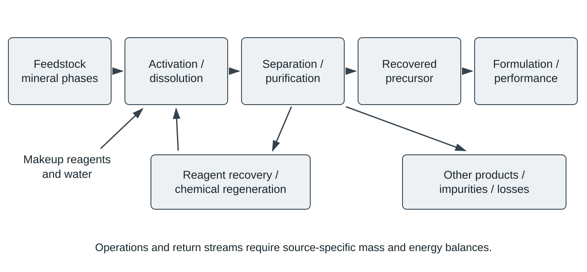
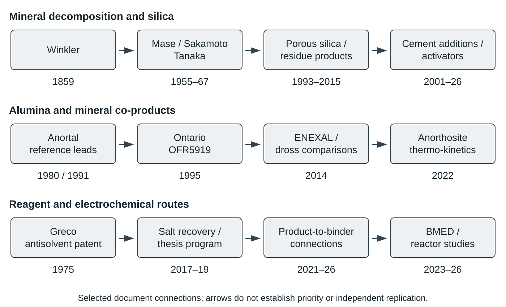

Silicate Rocks and Mineral Residues as Sources of Cementitious Precursors: A Literature Survey
Publication date:
Manuscript date: 21 October 2026
DOI: https://doi.org/10.5281/zenodo.23524396
Abstract
Chemical processing connects silicate rocks and mineral residues with several distinct classes of cementitious precursor: calcium-bearing intermediates for clinker or hydrated binders, magnesium hydroxide and magnesia, silica-rich residues and precipitates, soluble silicates, and aluminosilicate products. This survey organizes the literature by feedstock mineralogy, activation and dissolution, separation, reagent recovery, product characteristics, formulation and observed performance. It integrates historical mineral-processing accounts, contemporary chemical and electrochemical studies, theses, patent disclosures and selected industrial descriptions. Acid and alkaline dissolution, salt-assisted treatment, thermal conversion, electrochemical pH control, membrane separations and antisolvent operations are considered in relation to their actual product streams. Particular attention is given to the distinction between mineral dissolution and isolated-product recovery, liquor reuse and chemical regeneration, product purity and binder reactivity, and unit-operation results and integrated process balances. Reported applications include Portland-system additions, soluble-silicate activators, magnesium-silicate binders, magnesium oxychloride and phosphate formulations, specialized cement slurries and stabilization binders. Comparisons retain formulation, test age, analytical method and energy denominator wherever these are available. An extensive bibliography and thematic source catalog retain identified documents whose original bodies remain inaccessible or unassessed, with their evidence status stated explicitly.
Keywords: silicate minerals; mineral residues; chemical extraction; electrochemical processing; silica; magnesium; calcium; reagent regeneration; alkali activation; cementitious precursors
1. Scope and organization
The literature connecting silicate minerals with cementitious materials spans several operations that are often discussed separately. A mineral may first be altered by grinding, heating or chemical treatment; one or more elements may enter a leachate; a residue or precipitate may then be isolated; and the recovered material may subsequently be used in a clinker raw meal, a cement blend, an activator or a different binder. Evidence for one operation does not necessarily establish the next. Olivine-derived silica studies, for example, include mineral decomposition and powder characterization, conversion to a soluble activator, and tests in Portland or alkali-activated mixtures. These represent connected but distinct material histories. [56] [69] [98]
The organizing unit of this survey is therefore a material-and-process chain rather than the occurrence of a rock name in a title. The main sequence is feedstock provenance and mineral phases, activation or dissolution, separation and purification, reagent recovery, product characterization, formulation, and measured performance. A single source can inform several stages, but it is discussed principally where it supplies evidence. Figure 1 illustrates this organization. My earlier survey of basalt and basalt-derived materials [586] provides the broader setting of basalt in cement manufacture and cementitious composites; the present account concentrates on chemical and electrochemical precursor production and the literature linking its component operations.

Figure 1. Process-chain organization used in this survey. Product streams and their downstream formulations are separate from reagent-return streams. Arrows denote classes of operations reported in the literature, not a validated integrated flowsheet. Makeup, losses and impurity removal must be established for the particular process. Representative sources: Sections 5–7 and Tables 3–5.
Natural silicate rocks and mineral or industrial residues constitute the central feedstock classes. Carbonate decomposition, gypsum conversion, brine processing, concrete recycling and selected metallurgical operations are included as process comparisons when they clarify reagent recovery, separation hardware, product formation or formulation. Their feedstock identities remain explicit. Waste-glass and biomass-ash activators provide comparisons for soluble-silicate manufacture; this survey does not attempt a separate exhaustive treatment of every agricultural or glass residue. Reviews of waste-derived activators and serpentinite processing remain useful maps to those larger literatures. [67] [395] [388]
The bibliography is deliberately broader than the set of sources from which detailed numerical comparisons can presently be made. It includes assessed sources, sources represented only by an original abstract or excerpt, historical references described in subsequent literature, and identified records whose content has not been assessed. Appendix A gives the thematic and access status of every retained record. Inclusion establishes a traceable bibliographic location, not that every original has been read or that every reported result has been independently validated.
2. Terminology, quantities and material roles
2.1. Terms for materials and cementitious function
Terms for mineral origin, chemical composition and functional role are not interchangeable. A silica-rich powder can be a filler, a pozzolan, a source for soluble-silicate synthesis, or a nonbinder product depending on its properties and use. In the terminology used here, a pozzolan is a finely divided siliceous or silico-aluminous material that reacts with calcium hydroxide in the presence of moisture to produce cementitious reaction products. Pozzolana is a commonly used form of the term, particularly for natural materials. Trass is a material designation associated with natural pozzolanic volcanic material; it is not a synonym for all basaltic rock or all recovered silica. The historical DIN discussion by Sprung, Sybertz and Thielen identifies trass within natural pozzolanas, whereas the ACI terminology defines pozzolanic action without making volcanic provenance a requirement. [583] [587]
An SCM is identified by its role in a cementitious system, not simply by an oxide-analysis threshold. An activator supplies chemical conditions or soluble species that induce reaction in another precursor. A clinker raw-meal constituent enters the high-temperature manufacturing step; an addition to already manufactured cement enters a different material system. Magnesium-silicate hydrate, magnesium oxychloride and magnesium phosphate binders should accordingly retain their own formulation and phase identities rather than being described collectively as Portland cement. Table 1 states the operational meanings used throughout the survey. [397] [20] [97]
Table 1. Terminology and distinctions used in this survey. Operational meanings; terminology sources [583] [587] [584] [585]; process distinctions are illustrated by the cited studies in Sections 2–12.
| Term | Meaning and distinction |
|---|---|
| Pozzolan / pozzolana | Finely divided siliceous or silico-aluminous material reacting with calcium hydroxide and moisture to form cementitious products. Pozzolana is also used particularly for natural materials; provenance and functional testing remain separate. |
| Trass | Natural pozzolanic volcanic material designation in the historical cement terminology cited here; not a synonym for all basalt, all volcanic rock or chemically recovered silica. |
| SCM | Supplementary cementitious material: a role within a binder formulation; oxide composition alone does not demonstrate its reaction or performance. |
| Filler | A particulate addition identified by its physical/formulation role; the term does not by itself establish complete chemical inertness under all conditions. |
| Precursor / binder | A precursor supplies material to a subsequent reaction or manufacturing stage. A binder is the formulated material undergoing setting/hardening. A recovered powder is not automatically a finished binder. |
| Clinker raw-meal constituent | A material entering a firing step; different from an addition interground or mixed with already manufactured cement. |
| Activator / soluble silicate | An activator supplies chemical conditions/species inducing precursor reaction. Soluble sodium/potassium silicate is one activator class; mass of solution or impure solid is not mass of dissolved silicate. |
| One-part / prepared-solution formulation | Dry components mixed with water versus a formulation using a separately prepared activator solution. Water, solubility and proportion bases must accompany the labels. |
| Amorphous silica / silica-rich residue | A phase description versus a stream/composition description. A residue can contain silica plus salts, metals and crystalline phases. |
| Leaching / dissolution | Leaching extracts components through contact with a fluid; dissolution describes entry into solution. Neither automatically establishes isolated-product recovery. |
| Extraction / recovery / yield | Source-defined fractions at different process stages. Always state feed element, dissolved element, isolated product or other denominator. |
| Purity / phase composition | Concentration of a stated constituent versus identified phase proportions. Oxide-normalized XRF is not automatically absolute hydroxide purity. |
| Liquor reuse / reagent regeneration | Reuse returns an existing stream. Regeneration chemically restores a consumed reagent; measured makeup, losses and impurity accumulation determine the extent of a loop. |
| BMED / EDBM | Bipolar-membrane electrodialysis terminology used by sources for acid/base production and salt processing. Stack arrangement, membrane type and feed ions remain explicit. |
| Current / proton efficiency | Source-defined electrochemical efficiencies; not necessarily isolated-product yield, decarbonation fraction or overall process recovery. |
| Specific energy | Energy per stated product/feed quantity, with electrical/thermal and equipment/system boundaries retained. |
| Activity index / absolute strength | A strength ratio depends on its control and method. It is not an absolute strength or general standard-conformity determination. |
| BET area / particle / pore size | Different characterization quantities. Surface area and a particle-size descriptor cannot be substituted for pore diameter. |
| C–S–H / C–(A)–S–H | Calcium-silicate hydrate / aluminium-containing calcium-silicate hydrate notation; not identical to anhydrous clinker. |
| M–S–H / MOC / MPC | Magnesium-silicate hydrate / magnesium oxychloride cement / magnesium phosphate cement: distinct binder or hydrate families. |
| AS / ABS / APS | Ammonium sulfate / ammonium bisulfate / amorphous precipitated silica, respectively; these abbreviations are not interchangeable product bases. |
| Observed / modeled scale | Direct experimental or operating information versus simulated/annualized plant performance. Hardware existence does not establish integrated-process operation. |
2.2. Extraction, recovery and analytical basis
An extraction fraction usually describes how much of an element leaves the feed or enters solution. Product recovery concerns the fraction isolated at a subsequent stage. Product purity concerns composition of that isolated material. The denominators differ: a high Mg content in a recovered powder is not a high fraction of the original rock's Mg recovered, and a high silica surface area is not a silica yield. The original sources use these terms with different operational definitions; this survey retains the stated basis and flags places where it cannot be reconstructed. [30] [437] [132]
For an explicitly defined element balance, overall recovery can be written as isolated element in the product divided by that element in the feed. Multiplying a dissolution fraction by a downstream recovery fraction is justified only when both fractions refer to compatible streams and the same experiment. A concentration change alone is insufficient if liquid volume changes. Similarly, reporting an oxide-normalized XRF composition does not establish the absolute mass fraction of a hydroxide phase in a sample containing water or other unmeasured constituents. These distinctions are material to the Oliveira thesis and later article, discussed in Sections 5 and 13. [447] [30]
Specific energy also requires an explicit denominator and boundary. Values per kilogram of ammonium sulfate, ammonium ion, potassium sulfate, recovered MgO, clinker precursor or finished binder are different quantities. A stack-voltage/current integral does not automatically include feed preparation, grinding, pumping, heating, filtration, washing, drying or downstream firing. Where a publication reports electrical, thermal and modeled integrated-system quantities, they are kept separate. Table 5 provides examples without forcing unlike values onto a common axis. [188] [276] [442] [280]
3. Historical process lineages
3.1. Mineral decomposition and silica separation
The historical literature predates contemporary terminology for cementitious precursors. Winkler's 1859 report on silicic material released from minerals in hydrochloric alcohol describes qualitative observations of mineral decomposition and silica behavior. The recovered source is a contemporaneous reprint attributed to an earlier publication. It is evidence of a documented chemical observation, not evidence of a modern silica specification, cement test or industrial precursor process, and is not used here to assign priority of discovery. [456]
Mase's 1955 studies separately addressed sulfuric-acid decomposition of serpentine and examination of its residue. Temperature, grinding and acid-dilution heat appear in the dissolution account; settling and magnetic separation in the residue work did not fully separate intergrown silica and oxide particles. These observations establish an early distinction between dissolving Mg-bearing phases and obtaining a purified silica product. Later thermal-treatment studies and Sakamoto's work on silicic acid co-dissolved with magnesia extend the lineage to gelation and washing. Sakamoto's reported silica yield of 8–9% is relative to original feed mass, not a percentage extraction of the silica initially present. [360] [359] [362] [361] [365]
Tanaka, Katayama and Tanaka's 1967 ammonium-sulfate roasting study documents another route from serpentinite to separable components. The lineage is relevant to later sulfate-assisted extraction and reagent recovery, but historical roasting chemistry and contemporary electrodialysis are distinct operations. Kosuge and coauthors' later acid-treatment work addresses porous silica and the effects of residual MgO and heat treatment on pore properties. Its 1993 publication date is distinct from its later online digitization date. An earlier conference predecessor remains a bibliographic lead whose exact identity has not been resolved; it is not silently merged with the separately recovered 1989 patent disclosure. [451] [358] [443] [482]
3.2. Anorthosite, alumina and mineral co-products
Anorthosite-processing literature connects alumina extraction, silica-bearing products and potential cement uses. The Anortal references of Gjelsvik and Braaten are retained as historical sources located through later original bibliographies; their original bodies have not been recovered. Néron and coauthors' thermo-kinetic study provides a later experimental/modeling treatment of acidic anorthosite leaching and preserves links to those programs. The relationship is a documented historical and technical connection, not proof that every proposed co-product flowsheet operated continuously. [438] [436] [207]
Veldhuyzen's 1995 Ontario report covers acid extraction from calcic anorthosite and resulting aluminium chemicals, silica-bearing materials and cement-additive tests. The recovered report includes separate physical-page and printed-page sequences; selected original test pages have been inspected. It allows product-processing and cement-use questions to be traced to a government original rather than only to later summaries. Its Table 68 contains an unresolved expansion/reduction discrepancy and is discussed without repairing the printed decimal in Section 13. The existence of a tested residue is distinct from the operating status of a complete anorthosite refinery. [446]
3.3. Historical leads and continuity of programs
Several late-twentieth-century sources remain available only through bibliographic witnesses. Yu, Yang and Shan's 1998 short-process study and 2000 sodium-metasilicate study, Yang and coauthors' 2001 acid-concentration study, and Wan and coauthors' 2004 microwave-leaching study are retained with native titles and source-witness notes. The 1999 kinetics record has an original abstract, but its first-page discrepancy remains unresolved. The subsequent 2007 review and 2010 silica-recovery record supply explicit references to this sequence. The survey can document that these references occur in the literature while attributing any description of their findings to the source actually inspected. [459] [460] [458] [455] [457] [373] [374]
Figure 2 presents selected document and program connections. Its dates identify publications or documented accounts; they do not establish first invention, first operation or independent replication. Related theses, conference papers and journal articles remain separate bibliography entries because each is a different recoverable document, while the accompanying notes identify shared experiments where the evidence permits that conclusion.

Figure 2. Selected documentary lineages: mineral decomposition and silica recovery; anorthosite/alumina co-products; and salt/electrochemical precursor processing. Connections denote documented thematic or citation relationships, not a complete genealogy, priority determination or proof of continuous operation. Sources are identified in Section 3 and Appendix B.
4. Feedstock provenance, phases and preparation
4.1. Rocks and mineral residues
Bulk chemical analyses describe an inventory of elements but do not uniquely specify their host minerals. Calcium in a plagioclase-bearing rock, magnesium in olivine or serpentine, and silica in a leach residue occupy different chemical and physical environments. Consequently, a mineral dissolution study is most interpretable when provenance, phase identification, grain size, alteration state and impurity composition accompany the oxide analysis. The serpentinite reviews and mineral-specific binding study distinguish antigorite, lizardite and chrysotile rather than treating serpentinite as a single reagent. [388] [399] [34]
Serpentinite residues may also contain talc, carbonates, magnetite and other phases. Häggqvist and coauthors' 2026 abstract describes a talc/carbonate-bearing feed and different wet/dry extraction results. Vila Nova's institutional thesis abstract identifies a silica-bearing residue dominated by stable talc and reports a high serpentinite-to-NaOH proportion in its silicate route; the exact ratio basis remains unverified in the unrecovered body. Neither source establishes that the same conditions apply to every serpentinite, and Vila Nova's zeolite application is a process comparison rather than a binder test. [220] [454]
Iron-ore tailings provide another silica-bearing feed class. Their mineralogy and iron/aluminium content differ from olivine and serpentinite, and the activator studies retain those differences. Lorenzini's thesis reports approximately 52.84% SiO2, 25.74% Fe2O3 and 15.56% Al2O3 for the investigated tailings. Residual insoluble material remains relevant to the recovered activator. A chemical route that yields soluble silicate from these tailings is therefore not described simply as dissolution of pure silica. [445] [314] [193]
4.2. Grinding, thermal activation and competing phase changes
Grinding changes exposed area and may alter defect structure or liberate intergrown phases; thermal treatment changes the phases themselves. These effects need not be monotonic. The early serpentine decomposition literature reports conditions under which high-temperature pretreatment lowered extraction, whereas the later heat-treated-serpentine binder study examines material-specific changes in reactivity and strength. Leško and coauthors' milling study supplies a separate characterization branch. Such findings support reporting the actual treatment and mineral assemblage rather than assigning a universal benefit to “activation.” [360] [399] [444]
The Magnola microtexture account provides a contrasting example: under its reported concentrated-HCl conditions, silica remained as pseudomorphs, gelation was not observed, and finer grinding did not significantly accelerate the tested dissolution. This is original-abstract evidence for a particular ore/process system, not a general rule that grinding is irrelevant or that silica cannot restrict transport. Recent ultrasound/chemical activation studies instead investigate silica-rich transport restrictions under other chemistries. Their differences remain conditional on feed and treatment rather than being reconciled by an unsupported universal mechanism. [24] [238]
Table 2. Representative feedstock classes and provenance constraints. Rows describe source-specific systems, not universal feed specifications.
| Feed class | Relevant material distinction | Evidence and source |
|---|---|---|
| Olivine | Mg/Fe silicate decomposition may supply silica and Mg-bearing streams; recovered silica differs from untreated powder. | Original selected passages/body, depending on source: [56] [397] |
| Serpentinite | Antigorite/lizardite/chrysotile, talc, carbonates and other phases alter treatment response. | Original mineral/product passages [399]; abstract-level mixed-feed comparison [220] |
| Anorthosite | Plagioclase-bearing feed connects aluminium recovery, other ions and silica-rich products. | Recovered original study/report [207] [446] |
| Iron-ore tailings | Silica, iron and aluminium phases enter silicate-activator production; residual insolubles may remain. | Original thesis methods/results [445]; abstract/excerpts [193] |
| Boron mud / nickel slag | Partly carbonate-bearing or activated industrial materials enter particular Mg-based formulations. | Original abstract/excerpts [97] [184] |
| Dross / red-mud derivatives | Pretreatment changes metal, salt and oxide inventories before residual material use. | Original abstract/excerpts/body, source-specific [169] [32] [343] |
| Wollastonite / limestone / gypsum | Different calcium hosts and counterions; preserve actual feed in electrochemical comparisons. | Original bodies/abstracts [316] [332] [272] |
| Brine / hydrated concrete waste | Process comparisons with different dissolution and impurity histories from fresh rock. | Original abstracts/bodies [168] [298] |
5. Activation and dissolution routes
5.1. Acid treatment of magnesium silicates
Acid decomposition can produce a Mg-bearing liquor and a silica-rich residue, but dissolved silica, gel formation, impurity partition and washing determine the recoverable products. Olivine silica work reports powder properties and yields that depend on processing conditions; the reported 54–83% isolated silica yield should not be substituted for mineral dissolution. The related acid-dissolution analysis identified in the correction to an alkaline-synthesis article is also retained: the correction withdraws an introductory historical claim about the absence of prior rate-determining-step analysis. It is not a second synthesis experiment. [56] [52] [310] [311]
Taubert's 2000 original abstract describes HCl attack of serpentinites with acid concentration, temperature and stoichiometric excess varied, and reports almost complete Mg extraction under selected conditions. The full body remains unrecovered, so the abstract supports the existence and reported subject of the study rather than a harmonized kinetic dataset. Pietriková, Búgel and Golja's recovered article and Fedoročková and coauthors' later silica study provide original-body material on leaching and silica products. Their associated product characterization does not itself establish cement performance. [452] [448] [437]
The review by Peng and coauthors identifies Yang and coauthors' 2002 process-optimization study and reports 98.81% MgO extraction with an FS-1 activation step. The original body and activator identity remain open. This value is therefore a secondary report, not an independently verified original extraction measurement in this survey. The same review identifies a 2010 mechanochemical route with reported product size and surface area; detailed conditions and reagent-recycle claims still require the original. These sources remain in the bibliography rather than disappearing from the historical account. [367] [421] [423]
5.2. Acid leaching of calcium and aluminium-bearing feeds
Acidic anorthosite processing combines mineral dissolution with subsequent separation of aluminium, silica and other constituents. Néron's study connects thermo-kinetic modeling with experimental dissolution, whereas the Ontario report contains a broader range of resulting product tests. These sources address the coupled production of several streams; their energy and product accounting should accordingly identify which streams are included. A calcium-silicate process cannot be represented solely by the amount of calcium dissolved if other reagents, impurities and products determine separation duties. [207] [446]
The literature also includes chemical treatment of already hydrated cementitious materials. Acetic-acid decomposition of recycled concrete fines produces phase-separated materials, while waste soaking solution from aggregate treatment has been tested directly in new mixtures. The latter is a liquor-use route, not a purified-calcium product. Its setting, fluidity and strength observations depend on acid concentration, and increasing acid concentration did not simply give a monotonic strength benefit in the reported system. These comparisons retain the distinction between fresh-rock dissolution, hydrated-waste decomposition and use of a residual process solution. [104] [157]
5.3. Alkali, hydrothermal and combined acid–alkali processing
Alkaline dissolution of olivine is represented separately from acid digestion. Combined acid–alkali treatment of serpentinite can use an acid-treated residue as the feed for NaOH extraction followed by neutralization to silica. Auyeshov and coauthors' recovered original describes such a route and product characterization; adsorption or catalyst applications mentioned by the source do not constitute cement tests. The source-specific use of 4 M NaOH is not a general optimum for silica-bearing rocks. [310] [415]
Fusion and hydrothermal routes to soluble silicates are also feed-dependent. Ningsih and coauthors' mud study uses carbonate fusion followed by water leaching and reports a maximum extraction fraction of 43.6% under a selected test condition. Its methods/abstract and conclusion give different liquid-to-solid descriptions, which are retained as a source inconsistency rather than combined with the separate alkali-to-feed ratio. Lorenzini compares hydrothermal tailings/KOH processing with a dried and thermally treated solid route; the binder tests use the latter product. The two routes cannot be assigned the same demonstrated downstream performance. [132] [445]
CN102602938A describes two-stage acid extraction of serpentinite tailings, use of a later filtrate in an earlier stage, NaOH treatment, and CO2 precipitation of silica. Example values are applicant-reported, including MgO extraction, silica purity and particle size. The disclosed reuse of acidic filtrate reduces free-acid carryover in that scheme; it does not establish regeneration of sulfuric acid from all sulfate salts. Crystallization of sodium carbonate from a mother liquor is likewise a different operation from regenerating NaOH. [465]
5.4. Salt-assisted and electrochemically generated reagent routes
Ammonium-sulfate-assisted treatment separates the initial mineral reaction from later aqueous separation and reagent recovery. The later Oliveira article gives liquid ICP-OES extraction, downstream recovered fraction and an overall Mg yield on one basis, but a substantially different extraction estimate from solid-residue SEM-EDS. Its approximately 63% liquid extraction and 79% downstream recovery correspond to about 50% overall rock-Mg recovery on that stated basis. The solid-residue estimate near 85% is not another independent experiment. The source explicitly identifies analytical and reproducibility limitations. [30]
The earlier Oliveira thesis belongs to the same program but contains a recovery-equation interpretation problem and a separately reported 82% recovery figure. Its numbers are not repaired retrospectively using the later article. Di and coauthors' 2012 original abstract reports magnesium extraction, product composition and ammonium-sulfate recovery as three different quantities; the reported reagent recovery of 55% does not establish a lossless circuit. Häggqvist's later abstract reports partial acid recovery and different wet/dry extraction values, again under its own feed and conditions. [447] [422] [220]
Electrochemical generation of acidic and alkaline streams supplies a different means of creating the dissolution/precipitation environment. The membrane-free ultramafic-rock study provides original-body evidence that real rock can be processed using such streams, with Mg-bearing products recovered. Ramuglia and coauthors instead investigate a synthetic magnesium silicate model. The feed distinction matters: a model compound can establish separation and phase formation while leaving natural-rock dissolution, impurity handling and associated product behavior unresolved. [299] [2]
Table 3. Selected dissolution and extraction accounts. Values are author-reported and preserve access and denominator limits.
| System / source | Reported result or conditions | Basis / locator / limitation |
|---|---|---|
| Olivine acid silica [56] | 54–83% silica yield. | Original abstract/selected passages; isolated silica yield, not automatically mineral dissolution or purity. |
| FS-1 activation [421] | 98.81% MgO extraction reported by Peng 2019. | Secondary summary in [367]; original body/FS-1 composition unrecovered. |
| Serpentinite sulfate roasting [422] | 62.42% Mg extraction; 85.63% Mg(OH)2 content; 55% ammonium-sulfate recovery. | Original bilingual abstract; three different denominators. Full methods not accessed. |
| Serpentinite sulfate route [30] | About 63% liquid-basis Mg extraction; 79% recovered fraction; about 50% overall rock-Mg recovery; about 85% solid-residue estimate. | Original methods/analytical discussion/conclusion. ICP-OES versus SEM-EDS estimates; experiments not replicated. |
| Talc/carbonate-bearing feed [220] | 26% aqueous and 39% dry Mg extraction; 31% theoretical acid recovery. | Original institutional abstract; different treatment conditions; exact body/balances open. |
| Mud/carbonate fusion [132] | 700°C fusion; water extraction maximum 43.6% at 80°C/2 h. | Original methods/results/conclusion. Liquid/solid 1:5 versus 1:3 inconsistency; not product purity or binder strength. |
| Tailings/KOH [445] | Hydrothermal 200°C; solid route 500°C/3 h. | Original methods; hydrothermal series 4/6/8/24 h but abstract first time 2 h. Binder tests use solid route. |
| Oxalic-acid comminution [432] | 93.42% reported silica recovery. | Institutional extended abstract only; denominator/full methods and related-version overlap unresolved. |
6. Separation, purification and product formation
6.1. Silica-rich solids and precipitates
Silica can remain in a leached particle, enter solution and gel, or be dissolved under alkaline conditions and precipitated later. These pathways produce different washing, filtration and drying problems. The early residue work on intergrowth, the Magnola pseudomorph account, and the later silica-product studies accordingly describe different material structures rather than contradictory measurements of an otherwise identical powder. BET area, pore properties, particle size, residual salts and oxide composition are complementary descriptors; none substitutes for a functional cementitious test. [359] [24] [358] [437]
Chen and coauthors' 2010 original bilingual abstract reports 88.37% silica recovery and a 1.28 μm descriptor. The native text calls it average particle size; the English abstract calls it average pore size. This survey retains that difference and does not use the number to compare pore structures. The source establishes reported silica production, not a demonstrated strength or durability effect in concrete. [374]
Precipitation hardware can also be informative without establishing a mineral extraction route. US20030219370A1 concerns silica precipitation from waterglass using a rotating packed bed. Its feed is an already manufactured soluble silicate. It therefore supplies a process comparison for precipitation and mixing, while leaving upstream natural-mineral decomposition outside the disclosed experiment. JPH01261218A supplies a different historical silica-gel disclosure and is not treated as identical to a conference paper solely because of overlapping author/date associations. [491] [482]
6.2. Magnesium products and impurity partition
Staged precipitation can distinguish removal of impurities from recovery of Mg-bearing phases. Sierra and coauthors' abstract describes pH-dependent treatment and a mixed mirabilite/brucite product, which is not automatically pure Mg(OH)2. Nitric-acid leachate work describes artinite, a specific carbonate-hydroxide phase; phase purity and Mg recovery from the original feed remain different metrics. Hu and coauthors' original journal abstract describes MgSO4 purification, ammonia precipitation and calcination to a high-MgO product, with full methods unrecovered. [33] [42] [439]
Brine-derived reactive magnesia provides a comparison in which precipitation and calcination are linked to actual binder use. Waste concrete sludge has also been studied as an alkaline source for Mg recovery from brine. In both cases, precipitate washing and thermal conversion belong to the production route. The feed brine is not an impurity-bearing silicate leachate, and the results do not establish a natural-rock process merely because the resulting oxide is chemically similar. [168] [112]
6.3. Alumina, iron-bearing residues and other co-products
Metallurgical separation can change the composition and suitability of a remaining cement-feed material. Hydrothermal black-dross processing removes or transforms metal, salts and aluminium-bearing fractions before the residue enters clinker raw meal. The upstream recovery paper and the subsequent clinker study therefore form a process chain rather than two independent cement-performance experiments. Their mass fractions refer to different intermediate streams. [169] [32]
Red-mud processing extends the comparison to reduction, magnetic separation and aluminosilicate products. The ENEXAL pilot account reports an electric-arc furnace and fiberizing line, while other papers describe building products or special cement additions from transformed residues. The products and unit operations differ: iron/mineral wool, bricks, special additions and clinker feed are not interchangeable endpoints. The English translation and original-language record of Zinoveev and coauthors are one underlying work; distinct translation records do not supply independent operating evidence. [1] [12] [176] [343]
Table 4. Product characterization and downstream-use evidence. “Not established here” describes inspected evidence, not necessarily every unaccessed part of a source.
| Product / route | What is established in inspected evidence | Downstream-use boundary |
|---|---|---|
| Porous silica from serpentinite [358] | Source identity, abstract and selected original material; residual MgO /heat treatment linked to pore properties. | Characterization does not establish binder performance. |
| Acid–alkali silica [415] | Original methods/conclusions describe 4 M NaOH treatment and neutralization. | No cement test established in inspected material. |
| Mixed Mg precipitate [33] | Original abstract describes impurity removal and mirabilite/brucite product. | Not automatically pure brucite or a tested binder. |
| MgO – SiO2 from olivine [397] | Actual binder study connects recovered components with M–S–H and mortar tests. | Specific formulation; not Portland equivalence. |
| Boron-mud liquor/residue [20] | Original abstract links treatment products with MOC formulation and immersion response. | Added MgO required; mechanism and full formulation remain body-recovery tasks. |
| Tailings-derived silicate [450] [445] | Original thesis formulation/performance sections inspected. | Tailings-derived tested activators must not be replaced by untested serpentinite-derived ones in description. |
| Dross-leached residue [32] | Original abstract reports raw-meal incorporation and clinker/cement characterization. | Raw-meal addition, not recovered-calcium substitution. |
| Synthetic Mg silicate electrochemistry [2] | Original results describe separated/characterized precursor phases. | Natural-rock impurities and specific binder performance are separate questions. |
7. Reagent recovery, regeneration and recirculation
7.1. What a reagent loop measures
Liquor reuse, recovery of a salt, and chemical regeneration of an acid or base represent different loop closures. A filtrate can be used again while impurities and counterions accumulate; a salt can be precipitated while solvent recovery remains incomplete; an acid/base cell can operate while downstream washing losses remain unquantified. The source literature contains all of these arrangements. The distinction is visible in the serpentinite patent, the antisolvent sequence and the BMED studies. Figure 1 retains reagent and impurity streams explicitly rather than drawing an unqualified closed arrow around the whole process. [465] [498] [276]
7.2. Antisolvent separation and thermal recovery
Greco's 1975 patent describes alcohol-assisted separation of ammonium sulfate from ammonium bisulfate-containing organic-synthesis liquor, with preferred methanol addition, concentration and solvent separation. Recovery of precipitated AS is not itself conversion of AS to ABS. The disclosure's damaged numerical table and temperature OCR are not reconstructed here. Koivisto's later dissertation supplies original tests of related ethanol precipitation in individual analytical-salt solutions: AS, Mg sulfate and Fe sulfate precipitated to different extents, while ABS remained dissolved. Solvent recycling and separation of other precipitated salts therefore remain part of the process question. [498] [441]
Thermal acid regeneration involves a different set of streams. The HCl-regeneration review distinguishes pyrohydrolysis and other recovery operations, while chloride-based mineral process accounts connect MgCl2 conversion with HCl return. Konlechner and Kappacher describe kilogram-scale mineral tests and a conceptual integrated route alongside a separately stated roaster installation. A historical government account of magnesia/HCl equipment is retained as a hardware comparison. None of these sources is used to establish continuous integrated silicate-rock-to-cement operation solely from the existence of a roaster. [334] [287] [401] [453]
Reductive regeneration of MgO from desulfurization material and sulfur reduction of gypsum provide additional thermal chemistry comparisons. Their sulfur inputs, gas products, heat duties and intermediate phases remain explicit. In particular, CaS production is not CaO production, and neither operation alone establishes cement-phase manufacture or a complete recovered-acid balance. [158] [227]
7.3. Electrodialysis and salt-specific behavior
Koivisto, Reuter and Zevenhoven's 2023 original compares two- and three-compartment BMED arrangements for AS/ABS reagents. Reported specific energies lie in different ranges for the arrangements and are expressed per kilogram of salt. The authors state that experiments were performed once; comparison of initial current traces in selected tests does not establish a replicated performance distribution. Stack heating and pump contributions are considered separately, so electrical dissipation is not automatically a useful recovered-heat credit. [276]
The 2025 conference paper compares EUR2 and EUR6 equipment. For K2SO4, roughly 3.5 and 4 MJ/kg correspond to about 0.97 and 1.1 kWh/kg; throughput differs by about eightfold in the reported tests. Membrane type and flow also change, preventing a clean attribution to scale alone. Some tests are reused from earlier work. The paper's printed concentration-ratio and energy-denominator equations have interpretation/dimensional problems discussed in Section 13. Its later journal abstract reports 3.4 kJ/kg K2SO4. The conference result gives related MJ/kg order-of-magnitude evidence, but is not a formal corrigendum to the later article. [442] [92]
Kikuchi and coauthors' recovered original compares ion species and anion-exchange membranes in BMED, supplying component-level evidence on operating conditions rather than a mineral refinery demonstration. Brine pilots add real-feed and operating-mode information: one report distinguishes artificial and real brines and describes a 59-hour run, while an industrial-application account includes hardness-removal and ion-exchange pretreatment. Acid/base concentration, current efficiency, stream purity and specific energy remain separately reported quantities. [405] [189] [190] [280]
Acid-recovery studies using diffusion dialysis, selective electrodialysis or a concentration stage address other parts of the circuit. Model HCl/FeCl2 separation factors are not percentage acid recovery. An H2SO4 recovery account reports membrane-flux decline and cleaning during its experiment. Newer gypsum/amine and membrane-interface precipitation records add cycle-reuse and transport/deposition questions, but their unrecovered bodies do not yet support detailed balances in this survey. [197] [225] [230] [65] [115]
Table 5. Reagent recovery, operating basis and energy examples. Values are not normalized across different chemical products.
| Source / operation | Reported quantity or observation | Denominator and limits |
|---|---|---|
| Greco antisolvent disclosure [498] | Preferred alcohol addition about 400–500% by mass of AS present; solvent separation described. | Patent claim/disclosure; organic-synthesis liquor. Not AS-to-ABS chemical conversion or a rock process. Numeric table OCR damaged. |
| Ethanol tests [441] | 44% AS, 50.3% hydrated Mg sulfate, 94.9% Fe sulfate precipitation. | Original synopsis chapter 5.4/Table 6; separate 10 mL analytical-salt samples plus 20 mL ethanol. Mixed-liquor purification/solvent recovery not established. |
| AS/ABS BMED [276] | Two compartments 3630–4844 kJ/kg; three compartments 5102–7223 kJ/kg. | Original results/comparison; kg AS/ABS salt. Stack electricity, not whole plant; no exact duplicate experiments. |
| K2SO4 BMED [442] | EUR 2~3.5 MJ/kg (~0.97 kWh/kg); EUR 6~4 MJ/kg (~1.1 kWh/kg); ~0.1/~0.8 kg/h. | Original pp 8, 11; kg K2SO4 . Membrane/flow/size all change; some reused tests. Printed formula issues. |
| Later sulfate comparison [92] | Abstract prints 3.4 kJ/kg K2SO4 . | Exact article body/calculation not recovered. Related conference MJ/kg is not formal correction. |
| Brine BMED [189] | A 59-hour run reported. | Original abstract/process/conclusion excerpts; enabling-unit evidence on brine, not integrated rock liquor. |
| Acid concentration [225] | EDBM plus concentration stage. | Original abstract; HCl -basis energy not harmonized with NaOH /salt values. |
| Filtrate reuse [465] | Two-stage acid-filtrate reuse, mother-liquor reuse 1–2 cycles. | Patent description/examples. Acid reuse is not acid regeneration from sulfate; no closed NaOH balance. |
8. Calcium-bearing precursors and clinker-related processing
8.1. Electrochemical production and spatial separation
Ellis and coauthors' electrolyzer study connects CaCO3 decarbonation, calcium-hydroxide formation and cement-phase production. It is a reference for aqueous electrochemical architectures, but the carbonate feed retains a carbon-containing stream. Licht and coauthors' earlier STEP work belongs to a different solar-thermal/electrochemical chemistry and is not merged with the aqueous pH-swing lineage. The feed, electrolyte, electrode reactions and products distinguish these route families. [332] [307]
Subsequent calcium-hydroxide precursor work addresses continuous production, product location and electrolyte management. The original abstract of the 2022 electrolyzer paper reports continuous precursor production; later original-body studies move precipitation away from membranes or alter pH to manage deposition. The orthogonal-ion-vector study reports a 50-hour operating test at 100 mA/cm². That is a defined reactor experiment, not continuous industrial cement output, and its preprint/journal versions are not independent confirmations. [313] [317] [319]
Other electrode/reaction choices change cell voltage and material inventories. An original abstract on a zero-gap, anthraquinone-mediated route reports an initial 0.38 V at 100 mA/cm² and high proton efficiency. These quantities describe that electrochemical operating condition; mediator inventory, regeneration, durability and all downstream operations remain necessary for an integrated balance. Hydrogen-depolarized and anion-mediated routes similarly require explicit handling of gas use and acid streams rather than a voltage-only comparison. [293] [270] [272]
8.2. Silicate feedstocks, waste cement and product identity
Lu and coauthors' integrated cementitious-materials study includes a noncarbonate silicate feed, with wollastonite as the investigated mineral, and recovered co-products. It provides evidence beyond carbonate-fed cells but does not make wollastonite and basalt interchangeable. A chemically defined mineral and a multiphase rock differ in dissolution, impurity partition and reagent demand. The literature's broader calcium-silicate perspective is therefore considered alongside the primary process papers rather than replacing them. [316] [305]
Waste cement presents another calcium-bearing feed, already transformed by clinker production and hydration. Electrolytic extraction from waste cement and electrochemical separation of recycled concrete powder demonstrate particular recovery arrangements. Lyu and coauthors report a pilot recycling system with recovered hydroxides, silica and aggregates; annualized capacity and whole-life scenarios must remain distinct from directly observed pilot output. Dunant and coauthors' electric Portland-cement recycling is a further industrial/physical comparison with a different process boundary. None is used as evidence that fresh basalt dissolution and reagent regeneration have been demonstrated under the same conditions. [298] [219] [3] [300]
A precursor intended for belite-rich clinker is also different from one demonstrated in an ordinary alite-rich Portland formulation. The recent belite-route abstract is retained with that product boundary. A waste-cement preprint proposing regenerated calcium-silicate hydrate is identified as a preprint and as a hydrated-product route, not assumed to establish ordinary Portland-cement equivalence. [274] [387]
8.3. Chemically processed residues in raw meal and other formulations
The black-dross residue study reports clinker production using 2 and 4 wt% residue in raw meal fired at 1450°C, with clinker/cement characterization described in the original abstract. It is a demonstrated downstream-use account at the abstract's level of access, but is not limestone replacement by recovered calcium. Its apparent sample-label inconsistency remains open. Hydrolysis of secondary dross for ammonia removal is a feed-pretreatment study; strength values cited in its discussion refer to other work rather than new strength measurements in that experiment. [32] [429]
A separate hydrolysis-modified dross study reports supersulfated-cement performance with age-dependent relative gains. Its larger one-day relative increase cannot be substituted for the smaller reported 28-day increase. Reported leaching compliance applies to the tested extraction procedures and limits, whose exact editions still require body verification. Nepheline/belite-sludge hydrochemical conversion supplies a further alumina/co-product connection, with historical operating assertions dependent on underlying records. [122] [377]
9. Silica, aluminosilicate and soluble-silicate products
9.1. Recovered silica in Portland systems
Justnes and Ostnor's 2001 original abstract connects HCl-derived olivine silica with mortar strength and calcium-hydroxide consumption. Its full paper remains unrecovered and its pagination differs from a patent citation, but it is an identifiable early cement-addition source. Later olivine studies expand the range of characterization and replacement levels. The reported tests concern chemically recovered silica, not untreated basalt powder. [368] [98]
The more recent APS literature illustrates how product texture and formulation interact. One study links surface/pore modification and thermal treatment to reactivity, workability and mortar strength, reporting a 10 wt% as-produced APS mixture with greater 28-day strength than its control and a 20 wt% mixture with comparable strength. A related reactivity study reports high water demand, sulfate depletion and early dilution, and examines additional gypsum. A further quaternary-formulation study includes limestone and gypsum. These are different mixtures and stages of the same broader research lineage; a replacement level from one is not a general product specification or independent validation of every extraction step. [78] [185] [79]
Specialized cement systems provide another use. Quercia and coauthors examine olivine nanosilica in oil-well cement slurries using hydration, rheological, thickening and ultrasonic-strength tests. The inspected source passages identify a pilot-batch silica preparation, not continuous mineral-to-clinker operation. Specialized slurry behavior is reported under its own formulation and test conditions rather than transferred to structural-concrete durability. [191]
Serpentinite-derived silica has additional cementitious disclosures. JP2001240453A reports hydraulic-composition examples, including high strengths, but cement type, water, silica content, aggregates and fibers change across examples. Those patent numbers therefore cannot isolate the effect of recovered silica alone. Jerban's thesis and the related later patent family establish further source-recovery and concrete-use connections; access to a thesis does not imply that every performance table has been assessed. Patent family publications remain separate documents linked to one family where demonstrated. [481] [440] [493] [514]
9.2. Soluble silicates and alkali-activated formulations
Recovered silica can be converted to an activator rather than added directly to Portland cement. Gao and coauthors connect olivine nanosilica to soluble-silicate activators for slag/fly-ash blends, with reaction kinetics, gel structure and strength compared against commercial waterglass. The silica production, activator preparation and binder reaction are three successive material transformations. Commercial-waterglass comparison does not erase differences in soluble silica, alkali concentration or water content. [69]
Iron-tailings activators form another chain. Figueiredo and coauthors' original abstract/selected text describes mechano-thermo-chemical NaOH processing and one-part binder testing, with reported strength below the commercial-silicate comparison at the selected maximum. Prates' thesis separately identifies binder tests using an iron-tailings-derived activator, while its serpentinite-derived silicate was too dilute for those tests. A solid-route serpentinite patent is linked to the latter research program, but the patent's broader possible uses are not proof that the thesis tested a serpentinite-derived binder. [193] [450] [461]
Lorenzini's potassium-silicate thesis makes the formulation distinction particularly visible. Hydrothermal treatments at 200°C produced solutions with increasing reported silica concentration across the stated time series; the tested binders instead used the solid route heated at 500°C for three hours. For paired commercial/recovered activators, seven-day strength means were 24.33/21.12 MPa without filler, 24.88/14.52 MPa with 25% filler, and 18.50/9.64 MPa with 50% filler. Two specimens were tested per formulation. A different direct one-part mixture reports 31.21 MPa. The recovered activator contained residual insoluble material, and these comparisons should retain their water, activator and filler differences. Table 6 records the values as reported rather than interpreting them as proof of equal activator chemistry. [445]
The 2023 Lorenzini article's publisher-indexed abstract repeats key thesis composition and strength values, including 21.12 and 31.21 MPa. The article and thesis are therefore linked as overlapping evidence rather than counted as two independent experimental demonstrations. Their full relationship cannot be completely mapped without the article body. The thesis also has time, demolding and strength-unit documentation discrepancies, which remain visible in Table 8. [314] [445]
Farenzena and coauthors' tailings-stabilization study provides an application connection to an alternative powdered-silicate activator and the Chamon/Lameiras patent family. Publisher-indexed original method passages describe a NaOH/tailings solid activator and dry-stacking binder tests. The exact full artifact is unrecovered, so a detailed numerical comparison is not made here. Its geotechnical material role remains distinct from a tested structural-concrete or commercial-cement specification. A related LCA is retained as a model/process-boundary source rather than another operating plant. [347] [512] [449]
9.3. Comparisons and unassessed branches
Waste-derived activator reviews describe fusion, hydrothermal and thermochemical routes from silica-rich materials. These are process comparisons for understanding extraction conditions, soluble-species composition and resulting binder formulations. A reductive-melting route using Glauber salt, microsilica and semicoke further shows that soluble silicate manufacture can involve reductant and thermal inputs not present in an aqueous extraction description. Product synthesis and modulus are not, by themselves, binder performance. [67] [395] [239]
Other catalogued one-part binder and residue studies remain unassessed. For example, Kou and coauthors' recent abstract describes an iron-tailings/fly-ash/slag blend, but the activator's provenance has not been verified in its original body. It is retained as a boundary/comparison lead rather than asserted to be a chemically extracted precursor demonstration. The same treatment applies to the unexplored records in Appendix A: their titles locate topics; their results are not reconstructed from terminology alone. [301]
10. Magnesium-bearing precursors and binder systems
10.1. Separated MgO and silica versus activated mineral
Scott and coauthors connect products recovered from olivine with a magnesium-silicate binder. The inspected original reports a 1:1 MgO:SiO2 formulation, M–S–H characterization and recovered-material mortar strength exceeding 20 MPa at 28 days. This is a link from mineral-derived products to an actual binder test, not merely a proposed application of a separated powder. It remains a particular MgO–SiO2 system and is not described as Portland cement. [397]
Ivanova and coauthors' heat-treated-serpentine materials belong to a different route: the thermally modified mineral reacts with aqueous solutions without necessarily passing through separately purified MgO and silica streams. Mineral identity, thermal history and solution treatment are therefore part of the binder definition. The shared occurrence of magnesium-silicate hydrates does not make the manufacturing routes or impurity inventories identical. [399]
Long-term MgO–SiO2 tests using silica fume, calcined clay and metakaolin supply a performance comparison, including late-age strength retrogression reported for a silica-fume mixture and continued gains in other formulations. These materials were not all recovered from olivine. The study demonstrates that silica/alumina source and age matter, but cannot itself establish the long-term behavior of a different recovered-mineral formulation. [372]
10.2. Oxychloride, phosphate and other Mg-based formulations
The boron-mud acid-leaching study connects both liquor and silica-bearing residue with magnesium oxychloride formulation. Its abstract reports a softening coefficient of 0.85 after 28 days of immersion under selected conditions and an interpretation involving hydrate/silica-related microstructure. Added MgO is required. The unrecovered full body limits reconstruction of composition and mechanism, so the abstract's interpretation is not presented as independently confirmed phase causality. [20]
Calcined boron mud has also been investigated in magnesium phosphate cement, where partly carbonate-bearing phases distinguish it from a purely silicate feed. High-magnesium nickel slag treated by phase-separated activation is another phosphate-binder example; the reported relative strength change cannot be converted to an absolute strength or generalized optimum without formulation and age details. Terminology describing pozzolanic activity, phosphate reaction and newly formed phases is retained in its source-specific context. A third-party withdrawal label associated with the boron-mud phosphate article has not been confirmed by an original publisher notice; its status remains unresolved rather than asserted as a retraction. [97] [184]
Synthetic magnesium-silicate electrochemical studies and brine-derived magnesia studies extend the precursor space, but their different feeds, purification steps and binder tests remain separate. Product labels such as MgO, brucite, artinite or M–S–H identify different phases or reaction products. The presence of magnesium in a powder is not sufficient to assign it the reactivity of a particular commercial magnesia or the performance of an independently tested binder. [2] [168] [42]
11. Formulation, hydration and observed performance
11.1. Connecting precursor composition with test conditions
Several process-to-use studies report both how the precursor was made and how the resulting mixture was tested. Olivine-silica, soluble-silicate and MgO–SiO2 studies provide that connection, whereas numerous extraction studies stop at phase analysis or suggested applications. Tables 4 and 6 distinguish those endpoints. A study can establish silica purity or Mg extraction without establishing hydration behavior, and a binder study using a recovered powder does not independently verify every upstream reagent balance. [69] [191] [397]
Water demand and sulfate availability are recurring formulation variables in the recent APS work. A reactive high-area silica can change workability, effective water content, early dilution and sulfate balance simultaneously. Related studies therefore examine gypsum and limestone additions rather than comparing only nominal silica replacement. Their results should be read as mixture-level responses under specified conditions, not as a single inherent “strength contribution” of a silica powder. [185] [79]
For soluble activators, mass of recovered product is not necessarily mass of dissolved silicate. Insoluble residues, water and alkali composition can differ from the commercial comparison. The Lorenzini and Prates theses make these distinctions relevant to the reported mixtures. Changing from a prepared solution to direct one-part mixing changes formulation and processing as well as handling. Likewise, adding filler at fixed nominal binder proportions is not a single-variable test of activator origin. [445] [450]
11.2. Strength, durability and standard references
Strength comparisons require specimen type, geometry, curing, test age and loading basis. Paste cylinders, mortar prisms/cubes, oil-well slurry tests and tailings-stabilization specimens represent different test systems. Relative strength gains also depend on the control strength and age; an early-age percentage cannot stand in for late-age performance. Replication and scatter need to be distinguished from analytical uncertainty or two specimens from the same formulation. [122] [191] [347] [445]
Cement and pozzolan standards address multiple chemical and physical properties. The retrieved ASTM C618 edition's official scope and abstract identify composition and physical testing, including activity, fineness, water requirement and soundness-related measurements. C125 is a terminology standard. Neither record supports equating a single compressive-strength result with complete qualification of an extracted product under all relevant standards. Historical standards cited by a paper remain tied to their named editions; this survey does not update a study's compliance claim to a current edition without evidence. [585] [584] [587]
The coverage of durability is uneven. Some sources include transport-related tests, immersion response or long-term strength; others contain no durability dataset. A mineral's dissolution, a powder's purity and an accelerated strength test cannot establish all relevant exposures. Where original bodies remain inaccessible, absence of a recovered durability result is stated as an access/assessment limitation, not proof that the source performed none. [98] [20] [372]
Table 6. Selected precursor-to-formulation connections. Strengths are author-reported, not values independently reproduced by this survey.
| Material / source | Formulation and response | Access and interpretation |
|---|---|---|
| Olivine MgO – SiO2 [397] | Reported 1:1 MgO : SiO2 ; recovered-material mortar>20 MPa at 28 d. | Original abstract/conclusions and relevant passages. Specific Mg-silicate binder, not Portland. |
| Tailings sodium silicate [193] | One-part binders; reported maximum~32 MPa versus~40 MPa commercial-silicate comparison. | Original abstract/selected passages; full-body access not implied. |
| Tailings potassium silicate [445] | Commercial/recovered 7 d MPa: 0% filler 24.33/21.12; 25% 24.88/14.52; 50% 18.50/9.64. | Original printed p 80 Table 15, p 81 Fig 35; 2 specimens/formulation. Water/solubility/insolubles and displayed unit equation limit direct attribution. |
| Direct one-part mixture [445] | 35 g MK+12.77 g solid activator+22.23 g water; 31.21 MPa at 7 d. | Original one-part results/conclusions; 2 specimens. Demolding 24 h/72 h discrepancy; distinct formulation from solution series. |
| Olivine APS [78] | 10 wt% APS reports 30% higher 28 d strength than 50 MPa control; 20 wt% comparable. | Original abstract/formulation passages; w/b 0.5. Not a universal replacement limit. |
| APS/sulfate adjustment [185] | High reactivity, water demand, sulfate depletion; additional gypsum examined. | Original institutionalPDF methods/conclusions; pastes w/b 0.5, mortars 0.63. Mixture-specific. |
| APS/limestone/gypsum [79] | Abstract identifies 10 wt% limestone, 2 wt% gypsum, CEMI: APS 8:2 with comparable control response. | Original abstract/formulation passages; related research lineage, not independent extraction replication. |
| Boron-mud MOC [20] | Softening coefficient 0.85 after 28 d immersion under selected composition. | Original abstract only; added MgO and full reaction/formulation details must remain explicit. |
| Tailings stabilization [347] | Indexed methods identify tailings/ NaOH activator 450°C/2.5 h and 1/3/5% binder additions. | Publisher-indexed original excerpts; full artifact not recovered. Geotechnical tests, not building-concrete certification. |
| JP hydraulic examples [481] | Patent reports 70/200/210 MPa versus 40 MPa at 28 d in different formulations. | Original disclosure paras 23–27. Cement, water, aggregates, fibers and silica differ; no isolated silica-effect estimate. |
12. Equipment, operating scale and mass–energy boundaries
12.1. From apparatus to integrated operation
The literature contains laboratory batches, pilot units, continuous cells, industrial hardware descriptions, commercial disclosures and modeled plants. Their operating evidence is not equivalent. A 15 kg silica batch establishes a product-preparation scale; a 50-hour electrochemical test establishes duration under its stated conditions; a brine pilot establishes operation on that feed; and a separately installed roaster establishes hardware experience. None automatically establishes an integrated mine-feed-to-binder circuit. Table 7 preserves these distinctions. [191] [317] [189] [401]
Industrial co-product accounts also require the actual product to remain visible. ENEXAL's furnace/fiberizing pilot and the Magnola ore-microtexture account are informative operating/process comparisons. The former concerns iron and mineral-wool products; the latter addresses ore response in a magnesium process. A title or company association is not an independent cement-plant test. Upstream recovery and downstream clinker use can be linked through separate publications without assuming that they were operated as one continuous installation. [1] [24] [169] [32]
12.2. Measured energy and modeled process balances
BMED studies demonstrate why both denominator and equipment boundary matter. The 2023 AS/ABS values, 2025 K2SO4 values and earlier NH4+-basis values cannot be averaged as though they all described kilograms of the same product. Salt conversion, solution concentration, membrane area, circulation and stack heating affect interpretation. Model-brine and real-brine tests also have different pretreatment and impurity burdens. [276] [442] [441] [280]
Electrochemical calcium studies introduce other accounting questions. A hydrogen stream used at an electrode cannot also receive an unrestricted simultaneous credit as kiln fuel. A low initial cell voltage is not a complete specific-energy balance, and proton efficiency, decarbonation efficiency and isolated-product yield are not interchangeable. The seawater-electrolysis perspective explicitly distinguishes gross electricity from hydrogen-credit net electricity under its assumptions; it is a perspective calculation, not a measured silicate-refinery balance. [270] [293] [319] [294]
Çakan and Gönen's silica work combines bench-derived process conditions with a modeled plant across stated capacities. Filtration, washing, drying, neutralization and acid costs appear in that model; modeled annual production is not an operating-plant observation. Gypsum-to-cement technoeconomic perspectives and tailings-activator LCAs similarly depend on flowsheet boundaries, co-product treatment and assumptions. Their model results remain part of the literature without being converted into observed plant performance or the organizing argument of this survey. [433] [282] [449]
Environmental calculations occur in many source titles and discussions. Here they are treated as conditional process analyses where relevant to mass/energy boundaries. This survey does not harmonize them into a technology ranking or use one feedstock's scenario to assert a general basalt-process result. The literature's distinct carbonate, gypsum, wollastonite, brine and hydrated-waste systems retain their individual material boundaries. [281] [272] [316] [298]
Table 7. Scale and operation statements retained with their material boundaries.
| Source | Observed or described scale | What is not established by that statement |
|---|---|---|
| Oil-well nanosilica [191] | 15 kg pilot batch identified in inspected original passages. | Continuous integrated mineral-to-clinker operation. |
| Ion-vector reactor [317] | 50 h at 100 mA/cm² in original body. | Industrial plant lifetime/throughput or basalt impurity response. |
| ECOS 2025 BMED [442] | EUR 2/EUR 6 membrane systems and measured salt rates. | Isolated scale effect; membrane/flow change too. |
| HCl mineral process [401] | Kilogram mineral tests; conceptual integration; separate 2012 MgCl 2 roaster 3000 L/h stated. | Already operating integrated rock-to-cement process. |
| ENEXAL [1] [12] | Publisher abstract reports 1 MVA furnace/fiberizing pilot operated over one year. | Cement manufacture; duplicate chapter versions are not separate plants. |
| Silica economics [433] | Bench conditions plus 4–16 kt/year modeled scenarios. | Observed annual operating output/profit. |
| Concrete recycling [3] | Original pilot system plus modeled annualized/life-cycle quantities. | Identical feed chemistry or integrated energy to a fresh-rock process. |
| Real-brine BMED [189] | Pilot comparisons and stated 59 h run. | Full impurity-bearing mineral-leach circuit or lossless reagent loop. |
13. Cross-process comparisons and unresolved discrepancies
13.1. Differences that persist across process families
Several distinctions recur across otherwise different feedstocks. Dissolution may be substantial while isolated-product recovery is lower; purification can change both yield and residual-ion content; high chemical purity does not identify a binder's hydration rate; and an apparently closed schematic can leave solvent, salt, water or impurity streams outside the measured loop. These are relationships among reported operations rather than reasons to combine every route into one process. The source catalog retains which stage each document actually addresses. [56] [30] [465] [441]
Differences between publications may also reflect a change of formulation, feed phase, apparatus, measurement method or dataset rather than a direct contradiction. The Magnola abstract and silica-passivation studies operate under different conditions. The Lorenzini one-part and prepared-solution binders differ in formulation. The EUR2/EUR6 comparison changes membrane type and flow alongside size. In these cases, the survey retains both results and the changed conditions rather than selecting one as a universal response. [24] [238] [445] [442]
Theses, patents, conference papers and articles can also reuse data or describe different stages of one program. Lorenzini's repeated strength values establish a concrete overlap; the Koivisto conference paper identifies reused tests; the ENEXAL chapter versions describe the same underlying work. Other proposed program links remain incompletely mapped. The bibliography retains documents, while Appendix B identifies demonstrated and unresolved relationships. It does not infer independent confirmation from the number of DOI or patent identifiers. [314] [442] [1] [12]
13.2. Quantities that are not silently corrected
Several unresolved cases require preservation of the source values. Veldhuyzen's Table 68 prints 0.120% expansion against a 0.1483% control while reporting a 92% reduction. Literal arithmetic gives about 19.1%, whereas an assumed 0.0120% would give a result near the reported reduction; the latter is a hypothesis, not a correction. Oliveira's thesis recovery equation and reported percentage have an unresolved interpretation, and the later article cannot retroactively supply a corrigendum. Chen's particle/pore descriptor, Lorenzini's strength-unit and curing documentation, and the BMED kJ/MJ/equation issues also remain explicit. [446] [447] [30] [374] [445] [442] [92]
The modeled silica-plant account prints gross profit, tax and net profit values that do not follow ordinary subtraction as stated. The survey preserves that mismatch without inventing an accounting treatment. Patent activity-index wording and unrecovered image tables likewise remain limited to what can actually be inspected. Table 8 assembles these issues with source locators and consequences for comparison. Neither an arithmetic check nor a related later publication is used to fabricate raw measurements. [433] [517] [515]
Table 8. Selected unresolved numerical and documentary discrepancies. The survey preserves source values rather than supplying conjectural corrections.
| Source / locator | Issue | Treatment in this survey |
|---|---|---|
| OFR 5919 Table 68; printed p 259/physical 306 [446] | 0.120% expansion versus 0.1483% control; reported 92% reduction. | Literal reduction~19.1% ; 0.0120% would be a hypothesis, not a corrected result. Appendix/test-report recovery remains open. |
| Oliveira 2025 p 34 Eq 3, Table 19 [447] | Recovery-equation interpretation and 82% reported recovery; oxide-normalized composition versus phase purity. | Do not silently replace 82 with 18 or infer overall yield. Later 2026 d ataset kept separate. |
| Chen 2010 bilingualabstract [374] | 1.28 µm called particle size in native text, pore size in English. | Retain descriptor conflict; no pore-size comparison based on it. |
| Lorenzini 2022 printed p 39 Eq 7, p 80 Table 15, p 81 Fig 35 [445] | kg f/cm² labels versus MPa; 2 h/4 h first hydrothermal time; 24 h/72 h demolding; 21.11/21.12 MPa. | Preserve author-reported values; raw-load/time clarification required; minor strength rounding not independent result. |
| Prates 2022 formulations/tests [450] | Ratio/extra-water descriptions, kg f/cm²/MPa display and standard-reference-number reversal. | Retain measured formulation history and unit/documentation limits; no inferred certification. |
| ECOS 2025 p 6 Eqs 1, 4 [442] | c/c 0 labeled conversion; energy denominator n*c 0*V/M with stated molar-mass units. | Remaining ratio and dimensional issue flagged; no invented raw-data recalculation. |
| Later 2026 abstract [92] | 3.4 kJ/kg K2SO4 versus related 2025 MJ/kg results. | Exact original/corrigendum not obtained; do not silently change unit. |
| Çakan/Gönen 2024 p 67 [433] | Gross 8.53−tax 3.4 d oes not equal printed net 8.44 millionUSD/year. | Ordinary subtraction 5.13; accounting explanation unresolved. Modeled, not observed plant profit. |
| WO 2026132551 A 1 examples [517] | Original image-table values unrecovered; activity-index definition wording reversal. | Do not invent tables or harmonize a reversed ratio. Separate modeled/measured patent claims. |
| Ningsih 2023 methods/conclusion [132] | Liquid/solid 1:5 versus 1:3; different alkali/feed ratio also present. | Keep ratios and stages distinct; no silent choice. |
| Waste-cement 2025 abstract/calculation [298] | 80% versus 75% aged-feed modeled reduction in different passages. | No single corrected claim; source calculation/boundary verification required. Not a basalt result. |
14. Evidence boundaries and descriptive synthesis
The assessed literature establishes several distinct connections between chemical processing and cementitious use: olivine-derived silica in Portland and specialized cement systems; extracted silica converted into soluble activators; tailings-derived sodium or potassium silicates in tested formulations; mineral-derived MgO and silica in magnesium-silicate binders; chemically processed residues in clinker or other binder mixtures; and electrochemical calcium or magnesium precursor formation from specified feeds. Other documents establish only a component operation, a characterized product, a proposed use, a model or a bibliographic lead. These categories remain visible throughout the tables and source catalog.
Access is uneven. Original bodies are available for selected studies, while others are represented by abstracts, publisher-indexed passages, native reference lists or secondary descriptions. Historical bibliography can be recovered even when citation indexes expose no references: Peng's original review contains 46 entries, and Carmignano and coauthors' review contains a separately recovered native bibliography despite an empty deposited-reference index. Index silence and failed retrieval routes therefore do not establish absence of earlier work. [367] [388]
The retained bibliography also includes unassessed documents and unresolved identifier leads. Appendix A explains their current thematic home and access basis. Some entries serve only as process comparisons or records awaiting a scope check. They are retained to make the corpus inspectable, not to imply that their titles demonstrate mechanisms or their existence verifies numerical claims. A source described through another work is attributed to that inspected witness, with the unrecovered original identified separately.
The evidence is also uneven in scale and test duration. Mineral dissolution, isolated-phase characterization, small formulation tests, pilot cells, particular industrial hardware and integrated modeled flowsheets address different questions. Several studies connect multiple stages, but the literature does not support treating all reported operation-specific metrics as comparable whole-process results. Standards references and author-reported qualification claims remain tied to their tested mixtures and editions. No complete performance or deployment status is inferred from the number of publications.
Taken together, the literature describes a family of separable but connected transformations. Mineral phase and preparation affect dissolution; separation and washing define the product reaching a binder; reagent recovery changes the surrounding process circuit; and formulation determines the measured response of that product in use. The historical and contemporary records provide different portions of those chains. The survey preserves those relationships, the breadth of identified sources and the remaining uncertainties without assigning a preferred route or claiming that the search is exhausted.
AI Assistance and Editorial Responsibility
This report was developed by Brad Pierce with substantial assistance from an AI model. He established the research objectives and editorial direction and retains responsibility for the claims, source attributions, and decisions about publication.
References
- [1] Efhtymios Balomnenos; Dimitrios Kastritis; Dimitrios Panias; Ioannis Paspaliaris; Dimitrios Boufounos. (2014). The Enexal Bauxite Residue Treatment Process: Industrial Scale Pilot Plant Results. Light Metals 2014 141-147. Access: Original publisher live abstract verified; full chapter body not acquired. https://doi.org/10.1002/9781118888438.ch25
- [2] Anthony R. Ramuglia; Julius Scheel; Thomas Köberle; Kelly Henze; Silvia Paasch; Lairana Lima Duarte; Stefan Kaskel; Eike Brunner; Viktor Mechtcherine; Thomas Matschei; Inez. M. Weidinger; Marco Liebscher. (2025). Transformation of a Silicate Material for Carbon Negative Magnesia‐Based Cement via Electrochemistry. Advanced Science 12(42), e04141. Access: Original full HTML results, conclusion and implications inspected. https://doi.org/10.1002/advs.202504141
- [3] Hanxiong Lyu; Zhenlin Li; Yang Liu; Lu Zhu; Lucen Hao; Mingxin Shi; Shipeng Zhang; Chi Sun Poon. (2026). Scalable Electrochemical Concrete Fabrication and Closed‐Loop Recycling. Advanced Science 13(24), e23927. Access: Original full text inspected. https://doi.org/10.1002/advs.202523927
- [4] Jiarui Xing; Yang Zhou; Xiong Xiong Liu; Yuan Zhang; Weihuan Li; Yangzezhi Zheng; Zhuoheng Bao; Chenchen Xiong; Yulin Wang; Long Pan; ZhengMing Sun; Changwen Miao. (2025). Unlocking Zero‐Carbon Buildings via Solid‐State Energy Storage Wallboards Enabled by Superionic Oriented Layered Magnesia‐Cement Electrolytes. Carbon Energy 7(12), e70044. Access: Publisher-deposited/indexed metadata only; original evidence assessment open. https://doi.org/10.1002/cey2.70044
- [5] Jingjing Chang; Zhiqiang Ning; Hongwei Xie; Qiushi Song. (2023). Leaching kinetics of magnesium extraction from boron mud in ammonium bisulphate solutions. The Canadian Journal of Chemical Engineering 101(12), 6764-6773. Access: Publisher-deposited/indexed metadata only; original evidence assessment open. https://doi.org/10.1002/cjce.24974
- [6] Anthony R. Ramuglia; Phong V. Ly; Sophie Hurst‐Fraunhofer; Julius Scheel; Kelly Henze; Thomas Köberle; Volodymyr Bon; Stefan Kaskel; Viktor Mechtcherine; Thomas Matschei; Marco Liebscher; Inez M. Weidinger. (2026). Investigating Synthetic Dolomite Mixtures and Phase Adjustment Parameters in Electrochemical Cement Precursor Production. ChemPhysChem 27(8), e202500809. Access: Publisher-deposited/indexed metadata only; original evidence assessment open. https://doi.org/10.1002/cphc.202500809
- [7] Hongyan Ren; Qian Wang; Xiaoyan Zhang; Ruijuan Kang; Shaoyuan Shi; Wei Cong. (2008). Membrane fouling caused by amino acid and calcium during bipolar membrane electrodialysis. Journal of Chemical Technology & Biotechnology 83(11), 1551-1557. Access: Publisher-deposited/indexed metadata only; original evidence assessment open. https://doi.org/10.1002/jctb.1969
- [8] Yuzhuo Luo; Guo‐Ming Weng. (2026). Electrochemical Synthesis of Calcium Hydroxide for Low‐Carbon Cement Production: A Mini Review. The Chemical Record 26(10), e70215. Access: Original review abstract/date record inspected. https://doi.org/10.1002/tcr.70215
- [9] Kerrin Witt; Stefan Steinlechner. (2025). Recovery Potential of Spent Magnesia-Chrome Refractories from Copper and Nickel Industries. The Minerals, Metals & Materials Series; REWAS 2025 213-221. Access: Publisher-deposited/indexed metadata only; original evidence assessment open. https://doi.org/10.1007/978-3-031-80892-0_20
- [10] G. Quercia Bianchi; H. J. H. Brouwers; K. Luke. (2015). Hydration Kinetics Study of Class G Oil-Well Cement and Olivine Nano-silica Mixtures at 20–60 °C. Nanotechnology in Construction 179-185. Access: Publisher-deposited/indexed metadata only; original evidence assessment open. https://doi.org/10.1007/978-3-319-17088-6_22
- [11] G. Quercia Bianchi; H. J. H. Brouwers. (2015). Effect of Olivine Nano-silica Additions on Cement Based Systems. Nanotechnology in Construction 193-198. Access: Publisher-deposited/indexed metadata only; original evidence assessment open. https://doi.org/10.1007/978-3-319-17088-6_24
- [12] Efhtymios Balomnenos; Dimitrios Kastritis; Dimitrios Panias; Ioannis Paspaliaris; Dimitrios Boufounos. (2014). The Enexal Bauxite Residue Treatment Process: Industrial Scale Pilot Plant Results. Light Metals 2014 143-147. Access: Original publisher live abstract verified; full chapter body not acquired. https://doi.org/10.1007/978-3-319-48144-9_25
- [13] M. Z. Mubarok; A. Yudiarto. (2017). Synthesis of Magnesium Oxide from Ferronickel Smelting Slag Through Hydrochloric Acid Leaching-Precipitation and Calcination. The Minerals, Metals & Materials Series; Energy Technology 2017 247-258. Access: Publisher-deposited/indexed metadata only; original evidence assessment open. https://doi.org/10.1007/978-3-319-52192-3_24
- [14] Matthias Fawer; Martin Concannon; Wolfram Rieber. (1999). Life cycle inventories for the production of sodium silicates. The International Journal of Life Cycle Assessment 4(4), 207. Access: Publisher-deposited/indexed metadata only; original evidence assessment open. https://doi.org/10.1007/bf02979498
- [15] Song Yanning; Qiao Hongxia; Feng Qiong; Wei Chao; Zheng Jianghua. (2025). Effect of alkali activator Ca(OH)2 on the early performance and hydration process of ferrous extraction tailing of nickel slag–ordinary Portland cement cementitious system. Journal of Material Cycles and Waste Management 27(3), 1570-1586. Access: Publisher-deposited/indexed metadata only; original evidence assessment open. https://doi.org/10.1007/s10163-025-02198-4
- [16] Irina Sergeevna Medyankina; Il’ya Sergeevich Popov; Liliya Alexandrovna Pasechnik. (2026). Sustainable valorization of iron ore tailings: selective silica extraction with ammonium bifluoride enabled by machine learning. Journal of Material Cycles and Waste Management 28(5), 4508-4522. Access: Publisher-deposited/indexed metadata only; original evidence assessment open. https://doi.org/10.1007/s10163-026-02684-3
- [17] Xiaobo Zhu; Chen Ma; Wang Li. (2022). Dissolution behavior of representative elements from red mud (RM) by leaching with titanium white waste acid (TWWA). Environmental Science and Pollution Research 29(49), 74264-74275. Access: Publisher-deposited/indexed metadata only; original evidence assessment open. https://doi.org/10.1007/s11356-022-21081-5
- [18] Alla Leonidovna Kotelnikova; Irina Sergeevna Medyankina; Liliya Alexandrovna Pasechnik. (2026). Processing copper slag flotation tailings via hydrofluoride sintering to recover amorphous silica and hematite. Environmental Science and Pollution Research 33(3), 836-848. Access: Publisher-deposited/indexed metadata only; original evidence assessment open. https://doi.org/10.1007/s11356-026-37395-7
- [19] Hao-Yu Fang; Wen-Bo Chen; Zhen-Yu Yin; Pei-Liang Shen; Yi-Jie Wang; Jun-Jie Zheng. (2026). Microbially induced vaterite precipitation method for sand stabilization using calcium extracted from recycled concrete fines. Acta Geotechnica 21(3), 1301-1321. Access: Publisher-deposited/indexed metadata only; original evidence assessment open. https://doi.org/10.1007/s11440-025-02812-7
- [20] Mei Yang; Mingzhe Zhang; Hao Chen. (2025). Preparation of Low Ratio Magnesium Ccement by Acid Leaching Treatment of Boron Mud. Journal of Wuhan University of Technology-Mater. Sci. Ed. 40(1), 120-129. Access: Original journal HTML bytes acquired; abstract and bibliography inspected; full article remains unretrieved. https://doi.org/10.1007/s11595-025-3046-3
- [21] Yanning Song; Qiong Feng; Hongxia Qiao; Chao Wei; Jianghua Zheng. (2025). Conversion of Metallurgical Waste: The Impact of Reduction Ferrum Extraction on the Phase Composition and Cementitious Materials Reactivity of Jinchuan Ferronickel Slag. Journal of Wuhan University of Technology-Mater. Sci. Ed. 40(2), 546-557. Access: Publisher-deposited/indexed metadata only; original evidence assessment open. https://doi.org/10.1007/s11595-025-3089-5
- [22] Zhi-qiang Ning; Qiu-shi Song; Yu-chun Zhai; Hong-wei Xie; Kai Yu. (2016). Desilication kinetics of calcined boron mud in molten sodium hydroxide media. Journal of Central South University 23(9), 2191-2198. Access: Publisher-deposited/indexed metadata only; original evidence assessment open. https://doi.org/10.1007/s11771-016-3276-9
- [23] Wei Li; Fen Jiao; Cong-ren Yang; Kai Xue; Wen-qing Qin. (2023). Leaching kinetics of magnesium from spent magnesia-chromium refractories. Journal of Central South University 30(4), 1179-1190. Access: Publisher-deposited/indexed metadata only; original evidence assessment open. https://doi.org/10.1007/s11771-023-5311-y
- [24] T. T. Chen; J. E. Dutrizac; Carl White. (2000). Serpentine ore microtextures occurring in the magnola magnesium process. JOM 52(4), 20-22. Access: Original publisher abstract/bibliography record verified; full paper not acquired. https://doi.org/10.1007/s11837-000-0125-x
- [25] Helgi Thor Ingason; Thorsteinn I. Sigfusson. (2014). Processing of Aluminum Dross: The Birth of a Closed Industrial Process. JOM 66(11), 2235-2242. Access: Publisher-deposited/indexed metadata only; original evidence assessment open. https://doi.org/10.1007/s11837-014-1156-z
- [26] Kun Wang; Yan Liu; Zhihe Dou; Guozhi Lu; Xiaofei Li; Ting-An Zhang. (2022). A Novel Method of Extracting Iron from High-Iron Red Mud and Preparing Low-Carbon Cement Clinker from Tailings. JOM 74(7), 2750-2759. Access: Publisher-deposited/indexed metadata only; original evidence assessment open. https://doi.org/10.1007/s11837-022-05264-6
- [27] Qinglong Meng; Yun Pang; Yao Chen; Yunda Hao; Jinmeng Xie; Yanxin Zhuang; Pengfei Xing. (2025). Kinetic and Mechanism of Ca Leaching in the Production of High-Purity Magnesia. JOM 77(7), 5777-5789. Access: Publisher-deposited/indexed metadata only; original evidence assessment open. https://doi.org/10.1007/s11837-025-07378-z
- [28] Yafei Qi; Xiaolin Pan; Haozhuo Zheng; Jihao Zhang; Haiyan Yu. (2026). Comprehensive Utilization of High-Iron Red Mud Based on Low-Calcium Carbothermal Sintering: Fe and Al Recovery. JOM 78(5), 4010-4029. Access: Publisher-deposited/indexed metadata only; original evidence assessment open. https://doi.org/10.1007/s11837-025-07739-8
- [29] Xiaoqi Liu; Jing Wang; Luodan Xiang; Guozhi Lv; Yan Liu; Tingan Zhang. (2026). Resource Recovery and Valorization of Titanium Dioxide Waste Acid: Sulfuric Acid Regeneration and Separation of Valuable Metals. JOM 78(9), 8387-8403. Access: Publisher-deposited/indexed metadata only; original evidence assessment open. https://doi.org/10.1007/s11837-026-08424-0
- [30] Inglidy Silva Oliveira; Nico Häggqvist; Ottavio Raul Domenico Riberti Carmignano; Rochel Montero Lago; Ana Paula de Carvalho Teixeira; Ron Zevenhoven. (2026). Magnesium Extraction by Solid-State Reaction of Brazilian Serpentinite with Ammonium Sulfate. JOM Access: Original open publisher full HTML acquired; methods, analytical qualifications and conclusion inspected; PDF link verified. https://doi.org/10.1007/s11837-026-08752-1
- [31] Zhi‐Qiang Ning; Yu‐Chun Zhai; Hong‐Wei Xie; Qiu‐Shi Song; Ka Yu. (2016). Recovery of silica from sodium silicate solution of calcined boron mud. Rare Metals 35(2), 204-210. Access: Publisher-deposited/indexed metadata only; original evidence assessment open. https://doi.org/10.1007/s12598-015-0654-7
- [32] P. E. Tsakiridis; P. Oustadakis; S. Agatzini-Leonardou. (2014). Black Dross Leached Residue: An Alternative Raw Material for Portland Cement Clinker. Waste and Biomass Valorization 5(6), 973-983. Access: Original publisher live abstract and bibliography verified; full body not acquired. https://doi.org/10.1007/s12649-014-9313-8
- [33] C. Sierra; S. Chouinard; L. C. Pasquier; G. Mercier; J. F. Blais. (2018). Feasibility Study on the Utilization of Serpentine Residues for Mg(OH)2 Production. Waste and Biomass Valorization 9(10), 1921-1933. Access: Original live publisher abstract and bibliography verified; full article not acquired. https://doi.org/10.1007/s12649-017-9926-9
- [34] Mostafa R. Abukhadra; Seham M. Hamed; Ahmed A. Allam; Mohammad Ahmad Hamdan; Mahmoud Abu Saima. (2026). Serpentinite as a strategic Earth material: geological controls, mineral reactivity, carbon mineralization, geologic hydrogen, and sustainable resource pathways. Environmental Earth Sciences 85(15), 402. Access: Original publisher full HTML bytes acquired; identity and relevant recovery/construction reference titles screened; entire scientific body not assessed. https://doi.org/10.1007/s12665-026-13127-5
- [35] D. El-Sayed; A. K. Ismail; F. I. El-Hosiny. (2023). Magnesium Chloride Crystals with Studying Mechanism and Leaching Kinetics of Serpentinite Ore by Hydrochloric Acid. Transactions of the Indian Institute of Metals 76(6), 1439-1446. Access: Publisher-deposited/indexed metadata only; original evidence assessment open. https://doi.org/10.1007/s12666-022-02852-7
- [36] Ibrahim N. A. Al-Duais; Shamsad Ahmad; Madyan A. Al-Shugaa; Mohammed A. Al-Osta; Asad Hanif; Mohammed Maslehuddin. (2026). Indigenous Minerals and Industrial By-Products for Non-Carbonate Cementitious Materials: A Critical Review. Arabian Journal for Science and Engineering 51(1), 655-691. Access: Publisher-deposited/indexed metadata only; original evidence assessment open. https://doi.org/10.1007/s13369-025-11022-y
- [37] D. Voßenkaul; A. Birich; N. Müller; N. Stoltz; B. Friedrich. (2017). Hydrometallurgical Processing of Eudialyte Bearing Concentrates to Recover Rare Earth Elements Via Low-Temperature Dry Digestion to Prevent the Silica Gel Formation. Journal of Sustainable Metallurgy 3(1), 79-89. Access: Publisher-deposited/indexed metadata only; original evidence assessment open. https://doi.org/10.1007/s40831-016-0084-2
- [38] Kai Xue; Wei Li; Fen Jiao; Wenqing Qin; Congren Yang. (2021). Comprehensive Recovery of Valuable Metals From Spent Magnesia–Chrome Refractories by Ferric Chloride–Hydrochloride Leaching. Journal of Sustainable Metallurgy 7(3), 898-907. Access: Publisher-deposited/indexed metadata only; original evidence assessment open. https://doi.org/10.1007/s40831-021-00381-z
- [39] Xiao-bin Li; Peng Wang; Hong-yang Wang; Qiu-sheng Zhou; Tian-gui Qi; Gui-hua Liu; Zhi-hong Peng; Yi-lin Wang; Lei-ting Shen. (2022). The Alkaline Leaching Behavior of Silica Solid Solutions in the Product Obtained by Roasting the Mixture of High-Alumina Coal Gangue and Hematite. Journal of Sustainable Metallurgy 8(4), 1853-1865. Access: Publisher-deposited/indexed metadata only; original evidence assessment open. https://doi.org/10.1007/s40831-022-00615-8
- [40] Fuqiang Zheng; Yuqi Zhao; Hongyang Wang; Bin Hu; Chen Liu. (2024). Preparation of Reduced Iron Powder and Cement Raw Material from Red Mud Using Reduction Roasting with CaO. Journal of Sustainable Metallurgy 10(3), 1474-1483. Access: Publisher-deposited/indexed metadata only; original evidence assessment open. https://doi.org/10.1007/s40831-024-00868-5
- [41] Hemn Unis Ahmed; Rabar H. Faraj; Aso Q. Hassan; Yousif Osman Mohammad; Khalid M. Omer; Ahmed S. Mohammed; Azad A. Mohammed. (2023). Green synthesis of nano-silica from olivine rock and its impact on the mechanical performance of geopolymer concrete composites. Innovative Infrastructure Solutions 8(7), 202. Access: Publisher-deposited/indexed metadata only; original evidence assessment open. https://doi.org/10.1007/s41062-023-01171-0
- [42] Ahmadjon Ahmadjonov; Umarbek Alimov; Marco Molinari; Hongqiang Li; Oydin Badalova; Atanazar Seytnazarov; Tuychi Pirimov; Balakrishnan Chellakarungu; Shuhratjon Nomozov; Shafoat Namazov. (2026). Recovery of Mg from HNO3 Leaching Solution of Serpentine to Precipitation of High-Purity MgCO3·Mg(OH)2·3H2O. Mining, Metallurgy & Exploration Access: Original abstract/bibliography record verified; subscription body not acquired. https://doi.org/10.1007/s42461-026-01691-0
- [43] Christophe Carde; Raoul François; Jean-Michel Torrenti. (1996). Leaching of both calcium hydroxide and C-S-H from cement paste: Modeling the mechanical behavior. Cement and Concrete Research 26(8), 1257-1268. Access: Publisher-deposited/indexed metadata only; original evidence assessment open. https://doi.org/10.1016/0008-8846(96)00095-6
- [44] J. Van Herk; H.S. Pietersen; R.D. Schuiling. (1989). Neutralization of industrial waste acids with olivine — The dissolution of forsteritic olivine at 40–70°C. Chemical Geology 76(3-4), 341-352. Access: Publisher-deposited/indexed metadata only; original evidence assessment open. https://doi.org/10.1016/0009-2541(89)90102-2
- [45] Roy A. Wogelius; John V. Walther. (1992). Olivine dissolution kinetics at near-surface conditions. Chemical Geology 97(1-2), 101-112. Access: Publisher-deposited/indexed metadata only; original evidence assessment open. https://doi.org/10.1016/0009-2541(92)90138-u
- [46] Haruhiko Seyama; Mitsuyuki Soma; Atsushi Tanaka. (1996). Surface characterization of acid-leached olivines by X-ray photoelectron spectroscopy. Chemical Geology 129(3-4), 209-216. Access: Publisher-deposited/indexed metadata only; original evidence assessment open. https://doi.org/10.1016/0009-2541(95)00142-5
- [47] Roy A Wogelius; John V Walther. (1991). Olivine dissolution at 25°C: Effects of pH, CO2, and organic acids. Geochimica et Cosmochimica Acta 55(4), 943-954. Access: Publisher-deposited/indexed metadata only; original evidence assessment open. https://doi.org/10.1016/0016-7037(91)90153-v
- [48] Christopher Amrhein; Donald L. Suarez. (1992). Some factors affecting the dissolution kinetics of anorthite at 25°C. Geochimica et Cosmochimica Acta 56(5), 1815-1826. Access: Publisher-deposited/indexed metadata only; original evidence assessment open. https://doi.org/10.1016/0016-7037(92)90312-7
- [49] M. Takemori. (1993). Hydrometallurgical methods for extraction and purification of silica. Minerals Engineering 6(3), 279-290. Access: Publisher-deposited/indexed metadata only; original evidence assessment open. https://doi.org/10.1016/0892-6875(93)90036-m
- [50] R.C. Carson; J. Simandl. (1994). Kinetics of magnesium hydroxide precipitation from seawater using slaked dolomite. Minerals Engineering 7(4), 511-517. Access: Publisher-deposited/indexed metadata only; original evidence assessment open. https://doi.org/10.1016/0892-6875(94)90164-3
- [51] Tove Anette Haug; Rolf Arne Kleiv; Ingrid Anne Munz. (2010). Investigating dissolution of mechanically activated olivine for carbonation purposes. Applied Geochemistry 25(10), 1547-1563. Access: Publisher-deposited/indexed metadata only; original evidence assessment open. https://doi.org/10.1016/j.apgeochem.2010.08.005
- [52] A. Lazaro; L. Benac-Vegas; H.J.H. Brouwers; J.W. Geus; J. Bastida. (2015). The kinetics of the olivine dissolution under the extreme conditions of nano-silica production. Applied Geochemistry 52, 1-15. Access: Publisher-deposited/indexed metadata only; original evidence assessment open. https://doi.org/10.1016/j.apgeochem.2014.10.015
- [53] Liyun Yan; Xiaofeng Lu; Quanhai Wang; Yinhu Kang; Jie Xu; Ye Chen. (2014). Research on sulfur recovery from the byproducts of magnesia wet flue gas desulfurization. Applied Thermal Engineering 65(1-2), 487-494. Access: Publisher-deposited/indexed metadata only; original evidence assessment open. https://doi.org/10.1016/j.applthermaleng.2014.01.032
- [54] Xiaodong Li; Qianqian Wang; Xiaodong Shen; Elisabete T. Pedrosa; Andreas Luttge. (2021). Multiscale investigation of olivine (0 1 0) face dissolution from a surface control perspective. Applied Surface Science 549, 149317. Access: Publisher-deposited/indexed metadata only; original evidence assessment open. https://doi.org/10.1016/j.apsusc.2021.149317
- [55] Vikram Kumar; Bhuvesh Jaiswal; Jiajun He; Chinmoy Baroi; Nishant Garg. (2026). Transforming compositionally suitable waste-to-energy fly ashes into carbonatable binders via a novel treatment: the enabling role of chlorellestadite. Carbon Capture Science & Technology 21, 100686. Access: Publisher-deposited/indexed metadata only; original evidence assessment open. https://doi.org/10.1016/j.ccst.2026.100686
- [56] A. Lazaro; H.J.H. Brouwers; G. Quercia; J.W. Geus. (2012). The properties of amorphous nano-silica synthesized by the dissolution of olivine. Chemical Engineering Journal 211-212, 112-121. Access: Original publisher abstract, introduction, methods/results and conclusion snippets inspected; full body not acquired. https://doi.org/10.1016/j.cej.2012.09.042
- [57] F. Farhang; M. Rayson; G. Brent; T. Hodgins; M. Stockenhuber; E. Kennedy. (2017). Insights into the dissolution kinetics of thermally activated serpentine for CO2 sequestration. Chemical Engineering Journal 330, 1174-1186. Access: Publisher-deposited/indexed metadata only; original evidence assessment open. https://doi.org/10.1016/j.cej.2017.08.073
- [58] Jonah M. Williams; Diandian Zhao; Ning Zhang; Allen Zheng; Steven G. Greenbaum; Shiho Kawashima; Aaron J. Moment. (2024). Calcium carbonate and reactive silica recovery from waste cement: The influence of processing parameters on upcycled material properties and carbon intensity. Chemical Engineering Journal 482, 149013. Access: Publisher-deposited/indexed metadata only; original evidence assessment open. https://doi.org/10.1016/j.cej.2024.149013
- [59] Tao Wang; Wenjing Tang; Wei Zhang; Zhenwei Yi; Ruonan Guo; Li Zhang; Kun Luo; WenYang Fan; Xiang Gao. (2024). Effect of surface water on wollastonite carbonation: Activated dissolution and mass transfer. Chemical Engineering Journal 485, 149324. Access: Publisher-deposited/indexed metadata only; original evidence assessment open. https://doi.org/10.1016/j.cej.2024.149324
- [60] Qian Chen; Youngwoo Choo; Nawshad Akther; Ho Kyong Shon; Gayathri Naidu. (2024). Generating sustainable cement material from seawater with low-cost ultrafiltration (UF) membrane electrolysis. Chemical Engineering Journal 494, 153007. Access: Publisher-deposited/indexed metadata only; original evidence assessment open. https://doi.org/10.1016/j.cej.2024.153007
- [61] Jack Ledingham; Kyra L. Sedransk Campbell; Ben in ’t Veen; Lucas Keyzer; Ngai Yin Yip; Alasdair N. Campbell. (2024). The development and evaluation of a parameter-free circuit-based model of bipolar membrane electrodialysis for process design and optimisation. Chemical Engineering Journal 497, 154895. Access: Publisher-deposited/indexed metadata only; original evidence assessment open. https://doi.org/10.1016/j.cej.2024.154895
- [62] Hao Lu; Jin Bai; Guixuan Wu; Lingxue Kong; Huaizhu Li; Yu Wang; Zhenxing Guo; Zongqing Bai; Wen Li. (2025). The dissolution behavior of anorthite in partly crystallized slag of solid fuel at increasing temperature. Chemical Engineering Journal 505, 159668. Access: Publisher-deposited/indexed metadata only; original evidence assessment open. https://doi.org/10.1016/j.cej.2025.159668
- [63] Qian Chen; Abdul Fahim Arangadi; Nawshad Akther; Youngwoo Choo; Sharaniya Roobavannan; Ho Kyong Shon; Gayathri Naidu. (2025). Enhancing the recovery of water, lithium and cement material from concentrated seawater with membrane electrolysis-distillation process. Chemical Engineering Journal 523, 168829. Access: Publisher-deposited/indexed metadata only; original evidence assessment open. https://doi.org/10.1016/j.cej.2025.168829
- [64] Qiaoyun Chen; J.P. Martin Trusler. (2025). Olivine dissolution kinetics at elevated temperatures and pressures. Chemical Engineering Journal 525, 169095. Access: Publisher-deposited/indexed metadata only; original evidence assessment open. https://doi.org/10.1016/j.cej.2025.169095
- [65] Long Ji; Yan Wang; Yonggang Jin; Te Tu; Dazhi Yao; Shuiping Yan; Hai Yu. (2026). Amine-promoted carbonation-electrodialysis for CO2 mineralization of waste gypsum: Toward a closed alkaline loop. Chemical Engineering Journal 529, 172219. Access: Primary indexed abstract/highlights; original body open. https://doi.org/10.1016/j.cej.2025.172219
- [66] Kobina Akyea Ofori; Lei Pan. (2026). Passivation-free and carbon-negative extraction of nickel and cobalt from olivine using pressurized attrition-assisted carbonation leaching technology. Chemical Engineering Journal 529, 172807. Access: Publisher-deposited/indexed metadata only; original evidence assessment open. https://doi.org/10.1016/j.cej.2026.172807
- [67] Mohammed Fouad Alnahhal; Taehwan Kim; Ailar Hajimohammadi. (2021). Waste-derived activators for alkali-activated materials: A review. Cement and Concrete Composites 118, 103980. Access: Original publisher abstract, introductory material and method/performance snippets read. https://doi.org/10.1016/j.cemconcomp.2021.103980
- [68] Y.X. Chen; S. Li; B. Mezari; E.J.M. Hensen; R. Yu; K. Schollbach; H.J.H. Brouwers; Qingliang Yu. (2022). Effect of highly dispersed colloidal olivine nano-silica on early age properties of ultra-high performance concrete. Cement and Concrete Composites 131, 104564. Access: Publisher-deposited/indexed metadata only; original evidence assessment open. https://doi.org/10.1016/j.cemconcomp.2022.104564
- [69] X. Gao; Q.L. Yu; A. Lazaro; H.J.H. Brouwers. (2017). Investigation on a green olivine nano-silica source based activator in alkali activated slag-fly ash blends: Reaction kinetics, gel structure and carbon footprint. Cement and Concrete Research 100, 129-139. Access: Original publisher abstract, introduction and experimental/conclusion snippets inspected. https://doi.org/10.1016/j.cemconres.2017.06.007
- [70] Raffaele Vinai; Marios Soutsos. (2019). Production of sodium silicate powder from waste glass cullet for alkali activation of alternative binders. Cement and Concrete Research 116, 45-56. Access: Publisher-deposited/indexed metadata only; original evidence assessment open. https://doi.org/10.1016/j.cemconres.2018.11.008
- [71] Hammad A. Khan; Arnaud Castel; Mohammad S.H. Khan; Aziz H. Mahmood. (2019). Durability of calcium aluminate and sulphate resistant Portland cement based mortars in aggressive sewer environment and sulphuric acid. Cement and Concrete Research 124, 105852. Access: Publisher-deposited/indexed metadata only; original evidence assessment open. https://doi.org/10.1016/j.cemconres.2019.105852
- [72] Brian Traynor; Ciara Mulcahy; Hugo Uvegi; Tunahan Aytas; Nicolas Chanut; Elsa A. Olivetti. (2020). Dissolution of olivines from steel and copper slags in basic solution. Cement and Concrete Research 133, 106065. Access: Publisher-deposited/indexed metadata only; original evidence assessment open. https://doi.org/10.1016/j.cemconres.2020.106065
- [73] Peiliang Shen; Yanjie Sun; Songhui Liu; Yi Jiang; Haibing Zheng; Dongxing Xuan; Jianxin Lu; Chi Sun Poon. (2021). Synthesis of amorphous nano-silica from recycled concrete fines by two-step wet carbonation. Cement and Concrete Research 147, 106526. Access: Publisher-deposited/indexed metadata only; original evidence assessment open. https://doi.org/10.1016/j.cemconres.2021.106526
- [74] Fan Wang; Guangcheng Long; Min Bai; Jilin Wang; Yingying Shi; Xiang Zhou; John L. Zhou. (2023). A new perspective on Belite-ye'elimite-ferrite cement manufactured from electrolytic manganese residue: Production, properties, and environmental analysis. Cement and Concrete Research 163, 107019. Access: Publisher-deposited/indexed metadata only; original evidence assessment open. https://doi.org/10.1016/j.cemconres.2022.107019
- [75] Dario Ramirez-Amaya; Paulina Dreyse; Natalia P. Martínez; Felipe Troncoso P.; Ivan Navarrete; Martin Noël; Roberto I. Canales; Marcelo González. (2023). Comparison of the electrochemical decarbonation of different-grade limestones used in cement manufacturing. Cement and Concrete Research 174, 107307. Access: Publisher-deposited/indexed metadata only; original evidence assessment open. https://doi.org/10.1016/j.cemconres.2023.107307
- [76] Chen Li; Qiaomu Zheng; Bo Liu; Jiaqi Li; Weihao Zhu; Yuan Fang; Kaiming Peng; Zuhua Zhang; Zhengwu Jiang. (2026). Effect of alumina on the carbonation reactivity of calcium aluminosilicate glasses. Cement and Concrete Research 199, 108023. Access: Publisher-deposited/indexed metadata only; original evidence assessment open. https://doi.org/10.1016/j.cemconres.2025.108023
- [77] Ruoxi Yang; Jiawei Wang; Jiaqi Li. (2026). The decomposition and quantification of carbonates in cementitious materials by thermogravimetric analysis and mass spectrometry. Cement and Concrete Research 205, 108218. Access: Publisher-deposited/indexed metadata only; original evidence assessment open. https://doi.org/10.1016/j.cemconres.2026.108218
- [78] Pei B. Ong; Yixiu Zhuge; Christopher Cheeseman; Hong S. Wong. (2026). Production and properties of amorphous silica extracted from olivine for use as a supplementary cementitious material. CEMENT 23, 100168. Access: Original full HTML extracted; abstract/introduction and formulation details inspected. https://doi.org/10.1016/j.cement.2025.100168
- [79] Pei B. Ong; Chenyang Li; Christopher Cheeseman; Hong S. Wong. (2026). Optimising cement systems containing amorphous precipitated silica derived from olivine, limestone and gypsum. CEMENT 25, 100187. Access: Original full HTML extracted; abstract/introduction and formulation details inspected. https://doi.org/10.1016/j.cement.2026.100187
- [80] E.M.M. Ewais; N.M. Khalil; M.S. Amin; Y.M.Z. Ahmed; M.A. Barakat. (2009). Utilization of aluminum sludge and aluminum slag (dross) for the manufacture of calcium aluminate cement. Ceramics International 35(8), 3381-3388. Access: Publisher-deposited/indexed metadata only; original evidence assessment open. https://doi.org/10.1016/j.ceramint.2009.06.008
- [81] Changzai Ren; Yuxiao Zhao; Kai Wu; Shuang Wu; Wenlong Wang; Lei Chen. (2025). Thermodynamic prediction of and synthesis of sulfoaluminate-phosphate cementitious material clinker using high magnesium solid waste. Ceramics International 51(10), 12711-12720. Access: Publisher-deposited/indexed metadata only; original evidence assessment open. https://doi.org/10.1016/j.ceramint.2025.01.110
- [82] Ah-Hyung Alissa Park; Liang-Shih Fan. (2004). CO2 mineral sequestration: physically activated dissolution of serpentine and pH swing process. Chemical Engineering Science 59(22-23), 5241-5247. Access: Publisher-deposited/indexed metadata only; original evidence assessment open. https://doi.org/10.1016/j.ces.2004.09.008
- [83] Valentina Prigiobbe; Giulia Costa; Renato Baciocchi; Markus Hänchen; Marco Mazzotti. (2009). The effect of CO2 and salinity on olivine dissolution kinetics at 120∘C. Chemical Engineering Science 64(15), 3510-3515. Access: Publisher-deposited/indexed metadata only; original evidence assessment open. https://doi.org/10.1016/j.ces.2009.04.035
- [84] Valentina Prigiobbe; Marco Mazzotti. (2011). Dissolution of olivine in the presence of oxalate, citrate, and CO2 at 90 °C and 120 °C. Chemical Engineering Science 66(24), 6544-6554. Access: Publisher-deposited/indexed metadata only; original evidence assessment open. https://doi.org/10.1016/j.ces.2011.09.032
- [85] Harwin Sandhu; Sangeeta Garg; Shashikant Yadav. (2026). Overcoming silica passivation in wollastonite carbonation: a dual-reactor kinetic–thermodynamic model for enhanced CO2 mineralization. Chemical Engineering Science 329, 123770. Access: Publisher-deposited/indexed metadata only; original evidence assessment open. https://doi.org/10.1016/j.ces.2026.123770
- [86] Malo Tollet; Eliott Edouard; Emilie Gagniere; Noureddine Lebaz; Géraldine Agusti; Laure Delavernhe; Julien Poillot; Laury Barnes-Davin; David Edouard. (2027). Calcium extraction from recycled concrete aggregates in a fixed-bed reactor for an indirect carbonation process. Chemical Engineering Science 339, 125301. Access: Publisher-deposited/indexed metadata only; original evidence assessment open. https://doi.org/10.1016/j.ces.2026.125301
- [87] Damien Daval; Isabelle Martinez; Jérôme Corvisier; Nathaniel Findling; Bruno Goffé; François Guyot. (2009). Carbonation of Ca-bearing silicates, the case of wollastonite: Experimental investigations and kinetic modeling. Chemical Geology 265(1-2), 63-78. Access: Publisher-deposited/indexed metadata only; original evidence assessment open. https://doi.org/10.1016/j.chemgeo.2009.01.022
- [88] Damien Daval; Olivier Sissmann; Nicolas Menguy; Giuseppe D. Saldi; François Guyot; Isabelle Martinez; Jérôme Corvisier; Bruno Garcia; Imène Machouk; Kevin G. Knauss; Roland Hellmann. (2011). Influence of amorphous silica layer formation on the dissolution rate of olivine at 90°C and elevated pCO2. Chemical Geology 284(1-2), 193-209. Access: Publisher-deposited/indexed metadata only; original evidence assessment open. https://doi.org/10.1016/j.chemgeo.2011.02.021
- [89] Damien Daval; Roland Hellmann; Isabelle Martinez; Sophie Gangloff; François Guyot. (2013). Lizardite serpentine dissolution kinetics as a function of pH and temperature, including effects of elevated pCO2. Chemical Geology 351, 245-256. Access: Publisher-deposited/indexed metadata only; original evidence assessment open. https://doi.org/10.1016/j.chemgeo.2013.05.020
- [90] Raul E. Martinez; Sebastian Weber; Kurt Bucher. (2014). Quantifying the kinetics of olivine dissolution in partially closed and closed batch reactor systems. Chemical Geology 367, 1-12. Access: Publisher-deposited/indexed metadata only; original evidence assessment open. https://doi.org/10.1016/j.chemgeo.2013.12.017
- [91] Eric H. Oelkers; Julien Declercq; Giuseppe D. Saldi; Sigurdur R. Gislason; Jacques Schott. (2018). Olivine dissolution rates: A critical review. Chemical Geology 500, 1-19. Access: Publisher-deposited/indexed metadata only; original evidence assessment open. https://doi.org/10.1016/j.chemgeo.2018.10.008
- [92] Evelina Koivisto; Boris Hägglund; Ron Zevenhoven. (2026). Bipolar membrane electrodialysis as part of a CO2 mineralization process: A comparison of three different input sulfate salt solutions. Chemical Engineering Research and Design 225, 220-229. Access: Primary abstract/institution record; original body open. https://doi.org/10.1016/j.cherd.2025.12.011
- [93] Shuang Wu; Changzai Ren; Xingliang Yao; Yonggang Yao; Wenlong Wang. (2026). Recovery of calcium resources from phosphogypsum in the preparation of sulfoaluminate cement: Decomposition mechanism and minerals formation. Chinese Journal of Chemical Engineering 95, 102-112. Access: Publisher-deposited/indexed metadata only; original evidence assessment open. https://doi.org/10.1016/j.cjche.2026.02.012
- [94] Corey Myers; Takao Nakagaki; Yusuke Hashizume; Ding Rao; Yuto Watanabe. (2022). Purification of magnesium chloride from mixed brines via hydrogen chloride absorption with ambient temperature and pressure regeneration of super azeotropic hydrochloric acid. Cleaner Engineering and Technology 8, 100473. Access: Publisher-deposited/indexed metadata only; original evidence assessment open. https://doi.org/10.1016/j.clet.2022.100473
- [95] M. Liska; A. Al-Tabbaa. (2008). Performance of magnesia cements in pressed masonry units with natural aggregates: Production parameters optimisation. Construction and Building Materials 22(8), 1789-1797. Access: Publisher-deposited/indexed metadata only; original evidence assessment open. https://doi.org/10.1016/j.conbuildmat.2007.05.007
- [96] Rafael dos Santos Macedo; Carina Ulsen; Anette Mueller. (2019). Quantification of residual cement paste on recycled concrete aggregates containing limestone by selective dissolution. Construction and Building Materials 229, 116875. Access: Publisher-deposited/indexed metadata only; original evidence assessment open. https://doi.org/10.1016/j.conbuildmat.2019.116875
- [97] Jincheng Yu; Ludan Lin; Jueshi Qian; Xingwen Jia; Fan Wang. (2021). Preparation and properties of a low-cost magnesium phosphate cement with the industrial by-products boron muds. Construction and Building Materials 302, 124400. Access: Original publisher indexed abstract/materials excerpts and author institutional corroboration; full body not acquired. https://doi.org/10.1016/j.conbuildmat.2021.124400
- [98] Vineet Shah; Allan Scott. (2022). Pozzolanic characteristics of silica recovered from olivine. Construction and Building Materials 332, 127378. Access: Original abstract, introduction, methods/result snippets inspected; full article not acquired. https://doi.org/10.1016/j.conbuildmat.2022.127378
- [99] Shiyu Zhang; Kai Wang; Hui Li; Xiaoqiang Zhang; Yulong Jiang. (2023). Novel SCMs produced by the calcination of secondary aluminium dross with dolomite and their potential usage in cemented paste backfill. Construction and Building Materials 365, 130119. Access: Publisher-deposited/indexed metadata only; original evidence assessment open. https://doi.org/10.1016/j.conbuildmat.2022.130119
- [100] Suhawn Ju; Sungjun Bae; Jueun Jung; Sungwoo Park; Sukhoon Pyo. (2023). Use of coal bottom ash for the production of sodium silicate solution in metakaolin-based geopolymers concerning environmental load reduction. Construction and Building Materials 391, 131846. Access: Publisher-deposited/indexed metadata only; original evidence assessment open. https://doi.org/10.1016/j.conbuildmat.2023.131846
- [101] Tiejun Ding; Suyang Zhang; Marcus Yio; Hong Wong; Christopher Cheeseman. (2025). Engineering aluminosilicates with high surface area extracted from waste concrete to form a viable supplementary cementitious material. Construction and Building Materials 462, 139981. Access: Publisher-deposited/indexed metadata only; original evidence assessment open. https://doi.org/10.1016/j.conbuildmat.2025.139981
- [102] Feng Qu; Yuhao He; Congtao Sun; Gang Peng; Gongxun Wang; Feng Chen; Mingqiao Zhu. (2025). Research on electrochemical chloride extraction mechanisms, efficiency prediction, and enhancement of reinforced concrete considering load-induced damage. Construction and Building Materials 501, 144356. Access: Publisher-deposited/indexed metadata only; original evidence assessment open. https://doi.org/10.1016/j.conbuildmat.2025.144356
- [103] Safiki Ainomugisha; Moses J. Matovu; Musa Manga. (2024). Influence mechanisms of silica nanoparticles’ property enhancement in cementitious materials and their green synthesis: A critical review. Case Studies in Construction Materials 20, e03372. Access: Publisher-deposited/indexed metadata only; original evidence assessment open. https://doi.org/10.1016/j.cscm.2024.e03372
- [104] Chen Chen; Liguo Wang; Shiyu Sui; Fengjuan Wang; Qi Zheng; Jinyang Jiang. (2025). Synthesis and characteristic of decomposed products from recycled concrete fines by acetic acid decomposition treatment. Case Studies in Construction Materials 23, e04950. Access: Original full HTML acquired; abstract inspected, remaining detailed tests pending. https://doi.org/10.1016/j.cscm.2025.e04950
- [105] R. Ibáñez; A. Pérez-González; P. Gómez; A.M. Urtiaga; I. Ortiz. (2013). Acid and base recovery from softened reverse osmosis (RO) brines. Experimental assessment using model concentrates. Desalination 309, 165-170. Access: Publisher-deposited/indexed metadata only; original evidence assessment open. https://doi.org/10.1016/j.desal.2012.10.006
- [106] M. Reig; S. Casas; C. Valderrama; O. Gibert; J.L. Cortina. (2016). Integration of monopolar and bipolar electrodialysis for valorization of seawater reverse osmosis desalination brines: Production of strong acid and base. Desalination 398, 87-97. Access: Publisher-deposited/indexed metadata only; original evidence assessment open. https://doi.org/10.1016/j.desal.2016.07.024
- [107] Haoliang Dong; Cise Unluer; En-Hua Yang; Abir Al-Tabbaa. (2018). Recovery of reactive MgO from reject brine via the addition of NaOH. Desalination 429, 88-95. Access: Publisher-deposited/indexed metadata only; original evidence assessment open. https://doi.org/10.1016/j.desal.2017.12.021
- [108] F. Vassallo; D. La Corte; N. Cancilla; A. Tamburini; M. Bevacqua; A. Cipollina; G. Micale. (2021). A pilot-plant for the selective recovery of magnesium and calcium from waste brines. Desalination 517, 115231. Access: Publisher-deposited/indexed metadata only; original evidence assessment open. https://doi.org/10.1016/j.desal.2021.115231
- [109] S.H. Chu; E.H. Yang; C. Unluer. (2023). Chemical synthesis of magnesium oxide (MgO) from brine towards minimal energy consumption. Desalination 556, 116594. Access: Publisher-deposited/indexed metadata only; original evidence assessment open. https://doi.org/10.1016/j.desal.2023.116594
- [110] Haoliang Dong; Xi Xiao; En-Hua Yang; Cise Unluer. (2023). Recovery of ultra-high purity reactive magnesia from reject brine and its comparison with commercial magnesia. Desalination 566, 116909. Access: Publisher-deposited/indexed metadata only; original evidence assessment open. https://doi.org/10.1016/j.desal.2023.116909
- [111] Haoran Xin; Xindi Chen; Songwei Lin; Haiping Luo; Yingjie Cao; Chuyang Y. Tang; Guangli Liu. (2024). Resource utilization of coal chemical waste salt by bipolar membrane electrodialysis with thermal pretreatment. Desalination 580, 117553. Access: Publisher-deposited/indexed metadata only; original evidence assessment open. https://doi.org/10.1016/j.desal.2024.117553
- [112] Xi Xiao; Hartawan Surya Santoso; Cise Unluer; En-Hua Yang. (2025). The use of waste concrete sludge as alkali source to recover reactive MgO from reject brine. Desalination 600, 118470. Access: Original publisher abstract and selected text acquired; not all body/tables assessed. https://doi.org/10.1016/j.desal.2024.118470
- [113] Dingchang Yang; Hong Liu; Zi Hao Foo; Qianhong She. (2025). The critical role of monopolar ion exchange membrane properties in ion transport and acid-base production in bipolar membrane electrodialysis. Desalination 615, 119306. Access: Publisher-deposited/indexed metadata only; original evidence assessment open. https://doi.org/10.1016/j.desal.2025.119306
- [114] Alaaeldin A.E. Elozeiri; Dean Spasov; Huub H.M. Rijnaarts; Rob G.H. Lammertink; Jouke E. Dykstra. (2026). On-site affordable acid and base production from seawater using bipolar membrane electrodialysis: ion transport and polyelectrolyte multilayer coating. Desalination 623, 119788. Access: Publisher-deposited/indexed metadata only; original evidence assessment open. https://doi.org/10.1016/j.desal.2025.119788
- [115] Dinnaphat Pongwiwanna; Wannida Lilathanakiad; Varong Pavarajarn; Palang Bumroongsakulsawat; Chalida Klaysom. (2026). Transport-controlled interfacial precipitation as a governing factor in electrodialysis-driven CO2 mineralization. Desalination 639, 120658. Access: DOI/indexed abstract; original body open. https://doi.org/10.1016/j.desal.2026.120658
- [116] Zachary J. Schiffer; Éowyn Lucas; Nicholas B. Watkins; Shane Ardo; Chengxiang Xiang; Harry A. Atwater. (2024). Acid and base generation via an electrochemical hydrogen-looping cell tailored for carbon removal applications. Device 2(11), 100506. Access: Publisher-deposited/indexed metadata only; original evidence assessment open. https://doi.org/10.1016/j.device.2024.100506
- [117] Dirk J. Groenendijk; Scott D. Place; Farah El-Bouchahati; Ben in ‘t Veen. (2025). An integrated electrodialysis with bipolar membranes (EDBM) process for acid and base recovery from spent ion-exchange regenerants. Desalination and Water Treatment 324, 101525. Access: Publisher-deposited/indexed metadata only; original evidence assessment open. https://doi.org/10.1016/j.dwt.2025.101525
- [118] Ingrid Anne Munz; Jand Kihle; Øyvind Brandvoll; Ingo Machenbach; James William Carey; Tove Anette Haug; Harald Johansen; Nils Eldrup. (2009). A continuous process for manufacture of magnesite and silica from olivine, CO2 and H2O. Energy Procedia 1(1), 4891-4898. Access: Publisher-deposited/indexed metadata only; original evidence assessment open. https://doi.org/10.1016/j.egypro.2009.02.319
- [119] Subrahmaniam B. Hariharan; Mischa Werner; Daniela Zingaretti; Renato Baciocchi; Marco Mazzotti. (2013). Dissolution of Activated Serpentine for Direct Flue-Gas Mineralization. Energy Procedia 37, 5938-5944. Access: Publisher-deposited/indexed metadata only; original evidence assessment open. https://doi.org/10.1016/j.egypro.2013.06.520
- [120] Yuan Gao; Xing Cao; Yaoling Chen; Shichang Sun; Chunxue Li; Yanan You; Rui Ma. (2026). Electrochemically driven directional transformation of inert calcium sources: Efficient preparation of low-carbon cement precursors and exploration of dissolution mechanisms. Electrochimica Acta 574, 149384. Access: Publisher-deposited/indexed metadata only; original evidence assessment open. https://doi.org/10.1016/j.electacta.2026.149384
- [121] Thirawit Sornsuchat; Jianlei Wen; Hung-Ming Joseph Chang; Malik Taylor Thiaw; Yu Morimoto; Mo Li; Iryna V. Zenyuk. (2026). Electrolytic synthesis of Ca(OH)2 from CaCO3 as a cement precursor using oxygen polarized cathode in a gap electrolyzer. Electrochimica Acta 576, 149644. Access: Publisher-deposited/indexed metadata only; original evidence assessment open. https://doi.org/10.1016/j.electacta.2026.149644
- [122] Wei Wang; Yuan Xu; Ziming Wang; Xi Xu; Bingqian Li; Ping Duan; Yingcan Zhu; Zuhua Zhang; Zhi Xu; Zuobin Li. (2026). Hydrolysis-modified secondary aluminum dross as an additive for supersulfated cement: Early-age strength enhancement and leaching evaluation. Environmental Research 306, 125315. Access: Original live PubMed record and NLM XML acquired; abstract and dates inspected; full article not acquired. https://doi.org/10.1016/j.envres.2026.125315
- [123] Xiaolong Wang; M. Mercedes Maroto-Valer. (2011). Dissolution of serpentine using recyclable ammonium salts for CO2 mineral carbonation. Fuel 90(3), 1229-1237. Access: Publisher-deposited/indexed metadata only; original evidence assessment open. https://doi.org/10.1016/j.fuel.2010.10.040
- [124] Manisha Ghoorah; Bogdan Z. Dlugogorski; Reydick D. Balucan; Eric M. Kennedy. (2014). Selection of acid for weak acid processing of wollastonite for mineralisation of CO2. Fuel 122, 277-286. Access: Publisher-deposited/indexed metadata only; original evidence assessment open. https://doi.org/10.1016/j.fuel.2014.01.015
- [125] Aimaro Sanna; Alicja Lacinska; Mike Styles; M. Mercedes Maroto-Valer. (2014). Silicate rock dissolution by ammonium bisulphate for pH swing mineral CO2 sequestration. Fuel Processing Technology 120, 128-135. Access: Publisher-deposited/indexed metadata only; original evidence assessment open. https://doi.org/10.1016/j.fuproc.2013.12.012
- [126] Amin Azdarpour; Mohammad Asadullah; Radzuan Junin; Erfan Mohammadian; Hossein Hamidi; Ahmad Rafizan Mohamad Daud; Muhammad Manan. (2015). Extraction of calcium from red gypsum for calcium carbonate production. Fuel Processing Technology 130, 12-19. Access: Publisher-deposited/indexed metadata only; original evidence assessment open. https://doi.org/10.1016/j.fuproc.2014.09.034
- [127] M. Hänchen; V. Prigiobbe; G. Storti; T.M. Seward; M. Mazzotti. (2006). Dissolution kinetics of fosteritic olivine at 90–150°C including effects of the presence of CO2. Geochimica et Cosmochimica Acta 70(17), 4403-4416. Access: Publisher-deposited/indexed metadata only; original evidence assessment open. https://doi.org/10.1016/j.gca.2006.06.1560
- [128] V.P. Zakaznova-Herzog; H.W. Nesbitt; G.M. Bancroft; J.S. Tse. (2008). Characterization of leached layers on olivine and pyroxenes using high-resolution XPS and density functional calculations. Geochimica et Cosmochimica Acta 72(1), 69-86. Access: Publisher-deposited/indexed metadata only; original evidence assessment open. https://doi.org/10.1016/j.gca.2007.09.031
- [129] Jacques Schott; Oleg S. Pokrovsky; Olivier Spalla; François Devreux; Alexandre Gloter; Jerzy A. Mielczarski. (2012). Formation, growth and transformation of leached layers during silicate minerals dissolution: The example of wollastonite. Geochimica et Cosmochimica Acta 98, 259-281. Access: Publisher-deposited/indexed metadata only; original evidence assessment open. https://doi.org/10.1016/j.gca.2012.09.030
- [130] Vincenzo Ettore Alagia; Shilpa Mohanakumar; Michael Hendrikus Gerardus Duits; Frieder Mugele. (2025). Influence of anions on the formation of a passivating Fe-rich interfacial layer during olivine dissolution. Geochimica et Cosmochimica Acta 403, 152-165. Access: Publisher-deposited/indexed metadata only; original evidence assessment open. https://doi.org/10.1016/j.gca.2025.06.012
- [131] Sepehr Ghaderi; Wencai Zhang. (2025). Microwave-assisted organic-acid leaching of major and critical elements from olivine: Characteristics, kinetics, and method comparison. Green and Smart Mining Engineering 2(2), 168-183. Access: Publisher-deposited/indexed metadata only; original evidence assessment open. https://doi.org/10.1016/j.gsme.2025.06.003
- [132] Erlinda Ningsih; Sri Rachmania Juliastuti; Raden Darmawan; Nuniek Hendrianie; Orchidea Rachmaniah. (2023). Initial extraction of sodium silicate from sidoarjo mud by alkaline fusion and water leaching. Heliyon 9(6), e17095. Access: Original EuropePMC full text XML bytes acquired; methods, leaching results and conclusion inspected. https://doi.org/10.1016/j.heliyon.2023.e17095
- [133] Guocai Zhu; Huajun Zhang; Yuna Zhao. (2008). A novel recirculating reactor for the leaching of magnesia by CO2. Hydrometallurgy 92(3-4), 141-147. Access: Publisher-deposited/indexed metadata only; original evidence assessment open. https://doi.org/10.1016/j.hydromet.2008.01.011
- [134] Amani Al-Othman; George P. Demopoulos. (2009). Gypsum crystallization and hydrochloric acid regeneration by reaction of calcium chloride solution with sulfuric acid. Hydrometallurgy 96(1-2), 95-102. Access: Publisher-deposited/indexed metadata only; original evidence assessment open. https://doi.org/10.1016/j.hydromet.2008.08.010
- [135] Jinhui Li; Daoling Xiong; Hao Chen; Ruixiang Wang; Yong Liang. (2012). Physicochemical factors affecting leaching of laterite ore in hydrochloric acid. Hydrometallurgy 129-130, 14-18. Access: Publisher-deposited/indexed metadata only; original evidence assessment open. https://doi.org/10.1016/j.hydromet.2012.08.001
- [136] Yang Xiong; Bin Wu; Jiawen Zhu; Xianguo Fan; Pingxiong Cai; Jun Wen; Xiang Liu. (2014). Preparation of magnesium hydroxide from leachate of dolomitic phosphate ore with dilute waste acid from titanium dioxide production. Hydrometallurgy 142, 137-144. Access: Original abstract/selected text inspected. https://doi.org/10.1016/j.hydromet.2013.11.013
- [137] F.K. Crundwell. (2014). The mechanism of dissolution of forsterite, olivine and minerals of the orthosilicate group. Hydrometallurgy 150, 68-82. Access: Publisher-deposited/indexed metadata only; original evidence assessment open. https://doi.org/10.1016/j.hydromet.2014.09.006
- [138] Rickard Erlund; Evelina Koivisto; Mats Fagerholm; Ron Zevenhoven. (2016). Extraction of magnesium from four Finnish magnesium silicate rocks for CO2 mineralisation—part 2: Aqueous solution extraction. Hydrometallurgy 166, 229-236. Access: Publisher-deposited/indexed metadata only; original evidence assessment open. https://doi.org/10.1016/j.hydromet.2016.07.004
- [139] Evelina Koivisto; Rickard Erlund; Mats Fagerholm; Ron Zevenhoven. (2016). Extraction of magnesium from four Finnish magnesium silicate rocks for CO2 mineralisation - Part 1: Thermal solid/solid extraction. Hydrometallurgy 166, 222-228. Access: Publisher-deposited/indexed metadata only; original evidence assessment open. https://doi.org/10.1016/j.hydromet.2016.07.005
- [140] Gretta L.A.F. Arce; Turibio G.S. Neto; I. Ávila; Carlos M.R. Luna; José C. dos Santos; João A. Carvalho. (2017). Influence of physicochemical properties of Brazilian serpentinites on the leaching process for indirect CO2 mineral carbonation. Hydrometallurgy 169, 142-151. Access: Publisher-deposited/indexed metadata only; original evidence assessment open. https://doi.org/10.1016/j.hydromet.2017.01.003
- [141] Haoliang Dong; Cise Unluer; En-Hua Yang; Abir Al-Tabbaa. (2017). Synthesis of reactive MgO from reject brine via the addition of NH4OH. Hydrometallurgy 169, 165-172. Access: Publisher-deposited/indexed metadata only; original evidence assessment open. https://doi.org/10.1016/j.hydromet.2017.01.010
- [142] Gözde Alkan; Bengi Yagmurlu; Lars Gronen; Carsten Dittrich; Yiqian Ma; Srecko Stopic; Bernd Friedrich. (2019). Selective silica gel free scandium extraction from Iron-depleted red mud slags by dry digestion. Hydrometallurgy 185, 266-272. Access: Publisher-deposited/indexed metadata only; original evidence assessment open. https://doi.org/10.1016/j.hydromet.2019.03.008
- [143] Mengen Lei; Baozhong Ma; Dongya Lv; Chengyan Wang; Edouard Asselin; Yongqiang Chen. (2021). A process for beneficiation of low-grade manganese ore and synchronous preparation of calcium sulfate whiskers during hydrochloric acid regeneration. Hydrometallurgy 199, 105533. Access: Publisher-deposited/indexed metadata only; original evidence assessment open. https://doi.org/10.1016/j.hydromet.2020.105533
- [144] Wenjia Kou; Wengang Liu; Wenbao Liu; Wei Zuo; Weichao Li. (2025). Microwave-enhanced leaching of magnesium and iron from iron-bearing serpentine tailings. Hydrometallurgy 237, 106536. Access: Publisher-deposited/indexed metadata only; original evidence assessment open. https://doi.org/10.1016/j.hydromet.2025.106536
- [145] Prathap Iyapazham Vaigunda Suba; Arthi Gopalakrishnan; Jagoš R. Radović; Benjamin M. Tutolo; Stephen Larter; Kunal Karan; Venkataraman Thangadurai. (2023). Electrochemical ocean alkalinity enhancement using a calcium ion battery. International Journal of Greenhouse Gas Control 130, 104012. Access: Publisher-deposited/indexed metadata only; original evidence assessment open. https://doi.org/10.1016/j.ijggc.2023.104012
- [146] V. Sirota; V. Selemenev; M. Kovaleva; I. Pavlenko; K. Mamunin; V. Dokalov; M. Yapryntsev. (2018). Preparation of crystalline Mg(OH)2 nanopowder from serpentinite mineral. International Journal of Mining Science and Technology 28(3), 499-503. Access: Publisher-deposited/indexed metadata only; original evidence assessment open. https://doi.org/10.1016/j.ijmst.2017.12.018
- [147] Wengang Liu; Xiangyu Peng; Wenbao Liu; Naixu Zhang; Xinyang Wang. (2022). A cost-effective approach to recycle serpentine tailings: Destruction of stable layered structure and solvent displacement crystallization. International Journal of Mining Science and Technology 32(3), 595-603. Access: Publisher-deposited/indexed metadata only; original evidence assessment open. https://doi.org/10.1016/j.ijmst.2022.03.004
- [148] Qixian Xie; Lili Wan; Zhuang Zhang; Jingshan Luo. (2023). Electrochemical transformation of limestone into calcium hydroxide and valuable carbonaceous products for decarbonizing cement production. iScience 26(2), 106015. Access: Original full text inspected. https://doi.org/10.1016/j.isci.2023.106015
- [149] Chin-Hsien Cheng; Sasithorn Chornkrathok; Simon A.T. Redfern. (2026). One chemistry, many pathways: Comparing carbon-negative cement, enhanced weathering, and ocean alkalinity enhancement. iScience 29(10), 117403. Access: Publisher-deposited/indexed metadata only; original evidence assessment open. https://doi.org/10.1016/j.isci.2026.117403
- [150] Jinhua Li; Yun Zhang; Shuai Shao; Shushen Zhang. (2015). Comparative life cycle assessment of conventional and new fused magnesia production. Journal of Cleaner Production 91, 170-179. Access: Publisher-deposited/indexed metadata only; original evidence assessment open. https://doi.org/10.1016/j.jclepro.2014.12.043
- [151] Jinhua Li; Yun Zhang; Shuai Shao; Shushen Zhang; Shuming Ma. (2016). Application of cleaner production in a Chinese magnesia refractory material plant. Journal of Cleaner Production 113, 1015-1023. Access: Publisher-deposited/indexed metadata only; original evidence assessment open. https://doi.org/10.1016/j.jclepro.2015.11.040
- [152] Gretta L.A.F. Arce; Turibio G. Soares Neto; I. Ávila; Carlos M.R. Luna; João A. Carvalho. (2017). Leaching optimization of mining wastes with lizardite and brucite contents for use in indirect mineral carbonation through the pH swing method. Journal of Cleaner Production 141, 1324-1336. Access: Publisher-deposited/indexed metadata only; original evidence assessment open. https://doi.org/10.1016/j.jclepro.2016.09.204
- [153] Sterling Vanderzee; Frank Zeman. (2018). Recovery and carbonation of 100% of calcium in waste concrete fines: Experimental results. Journal of Cleaner Production 174, 718-727. Access: Publisher-deposited/indexed metadata only; original evidence assessment open. https://doi.org/10.1016/j.jclepro.2017.10.257
- [154] Jing An; Yingnan Li; Richard S. Middleton. (2018). Reducing energy consumption and carbon emissions of magnesia refractory products: A life-cycle perspective. Journal of Cleaner Production 182, 363-371. Access: Publisher-deposited/indexed metadata only; original evidence assessment open. https://doi.org/10.1016/j.jclepro.2018.01.266
- [155] Kien T. Tong; Raffaele Vinai; Marios N. Soutsos. (2018). Use of Vietnamese rice husk ash for the production of sodium silicate as the activator for alkali-activated binders. Journal of Cleaner Production 201, 272-286. Access: Publisher-deposited/indexed metadata only; original evidence assessment open. https://doi.org/10.1016/j.jclepro.2018.08.025
- [156] P. Kinnunen; H. Sreenivasan; C.R. Cheeseman; M. Illikainen. (2019). Phase separation in alumina-rich glasses to increase glass reactivity for low-CO2 alkali-activated cements. Journal of Cleaner Production 213, 126-133. Access: Publisher-deposited/indexed metadata only; original evidence assessment open. https://doi.org/10.1016/j.jclepro.2018.12.123
- [157] Ziyun Pan; Shen Wang; Yongchao Liu; Baoliang Li; Zijian Jia; Yamei Zhang; Jialai Wang. (2019). The hydration, pore structure and strength of cement-based material prepared with waste soaking solution from acetic acid treatment of regenerated aggregates. Journal of Cleaner Production 235, 866-874. Access: Original abstract/selected text inspected. https://doi.org/10.1016/j.jclepro.2019.06.335
- [158] Hongjing Tian; Donghai Wan; Yixing Che; Jing Chang; Jun Zhao; Xiude Hu; Qingjie Guo; Zhiwei Wang; Lingyun Wang. (2021). Simultaneous magnesia regeneration and sulfur dioxide generation in magnesium-based flue gas desulfurization process. Journal of Cleaner Production 284, 124720. Access: Original abstract/selected text inspected. https://doi.org/10.1016/j.jclepro.2020.124720
- [159] Hsing-Jung Ho; Atsushi Iizuka; Etsuro Shibata. (2021). Chemical recycling and use of various types of concrete waste: A review. Journal of Cleaner Production 284, 124785. Access: Publisher-deposited/indexed metadata only; original evidence assessment open. https://doi.org/10.1016/j.jclepro.2020.124785
- [160] Hui Guo; Pengyi Yuan; Vladimir Pavlovic; John Barber; Younggy Kim. (2021). Ammonium sulfate production from wastewater and low-grade sulfuric acid using bipolar- and cation-exchange membranes. Journal of Cleaner Production 285, 124888. Access: Publisher-deposited/indexed metadata only; original evidence assessment open. https://doi.org/10.1016/j.jclepro.2020.124888
- [161] Yongwei Song; Heru Wang; Rui Wang; Jingcheng Zhou. (2021). Novel approach for high-efficiency recovery of titanium dioxide, hydrochloric acid, and organic solvents from titanium white waste acid. Journal of Cleaner Production 315, 128105. Access: Publisher-deposited/indexed metadata only; original evidence assessment open. https://doi.org/10.1016/j.jclepro.2021.128105
- [162] Tiejun Ding; Hong Wong; Xiuchen Qiao; Christopher Cheeseman. (2022). Developing circular concrete: Acid treatment of waste concrete fines. Journal of Cleaner Production 365, 132615. Access: Publisher-deposited/indexed metadata only; original evidence assessment open. https://doi.org/10.1016/j.jclepro.2022.132615
- [163] Wanvipa Pipathworapoom; Hsiao-Ping Hsu; Kesavan Manibalan; Chung-Wen Lan. (2022). Rapid synthesis of sodium silicate through adiabatic reaction with low emission starting from exhausted KL-Si. Journal of Cleaner Production 376, 134298. Access: Publisher-deposited/indexed metadata only; original evidence assessment open. https://doi.org/10.1016/j.jclepro.2022.134298
- [164] Antonio Gasós; Mattheus Meijssen; Marco Mazzotti. (2024). Indirect mineral carbonation of recycled concrete aggregate: Enhancing calcium extraction using a packed bed reactor. Journal of Cleaner Production 449, 141745. Access: Publisher-deposited/indexed metadata only; original evidence assessment open. https://doi.org/10.1016/j.jclepro.2024.141745
- [165] Natalia P. Martínez; Felipe Troncoso P; Valeria Gazzano; Darío Ramírez-Amaya; Marcelo González; Iván Navarrete; Roberto Canales; Paulina Dreyse. (2024). High-performance and low-cost electrochemical reactor for limestone decarbonation applied to clinker production – A validation at laboratory scale. Journal of Cleaner Production 468, 143112. Access: Publisher-deposited/indexed metadata only; original evidence assessment open. https://doi.org/10.1016/j.jclepro.2024.143112
- [166] Jun Qiu; Haoze Liu; Zhengqing Yan; Jiazhen Wang; Shuxian Wang; Xiao Liu; Kaibo Cui; Peng Wu. (2026). Sustainable utilization of red mud and coal gasification fine slag for iron recovery and cementitious material preparation. Journal of Cleaner Production 540, 147506. Access: Publisher-deposited/indexed metadata only; original evidence assessment open. https://doi.org/10.1016/j.jclepro.2026.147506
- [167] F. Farhang; T.K. Oliver; M.S. Rayson; G.F. Brent; T.S. Molloy; M. Stockenhuber; E.M. Kennedy. (2019). Dissolution of heat activated serpentine for CO2 sequestration: The effect of silica precipitation at different temperature and pH values. Journal of CO2 Utilization 30, 123-129. Access: Publisher-deposited/indexed metadata only; original evidence assessment open. https://doi.org/10.1016/j.jcou.2019.01.009
- [168] Shaoqin Ruan; En-Hua Yang; Cise Unluer. (2021). Production of reactive magnesia from desalination reject brine and its use as a binder. Journal of CO2 Utilization 44, 101383. Access: Original publisher abstract, introduction, process and conclusion snippets read. https://doi.org/10.1016/j.jcou.2020.101383
- [169] P.E. Tsakiridis; P. Oustadakis; S. Agatzini-Leonardou. (2013). Aluminium recovery during black dross hydrothermal treatment. Journal of Environmental Chemical Engineering 1(1-2), 23-32. Access: Original publisher indexed abstract and selected introduction/materials excerpts inspected; full paper not acquired. https://doi.org/10.1016/j.jece.2013.03.004
- [170] Yuzhe Liu; Peiyang Shi; Maofa Jiang. (2022). Hydrothermal recovery and reuse of oxidated by-products in magnesium flue gas desulfurization: Experimental studies and molecular dynamics simulation. Journal of Environmental Chemical Engineering 10(3), 108099. Access: Publisher-deposited/indexed metadata only; original evidence assessment open. https://doi.org/10.1016/j.jece.2022.108099
- [171] Zhigao Sun; Xingchun Yang; Yuan Wu; Han Xie; Xiaoyu Lu; Jianan Huang; Dongliang Zhang; Mitang Wang. (2023). Phase separation mechanism of high-magnesium nickel slag and its applicability as magnesium phosphate cement. Journal of Environmental Chemical Engineering 11(3), 110201. Access: Publisher-deposited/indexed metadata only; original evidence assessment open. https://doi.org/10.1016/j.jece.2023.110201
- [172] Kyumin Jang; Won Yong Choi; Ikram Moulay; Dongwook Lee; Jinwon Park. (2024). Strong acid-mediated Ca2+ extraction–CO2 mineralization process for CO2 absorption and nano-sized CaCO3 production from cement kiln dust: Simultaneous treatment of CO2 and alkaline wastewater. Journal of Environmental Chemical Engineering 12(1), 111746. Access: Publisher-deposited/indexed metadata only; original evidence assessment open. https://doi.org/10.1016/j.jece.2023.111746
- [173] Jamilu Usman; Qazi Iqra Shafi; Billel Salhi; Nadeem Baig; Dahiru U. Lawal; Sani I. Abba; A.G. Usman; Isam H. Aljundi. (2026). Experimental and chemometric insights into sustainable magnesium hydroxide recovery from RO reject brine. Journal of Environmental Chemical Engineering 14(2), 120997. Access: Publisher-deposited/indexed metadata only; original evidence assessment open. https://doi.org/10.1016/j.jece.2025.120997
- [174] Yang Ma; Yumeng Deng; Rongyue Sun; Li Peng; Yingjie Li. (2026). A zero-carbon production process for cement clinker coupling limestone electrochemistry for hydrogen production: Full-process system simulation and techno-economic analysis. Journal of Environmental Chemical Engineering 14(5), 124501. Access: Publisher-deposited/indexed metadata only; original evidence assessment open. https://doi.org/10.1016/j.jece.2026.124501
- [175] Bo Ye; Weiqing She; Xubin Ma; Junye Huang; Jun Lan; Zenghui Diao. (2026). An integrated bipolar membrane electrodialysis process for sustainable detoxification and resource recovery of electrolytic manganese residue. Journal of Environmental Management 412, 130242. Access: Primary abstract; original body open. https://doi.org/10.1016/j.jenvman.2026.130242
- [176] Wanchao Liu; Jiakuan Yang; Bo Xiao. (2009). Application of Bayer red mud for iron recovery and building material production from alumosilicate residues. Journal of Hazardous Materials 161(1), 474-478. Access: Publisher/NLM indexed abstract discovered; exact live NLM XML acquired and inspected, full original paper not acquired. https://doi.org/10.1016/j.jhazmat.2008.03.122
- [177] Chang Wei; Xingbin Li; Zhigan Deng; Gang Fan; Minting Li; Cunxiong Li. (2010). Recovery of H2SO4 from an acid leach solution by diffusion dialysis. Journal of Hazardous Materials 176(1-3), 226-230. Access: Publisher-deposited/indexed metadata only; original evidence assessment open. https://doi.org/10.1016/j.jhazmat.2009.11.017
- [178] Lidong Wang; Tieyue Qi; Juan Wang; Shihan Zhang; Huining Xiao; Yongliang Ma. (2018). Uniform dispersion of cobalt nanoparticles over nonporous TiO2 with low activation energy for magnesium sulfate recovery in a novel magnesia-based desulfurization process. Journal of Hazardous Materials 342, 579-588. Access: Publisher-deposited/indexed metadata only; original evidence assessment open. https://doi.org/10.1016/j.jhazmat.2017.08.080
- [179] Pengfei Wu; Xiaoming Liu; Zengqi Zhang; Chao Wei; Jie Wang; Jiarui Gu. (2024). The harmless and value-added utilization of red mud: Recovering iron from red mud by pyrometallurgy and preparing cementitious materials with its tailings. Journal of Industrial and Engineering Chemistry 132, 50-65. Access: Publisher-deposited/indexed metadata only; original evidence assessment open. https://doi.org/10.1016/j.jiec.2023.11.038
- [180] Zouhir Balagh; Yassine Ait-khouia; Mostafa Benzaazoua; Yassine Taha. (2025). Magnesium and calcium extraction from phosphate mine waste rock using phosphoric acid: Thermodynamics, parameter optimization, kinetics, and reaction mechanism. Journal of Industrial and Engineering Chemistry 146, 812-825. Access: Publisher-deposited/indexed metadata only; original evidence assessment open. https://doi.org/10.1016/j.jiec.2024.12.064
- [181] Sepehr Ghaderi; Bin Ji; Wencai Zhang. (2026). Inhibition of silica gel formation through sulfuric acid baking for nickel recovery from olivine. Journal of Industrial and Engineering Chemistry 154, 377-385. Access: Publisher-deposited/indexed metadata only; original evidence assessment open. https://doi.org/10.1016/j.jiec.2025.07.003
- [182] Huihui Du; Jiajie Li; Wen Ni; Congcong Hou; Wanchun Liu. (2022). The hydration mechanism of magnesium oxysulfate cement prepared by magnesium desulfurization byproducts. Journal of Materials Research and Technology 17, 1211-1220. Access: Publisher-deposited/indexed metadata only; original evidence assessment open. https://doi.org/10.1016/j.jmrt.2022.01.070
- [183] Huihui Du; Jiajie Li; Dong Xu; Gang Li; Wen Ni; Xinli Mu; Bateer Sayn; Junxiang Guo; Zhaokun Shi; Mingyuan Gu; Youhao Yin; Zhiqiang Yang; Michael Hitch. (2024). Effects of steel slag on the properties and microstructure of magnesium oxysulfate cement prepared by magnesium desulfurization byproducts. Journal of Materials Research and Technology 30, 3200-3212. Access: Publisher-deposited/indexed metadata only; original evidence assessment open. https://doi.org/10.1016/j.jmrt.2024.04.070
- [184] Zhigao Sun; Jincheng Li; Xingchun Yang; Mitang Wang. (2023). Investigation on high-magnesium nickel slag treated by phase-separated activation as cementitious material. Journal of Building Engineering 69, 106265. Access: Original publisher indexed abstract and selected introduction verified; live body access unsuccessful; full article not acquired. https://doi.org/10.1016/j.jobe.2023.106265
- [185] Jean Noel Yankwa Djobo; Sam Draper; Barney Shanks; Hong Wong; Christopher Cheeseman. (2025). Reactivity of olivine-derived amorphous silica and its potential for use as a supplementary cementitious material. Journal of Building Engineering 114, 114379. Access: Actual institutional PDF acquired; conclusion, methods and selected sulfate/strength passages inspected. https://doi.org/10.1016/j.jobe.2025.114379
- [186] Jan Fořt; Liang Tang; Marcin Janczarek; Izabela Klapiszewska; Petr Hotěk; Agnieszka Ślosarczyk; Robert Černý; Łukasz Klapiszewski. (2026). Review on the sustainable development of alkali-activated materials using waste-derived activators: Mechanical and environmental perspectives. Journal of Building Engineering 117, 114857. Access: Publisher-deposited/indexed metadata only; original evidence assessment open. https://doi.org/10.1016/j.jobe.2025.114857
- [187] Nabodyuti Das; Koh Jing; En-Hua Yang. (2026). Binder-aggregate mechanisms in multifunctional cementitious systems: From gel chemistry to electrochemical behavior. Journal of Building Engineering 123, 115917. Access: Publisher-deposited/indexed metadata only; original evidence assessment open. https://doi.org/10.1016/j.jobe.2026.115917
- [188] Evelina Koivisto; Ron Zevenhoven. (2017). Methods for recovery and re-use of additive chemicals during CO2 mineralisation. Journal of Water Process Engineering 20, 61-70. Access: Exact article body open; 2019 thesis synopsis methods/results acquired. https://doi.org/10.1016/j.jwpe.2017.09.003
- [189] Giovanni Virruso; Calogero Cassaro; Fabrizio Vassallo; Antonia Filingeri; Alessandra Pellegrino; Alessandro Tamburini; Andrea Cipollina; Giorgio D.M. Micale. (2025). A pilot plant investigation on a real seawater brine valorisation via electrodialysis with bipolar membranes. Journal of Water Process Engineering 69, 106741. Access: Original abstract and process/conclusion snippets read; full body not acquired. https://doi.org/10.1016/j.jwpe.2024.106741
- [190] Jia-Wang Qin; Shun Tang; Jia-Lin Shi; Teng-Fei Zhang; Lu Yang; Fang Wang; Liang Yin; Yuan-Fa Zhuang. (2025). Bipolar membrane electrodialysis for producing acid and alkali from concentrated seawater: Industrial application in Bohai Sea, China. Journal of Water Process Engineering 76, 108266. Access: Original abstract, introduction and conclusion snippets read; full body not acquired. https://doi.org/10.1016/j.jwpe.2025.108266
- [191] G. Quercia; H.J.H. Brouwers; A. Garnier; K. Luke. (2016). Influence of olivine nano-silica on hydration and performance of oil-well cement slurries. Materials & Design 96, 162-170. Access: Original publisher abstract and experimental/conclusion snippets inspected. https://doi.org/10.1016/j.matdes.2016.02.001
- [192] Gonzalo Mármol; Holmer Savastano; Mauro M. Tashima; John L. Provis. (2016). Optimization of the MgO SiO2 binding system for fiber-cement production with cellulosic reinforcing elements. Materials & Design 105, 251-261. Access: Publisher-deposited/indexed metadata only; original evidence assessment open. https://doi.org/10.1016/j.matdes.2016.05.064
- [193] Ricardo A.M. Figueiredo; Paulo R.G. Brandão; Marios Soutsos; Andréia B. Henriques; Andy Fourie; Douglas B. Mazzinghy. (2021). Producing sodium silicate powder from iron ore tailings for use as an activator in one-part geopolymer binders. Materials Letters 288, 129333. Access: Original publisher abstract/selected text inspected; full-body access not implied. https://doi.org/10.1016/j.matlet.2021.129333
- [194] F. Faverjon; G. Durand; M. Rakib. (2006). Regeneration of hydrochloric acid and sodium hydroxide from purified sodium chloride by membrane electrolysis using a hydrogen diffusion anode-membrane assembly. Journal of Membrane Science 284(1-2), 323-330. Access: Publisher-deposited/indexed metadata only; original evidence assessment open. https://doi.org/10.1016/j.memsci.2006.07.051
- [195] Jin-Xia Zhuang; Qing Chen; Shun Wang; Wei-Ming Zhang; Wei-Guo Song; Li-Jun Wan; Kun-Song Ma; Chun-Nian Zhang. (2013). Zero discharge process for foil industry waste acid reclamation: Coupling of diffusion dialysis and electrodialysis with bipolar membranes. Journal of Membrane Science 432, 90-96. Access: Publisher-deposited/indexed metadata only; original evidence assessment open. https://doi.org/10.1016/j.memsci.2013.01.016
- [196] Anh T.K. Tran; Priyanka Mondal; JiuYang Lin; Boudewijn Meesschaert; Luc Pinoy; Bart Van der Bruggen. (2015). Simultaneous regeneration of inorganic acid and base from a metal washing step wastewater by bipolar membrane electrodialysis after pretreatment by crystallization in a fluidized pellet reactor. Journal of Membrane Science 473, 118-127. Access: Publisher-deposited/indexed metadata only; original evidence assessment open. https://doi.org/10.1016/j.memsci.2014.09.006
- [197] Jiuyang Lin; Junming Huang; Jing Wang; Junwei Yu; Xinqiang You; Xiaocheng Lin; Bart Van der Bruggen; Shuaifei Zhao. (2021). High-performance porous anion exchange membranes for efficient acid recovery from acidic wastewater by diffusion dialysis. Journal of Membrane Science 624, 119116. Access: Original publisher abstract/selected text verified. https://doi.org/10.1016/j.memsci.2021.119116
- [198] Lingyun Wang; Zaichao Dong; Pingping Liu; Chenghao Qu; Rong Zhang; Xin Wang; Ming Tan; Wei Cong; Yang Liu; Yang Zhang. (2025). Boosting acid/base production in bipolar membrane electrodialysis via proton blocking polymer inclusion membranes. Journal of Membrane Science 735, 124543. Access: Publisher-deposited/indexed metadata only; original evidence assessment open. https://doi.org/10.1016/j.memsci.2025.124543
- [199] Abdiel Lugo; Tayia L. Oddonetto; Mohammed Fuwad Ahmed; Punhasa S. Senanayake; Zachary Stoll; Neil Moe; John Barber; Huiyao Wang; Pei Xu. (2026). Bipolar membrane electrodialysis for acid and base production in high salinity desalination brine – dynamic modeling and system design evaluation. Journal of Membrane Science 742, 125113. Access: Publisher-deposited/indexed metadata only; original evidence assessment open. https://doi.org/10.1016/j.memsci.2025.125113
- [200] Xiaoling Xue; Shilong Sun; Liuke Duan; Zhefei Pan; Rong Chen. (2027). Unraveling and mitigating calcium scaling in cation exchange membranes via a tailored protective layer for durable electrochemical cement precursor synthesis. Journal of Membrane Science 761, 126253. Access: Publisher title/references/issue metadata inspected; article abstract/methods and online date not verified. https://doi.org/10.1016/j.memsci.2026.126253
- [201] A. Lazaro; M.C. van de Griend; H.J.H. Brouwers; J.W. Geus. (2013). The influence of process conditions and Ostwald ripening on the specific surface area of olivine nano-silica. Microporous and Mesoporous Materials 181, 254-261. Access: Publisher-deposited/indexed metadata only; original evidence assessment open. https://doi.org/10.1016/j.micromeso.2013.08.006
- [202] Experience Nduagu; Thomas Björklöf; Johan Fagerlund; Ermei Mäkilä; Jarno Salonen; Hans Geerlings; Ron Zevenhoven. (2012). Production of magnesium hydroxide from magnesium silicate for the purpose of CO2 mineralization – Part 2: Mg extraction modeling and application to different Mg silicate rocks. Minerals Engineering 30, 87-94. Access: Publisher-deposited/indexed metadata only; original evidence assessment open. https://doi.org/10.1016/j.mineng.2011.12.002
- [203] Experience Nduagu; Thomas Björklöf; Johan Fagerlund; Johan Wärnå; Hans Geerlings; Ron Zevenhoven. (2012). Production of magnesium hydroxide from magnesium silicate for the purpose of CO2 mineralisation – Part 1: Application to Finnish serpentinite. Minerals Engineering 30, 75-86. Access: Publisher-deposited/indexed metadata only; original evidence assessment open. https://doi.org/10.1016/j.mineng.2011.12.004
- [204] Alena Fedoročková; Martin Hreus; Pavel Raschman; Gabriel Sučik. (2012). Dissolution of magnesium from calcined serpentinite in hydrochloric acid. Minerals Engineering 32, 1-4. Access: Publisher-deposited/indexed metadata only; original evidence assessment open. https://doi.org/10.1016/j.mineng.2012.03.006
- [205] Aimaro Sanna; Xiaolong Wang; Alicja Lacinska; Mike Styles; Tom Paulson; M. Mercedes Maroto-Valer. (2013). Enhancing Mg extraction from lizardite-rich serpentine for CO2 mineral sequestration. Minerals Engineering 49, 135-144. Access: Publisher-deposited/indexed metadata only; original evidence assessment open. https://doi.org/10.1016/j.mineng.2013.05.018
- [206] Qing Zhao; Cheng-jun Liu; Mao-fa Jiang; Henrik Saxén; Ron Zevenhoven. (2015). Preparation of magnesium hydroxide from serpentinite by sulfuric acid leaching for CO2 mineral carbonation. Minerals Engineering 79, 116-124. Access: Publisher-deposited/indexed metadata only; original evidence assessment open. https://doi.org/10.1016/j.mineng.2015.06.002
- [207] Thomas Neron; Laurent Cassayre; Xuan Zhuo; Marie-Hélène Manero; Florent Bourgeois; Anne-Marie Billet; Carine Julcour. (2022). Thermo-kinetic modelling of the acidic leaching of anorthosite: Key learnings toward the conception of a sustainable industrial process. Minerals Engineering 180, 107500. Access: Exact AlSiCal-hosted original PDF acquired, 2,690,673 bytes; searchable original text extracted; history and bibliography inspected. https://doi.org/10.1016/j.mineng.2022.107500
- [208] Hayk Beglaryan; Anna Isahakyan; Nshan Zulumyan; Stella Melikyan; Anna Terzyan. (2023). A study of magnesium dissolution from serpentinites composed of different serpentine group minerals. Minerals Engineering 201, 108171. Access: Publisher-deposited/indexed metadata only; original evidence assessment open. https://doi.org/10.1016/j.mineng.2023.108171
- [209] Sepehr Ghaderi; Wencai Zhang. (2025). Microwave-assisted leaching of olivine: Investigation of leaching characteristics and kinetics of Mg, Si, Fe, Co, and Ni. Minerals Engineering 228, 109344. Access: Publisher-deposited/indexed metadata only; original evidence assessment open. https://doi.org/10.1016/j.mineng.2025.109344
- [210] Chengbing Chang; Jianying Guo; Shengyu Liu. (2025). Ramichloridium apiculatum-mediated leaching of Mg and Si from serpentine: Process enhancement and kinetic modelling. Minerals Engineering 234, 109743. Access: Publisher-deposited/indexed metadata only; original evidence assessment open. https://doi.org/10.1016/j.mineng.2025.109743
- [211] Sebastian Teir; Hannu Revitzer; Sanni Eloneva; Carl-Johan Fogelholm; Ron Zevenhoven. (2007). Dissolution of natural serpentinite in mineral and organic acids. International Journal of Mineral Processing 83(1-2), 36-46. Access: Publisher-deposited/indexed metadata only; original evidence assessment open. https://doi.org/10.1016/j.minpro.2007.04.001
- [212] Mine Özdemir; Dilek Çakır; İlker Kıpçak. (2009). Magnesium recovery from magnesite tailings by acid leaching and production of magnesium chloride hexahydrate from leaching solution by evaporation. International Journal of Mineral Processing 93(2), 209-212. Access: Publisher-deposited/indexed metadata only; original evidence assessment open. https://doi.org/10.1016/j.minpro.2009.08.001
- [213] Alena Fedoročková; Beatrice Plešingerová; Gabriel Sučik; Pavel Raschman; Agnesa Doráková. (2014). Characteristics of amorphous silica prepared from serpentinite using various acidifying agents. International Journal of Mineral Processing 130, 42-47. Access: Publisher-deposited/indexed metadata only; original evidence assessment open. https://doi.org/10.1016/j.minpro.2014.05.005
- [214] S.S. Rath; H. Sahoo; S.K. Das; B. Das; B.K. Mishra. (2014). Influence of band thickness of banded hematite quartzite (BHQ) ore in flotation. International Journal of Mineral Processing 130, 48-55. Access: Publisher-deposited/indexed metadata only; original evidence assessment open. https://doi.org/10.1016/j.minpro.2014.05.006
- [215] Song Yanning; Qiao Hongxia; Feng Qiong; Wei Chao; Zheng Jianghua. (2024). Effect of ball milling-Ca(OH)2 coupling activation on the cementitious properties of ferrous extraction tailing of nickel slag: Basic properties, hydration mechanism and heavy metal safety. Materials Today Communications 39, 109376. Access: Publisher-deposited/indexed metadata only; original evidence assessment open. https://doi.org/10.1016/j.mtcomm.2024.109376
- [216] Nafis Mahmud; Muftah H. El-Naas. (2026). Selective recovery of calcium and magnesium from desalination brine through mineral carbonation and alkaline precipitation. Next Sustainability 8, 100388. Access: Publisher-deposited/indexed metadata only; original evidence assessment open. https://doi.org/10.1016/j.nxsust.2026.100388
- [217] Bo Wang; Shengguo Chen; Xiaobo Feng; Zeng Yuan; Wei Chen; Weizao Liu; Minyu He; Qingcai Liu. (2024). CO2 sequestration by indirect mineral carbonation of serpentine with (NH4)2SO4 as a recyclable extractant. Process Safety and Environmental Protection 191, 2082-2094. Access: Publisher-deposited/indexed metadata only; original evidence assessment open. https://doi.org/10.1016/j.psep.2024.09.118
- [218] Song Huang; Yanxin Chen; Bo Zhao; Duoming Wang; Qianwen Gao; Zengyuan Tian; Zhengang Chen; Huan Luo. (2026). Stepwise recovery of aluminum and magnesium from secondary aluminum dross via alkali roasting and closed-loop ammonium sulfate leaching. Process Safety and Environmental Protection 216, 109275. Access: Original publisher indexed abstract verified; full body not acquired. https://doi.org/10.1016/j.psep.2026.109275
- [219] Zheng Fang; Guangqi Xiong; Zongxuan Shao; Shuai Zhou; Guangfeng Ou; Lei Liu; Michio Suzuki; Chong Wang; Yuya Sakai. (2024). Electrochemical recycling of recycled concrete powder: Selective recovery of calcium and silica to enable sustainable construction materials. Resources, Environment and Sustainability 18, 100182. Access: Original full HTML methods/results inspected. https://doi.org/10.1016/j.resenv.2024.100182
- [220] Nico Häggqvist; Jens Back; Evelina Koivisto; Ron Zevenhoven. (2026). Carbon dioxide mineralization with chromium mine tailings using wet and dry extraction methods. Results in Engineering 31, 111547. Access: Institutional abstract; original body open. https://doi.org/10.1016/j.rineng.2026.111547
- [221] Kely R.M. Vieira; Gretta L.A.F. Arce; Carlos M.R. Luna; Vitor O. Facio; João A Carvalho; Turíbio G. Soares Neto; Ivonete Ávila. (2022). Understanding the acid dissolution of Serpentinites (Tailings and waste rock) for use in indirect mineral carbonation. South African Journal of Chemical Engineering 40, 154-164. Access: Publisher-deposited/indexed metadata only; original evidence assessment open. https://doi.org/10.1016/j.sajce.2022.02.005
- [222] Jiajian Liu; Changhong Peng; Jun Jiang; Xuekai Zhang; Dewen He; Kanggen Zhou; Wei Chen. (2023). Recovery of iron and aluminum from iron-rich bauxite residue by an integrated phase reconstruction approach. Science of The Total Environment 904, 166702. Access: Publisher-deposited/indexed metadata only; original evidence assessment open. https://doi.org/10.1016/j.scitotenv.2023.166702
- [223] Fen Jiao; Wei Li; Kai Xue; Congren Yang; Wenqing Qin. (2019). Recovery of chromium and magnesium from spent magnesia-chrome refractories by acid leaching combined with alkali precipitation and evaporation. Separation and Purification Technology 227, 115705. Access: Publisher-deposited/indexed metadata only; original evidence assessment open. https://doi.org/10.1016/j.seppur.2019.115705
- [224] S.S. Melnikov; O.A. Mugtamov; V.I. Zabolotsky. (2020). Study of electrodialysis concentration process of inorganic acids and salts for the two-stage conversion of salts into acids utilizing bipolar electrodialysis. Separation and Purification Technology 235, 116198. Access: Publisher-deposited/indexed metadata only; original evidence assessment open. https://doi.org/10.1016/j.seppur.2019.116198
- [225] Marta Herrero-Gonzalez; Pedro Diaz-Guridi; Antonio Dominguez-Ramos; Angel Irabien; Raquel Ibañez. (2020). Highly concentrated HCl and NaOH from brines using electrodialysis with bipolar membranes. Separation and Purification Technology 242, 116785. Access: Original publisher abstract and process/conclusion snippets read. https://doi.org/10.1016/j.seppur.2020.116785
- [226] Feng-rui Li; Yu-xiang Jia; Rui-qing Guo; Meng Wang. (2021). Preparation of composite anion-exchange membrane with acid-blocking performance for brine reclamation by bipolar membrane electrodialysis. Separation and Purification Technology 254, 117587. Access: Publisher-deposited/indexed metadata only; original evidence assessment open. https://doi.org/10.1016/j.seppur.2020.117587
- [227] Sen Liu; Congren Yang; Tianfu Zhang; Wei Liu; Fen Jiao; Wenqing Qin. (2023). Effective recovery of calcium and sulfur resources in FGD gypsum: Insights from the mechanism of reduction roasting and the conversion process of sulfur element. Separation and Purification Technology 314, 123537. Access: Original publisher indexed abstract verified; full body not acquired. https://doi.org/10.1016/j.seppur.2023.123537
- [228] Fei Wang; David Dreisinger. (2023). Enhanced CO2 mineralization and selective critical metal extraction from olivine and laterites. Separation and Purification Technology 321, 124268. Access: Publisher-deposited/indexed metadata only; original evidence assessment open. https://doi.org/10.1016/j.seppur.2023.124268
- [229] Longfei Lu; Tian Tian; Ruofei Jin; Qiuyan Ji; Jiti Zhou. (2024). Recovery of calcium and sulphur from phosphogypsum with zero by-product generation using a preparative vertical-flow electrophoresis system. Separation and Purification Technology 331, 125579. Access: Publisher-deposited/indexed metadata only; original evidence assessment open. https://doi.org/10.1016/j.seppur.2023.125579
- [230] Fei Han; Mingjie Wang; Wei Liu; Weijie Song. (2024). Recovery of sulfuric acid and iron from titanium dioxide waste acid by membrane electrolysis combined with selective electrodialysis. Separation and Purification Technology 344, 127199. Access: Original publisher abstract/selected text verified. https://doi.org/10.1016/j.seppur.2024.127199
- [231] V. Vallès; M. Fernández de Labastida; S. Randazzo; A. Cipollina; D. Winter; J. Koschikowski; J. López; J.L. Cortina. (2025). Integrating diffusion dialysis for sustainable acid recovery from ion exchange regeneration stages: Characterization of metal and non-metal ions migration. Separation and Purification Technology 353, 128281. Access: Publisher-deposited/indexed metadata only; original evidence assessment open. https://doi.org/10.1016/j.seppur.2024.128281
- [232] Julio López; Giuseppe Battaglia; Dario Lupo; Marc Fernández de Labastida; Víctor Vallès; Jose Luis Cortina; Andrea Cipollina; Giorgio Micale. (2025). Integration of ion-exchange and crystallisation processes to recover boric acid and magnesium hydroxide from saltworks bitterns. Separation and Purification Technology 354, 129532. Access: Publisher-deposited/indexed metadata only; original evidence assessment open. https://doi.org/10.1016/j.seppur.2024.129532
- [233] Zhengping Zuo; Yuqin Zhao; Huiyi Zhang; Shaopeng Li; Zhanbing Li; Wenfen Wu; Huiquan Li; Jianbo Zhang. (2025). Preparation of calcium aluminate by passivation-acid modulation coupling control of secondary aluminum dross. Separation and Purification Technology 360, 130830. Access: Original publisher indexed materials/conclusion excerpts inspected; entire original body not acquired. https://doi.org/10.1016/j.seppur.2024.130830
- [234] Weiping Liu; Yujie Zhao; Jun Yan; Saiya Li; Yuting Chen; Guangrui Yan; Wei Sun; Shafiq Alam. (2025). Solid-liquid separation enhancement based on colloid suppression in waste barrier material leaching with cetyltrimethylammonium bromide and polyethylene glycol. Separation and Purification Technology 379, 135067. Access: Publisher-deposited/indexed metadata only; original evidence assessment open. https://doi.org/10.1016/j.seppur.2025.135067
- [235] D. Luo; J. Lopez; J.L. Cortina. (2026). Integrated circular process for selective antimony and bismuth recovery and in-situ acid/base regeneration by using electrodialysis bipolar membranes from copper electrorefining effluents. Separation and Purification Technology 411, 139472. Access: Publisher-deposited/indexed metadata only; original evidence assessment open. https://doi.org/10.1016/j.seppur.2026.139472
- [236] Zhenqing Zhang; Keren Zheng; Mingchao Xu; Lou Chen; Qiang Yuan; Qingyu Cao. (2025). Aqueous carbonation of steel slag with Na2CO3 solution: Synthesis of amorphous silica gel and performance enhancement of carbonated steel slag blended cement paste. Sustainable Materials and Technologies 46, e01659. Access: Publisher-deposited/indexed metadata only; original evidence assessment open. https://doi.org/10.1016/j.susmat.2025.e01659
- [237] Phan Phuoc Tri; Kobayashi Takaomi; Uchida Syuji. (2023). Ultrasound effects on restricted silica gelation during silica extraction from Pyro-Metallurgical copper slag under acidifying conditions. Ultrasonics Sonochemistry 97, 106447. Access: Publisher-deposited/indexed metadata only; original evidence assessment open. https://doi.org/10.1016/j.ultsonch.2023.106447
- [238] Milad Norouzpour; Rafael M. Santos; Yi Wai Chiang. (2026). Synergistic chemo‑sonic activation for enhanced magnesium extraction from serpentine. Ultrasonics Sonochemistry 133, 108025. Access: Original PMC full body acquired; abstract, experimental design and scale-up headings inspected. https://doi.org/10.1016/j.ultsonch.2026.108025
- [239] Yongtao Fan; Yue Yang; Baoping Niu; Zhe Liu; Jianming Dan; Jinyu Wang. (2021). Synthesis of sodium silicate using industrial by-products glauber’s salt and microsilica: Effective reuse of the waste. Waste Management 131, 359-367. Access: Original abstract and selected text inspected. https://doi.org/10.1016/j.wasman.2021.06.026
- [240] A.W Harris; M.C Manning; W.M Tearle; C.J Tweed. (2002). Testing of models of the dissolution of cements—leaching of synthetic CSH gels. Cement and Concrete Research 32(5), 731-746. Access: Publisher-deposited/indexed metadata only; original evidence assessment open. https://doi.org/10.1016/s0008-8846(01)00748-7
- [241] Yang Chen; Susan L Brantley. (2000). Dissolution of forsteritic olivine at 65°C and 2<pH<5. Chemical Geology 165(3-4), 267-281. Access: Publisher-deposited/indexed metadata only; original evidence assessment open. https://doi.org/10.1016/s0009-2541(99)00177-1
- [242] Erich J Weissbart; J.Donald Rimstidt. (2000). Wollastonite: Incongruent dissolution and leached layer formation. Geochimica et Cosmochimica Acta 64(23), 4007-4016. Access: Publisher-deposited/indexed metadata only; original evidence assessment open. https://doi.org/10.1016/s0016-7037(00)00475-0
- [243] Mark E. Hodson*. (2003). The influence of Fe-rich coatings on the dissolution of anorthite at pH 2.6. Geochimica et Cosmochimica Acta 67(18), 3355-3363. Access: Publisher-deposited/indexed metadata only; original evidence assessment open. https://doi.org/10.1016/s0016-7037(02)01370-4
- [244] Aida Awad; A.F. Koster van Groos; Stephen Guggenheim. (2000). Forsteritic olivine: effect of crystallographic direction on dissolution kinetics. Geochimica et Cosmochimica Acta 64(10), 1765-1772. Access: Publisher-deposited/indexed metadata only; original evidence assessment open. https://doi.org/10.1016/s0016-7037(99)00442-1
- [245] Pavel Raschman; Alena Fedoročková. (2004). Study of inhibiting effect of acid concentration on the dissolution rate of magnesium oxide during the leaching of dead-burned magnesite. Hydrometallurgy 71(3-4), 403-412. Access: Publisher-deposited/indexed metadata only; original evidence assessment open. https://doi.org/10.1016/s0304-386x(03)00114-2
- [246] Qiwu Zhang; Kazumasa Sugiyama; Fumio Saito. (1997). Enhancement of acid extraction of magnesium and silicon from serpentine by mechanochemical treatment. Hydrometallurgy 45(3), 323-331. Access: Publisher-deposited/indexed metadata only; original evidence assessment open. https://doi.org/10.1016/s0304-386x(96)00087-4
- [247] D.J Lieftink; J.W Geus. (1998). The preparation of silica from the olivine process and its possible use as a catalyst support. Journal of Geochemical Exploration 62(1-3), 347-350. Access: Publisher-deposited/indexed metadata only; original evidence assessment open. https://doi.org/10.1016/s0375-6742(97)00067-8
- [248] R.C.L. Jonckbloedt. (1998). Olivine dissolution in sulphuric acid at elevated temperatures—implications for the olivine process, an alternative waste acid neutralizing process. Journal of Geochemical Exploration 62(1-3), 337-346. Access: Publisher-deposited/indexed metadata only; original evidence assessment open. https://doi.org/10.1016/s0375-6742(98)00002-8
- [249] Maurizia Seggiani; Sandra Vitolo. (2003). Recovery of silica gel from blast furnace slag. Resources, Conservation and Recycling 40(1), 71-80. Access: Publisher-deposited/indexed metadata only; original evidence assessment open. https://doi.org/10.1016/s0921-3449(03)00034-x
- [250] Jie LI; Zhan-guo FAN; Yan-li LIU; Su-lan LIU; Tao JIANG; Zheng-ping XI. (2010). Preparation of boric acid from low-grade ascharite and recovery of magnesium sulfate. Transactions of Nonferrous Metals Society of China 20(6), 1161-1165. Access: Publisher-deposited/indexed metadata only; original evidence assessment open. https://doi.org/10.1016/s1003-6326(09)60272-7
- [251] Xiao-jiao FU; Man-sheng CHU; Li-hua GAO; Zheng-gen LIU. (2018). Stepwise recovery of magnesium from low-grade ludwigite ore based on innovative and clean technological route. Transactions of Nonferrous Metals Society of China 28(11), 2383-2394. Access: Publisher-deposited/indexed metadata only; original evidence assessment open. https://doi.org/10.1016/s1003-6326(18)64884-8
- [252] M. Paleologou; A. Thibault; P.-Y. Wong; R. Thompson; R.M. Berry. (1997). Enhancement of the current efficiency for sodium hydroxide production from sodium sulphate in a two-compartment bipolar membrane electrodialysis system. Separation and Purification Technology 11(3), 159-171. Access: Publisher-deposited/indexed metadata only; original evidence assessment open. https://doi.org/10.1016/s1383-5866(97)00018-x
- [253] Antonello Raponi; Salvatore Romano; Giuseppe Battaglia; Antonio Buffo; Marco Vanni; Andrea Cipollina; Daniele Marchisio. (2023). Computational Modeling of Magnesium Hydroxide Precipitation and Kinetics Parameters Identification. Crystal Growth & Design 23(7), 4748-4759. Access: Publisher-deposited/indexed metadata only; original evidence assessment open. https://doi.org/10.1021/acs.cgd.2c01179
- [254] Salvatore Romano; Silvio Trespi; Ramona Achermann; Giuseppe Battaglia; Antonello Raponi; Daniele Marchisio; Marco Mazzotti; Giorgio Micale; Andrea Cipollina. (2023). The Role of Operating Conditions in the Precipitation of Magnesium Hydroxide Hexagonal Platelets Using NaOH Solutions. Crystal Growth & Design 23(9), 6491-6505. Access: Publisher-deposited/indexed metadata only; original evidence assessment open. https://doi.org/10.1021/acs.cgd.3c00462
- [255] Sheila Gerardo; Wen Song. (2025). Rare Earths Recovery from Calcium-Rich Coal Fly Ash: Secondary Phase Formation and Mitigation Approaches. Environmental Science & Technology 59(43), 23592-23601. Access: Publisher-deposited/indexed metadata only; original evidence assessment open. https://doi.org/10.1021/acs.est.5c08817
- [256] Yuqin Ni; Hong Liu; Qianhong She. (2025). Elucidating the Mechanisms of Ion Transport-Dependent Scaling and Its Influence on Acid–Base Production in Bipolar Membrane Electrodialysis. Environmental Science & Technology 59(50), 27752-27762. Access: Publisher-deposited/indexed metadata only; original evidence assessment open. https://doi.org/10.1021/acs.est.5c11446
- [257] Ying Wang; Young-Shin Jun. (2025). Dithionite Inhibits Iron(III) (Hydr)oxide Formation during Olivine Dissolution Advancing Simultaneous CO 2 Mineralization and Nickel Recovery. Environmental Science & Technology 59(49), 26886-26896. Access: Publisher-deposited/indexed metadata only; original evidence assessment open. https://doi.org/10.1021/acs.est.5c13307
- [258] Weiyi Pan; Kaiyue Li; Junwei Zhang; Yanghua Duan; Ruoyu Wang; Jouke E. Dykstra; Menachem Elimelech. (2026). Inorganic Scaling in Electrodialysis: Mechanistic Insights and Impact on Energy Efficiency and Ion Selectivity. Environmental Science & Technology 60(13), 10298-10308. Access: Publisher-deposited/indexed metadata only; original evidence assessment open. https://doi.org/10.1021/acs.est.5c16084
- [259] Yujia Min; Young-Shin Jun. (2016). Anorthite Dissolution under Conditions Relevant to Subsurface CO 2 Injection: Effects of Na + , Ca 2+ , and Al 3+. Environmental Science & Technology 50(20), 11377-11385. Access: Publisher-deposited/indexed metadata only; original evidence assessment open. https://doi.org/10.1021/acs.est.6b02207
- [260] Francesc Montserrat; Phil Renforth; Jens Hartmann; Martine Leermakers; Pol Knops; Filip J. R. Meysman. (2017). Olivine Dissolution in Seawater: Implications for CO2 Sequestration through Enhanced Weathering in Coastal Environments. Environmental Science & Technology 51(7), 3960-3972. Access: Publisher-deposited/indexed metadata only; original evidence assessment open. https://doi.org/10.1021/acs.est.6b05942
- [261] Soyoung Choi; James Andrew Leong; Christine McCarthy; Peter B. Kelemen; Ah-Hyung Alissa Park. (2026). Elucidating Olivine Carbon Mineralization Behaviors under Weakly Acidic to Alkaline Conditions for CO2 Storage. Environmental Science & Technology 60(39), 27684-27695. Access: Publisher-deposited/indexed metadata only; original evidence assessment open. https://doi.org/10.1021/acs.est.6c07064
- [262] Xiaojuan Zhang; Yan Zeng; Zhibao Li. (2020). Enhanced Hydromagnesite Process for CO2 Sequestration by Desilication of Serpentine Ore in NaOH Solution. Industrial & Engineering Chemistry Research 59(25), 11370-11380. Access: Publisher-deposited/indexed metadata only; original evidence assessment open. https://doi.org/10.1021/acs.iecr.0c01600
- [263] Sirine Guermech; Julien Mocellin; Ilies Tebbiche; Lan-Huong Tran; Guy Mercier; Louis-César Pasquier. (2022). Hydromagnesite Precipitation Kinetics in a Mixed-Suspension-Mixed-Product Removal Crystallizer of the MgO–CO2–H2O System Issued from Activated Serpentine Carbonation. Industrial & Engineering Chemistry Research 61(30), 10700-10711. Access: Publisher-deposited/indexed metadata only; original evidence assessment open. https://doi.org/10.1021/acs.iecr.1c04560
- [264] Carmelo Morgante; Fabrizio Vassallo; Giuseppe Battaglia; Andrea Cipollina; Fabrizio Vicari; Alessandro Tamburini; Giorgio Micale. (2022). Influence of Operational Strategies for the Recovery of Magnesium Hydroxide from Brines at a Pilot Scale. Industrial & Engineering Chemistry Research 61(41), 15355-15368. Access: Publisher-deposited/indexed metadata only; original evidence assessment open. https://doi.org/10.1021/acs.iecr.2c02935
- [265] Antonia Filingeri; Marta Herrero-Gonzalez; Joseph O’Sullivan; Julio López Rodriguez; Andrea Culcasi; Alessandro Tamburini; Andrea Cipollina; Raquel Ibañez; Maria Chiara Ferrari; José Luis Cortina; Giorgio Micale. (2024). Acid/Base Production via Bipolar Membrane Electrodialysis: Brine Feed Streams to Reduce Fresh Water Consumption. Industrial & Engineering Chemistry Research 63(7), 3198-3210. Access: Publisher-deposited/indexed metadata only; original evidence assessment open. https://doi.org/10.1021/acs.iecr.3c03553
- [266] Shardul Dinesh Prabhu; Rajashekhar Marthi; Peilong Lu; Akanksh Mamidala; Hassnain Asgar; Greeshma Gadikota. (2024). Valorization of Construction and Demolition Wastes via Organic Acid Mediated Calcium Recovery and CO 2 Mineralization with Regenerable Sodium Glycinate Solvent: A Pathway toward Circularity in the Construction Industry. Industrial & Engineering Chemistry Research 63(44), 19359-19374. Access: Publisher-deposited/indexed metadata only; original evidence assessment open. https://doi.org/10.1021/acs.iecr.4c02717
- [267] Xiaodong Li; Elisabete T. Pedrosa; Qianqian Wang; Binbin Qian; Xiaodong Shen; Duyou Lu; Andreas Luttge. (2023). Discontinuous Dissolution Mechanism of Olivine Deduced from a Topography Observation Method. Langmuir 39(51), 19008-19015. Access: Publisher-deposited/indexed metadata only; original evidence assessment open. https://doi.org/10.1021/acs.langmuir.3c03142
- [268] Shilpa Mohanakumar; Vincenzo E. Alagia; Nathalie Schilderink; Igor Siretanu; Frieder Mugele; Michael H.G. Duits. (2026). Accelerated Dissolution of Olivine Pebbles by Oxalic Acid at Low pH. Langmuir 42(13), 9159-9169. Access: Publisher-deposited/indexed metadata only; original evidence assessment open. https://doi.org/10.1021/acs.langmuir.5c06150
- [269] Chandra Widyananda Winardhi; Kanchana Kularatne; Géraldine Fiers; Filip J. R. Meysman; Veerle Cnudde. (2025). Tracking Olivine Dissolution Kinetics at the Grain Scale: Insights from 4D X-ray Microcomputed Tomography. ACS Earth and Space Chemistry 9(6), 1288-1298. Access: Publisher-deposited/indexed metadata only; original evidence assessment open. https://doi.org/10.1021/acsearthspacechem.4c00275
- [270] Benjamin A. W. Mowbray; Zishuai Bill Zhang; Colin T. E. Parkyn; Curtis P. Berlinguette. (2023). Electrochemical Cement Clinker Precursor Production at Low Voltages. ACS Energy Letters 8(4), 1772-1778. Access: Original publisher abstract inspected; full body not acquired. https://doi.org/10.1021/acsenergylett.3c00242
- [271] Zishuai Bill Zhang. (2023). Low-Temperature Electrochemical Cement Clinker Production. ACS Energy Letters 8(9), 3927-3934. Access: Publisher-deposited/indexed metadata only; original evidence assessment open. https://doi.org/10.1021/acsenergylett.3c01211
- [272] Rui Kai Miao; Ning Wang; Sung-Fu Hung; Wen-Yang Huang; Jinqiang Zhang; Yong Zhao; Pengfei Ou; Sasa Wang; Jonathan P. Edwards; Cong Tian; Jingrui Han; Yi Xu; Mengyang Fan; Jianan Erick Huang; Yurou Celine Xiao; Alexander H. Ip; Hongyan Liang; Edward H. Sargent; David Sinton. (2023). Electrified Cement Production via Anion-Mediated Electrochemical Calcium Extraction. ACS Energy Letters 8(11), 4694-4701. Access: Publisher abstract plus acquired original author-hosted 8-page PDF; relevant text and Figure 5 inspected. https://doi.org/10.1021/acsenergylett.3c01668
- [273] J. Gage Wright; Matthew W. Kanan. (2025). Electrochemical Production of >1 M Acid and Base from Neutral Salt at High Current Density and Low Energy Demand. ACS Energy Letters 10(11), 5328-5335. Access: Original abstract inspected; author-hosted PDF link independently located, not yet acquired. https://doi.org/10.1021/acsenergylett.5c02318
- [274] Shaoxuan Ren; Tengxiao Ji; Sabrina S. Scott; Jordan Rumscheidt; Solveig S. Aamlid; Giuseppe V. Crescenzo; Yumeng Yang; Aubry S.R. Williams; Lucas J. Andrew; Alannah M. Hallas; Monika Stolar; Curtis P. Berlinguette. (2026). Electrochemical Synthesis of Calcium Silicate Hydrate for Low Carbon Cement. ACS Energy Letters 11(6), 4316-4324. Access: Original publisher abstract inspected; full body not acquired. https://doi.org/10.1021/acsenergylett.5c04150
- [275] Ning Zhang; Ruoxi Yang; Haonan Danny Huang; Jenny Meng; Wencai Zhang; Ah-Hyung Alissa Park; Aaron Moment. (2025). Integrated Recovery of Iron and Nickel from Olivine Ores Using Solvent Extraction: Synergistic Production of Amorphous Silica and Carbonates through pH Adjustment and Carbon Mineralization. ACS ES&T Engineering 5(1), 103-114. Access: Publisher-deposited/indexed metadata only; original evidence assessment open. https://doi.org/10.1021/acsestengg.4c00462
- [276] Evelina S. Koivisto; Tobias Reuter; Ron Zevenhoven. (2023). Performance Optimization of Bipolar Membrane Electrodialysis of Ammonium Sulfate/Bisulfate Reagents for CO2 Mineralization. ACS ES&T Water 3(7), 1953-1962. Access: Original reprint acquired; methods/results/discussion inspected. https://doi.org/10.1021/acsestwater.3c00028
- [277] Zhanghao Jiang; Xuejun Quan; Shuai Zhao; Kui Zeng; Hao Chen; Yankuo Zhou. (2021). Dealkalization and Leaching Behavior of Fe, Al, Ca, and Si of Red Mud by Waste Acid from Titanium White Production. ACS Omega 6(48), 32798-32808. Access: Original full HTML acquired; abstract and material description inspected. https://doi.org/10.1021/acsomega.1c04713
- [278] Zhicheng Liu; Feng Jin; Hao Pan; Shijian Lu; Jieqiong Mei. (2026). Advances in Leaching Agents for Indirect CO 2 Mineralization. ACS Omega 11(13), 19943-19962. Access: Publisher-deposited/indexed metadata only; original evidence assessment open. https://doi.org/10.1021/acsomega.5c10097
- [279] Steven Bustillos; Dale Prentice; Erika Callagon La Plante; Bu Wang; Gaurav Sant; Dante Simonetti. (2022). Process Simulations Reveal the Carbon Dioxide Removal Potential of a Process That Mineralizes Industrial Waste Streams via an Ion Exchange-Based Regenerable pH Swing. ACS Sustainable Chemistry & Engineering 10(19), 6255-6264. Access: Publisher-deposited/indexed metadata only; original evidence assessment open. https://doi.org/10.1021/acssuschemeng.2c00458
- [280] Calogero Cassaro; Giovanni Virruso; Andrea Culcasi; Andrea Cipollina; Alessandro Tamburini; Giorgio Micale. (2023). Electrodialysis with Bipolar Membranes for the Sustainable Production of Chemicals from Seawater Brines at Pilot Plant Scale. ACS Sustainable Chemistry & Engineering 11(7), 2989-3000. Access: Original full HTML methods, results and conclusions inspected. https://doi.org/10.1021/acssuschemeng.2c06636
- [281] Adriano Leão; Marie Collin; Swarali Ghodkhande; Arnaud Bouissonnié; Xin Chen; Benjamin Malin; Yiming Liu; Geanna Hovey; Jagannathan Govindhakannan; Erika La Plante; David Jassby; Torben Gädt; Lorenzo Corsini; Dante Simonetti; Fabian Rosner; Gaurav Sant. (2024). ZeroCAL: Eliminating Carbon Dioxide Emissions from Limestone’s Decomposition to Decarbonize Cement Production. ACS Sustainable Chemistry & Engineering 12(43), 15762-15787. Access: Original full HTML body inspected. https://doi.org/10.1021/acssuschemeng.4c03193
- [282] Samuel J. Faucher; Matthew R. Shaner; Stefan T. Omelchenko; Galit Anikeeva; Ian S. McKay. (2025). Gypsum as a Feedstock for Low-Cost, Decarbonized Portland Cement and Sulfuric Acid. ACS Sustainable Chemistry & Engineering 13(11), 4290-4301. Access: Original full HTML acquired; abstract, process-design and discussion passages inspected. https://doi.org/10.1021/acssuschemeng.4c08838
- [283] Yao Wang; Wenying Li; Long Wen; Yang Yue; Yu Zhang; Junnan Ji; Guangren Qian. (2025). Double Benefits Achieved in the Cosintering of Incineration Fly Ash and Heavy-Metals-Enriched Wastes: Valuable Metals Recovery and Calcium Aluminate (Chloro-Sulfur) Phases-Dominant High Cementitious Byproduct. ACS Sustainable Chemistry & Engineering 13(18), 6675-6684. Access: Publisher-deposited/indexed metadata only; original evidence assessment open. https://doi.org/10.1021/acssuschemeng.5c01096
- [284] Matthew Hollingham; Juan Pablo Gevaudan. (2026). Pairing Chemical Activation and Carbonation of Basalt to Manufacture Novel Supplementary Cementitious Materials that Incorporate Carbon Capture. ACS Sustainable Chemistry & Engineering 14(24), 10880-10895. Access: Publisher-deposited/indexed metadata only; original evidence assessment open. https://doi.org/10.1021/acssuschemeng.6c00877
- [285] Xiaoling Xue; Tong Deng; Haozhen Li; Zhefei Pan; Rong Chen; Xun Zhu; Qiang Liao. (2026). Mechanism-Guided Triple Defense of Solid Deposition Enabling Durable Electrochemical Cement Clinker Precursor Synthesis. ACS Sustainable Chemistry & Engineering Access: Original publisher abstract/date record inspected; full body not acquired. https://doi.org/10.1021/acssuschemeng.6c06412
- [286] Sun Gyu Choi; Jian Chu; Robert C. Brown; Kejin Wang; Zhiyou Wen. (2017). Sustainable Biocement Production via Microbially Induced Calcium Carbonate Precipitation: Use of Limestone and Acetic Acid Derived from Pyrolysis of Lignocellulosic Biomass. ACS Sustainable Chemistry & Engineering 5(6), 5183-5190. Access: Publisher-deposited/indexed metadata only; original evidence assessment open. https://doi.org/10.1021/acssuschemeng.7b00521
- [287] Song Zhou; Binbin Qian; Tahereh Hosseini; Anthony De Girolamo; Lian Zhang. (2019). Pyrohydrolysis of CaCl2 Waste for the Recovery of HCl Acid upon the Synergistic Effects from MgCl2 and Silica. ACS Sustainable Chemistry & Engineering 7(3), 3349-3355. Access: Original publisher abstract and references acquired; complete methods not acquired. https://doi.org/10.1021/acssuschemeng.8b05513
- [288] Kobina Akyea Ofori; William Hanson; Kaiwu Huang; Lei Pan. (2025). Selective Extraction of Nickel and Cobalt from Serpentine Minerals Using Carbon-Negative Carbonation-Assisted Leaching Technology. ACS Sustainable Resource Management 2(7), 1310-1318. Access: Publisher-deposited/indexed metadata only; original evidence assessment open. https://doi.org/10.1021/acssusresmgt.5c00171
- [289] Ivy Wu; Irene E. S. Walker; Robert T. Bell; Kerry C. Rippy. (2026). Mine Tailings Valorization by Electrochemically Stimulated Mineralization from Mildly Acidic Conditions. ACS Sustainable Resource Management 3(1), 76-83. Access: Publisher-deposited/indexed metadata only; original evidence assessment open. https://doi.org/10.1021/acssusresmgt.5c00349
- [290] Hamdallah Béarat; Michael J. McKelvy; Andrew V. G. Chizmeshya; Deirdre Gormley; Ryan Nunez; R. W. Carpenter; Kyle Squires; George H. Wolf. (2006). Carbon Sequestration via Aqueous Olivine Mineral Carbonation: Role of Passivating Layer Formation. Environmental Science & Technology 40(15), 4802-4808. Access: Publisher-deposited/indexed metadata only; original evidence assessment open. https://doi.org/10.1021/es0523340
- [291] Greg H. Rau. (2008). Electrochemical Splitting of Calcium Carbonate to Increase Solution Alkalinity: Implications for Mitigation of Carbon Dioxide and Ocean Acidity. Environmental Science & Technology 42(23), 8935-8940. Access: Publisher-deposited/indexed metadata only; original evidence assessment open. https://doi.org/10.1021/es800366q
- [292] Babu R. Nott. (1981). Electrodialysis for recovering acid and caustic from ion-exchange regeneration wastes. Industrial & Engineering Chemistry Product Research and Development 20(1), 170-177. Access: Publisher-deposited/indexed metadata only; original evidence assessment open. https://doi.org/10.1021/i300001a025
- [293] Tengxiao Ji; Shaoxuan Ren; Gaopeng Jiang; Yumeng Yang; Siwei Ma; Christopher E. B. Waizenegger; Yongwook Kim; Andrew M. L. Jewlal; Monika Stolar; Curtis P. Berlinguette. (2025). Limestone Conversion to Cement Clinker Precursor in a Zero-Gap Electrolyzer. Journal of the American Chemical Society 147(31), 27314-27322. Access: Original publisher abstract read; full body not acquired. https://doi.org/10.1021/jacs.5c02266
- [294] Xin Chen; Dale Prentice; Ross Arnold; Aaron Sabin; Camly Tran; Steven Bustillos; Adriano Leão; Marie Collin; Nicolas Alfonso Vargas; Mathieu Bauchy; Aditya Kumar; Narayanan Neithalath; Venkatasubramanian Viswanathan; Thomas Traynor; Lorenzo Corsini; Dante Simonetti; Torben Gadt; David Jassby; Fabian Rosner; Gaurav Sant; Erika La Plante. (2026). Seawater Electrolysis Enables Multipathway Climate Change Mitigation through Atmospheric Carbon Dioxide Removal, Renewable Hydrogen Production, and Cement and Concrete Decarbonization. Journal of the American Chemical Society 148(38), 40583-40601. Access: Original EuropePMC full-text XML acquired; selected portlandite equations/energy comparison, references and disclosures inspected; not whole-body scientific assessment. https://doi.org/10.1021/jacs.6c13870
- [295] Elizabeth A. Gorrepati; Pattanapong Wongthahan; Sasanka Raha; H. Scott Fogler. (2010). Silica Precipitation in Acidic Solutions: Mechanism, pH Effect, and Salt Effect. Langmuir 26(13), 10467-10474. Access: Publisher-deposited/indexed metadata only; original evidence assessment open. https://doi.org/10.1021/la904685x
- [296] A. T. CHERIF; J. MOLENAT; A. ELMIDAOUI. (1997). Nitric acid and sodium hydroxide generation by electrodialysis using bipolar membranes. Journal of Applied Electrochemistry 27(9), 1069-1074. Access: Publisher-deposited/indexed metadata only; original evidence assessment open. https://doi.org/10.1023/a:1018438710451
- [297] V. V. Velinskii; G. M. Gusev. (2002). Production of Extra Pure Silica from Serpentinites. Journal of Mining Science 38(4), 402-404. Access: Publisher-deposited/indexed metadata only; original evidence assessment open. https://doi.org/10.1023/a:1023324206554
- [298] Tengxiao Ji; Shaoxuan Ren; Yumeng Yang; Gaopeng Jiang; Giuseppe V. Crescenzo; Sabrina S. Scott; Yongwook Kim; Aubry S. R. Williams; Jordan Rumscheidt; Monika Stolar; Curtis P. Berlinguette. (2025). Low-emission cement clinker precursor production, enabled by electrolytic extraction of calcium from waste cement. Nature Communications 16(1), 9302. Access: Original full HTML body and bibliography inspected. https://doi.org/10.1038/s41467-025-64339-5
- [299] Benjamin P. Charnay; Yuxuan Chen; Jason W. Misleh; J. Gage Wright; Rishi G. Agarwal; Ethan R. Sauvé; Wei Lun Toh; Yogesh Surendranath; Matthew W. Kanan. (2025). Membrane-free electrochemical production of acid and base solutions capable of processing ultramafic rocks. Nature Communications 16(1), 9759. Access: Original full HTML methods and results inspected. https://doi.org/10.1038/s41467-025-64595-5
- [300] Cyrille F. Dunant; Shiju Joseph; Rohit Prajapati; Julian M. Allwood. (2024). Electric recycling of Portland cement at scale. Nature 629(8014), 1055-1061. Access: Original full HTML body inspected. https://doi.org/10.1038/s41586-024-07338-8
- [301] Wenqi Kou; Mingxing Gao; Ting Zhao; Huiping Wang. (2026). Optimization of precursor proportions and performance characteristics of iron ore tailings-based one-part geopolymers. Scientific Reports 16(1), 10659. Access: Original abstract discovery; full-body activator provenance pending. https://doi.org/10.1038/s41598-026-46673-w
- [302] Jacob D. Klug; Luke Plante; James L. Adair; Alia Almansoori; Joseph J. Lee; Stephanie Murillo Maikut; Buz Barstow; Esteban Gazel. (2026). Bioleaching of olivine and enstatite with formation of Mg-oxalate mediated by engineered Gluconobacter oxydans. Scientific Reports 16(1), 25317. Access: Publisher-deposited/indexed metadata only; original evidence assessment open. https://doi.org/10.1038/s41598-026-63817-0
- [303] Allan Scott; Christopher Oze; Vineet Shah; Nan Yang; Barney Shanks; Chris Cheeseman; Aaron Marshall; Matthew Watson. (2021). Transformation of abundant magnesium silicate minerals for enhanced CO2 sequestration. Communications Earth & Environment 2(1), 25. Access: Publisher-deposited/indexed metadata only; original evidence assessment open. https://doi.org/10.1038/s43247-021-00099-6
- [304] Sayee Srikarah Volaity; Bryan K. Aylas-Paredes; Taihao Han; Jie Huang; Seetharaman Sridhar; Gaurav Sant; Aditya Kumar; Narayanan Neithalath. (2025). Towards decarbonization of cement industry: a critical review of electrification technologies for sustainable cement production. npj Materials Sustainability 3(1), 23. Access: Original full review text and bibliography inspected selectively. https://doi.org/10.1038/s44296-025-00068-6
- [305] Jeff P. Prancevic; Cody E. Finke; Eric Peterson; Wilson Nguyen; Andres F. Clarens; Tatiana Pyatina. (2026). Silicate-derived calcium as a pathway to low-carbon Portland cement. Communications Sustainability 1(1), 78. Access: Original full HTML and bibliography inspected. https://doi.org/10.1038/s44458-026-00056-4
- [306] Soraya Mazrou; Hassan Kerdjoudj; Ahmed T. Che´rif; Azzedine Elmidaoui; Jean Mole´nat. (1998). Regeneration of hydrochloric acid and sodium hydroxide with bipolar membrane electrodialysis from pure sodium chloride. New Journal of Chemistry 22(4), 355-361. Access: Publisher-deposited/indexed metadata only; original evidence assessment open. https://doi.org/10.1039/a708753e
- [307] Stuart Licht; Hongjun Wu; Chaminda Hettige; Baohui Wang; Joseph Asercion; Jason Lau; Jessica Stuart. (2012). STEP cement: Solar Thermal Electrochemical Production of CaO without CO2 emission. Chemical Communications 48(48), 6019. Access: Original publisher abstract, authors and first-publication record read; full article not acquired. https://doi.org/10.1039/c2cc31341c
- [308] James Highfield; HuiQi Lim; Johan Fagerlund; Ron Zevenhoven. (2012). Activation of serpentine for CO2 mineralization by flux extraction of soluble magnesium salts using ammonium sulfate. RSC Advances 2(16), 6535. Access: Publisher-deposited/indexed metadata only; original evidence assessment open. https://doi.org/10.1039/c2ra01347a
- [309] Silvia Madeddu; Michael Priestnall; Erik Godoy; R. Vasant Kumar; Sugat Raymahasay; Michael Evans; Ruofan Wang; Seabelo Manenye; Hajime Kinoshita. (2015). Extraction of Mg(OH) 2 from Mg silicate minerals with NaOH assisted with H 2 O: implications for CO 2 capture from exhaust flue gas. Faraday Discussions 183, 369-387. Access: Publisher-deposited/indexed metadata only; original evidence assessment open. https://doi.org/10.1039/c5fd00047e
- [310] Nadeem Raza; Waseem Raza; Silvia Madeddu; Henry Agbe; R. V. Kumar; Ki-Hyun Kim. (2018). Synthesis and characterization of amorphous precipitated silica from alkaline dissolution of olivine. RSC Advances 8(57), 32651-32658. Access: Original full HTML extracted; original correction also acquired and read. https://doi.org/10.1039/c8ra06257a
- [311] Nadeem Raza; Waseem Raza; Silvia Madeddu; Henry Agbe; R. V. Kumar; Ki-Hyun Kim. (2018). Correction: Synthesis and characterization of amorphous precipitated silica from alkaline dissolution of olivine. RSC Advances 8(63), 36200-36200. Access: Original correction body and cited reference read. https://doi.org/10.1039/c8ra90080a
- [312] Raghavendra Ragipani; Sankar Bhattacharya; Akkihebbal K. Suresh. (2019). Towards efficient calcium extraction from steel slag and carbon dioxide utilisation via pressure-swing mineral carbonation. Reaction Chemistry & Engineering 4(1), 52-66. Access: Publisher-deposited/indexed metadata only; original evidence assessment open. https://doi.org/10.1039/c8re00167g
- [313] Zishuai Zhang; Benjamin A. W. Mowbray; Colin T. E. Parkyn; Chris Waizenegger; Aubry S. R. Williams; Eric W. Lees; Shaoxuan Ren; Yongwook Kim; Ryan P. Jansonius; Curtis P. Berlinguette. (2022). Cement clinker precursor production in an electrolyser. Energy & Environmental Science 15(12), 5129-5136. Access: Original publisher abstract and bibliographic page inspected; full article body not acquired. https://doi.org/10.1039/d2ee02349k
- [314] Lucas Lorenzini; Caroline D. Prates; Ana Paula C. Teixeira; Paula S. Pinto. (2023). Reuse of iron ore tailing to potassium silicate synthesis and to the production of geopolymers. New Journal of Chemistry 47(42), 19737-19745. Access: Publisher indexed original abstract; full article/ESI open. https://doi.org/10.1039/d3nj03992g
- [315] Nour Bahnasawy; Sara Al Anany; Nageh K. Allam. (2024). Electrochemical catalysis for the production of green cement: towards decarbonizing the cement industry. Catalysis Science & Technology 14(15), 4087-4105. Access: Publisher-deposited/indexed metadata only; original evidence assessment open. https://doi.org/10.1039/d4cy00009a
- [316] Xiao Kun Lu; Wenxin Zhang; Brianna N. Ruggiero; Linsey C. Seitz; Jiaqi Li. (2024). Scalable electrified cementitious materials production and recycling. Energy & Environmental Science 17(24), 9566-9579. Access: Original full HTML body and bibliography inspected. https://doi.org/10.1039/d4ee03529a
- [317] Zishuai Zhang; Aubry S. R. Williams; Shaoxuan Ren; Benjamin A. W. Mowbray; Colin T. E. Parkyn; Yongwook Kim; Tengxiao Ji; Curtis P. Berlinguette. (2025). Electrolytic cement clinker precursor production sustained through orthogonalization of ion vectors. Energy & Environmental Science 18(5), 2395-2404. Access: Original full HTML body inspected. https://doi.org/10.1039/d4ee04881d
- [318] Dawei Xi; Zheng Yang; Michael S. Emanuel; Panlin Zhao; Michael J. Aziz. (2025). Electrochemical acid–base generators for decoupled carbon management. Energy & Environmental Science 18(8), 3839-3851. Access: Publisher-deposited/indexed metadata only; original evidence assessment open. https://doi.org/10.1039/d4ee05109b
- [319] Lei Xu; Lei Liu; Zheng Fang; Min Chen; Guangfeng Ou; Michio Suzuki; Yuya Sakai. (2025). Electrolyte pH modulation for efficient and durable electrochemical cement clinker precursor production. Green Chemistry 27(14), 3706-3714. Access: Original full HTML body inspected. https://doi.org/10.1039/d4gc06322h
- [320] Xiaoling Xue; Haozhen Li; Liuke Duan; Zhefei Pan; Xun Zhu; Dingding Ye; Yang Yang; Hong Wang; Xiao Yan; Xiaolong Zu; Xiao Zhang; Liang An; Rong Chen; Qiang Liao. (2026). Tandem electrocatalysis for continuous production of a zero-carbon cement clinker precursor and formate. Green Chemistry 28(11), 4861-4872. Access: Publisher-deposited/indexed metadata only; original evidence assessment open. https://doi.org/10.1039/d5gc05143f
- [321] Abdallah M. Abdeldaiem; Nageh K. Allam. (2026). Electrochemical cement synthesis: a materials-centered framework for reactor design, manufacturing, and technoeconomic feasibility. Materials Advances 7(4), 1936-1962. Access: Original full review text and bibliography inspected selectively. https://doi.org/10.1039/d5ma01359c
- [322] Shijian Jin; Anna Lee Tonkovich; Cristian Rodriguez Martinez; Christopher E. Davis; Michael D. Tyka; Ray A. Nagatani; Christopher Van Arsdale; Antonio R. Papania-Davis. (2026). Offsetting carbon removal costs: a techno-economic analysis of waste concrete upcycling using E-OAE byproducts. Green Chemistry 28(35), 14247-14263. Access: Publisher-deposited/indexed metadata only; original evidence assessment open. https://doi.org/10.1039/d6gc02583h
- [323] A. Navarre-Sitchler; E. Heil; M. Malenda; R. Wood; J. Squier; B. Gorman. (2026). Effects of fluid flow and solute transport on anorthite dissolution rates in heterogeneous pore networks. RSC Advances 16(34), 32146-32155. Access: Publisher-deposited/indexed metadata only; original evidence assessment open. https://doi.org/10.1039/d6ra01211f
- [324] Xiaoli Xiong; Zixi Fan; Rongze Hu; Yao Shan; Chengcheng Tao; Qi Dong. (2026). Prototype digital twin-guided, continuous, and ultrafast sintering toward sustainable and high-reactivity cements. Journal of Materials Chemistry A 14(62), 43110-43121. Access: Publisher-deposited/indexed metadata only; original evidence assessment open. https://doi.org/10.1039/d6ta03364d
- [325] Simon Laurent; Diane Thomas; Guy De Weireld. (2025). Modeling of an electrochemical reactor aimed for calcium hydroxide production in aqueous media. MATEC Web of Conferences 407, 06001. Access: Publisher-deposited/indexed metadata only; original evidence assessment open. https://doi.org/10.1051/matecconf/202540706001
- [326] X. Gao; Q. L. Yu; A. Lazaro; H. J. H. Brouwers. (2018). Evaluating an Eco-Olivine Nanosilica as an Alternative Silica Source in Alkali-Activated Composites. Journal of Materials in Civil Engineering 30(3), 04018016. Access: Publisher-deposited/indexed metadata only; original evidence assessment open. https://doi.org/10.1061/(asce)mt.1943-5533.0002169
- [327] Gediminas Kastiukas; Xiangming Zhou; Babar Neyazi; Kai Tai Wan. (2019). Sustainable Calcination of Magnesium Hydroxide for Magnesium Oxychloride Cement Production. Journal of Materials in Civil Engineering 31(7), 04019110. Access: Publisher-deposited/indexed metadata only; original evidence assessment open. https://doi.org/10.1061/(asce)mt.1943-5533.0002786
- [328] Darío Ramírez-Amaya; Osamah Mahmood; Martin Noël; Miroslava Kavgic; Natalia P. Martinez; Felipe Troncoso P.; Valeria Gazzano; Paulina Dreyse; Roberto Canales; Marcelo González. (2025). Assessing the Technical Suitability of Precipitated Materials from the Electrochemical Decarbonation of Limestones for Cement and Hydrated Lime Production: A Reproducibility Study Performed in Canada and Chile. Journal of Materials in Civil Engineering 37(9), 05025007. Access: Publisher-deposited/indexed metadata only; original evidence assessment open. https://doi.org/10.1061/jmcee7.mteng-19673
- [329] Ahmed Tawfik; Ahmed A. Hegazy; Hanaa K. Abd El-Hamid; Esmat M. A. Hamzawy; Fawzia Abd-El-Raoof. (2026). Using Iron Slag and Cement Bypass Wastes as Resources to Produce Wollastonite-Based Construction Materials. Journal of Materials in Civil Engineering 38(6), 04026131. Access: Publisher-deposited/indexed metadata only; original evidence assessment open. https://doi.org/10.1061/jmcee7.mteng-21850
- [330] V. S. Semenishchev; E. G. Pecherskikh; A. N. Gabdullin. (2018). Separation of cesium and strontium radionuclides by a highly dispersed silica being obtained by nitric acid treatment of serpentinite. AIP Conference Proceedings 2015, 020087. Access: Publisher-deposited/indexed metadata only; original evidence assessment open. https://doi.org/10.1063/1.5055160
- [331] Agus Budi Prasetyo; Wahyu Mayangsari; Eni Febriana; Aga Ridhova; Eko Sulistyono; Florentinus Firdiyono; Murni Handayani; Johny Wahyuadi Soedarsono. (2024). Synthesis of silica precipitates from ferronickel slag using water leaching with alkali fusion treatment. AIP Conference Proceedings; 5TH INTERNATIONAL SEMINAR ON METALLURGY AND MATERIALS (ISMM2022): Strengthening research and innovation in metallurgy and materials for sustainable economic development 3003, 020047. Access: Publisher-deposited/indexed metadata only; original evidence assessment open. https://doi.org/10.1063/5.0186214
- [332] Leah D. Ellis; Andres F. Badel; Miki L. Chiang; Richard J.-Y. Park; Yet-Ming Chiang. (2020). Toward electrochemical synthesis of cement—An electrolyzer-based process for decarbonating CaCO 3 while producing useful gas streams. Proceedings of the National Academy of Sciences 117(23), 12584-12591. Access: Original full text inspected. https://doi.org/10.1073/pnas.1821673116
- [333] Javad Vahabzadeh Pasikhani; Yassine Taha; Jamal Chaouki. (2026). Extraction of high-purity magnesium and calcium from phosphate mine waste rocks by a carbon-neutral and circular hydrometallurgy. Canadian Metallurgical Quarterly 1-12. Access: Publisher-deposited/indexed metadata only; original evidence assessment open. https://doi.org/10.1080/00084433.2026.2636864
- [334] Caitlyn McKinley; Ahmad Ghahreman. (2018). Hydrochloric acid regeneration in hydrometallurgical processes: a review. Mineral Processing and Extractive Metallurgy 127(3), 157-168. Access: Original publisher review abstract and metadata read; full body not acquired. https://doi.org/10.1080/03719553.2017.1330839
- [335] Thi Thuy Nhi Nguyen; Man Seung Lee. (2021). Purification of the Sodium Hydroxide Leaching Solution of Black Dross by Removal of Silicate(IV) with Polyacrylamide (PAM). Mineral Processing and Extractive Metallurgy Review 42(1), 9-16. Access: Publisher-deposited/indexed metadata only; original evidence assessment open. https://doi.org/10.1080/08827508.2019.1657862
- [336] Hani Ababneh; Aiping Chen; Bassam Dally. (2025). Steam Calcination of Magnesite for the Production of Reactive Magnesia. Mineral Processing and Extractive Metallurgy Review 46(8), 844-857. Access: Publisher-deposited/indexed metadata only; original evidence assessment open. https://doi.org/10.1080/08827508.2024.2448788
- [337] Hwanju Jo; Ho Young Jo; Young-Nam Jang. (2012). Effect of extraction solutions on carbonation of cementitious materials in aqueous solutions. Environmental Technology 33(12), 1391-1401. Access: Publisher-deposited/indexed metadata only; original evidence assessment open. https://doi.org/10.1080/09593330.2011.630422
- [338] G. Kahilu Mwengula; Jean Mulopo. (2021). Calcium extraction from unmilled BOF slag for energy-efficient CO2 sequestration using graphical analysis and application for AMD treatment. International Journal of Sustainable Engineering 14(4), 899-908. Access: Publisher-deposited/indexed metadata only; original evidence assessment open. https://doi.org/10.1080/19397038.2020.1822950
- [339] A. Pérez-González; R. Ibáñez; P. Gómez; A.M. Urtiaga; I. Ortiz; J.A. Irabien. (2015). Recovery of desalination brines: separation of calcium, magnesium and sulfate as a pre-treatment step. Desalination and Water Treatment 56(13), 3617-3625. Access: Publisher-deposited/indexed metadata only; original evidence assessment open. https://doi.org/10.1080/19443994.2014.973454
- [340] Tiejun Ding; Hong Wong; Marcus Yio; Christopher Cheeseman. (2024). Production of amorphous aluminosilicate and vaterite from acid leaching of hydrated cement paste. Journal of Sustainable Cement-Based Materials 13(10), 1502-1513. Access: Publisher-deposited/indexed metadata only; original evidence assessment open. https://doi.org/10.1080/21650373.2024.2397484
- [341] Veerendra Singh; Rajat Rautela; Krishna Sandilya Durbha; Y Rama Murthy. (2020). Study of the kinetics of the magnesium leaching from serpentine bearing chromite overburden rocks for mineral carbonation. Mineral Processing and Extractive Metallurgy 129(3-4), 282-289. Access: Publisher-deposited/indexed metadata only; original evidence assessment open. https://doi.org/10.1080/25726641.2018.1505206
- [342] Oesman Mardiana; Haryadi. (2017). Production and Application of Olivine Nano-Silica in Concrete. IOP Conference Series: Materials Science and Engineering 204, 012008. Access: Publisher-deposited/indexed metadata only; original evidence assessment open. https://doi.org/10.1088/1757-899x/204/1/012008
- [343] Д. В. Зиновеев; В. Г. Дюбанов; А. В. Шутова; М. В. Зиняева. (2015). РЕЦИКЛИНГ КРАСНЫХ ШЛАМОВ С ПОЛУЧЕНИЕМ МЕТАЛЛА И СПЕЦИАЛЬНЫХ ДОБАВОК В ЦЕМЕНТ. [English/indexed title: Recycling of red muds with the extraction of metals and special additions to cement]. Russian Metallurgy (Metally) 2015(1), 19-21. Access: Original publisher abstract and original/translated identity verified; full source PDF not acquired. https://doi.org/10.1134/s0036029515010164
- [344] N. H. Zulumyan; L. R. Papakhchyan; A. M. Terzyan; H. A. Beglaryan; A. R. Isahakyan. (2013). Structural features of the silicate networks of serpentines. Theoretical Foundations of Chemical Engineering 47(2), 185-190. Access: Publisher-deposited/indexed metadata only; original evidence assessment open. https://doi.org/10.1134/s0040579512040215
- [345] L. A. Gladikova; V. V. Teterin; R. G. Freidlina. (2008). Production of magnesium oxide from solutions formed by acid processing of serpentinite. Russian Journal of Applied Chemistry 81(5), 889-891. Access: Publisher-deposited/indexed metadata only; original evidence assessment open. https://doi.org/10.1134/s1070427208050339
- [346] H. A. Beglaryan; N. H. Zulumyan; A. R. Isahakyan; A. A. Gabrielyan; A. M. Terzyan. (2015). Synthesis of β-wollastonite on the basis of silica formed from silicate layers of serpentine. Russian Journal of Applied Chemistry 88(6), 908-913. Access: Publisher-deposited/indexed metadata only; original evidence assessment open. https://doi.org/10.1134/s1070427215060026
- [347] Helena Portela Farenzena; Giovani Jordi Bruschi; Guilherme Schmitt Medina; João Paulo de Sousa Silva; Andres Lotero; Nilo Cesar Consoli. (2024). Iron ore tailings stabilization with alternative alkali-activated cement for dry stacking: mechanical and microstructural insights. Canadian Geotechnical Journal 61(4), 649-667. Access: Publisher-deposited identity and indexed original body excerpts; artifact open. https://doi.org/10.1139/cgj-2023-0125
- [348] Shabdiki Chaurasia; Sundar Rajan Aravamuthan; Dayou Luo; Bilen Akuzum; Jianqiang Wei; Ertan Agar. (2025). Leveraging Flow-Assisted Electrochemistry to Decarbonize Calcium Hydroxide Production in Cement Manufacturing. Journal of The Electrochemical Society 172(7), 073506. Access: Publisher-deposited/indexed metadata only; original evidence assessment open. https://doi.org/10.1149/1945-7111/adee4f
- [349] Muhammad Ibrahim Iqbal; Syed Asad Abbas; Asad Mehmood; Seong-Hoon Kim; Heung Yong Ha; Kwang-Deog Jung. (2017). Performance of Electrochemical Cell to Produce Acid and Alkali for nCaCO3 Production Using Waste Inorganics. Journal of The Electrochemical Society 164(13), F1286-F1293. Access: Publisher-deposited/indexed metadata only; original evidence assessment open. https://doi.org/10.1149/2.0221713jes
- [350] Andrea Perego; Devashish Kulkarni; Hung-Ming Chang; Xinbo Wang; Jianlei Wei; Mo Li; Iryna V. Zenyuk. (2021). Electrochemical Flow Reactor for Cement Clinker Production. ECS Meeting Abstracts MA2021-02(27), 840-840. Access: Publisher-deposited/indexed metadata only; original evidence assessment open. https://doi.org/10.1149/ma2021-0227840mtgabs
- [351] Maxime Loudeche; Rémy Rouxhet; Joris Proost. (2023). Development of a New Type of Electrochemical Reactor for Low Temperature Lime and Cement Production. ECS Meeting Abstracts MA2023-01(24), 1603-1603. Access: Publisher-deposited/indexed metadata only; original evidence assessment open. https://doi.org/10.1149/ma2023-01241603mtgabs
- [352] Raquel Hungaro Costa. (2020). Recovery of magnesium sulfate from a zinc ore flotation tailing using hydrometallurgical route.. Access: Publisher-deposited/indexed metadata only; original evidence assessment open. https://doi.org/10.11606/d.3.2020.tde-20052021-113607
- [353] G Photiadis; A Maries; M Tyrer; D Inman; J Bensted; S Simons; P Barnes. (2011). Low energy synthesis of cement compounds in molten salt. Advances in Applied Ceramics 110(3), 137-141. Access: Publisher-deposited/indexed metadata only; original evidence assessment open. https://doi.org/10.1179/1743676110y.0000000018
- [354] I. Strandkvist; B. Björkman; F. Engström. (2015). Synthesis and dissolution of slag minerals - a study of β-dicalcium silicate, pseudowollastonite and monticellite. Canadian Metallurgical Quarterly 54(4), 446-454. Access: Publisher-deposited/indexed metadata only; original evidence assessment open. https://doi.org/10.1179/1879139515y.0000000022
- [355] Dingran Zhao; Hongjuan Sun; Tongjiang Peng; Li Zeng; Mengji Wu. (2024). The acid-leaching process and structural changes of lizardite, chlorite and talc in sulfuric acid medium. Clay Minerals 59(4), 298-309. Access: Publisher-deposited/indexed metadata only; original evidence assessment open. https://doi.org/10.1180/clm.2024.19
- [356] Jong-Sik Ryu. (2025). Variation of Mg isotopes during mineral dissolution at pH = 1 and T = 25 °C: Part 2. Olivine and pyroxene. Journal of Analytical Science and Technology 16(1), 5. Access: Publisher-deposited/indexed metadata only; original evidence assessment open. https://doi.org/10.1186/s40543-025-00479-z
- [357] Isao Sanemasa; Minoru Yoshida; Takejiro Ozawa. (1972). The Dissolution of Olivine in Aqueous Solutions of Inorganic Acids. Bulletin of the Chemical Society of Japan 45(6), 1741-1746. Access: Publisher-deposited/indexed metadata only; original evidence assessment open. https://doi.org/10.1246/bcsj.45.1741
- [358] Katsunori KOSUGE; Koji SHIMADA; Atsumu TSUNASHIMA; Ryohei OTSUKA. (1993). Preparation and Characterization of Porous Silica Materials Obtained from Serpentinite by Acid Treatment.. NIPPON KAGAKU KAISHI (4), 335-341. Access: Original J-STAGE record and actual PDF bytes acquired; targeted abstract and source identity inspected, full scientific body assessment remains open. https://doi.org/10.1246/nikkashi.1993.335
- [359] 間瀬 判蔵. (1955). (212)蛇紋石の硫酸処理残渣の検索とその利用法について. [English/indexed title: (212) Investigations and Uses of the Residue of Serpentine by Sulfuric Acid Treatment]. The Journal of the Society of Chemical Industry, Japan 58(9), 656-659. Access: Actual 1955 PDF acquired; target original body/conclusions inspected. https://doi.org/10.1246/nikkashi1898.58.656
- [360] 間瀬 判蔵. (1955). (36)蛇紋石の硫酸分解に関する研究. [English/indexed title: (36) Cracking the Serpentine by Sulfuric Acid.]. The Journal of the Society of Chemical Industry, Japan 58(2), 92-95. Access: Actual 1955 PDF acquired; targeted original body/conclusions inspected via extraction. https://doi.org/10.1246/nikkashi1898.58.92
- [361] 間瀬 判蔵. (1956). 蛇紋石およびその磁選残留物のバイ(焙)焼時における変化と蛇紋石および橄欖石の反応に関する基礎的考察. [English/indexed title: Change of Serpentine and its Non-magnetic Residue on Calcination.]. The Journal of the Society of Chemical Industry, Japan 59(11), 1353-1355. Access: Publisher-deposited/indexed metadata only; original evidence assessment open. https://doi.org/10.1246/nikkashi1898.59.1353
- [362] 間瀬 判蔵. (1956). (84)蛇紋石およびヅン岩の焙焼時における変化に関する研究. [English/indexed title: Changes of Serpentine and Dunite by Calcining.]. The Journal of the Society of Chemical Industry, Japan 59(3), 336-339. Access: Publisher-deposited/indexed metadata only; original evidence assessment open. https://doi.org/10.1246/nikkashi1898.59.336
- [363] 間瀬 判蔵. (1957). 蛇紋石の硫酸処理液より硫酸マグネシウムの製造. [English/indexed title: Preparation of Magnesium Sulfate from Sulfuric Acid Extract of Serpentine.]. The Journal of the Society of Chemical Industry, Japan 60(1), 11-14. Access: Publisher-deposited/indexed metadata only; original evidence assessment open. https://doi.org/10.1246/nikkashi1898.60.11
- [364] 坂本 千秋. (1959). ブルサイト含有蛇紋岩の研究. [English/indexed title: Studies on Serpentine Containing Brucite.]. The Journal of the Society of Chemical Industry, Japan 62(10), 1485-1488. Access: Publisher-deposited/indexed metadata only; original evidence assessment open. https://doi.org/10.1246/nikkashi1898.62.10_1485
- [365] 坂本 千秋. (1960). カ焼蛇紋岩の硫酸処理でマグネシアと同時溶出したケイ酸の有効利用化. [English/indexed title: Utilization of Silicic Acid Dissolved together with Magnesia upon the Treatment of Calcinated Serpentine with Sulfuric Acid]. The Journal of the Society of Chemical Industry, Japan 63(7), 1172-1177. Access: Original PDF bytes acquired; original abstract, selected body and last page image inspected. https://doi.org/10.1246/nikkashi1898.63.7_1172
- [366] Chenghong Wang. (2025). INCREASING THE MODULUS OF A SODIUM SILICATE SOLUTION BY DISSOLVING POROUS SILICA POWDER. Ceramics - Silikaty 82. Access: Publisher-deposited/indexed metadata only; original evidence assessment open. https://doi.org/10.13168/cs.2025.0053
- [367] 彭祥玉; 刘文刚; 王本英; 刘文宝; 赵亮; 段浩. (2019). 蛇纹石综合利用现状与展望. [English/indexed title: Current Situation and Prospect of Comprehensive Utilization of Serpentine]. 矿产保护与利用 39(4), 99–103,120. Access: Complete original native HTML acquired; pertinent sections and 46 references inspected. https://html.rhhz.net/KCBHYLY/html/14a4cc87-89c4-4619-9b8f-588f9253fff4.htm https://doi.org/10.13779/j.cnki.issn1001-0076.2019.04.017
- [368] H. Justnes; T. Ostnor. (2001). "Pozzolanic, Amorphous Silica Produced from the Mineral Olivine". "SP-199: Seventh CANMET/ACI International Conference on Fly Ash, Silica Fume, Slag and Natural Pozzolans in Concrete" Access: Original ACI record and abstract read; full paper not acquired. Indexed author metadata; original-name verification pending. https://doi.org/10.14359/10547
- [369] Yunlong Zhao; Yajie Zheng; Hanbing He; Zhaoming Sun; An Li. (2021). Silica extraction from bauxite reaction residue and synthesis water glass. Green Processing and Synthesis 10(1), 268-283. Access: Publisher-deposited/indexed metadata only; original evidence assessment open. https://doi.org/10.1515/gps-2021-0028
- [370] Chaizada Yeskibayeva; Abdrazak Auyeshov; Kazhymuhan Arynov; Aizhan Dikanbayeva; Asem Satimbekova. (2024). Nature of serpentinite interactions with low-concentration sulfuric acid solutions. Green Processing and Synthesis 13(1), 20240034. Access: Publisher-deposited/indexed metadata only; original evidence assessment open. https://doi.org/10.1515/gps-2024-0034
- [371] Muniba Ayub; Farihahusnah Hussin; Mohamed Kheireddine Aroua; Mohamed Saafi. (2026). Patent review on revolutionary electrochemical CaCO 3 conversion for cement manufacturing. Reviews in Chemical Engineering Access: Publisher-deposited/indexed metadata only; original evidence assessment open. https://doi.org/10.1515/revce-2025-0084
- [372] Vineet Shah; Milap Dhakal; Allan Scott. (2022). Long-term performance of MgO–SiO2 binder. Materials and Structures 55(2), 60. Access: Original full HTML acquired; abstract and material-source comparison read. https://doi.org/10.1617/s11527-022-01901-3
- [373] 杨杰茹; 于少明; 左鹏. (date not established). 由蛇纹石制取镁、硅系列产品的研究进展. Access: Original native journal bilingual abstract plus 37 references acquired; full review body not retrieved. Indexed author metadata; original-name verification pending. https://doi.org/10.16283/j.cnki.hgkwyjg.2007.12.006
- [374] 陈虹; 于少明; 田雪; 赵鹤翔; 王玉. (2010). 由蛇纹石酸浸渣制取白炭黑工艺研究. 化工矿物与加工 39(4), 20–23, 29. Access: Original journal wrapper, Chinese/English abstracts and eight-reference list read; full article not acquired. https://doi.org/10.16283/j.cnki.hgkwyjg.2010.04.003
- [375] Martin Liska; Abir Al-Tabbaa; Kneale Carter; John Fifield. (2012). Scaled-up commercial production of reactive magnesia cement pressed masonry units. Part II: Performance. Proceedings of the Institution of Civil Engineers - Construction Materials 165(4), 225-243. Access: Publisher-deposited/indexed metadata only; original evidence assessment open. https://doi.org/10.1680/coma.10.00031
- [376] Deise Trevizan Pelissaro; Suelen Cristina Vanzetto; Francisco Dalla Rosa; Pedro Domingos Marques Prietto; Adriana Augustin Silveira. (2024). Parametric analysis of the production of alternative sodium silicate applied in alkali-activated materials. Advances in Cement Research 36(8), 369-381. Access: Publisher-deposited/indexed metadata only; original evidence assessment open. https://doi.org/10.1680/jadcr.23.00005
- [377] Сизяков В. М.; Бричкин В. Н.; Куртенков Р. В.. (2016). Повышение комплексности переработки нефелинового сырья на основе содовой конверсии белитового шлама. Обогащение руд Access: Original journal record, authors, abstract and bibliography read; full paper not acquired. https://doi.org/10.17580/or.2016.01.09
- [378] Curtis Berlinguette; Tengxiao Ji; Shaoxuan Ren; Yumeng Yang; Gaopeng Jiang; Giuseppe Crescenzo; Sabrina Scott; Yongwook Kim; Aubry Williams; Jordan Rumscheidt; Monika Stolar. (date not established). Recycled cement production, with zero emissions. Access: Publisher-deposited/indexed metadata only; original evidence assessment open. https://doi.org/10.21203/rs.3.rs-5398260/v1
- [379] Takashi Murakami; Toshihiro Kogure; Hiroyuki Kadohara; Toshihiko Ohnuki. (1998). Formation of secondary minerals and its effect on anorthite dissolution. American Mineralogist 83(11-12 Part 1), 1209-1219. Access: Publisher-deposited/indexed metadata only; original evidence assessment open. https://doi.org/10.2138/am-1998-11-1209
- [380] Y. Liu. (2006). Mechanism for the dissolution of olivine series minerals in acidic solutions. American Mineralogist 91(2-3), 455-458. Access: Publisher-deposited/indexed metadata only; original evidence assessment open. https://doi.org/10.2138/am.2006.2077
- [381] H. E. King; O. Plumper; T. Geisler; A. Putnis. (2011). Experimental investigations into the silicification of olivine: Implications for the reaction mechanism and acid neutralization. American Mineralogist 96(10), 1503-1511. Access: Publisher-deposited/indexed metadata only; original evidence assessment open. https://doi.org/10.2138/am.2011.3779
- [382] H. E. King; H. Satoh; K. Tsukamoto; A. Putnis. (2014). Surface-specific measurements of olivine dissolution by phase-shift interferometry. American Mineralogist 99(2-3), 377-386. Access: Publisher-deposited/indexed metadata only; original evidence assessment open. https://doi.org/10.2138/am.2014.4606
- [383] Sara Vallejo Castaño; Erika Callagon La Plante; Marie Collin; Gaurav Sant; Laurent Pilon. (2022). A Pilot-Process for Calcium Hydroxide Production from Iron Slag by Low-Temperature Precipitation. SSRN Electronic Journal Access: Publisher-deposited/indexed metadata only; original evidence assessment open. https://doi.org/10.2139/ssrn.4031688
- [384] Chris Cheeseman; Barney Shanks; Caitlin Howe; Sam Draper; Hong Wong. (2023). Low-Carbon Amorphous Silica Supplementary Cementitious Derived from Olivine. Access: Publisher-deposited/indexed metadata only; original evidence assessment open. https://doi.org/10.2139/ssrn.4630890
- [385] Chaizada Yeskibayeva; Abdrazak Auyeshov; Kazhymuhan Arynov; Aizhan Dikanbayeva; Asem Satimbekova. (2023). Extraction of Magnesium from Serpentinite Using Low Concentration Sulfuric Acid Solutions. Access: Publisher-deposited/indexed metadata only; original evidence assessment open. https://doi.org/10.2139/ssrn.4667874
- [386] Taís Gonçalves Freitas; Marco Quattrone; Vanderley M. John; Holmer Savastano. (2024). Evaluating the Magnesium Oxysulfate (Mos) Cement Produced Using Magnesium Oxide (Mgo) Extracted from the Processing of Magnesium Silicate Rocks. Access: Publisher-deposited/indexed metadata only; original evidence assessment open. https://doi.org/10.2139/ssrn.4907636
- [387] Jianming Yuan; Hui Peng; Zhang T.S.; Wuqian Li; Jiangxiong Wei; Qijun Yu. (2026). Closed-loop electrochemical regeneration of calcium silicate hydrate from waste cement. Access: Original SSRN abstract and posted-date record inspected; full preprint body not acquired. https://doi.org/10.2139/ssrn.7498193
- [388] Ottavio Carmignano; Sara Vieira; Paulo Roberto Brandão; Alexandre Bertoli; Rochel Lago. (2020). Serpentinites: Mineral Structure, Properties and Technological Applications. Journal of the Brazilian Chemical Society Access: Original SciELO full HTML acquired; mineral-product section and 80-item original bibliography recovered; not all scientific content assessed. https://doi.org/10.21577/0103-5053.20190215
- [389] A.B. Prasetyo; A. Khaerul; W. Mayangsari; E. Febriana; A. Maksum; J. Andinie; F. Firdiyono; J.W. Soedarsono. (2021). Magnesium extraction of ferronickel slag processed by alkali fusion and hydrochloric acid leaching. Journal of Mining and Metallurgy, Section B: Metallurgy 57(2), 225-233. Access: Publisher-deposited/indexed metadata only; original evidence assessment open. https://doi.org/10.2298/jmmb200224018p
- [390] C. Bouchekrit; M. Kolli; M. Altiner; R. Doufnoune. (2023). Synthesis of high purity magnesia MgO from Algerian dolomite ore. Journal of Mining and Metallurgy, Section B: Metallurgy 59(1), 53-64. Access: Publisher-deposited/indexed metadata only; original evidence assessment open. https://doi.org/10.2298/jmmb220406005b
- [391] Kyoungkeun Yoo; Byung-Su Kim; Min-Seuk Kim; Jae-chun Lee; Jinki Jeong. (2009). Dissolution of Magnesium from Serpentine Mineral in Sulfuric Acid Solution. MATERIALS TRANSACTIONS 50(5), 1225-1230. Access: Publisher-deposited/indexed metadata only; original evidence assessment open. https://doi.org/10.2320/matertrans.m2009019
- [392] Fang Ruan; Sakiko Kawanishi; Sohei Sukenaga; Hiroyuki Shibata. (2020). Effect of the Silicate Structure on Calcium Elution Behaviors of Calcium-silicate Based Mineral Phases in Aqueous Solution. ISIJ International 60(3), 419-425. Access: Publisher-deposited/indexed metadata only; original evidence assessment open. https://doi.org/10.2355/isijinternational.isijint-2019-263
- [393] Eiji NAKATA; Masakazu WATANABE. (2009). Dissolution and precipitation between pH 3.8-, CO2 dissolved-solution and anorthite rich tuffaceous sandstone by using high temperature flow-through reactor. Japanese Magazine of Mineralogical and Petrological Sciences 38(5), 161-174. Access: Publisher-deposited/indexed metadata only; original evidence assessment open. https://doi.org/10.2465/gkk.38.161
- [394] A. Luettge. (1999). An interferometric study of the dissolution kinetics of anorthite; the role of reactive surface area. American Journal of Science 299(7-9), 652-678. Access: Publisher-deposited/indexed metadata only; original evidence assessment open. https://doi.org/10.2475/ajs.299.7-9.652
- [395] Jinming Lin; Yong Zhang; Zhengxian Yang. (2023). A Review of Recent Advances in Alkali-activated Materials from Silica-rich Wastes Derived Sodium Silicate Activators. Access: Original J-STAGE record/abstract, authors and 85-reference count verified; full PDF not yet acquired. Indexed author metadata; original-name verification pending. https://doi.org/10.3151/jact.21.189
- [396] Fabrizio Vassallo; Daniele La Corte; Andrea Cipollina; Alessandro Tamburini; Giorgio Micale. (2021). High Purity Recovery of Magnesium and Calcium Hydroxides from Waste Brines. Access: Publisher-deposited/indexed metadata only; original evidence assessment open. Indexed author metadata; original-name verification pending. https://doi.org/10.3303/cet2186156
- [397] Scott Allan Nye; Shah Vineet; Oze Christopher; Shanks Barnaby; Cheeseman Chris. (2021). Use Of Olivine For The Production Of MgO-SiO2 Binders. Frontiers in Built Environment 7, 640243. Access: Original full HTML acquired; abstract, introduction, conclusion and reference passages read. https://doi.org/10.3389/fbuil.2021.640243
- [398] Félix Antonio López; María Isabel Martín; Francisco José Alguacil; Mario Sergio Ramírez; José Ramón González. (2019). Synthesis of Calcium Aluminates from Non-Saline Aluminum Dross. Materials 12(11), 1837. Access: Publisher-deposited/indexed metadata only; original evidence assessment open. https://doi.org/10.3390/ma12111837
- [399] Tatiana K. Ivanova; Irina P. Kremenetskaya; Valentina V. Marchevskaya; Marina V. Slukovskaya; Svetlana V. Drogobuzhskaya. (2022). Magnesium Silicate Binding Materials Formed from Heat-Treated Serpentine-Group Minerals and Aqueous Solutions: Structural Features, Acid-Neutralizing Capacity, and Strength Properties. Materials 15(24), 8785. Access: Original full HTML acquired; mineral-source, leaching and historical-reference passages inspected. https://doi.org/10.3390/ma15248785
- [400] Haifeng Huang; Shuhao Zhang; Yizhe Wang; Yipu Guo; Chao Zhang; Fulin Qu. (2025). Cement-Based Electrochemical Systems for Structural Energy Storage: Progress and Prospects. Materials 18(15), 3601. Access: Publisher-deposited/indexed metadata only; original evidence assessment open. https://doi.org/10.3390/ma18153601
- [401] David Konlechner; Gregor Kappacher. (2021). Achieving the Carbon-Neutral Production of Magnesia and Silica Products Using a HCl-Based Process in Serpentine Feedstock. International Conference on Raw Materials and Circular Economy 19. Access: Original full HTML acquired; methods/results/discussion/conflicts inspected. https://doi.org/10.3390/materproc2021005019
- [402] Daniele La Corte; Fabrizio Vassallo; Andrea Cipollina; Marian Turek; Alessandro Tamburini; Giorgio Micale. (2020). A Novel Ionic Exchange Membrane Crystallizer to Recover Magnesium Hydroxide from Seawater and Industrial Brines. Membranes 10(11), 303. Access: Publisher-deposited/indexed metadata only; original evidence assessment open. https://doi.org/10.3390/membranes10110303
- [403] Wenjie Gao; Qinxiang Fang; Haiyang Yan; Xinlai Wei; Ke Wu. (2021). Recovery of Acid and Base from Sodium Sulfate Containing Lithium Carbonate Using Bipolar Membrane Electrodialysis. Membranes 11(2), 152. Access: Publisher-deposited/indexed metadata only; original evidence assessment open. https://doi.org/10.3390/membranes11020152
- [404] Marta Herrero-Gonzalez; Julio López; Giovanni Virruso; Calogero Cassaro; Alessandro Tamburini; Andrea Cipollina; Jose Luis Cortina; Raquel Ibañez; Giorgio Micale. (2023). Analysis of Operational Parameters in Acid and Base Production Using an Electrodialysis with Bipolar Membranes Pilot Plant. Membranes 13(2), 200. Access: Publisher-deposited/indexed metadata only; original evidence assessment open. https://doi.org/10.3390/membranes13020200
- [405] Sadato Kikuchi; Souichiro Hirao; Shunya Kayakiri; Yuriko Kakihana; Mitsuru Higa. (2024). Study on Efficient Operating Conditions for Bipolar Membrane Electrodialysis Using Different Ion Species and Anion-Exchange Membranes. Membranes 14(12), 262. Access: Original XML recovered and assessed. https://doi.org/10.3390/membranes14120262
- [406] Carlos Matus; Srecko Stopic; Simon Etzold; Dario Kremer; Hermann Wotruba; Christian Dertmann; Rainer Telle; Bernd Friedrich; Pol Knops. (2020). Mechanism of Nickel, Magnesium, and Iron Recovery from Olivine Bearing Ore during Leaching with Hydrochloric Acid Including a Carbonation Pre-Treatment. Metals 10(6), 811. Access: Publisher-deposited/indexed metadata only; original evidence assessment open. https://doi.org/10.3390/met10060811
- [407] Xiyun Yang; Lingyu Gao; Yulou Wu; Yingli Chen; Lirong Tong. (2022). Extraction of Magnesium and Nickel from Nickel-Rich Serpentine with Sulfation Roasting and Water Leaching. Metals 12(2), 318. Access: Publisher-deposited/indexed metadata only; original evidence assessment open. https://doi.org/10.3390/met12020318
- [408] Rongzheng Yao; Yilai Zhong; Xiyun Yang; Yongqiang Huang. (2026). Reduction Kinetics of Fe3+ in the Acid Leachate of Serpentine Neutralization Residue by SO2. Metals 16(6), 588. Access: Publisher-deposited/indexed metadata only; original evidence assessment open. https://doi.org/10.3390/met16060588
- [409] Kyungsun Song; Sangwon Park; Wonbaek Kim; Chi Jeon; Ji-Whan Ahn. (2017). Effects of Experimental Parameters on the Extraction of Silica and Carbonation of Blast Furnace Slag at Atmospheric Pressure in Low-Concentration Acetic Acid. Metals 7(6), 199. Access: Publisher-deposited/indexed metadata only; original evidence assessment open. https://doi.org/10.3390/met7060199
- [410] Srecko Stopic; Christian Dertmann; Ichiro Koiwa; Dario Kremer; Hermann Wotruba; Simon Etzold; Rainer Telle; Pol Knops; Bernd Friedrich. (2019). Synthesis of Nanosilica via Olivine Mineral Carbonation under High Pressure in an Autoclave. Metals 9(6), 708. Access: Publisher-deposited/indexed metadata only; original evidence assessment open. https://doi.org/10.3390/met9060708
- [411] Yingli Chen; Xiyun Yang; Linglong Wu; Lirong Tong; Jing Zhu. (2023). Recovery of Mg from H2SO4 Leaching Solution of Serpentine to Precipitation of High-Purity Mg(OH)2 and 4MgCO3·Mg(OH)2·4H2O. Minerals 13(3), 318. Access: Publisher-deposited/indexed metadata only; original evidence assessment open. https://doi.org/10.3390/min13030318
- [412] Agnieszka Pawlowska; Zygmunt Sadowski; Katarzyna Winiarska. (2025). Chemical and Bioreductive Leaching of Laterites and Serpentinite Waste with Possible Reuse of Solid Residues for CO2 Adsorption. Minerals 15(2), 181. Access: Publisher-deposited/indexed metadata only; original evidence assessment open. https://doi.org/10.3390/min15020181
- [413] Clémence Du Breuil; Louis César-Pasquier; Gregory Dipple; Jean-François Blais; Maria Iliuta; Guy Mercier. (2019). Mineralogical Transformations of Heated Serpentine and Their Impact on Dissolution during Aqueous-Phase Mineral Carbonation Reaction in Flue Gas Conditions. Minerals 9(11), 680. Access: Publisher-deposited/indexed metadata only; original evidence assessment open. https://doi.org/10.3390/min9110680
- [414] Abdrazak Auyeshov; Kazhymuhan Arynov; Chaizada Yeskibayeva; Aizhan Dikanbayeva; Darkhan Auyeshov; Yerkebulan Raiymbekov. (2024). Transformation of Silicate Ions into Silica under the Influence of Acid on the Structure of Serpentinite. Molecules 29(11), 2502. Access: Publisher-deposited/indexed metadata only; original evidence assessment open. https://doi.org/10.3390/molecules29112502
- [415] Abdrazakh Auyeshov; Kazhmukhan Arynov; Chaizada Yeskibayeva; Aitkul Ibrayeva; Elmira Dzholdasova. (2025). Synthesis and Characterization of Silica Obtained by Combined Acid–Alkali Treatment of Serpentinite. Molecules 30(20), 4076. Access: Original full PMC body acquired; methods/conclusions inspected. https://doi.org/10.3390/molecules30204076
- [416] Reza M. Ulum; Natalin; Rini Riastuti; Wahyu Mayangsari; Agus B. Prasetyo; Johny W. Soedarsono; Ahmad Maksum. (2023). Pyro-Hydrometallurgy Routes to Recover Silica from Indonesian Ferronickel Slag. Recycling 8(1), 13. Access: Publisher-deposited/indexed metadata only; original evidence assessment open. https://doi.org/10.3390/recycling8010013
- [417] Xueting Zhao; Xinhao Cheng; Jinshan Sun; Jialin Liu; Zhaofeng Liu; Yali Wang; Jiefeng Pan. (2023). Zero Liquid Discharge and Resource Treatment of Low-Salinity Mineralized Wastewater Based on Combing Selectrodialysis with Bipolar Membrane Electrodialysis. Separations 10(4), 269. Access: Publisher-deposited/indexed metadata only; original evidence assessment open. https://doi.org/10.3390/separations10040269
- [418] Georgia Maria Tsaousi; Aikaterini Toli; Amalia Bempelou; Dimitrios Kotsanis; Michail Vafeias; Efthymios Balomenos; Dimitrios Panias. (2023). Control of Silica Gel Formation in the Acidic Leaching of Calcium Aluminate Slags with Aqueous HCl for Al Extraction. Sustainability 15(21), 15462. Access: Publisher-deposited/indexed metadata only; original evidence assessment open. https://doi.org/10.3390/su152115462
- [419] Giuseppe Battaglia; Maria Alda Domina; Rita Lo Brutto; Julio Lopez Rodriguez; Marc Fernandez de Labastida; Jose Luis Cortina; Alberto Pettignano; Andrea Cipollina; Alessandro Tamburini; Giorgio Micale. (2022). Evaluation of the Purity of Magnesium Hydroxide Recovered from Saltwork Bitterns. Water 15(1), 29. Access: Publisher-deposited/indexed metadata only; original evidence assessment open. https://doi.org/10.3390/w15010029
- [420] Dandan Liu; Xiong Tong; peiqiang fan; Chang Shen; Yongjie Guo; Lingpan Du. (2025). Separation of calcium, magnesium, and phosphorus from roasted phosphate tailings via a two-step ammonium-salt leaching process. Physicochemical Problems of Mineral Processing Access: Publisher-deposited/indexed metadata only; original evidence assessment open. https://doi.org/10.37190/ppmp/214348
- [421] 杨保俊; 于少明; 单承湘. (2002). 蛇纹石硫酸浸出过程工艺条件的优化研究. 合肥工业大学学报(自然科学版) 25(4), 501–504. Access: Original body open; Cited in the 2019 review by Peng and coauthors [367]. Citation witness: 彭祥玉等 (2019), reference 16. https://doi.org/10.3969/j.issn.1003-5060.2002.04.005
- [422] 狄永浩; 戴瑞; 鲁光辉; 郑水林. (2012). 火法焙烧蛇纹石制取氢氧化镁工艺研究. 中国粉体技术 18(1). Access: Original journal bilingual abstracts, authors and PDF link read; PDF bytes pending. https://doi.org/10.3969/j.issn.1008-5548.2012.01.009
- [423] 王克胜; 司伟; 刘淑红; 等. (2010). 机械化学固相法提取蛇纹石中的硅镁. 化工矿物与加工 39(6), 17–20. Access: Original body open; Cited in the 2019 review by Peng and coauthors [367]. Citation witness: 彭祥玉等 (2019), reference 19. https://doi.org/10.3969/j.issn.1008-7524.2010.06.005
- [424] M. Gallardo; J. M. Almanza; D. A. Cortés; J. C. Escobedo; J. I. Escalante-García. (2014). Synthesis and mechanical properties of a calcium sulphoaluminate cement made of industrial wastes. Materiales de Construcción 64(315), e023. Access: Publisher-deposited/indexed metadata only; original evidence assessment open. https://doi.org/10.3989/mc.2014.04513
- [425] Sri Rachmania Juliastuti; Erlinda Ningsih; Raden Darmawan; Nuniek Hendrianie; Orchidea Rachmaniah. (2024). Recovery of Silica from Sidoarjo Mud by Alkali Fusion. Materials Science Forum 1113, 127-132. Access: Publisher-deposited/indexed metadata only; original evidence assessment open. https://doi.org/10.4028/p-mbgw98
- [426] Kamlesh Kumar; S.K. Sharma. (2015). Recovery of Magnesium Oxide from Kimberlite Tailing of Panna Diamond Mines. Advanced Materials Research 1101, 173-176. Access: Publisher-deposited/indexed metadata only; original evidence assessment open. https://doi.org/10.4028/www.scientific.net/amr.1101.173
- [427] Zhi Qiang Ning; Yu Chun Zhai; Hua Mei Duan; Huai Zhong Huang. (2012). Study on the Leaching SiO2 from Boromagnesite by Using Sodium Hydroxide. Advanced Materials Research 554-556, 562-564. Access: Publisher-deposited/indexed metadata only; original evidence assessment open. https://doi.org/10.4028/www.scientific.net/amr.554-556.562
- [428] Dmitry Zinoveev; Pavel Grudinsky; Vladimir Korneev; Valery Dyubanov; Mark Zheleznyi. (2017). Recycling Red Mud of JSC Ural Aluminum Plant with the Recovery of Iron and Construction Materials. Key Engineering Materials 743, 331-337. Access: Publisher-deposited/indexed metadata only; original evidence assessment open. https://doi.org/10.4028/www.scientific.net/kem.743.331
- [429] Prihartanto Prihartanto; Manis Yuliani; Wahyu Purwanta; Wiharja Wiharja; Muhammad Hanif; Naufal Riadhi Yusuf; Nida Sopiah; Priska Alfatri Hendrayanto; Sophia Shanti Meilani. (2025). Optimizing Ammonia Removal from Secondary Aluminum Dross as a Potential Raw Material Substitution in the Cement Industry. International Journal of Engineering and Technology Innovation 15(4), 439-455. Access: Actual original publisher PDF acquired; abstract, methods headings, discussion Section 5.2 and conclusion inspected. https://doi.org/10.46604/ijeti.2025.15247
- [430] Caiduan Zhang; Feng Liu; Haotian Li; Xin Qian; Fang Zeng; Yongliang Ma; Lidong Wang. (2019). Recovery of magnesium sulfate through crystallization in waste liquid after simultaneous desulfurization and denitrification. Desalination and Water Treatment 140, 222-230. Access: Publisher-deposited/indexed metadata only; original evidence assessment open. https://doi.org/10.5004/dwt.2019.23469
- [431] Jiachao Yao; Lu Yang; Zhiping Ye; Jiade Wang; Yiren Li; Xinyi Tong. (2019). Process optimization of industrial waste salts separated into acid/base for the realization of resource utilization by bipolar membrane electrodialysis. Desalination and Water Treatment 172, 377-385. Access: Publisher-deposited/indexed metadata only; original evidence assessment open. https://doi.org/10.5004/dwt.2019.24603
- [432] Jie Shi; Hongyan Ma. (2025). Recovery of Silica as SCM from Olivine using Oxalic Acid-enabled Chemical Comminution. Proceedings of the C3 Symposium 2025 Access: Institutional extended abstract; linked full artifact route failed. https://doi.org/10.5703/1288284318084
- [433] Yalçın Çakan; Mehmet Gönen. (2024). Amorphous Silica Production from Serpentine and its Techno-Economic Analysis. Journal of the Turkish Chemical Society Section B: Chemical Engineering 7(1), 61-68. Access: Actual PDF acquired; methods, tables and cost section inspected; printed p. 67 visually read. https://doi.org/10.58692/jotcsb.1435352
- [434] Francisco Borja Aguirre yagûe. (2021). Sub- and supercritical hydrothermal synthesis of functionalized xonotlite and tobermorite as seed admixtures and their effect on the workability of cement pastes.. Access: Publisher-deposited/indexed metadata only; original evidence assessment open. https://doi.org/10.70675/12c99197zc8dcz43a2z9280z284d6ccb8355
- [435] Jiyeon Baek; Yeonu Jo; Jeongheon Lee; Nayoon Kwon; Yeram Kim; Suk Choi; Sunghee Kim; Yul Roh. (2016). Silica and Iron Oxide Recovery and Mineral Carbonation from Serpentine Minerals Using Acid Dissolution and pH Swing Processes. Economic and Environmental Geology 49(1), 13-22. Access: Publisher-deposited/indexed metadata only; original evidence assessment open. https://doi.org/10.9719/eeg.2016.49.1.13
- [436] Author/inventor metadata not established. (1991). The Anortal Project in Retrospect. Record: Braaten1991-Anortal. Access: Subsequent original bibliography witness; original not acquired; extent/page discrepancy open. Citation witness: Neron (2022), DOI 10.1016/j.mineng.2022.107500
- [437] Alena Fedoročková; Pavel Raschman; Gabriel Sučik; Beatrice Plešingerová; Ľuboš Popovič; Jaroslav Briančin. (2015). Processing of serpentinite tailings to pure amorphous silica. Ceramics–Silikáty 59(4), 275–282 Record: Fedorockova2015-noDOI. Access: Actual original PDF acquired; methods/conclusion and 35 references inspected. https://www.irsm.cas.cz/materialy/cs_content/2015/Fedorockova_CS_2015_0000.pdf
- [438] Author/inventor metadata not established. (1980). Extracting alumina from acid soluble anorthosite by the Anortal process. Record: Gjelsvik1980-Anortal. Access: Subsequent original bibliography witness; original not acquired. Citation witness: Neron (2022), DOI 10.1016/j.mineng.2022.107500
- [439] 胡章文; 王自友; 杨保俊; 单承湘. (2004). 高纯氧化镁制备工艺研究. 安徽工程科技学院学报(自然科学版) (04), 18–21. Record: Hu2004-MgO. Access: Original journal abstract/references acquired; full body not accessed. https://ahjd.cbpt.cnki.net/portal/journal/portal/client/paper/b1b4238a5829a4ae872cd1ecfdefa389
- [440] Majid Jerban. (2016). Performance du béton intégrant les résidus de silice amorphe et les cendres des boues de désencrage. Record: Jerban2016-thesis. Access: Actual institutional PDF acquired; cover, abstract and material provenance inspected; remaining tests require assessment. https://savoirs.usherbrooke.ca/bitstream/handle/11143/9807/Jerban_Majid_MScA_2016.pdf?sequence=1&isAllowed=y
- [441] Evelina Sofia Koivisto. (2019). Membrane Separations, Extractions and Precipitations in Aqueous Solutions for CO2 Mineralisation. Åbo Akademi, doctoral thesis, ISBN 978-952-12-3858-1 Record: Koivisto2019-thesis. Access: Original synopsis acquired; Section 5.4, Table 6, discussion and publication list inspected. https://www.doria.fi/bitstream/handle/10024/171340/koivisto_evelina.pdf?sequence=1
- [442] Evelina Koivisto; Ron Zevenhoven. (2025). Scale-up of the regeneration of chemicals by bipolar membrane electrodialysis as part of a CO2 mineralization process. ECOS 2025, Paris, 29 June–4 July, Paper 7480 Record: Koivisto2025-ECOS-Paper 7480. Access: Original 12-page PDF acquired; methods/results and selected original pages inspected. https://users.abo.fi/rzevenho/ECOS2025_Paper-koivisto-V2.pdf
- [443] Kosuge and coauthors [identity incomplete]. (1989). Conference predecessor concerning serpentinite-derived silica [exact original title unresolved]. Record: Kosuge1989-conference. Access: Unresolved conference identity from secondary bibliographic witness; original not accessed.
- [444] M. Leško; M. Búgel; A. Pietriková; T. Bakalár. (2006). Serpentine Waste Milling. Metalurgija 45(1), 31–35 Record: Lesko2006. Access: Original PDF acquired; abstract/intro inspected. https://hrcak.srce.hr/en/file/9837
- [445] Lucas Lorenzini. (2022). Obtenção de Silicato de Potássio a partir de Rejeito de Mineração de Ferro para Produção de Geopolímeros. Universidade Federal de Minas Gerais, master’s dissertation Record: Lorenzini2022-thesis. Access: Original thesis acquired; methods, formulations, strength and selected original pages inspected. https://repositorio.ufmg.br/bitstreams/eef71b3d-ff56-460b-9909-fc308061aad4/download
- [446] H. Veldhuyzen. (1995). Aluminium Extraction from an Ontario Calcic Anorthosite by Acid Processes and Resultant Products—Aluminium Chemicals, Coatings, Fillers, Absorbent and Cement Additive. Record: OFR5919-1995. Access: Actual government PDF acquired; complete OCR derivative; selected original pages inspected, not all pages scientifically reviewed. https://prd-0420-geoontario-0000-blob-cge0eud7azhvfsf7.z01.azurefd.net/lrc-geology-documents/publication/OFR5919/OFR5919.pdf
- [447] Inglidy Silva Oliveira. (2025). Transformação de serpentinito em hidróxido de magnésio para aplicações tecnológicas com menor pegada de carbono. Record: Oliveira (2025)-thesis. Access: Actual institutional 132-page PDF acquired; cover, abstract, selected methods/equations, Table 19 and conclusion inspected; original page 34 image visually verified. https://repositorio.ufmg.br/bitstreams/a6106dde-0d31-43bb-9f3d-4bd5620e0a11/download
- [448] A. Pietriková; M. Búgel; M. Golja. (2004). Preparation of SiO2 Powder through Leaching of Serpentine. Metalurgija 43(4), 299–304 Record: Pietrikova2004. Access: Original PDF acquired; methods/conclusion inspected. https://hrcak.srce.hr/en/file/189182
- [449] Author/inventor metadata not established. (date not established). Potential use of iron ore tailings for binder production: A life cycle assessment. Record: PII:S0950061822036649. Access: Original publisher indexed passages; complete bibliographic identity/body assessment pending. https://www.sciencedirect.com/science/article/abs/pii/S0950061822036649
- [450] Caroline Duarte Prates. (2022). Transformação de rejeitos da mineração de ferro e serpentinito em silicatos e outros produtos de valor agregado. Record: Prates2022-thesis. Access: Actual institutional PDF acquired; abstract, Chapter 6 formulations and Chapter 7 conclusions inspected. https://repositorio.ufmg.br/handle/1843/53032?mode=full
- [451] 田中章彦; 片山博; 田中弘史. (1967). 蛇紋岩中のマグネシウムその他の金属成分回収に関する一方法について(第1報): 蛇紋岩の硫安焙焼について. 室蘭工業大学研究報告理工編6(1)253–262 Record: Tanaka1967. Access: Original institutional PDF acquired; abstract/mechanism/bibliography inspected. https://muroran-it.repo.nii.ac.jp/record/7547/files/r6-1_253.pdf
- [452] L. Taubert. (2000). Hydrochloric attack of serpentinites: Mg2+ leaching from serpentinites. Magnesium Research 13(3), 167–173. Record: Taubert2000-MagnesRes13-167. Access: Indexed original author abstract acquired; full body not accessed. https://pubmed.ncbi.nlm.nih.gov/11008923/
- [453] Author/inventor metadata not established. (1979). Production of Magnesia from Savage River Magnesite; Appendix 1: European Experience, visit 10 September 1979. Record: Veitscher1979-government-witness. Access: Text extracted from the government-hosted PDF; original PDF bytes not acquired. https://www.mrt.tas.gov.au/mrtdoc/tasxplor/download/79_1332/79-1332.pdf
- [454] Amanda Conzendey Vila Nova. (2026). Obtenção de Silicato de Sódio a Partir do Rejeito de Serpentinito para a Síntese de Zeólita Y com Aplicação Na Remoção de Contaminantes Ambientais. Universidade Federal de Minas Gerais,master’s dissertation, defended 26 February 2026 Record: VilaNova2026-UFMG. Access: Original institutional abstract acquired; full thesis not accessed.
- [455] 万勇; 于少明; 陆亚玲; 等. (2004). 蛇纹石微波辐照硫酸浸出的实验研究. 矿物学报 24(4), 347–350. Record: Wan2004-microwave. Access: Original body not accessed; citations in subsequent literature retained. Citation witness: 杨杰茹等 (2007), original bibliography, reference 19.
- [456] A. Winkler. (1859). Leichte Löslichkeit der aus Mineralien austretenden Kieselsäure in salzsaurem Alkohol. Polytechnisches Journal 154, Nr. XII, p. 58; reprinted from Chemisches Centralblatt, 1859, No. 43. Record: Winkler1859-report. Access: Contemporaneous Polytechnisches Journal reprint acquired as digital HTML and read; source attributed to Chemisches Centralblatt, 1859, No. 43; original first publication not acquired. https://dingler.bbaw.de/articles/ar154012.html
- [457] 杨保俊; 于少明; 单承湘. (1999). 蛇纹石硫酸浸出过程动力学研究. Record: Yang1999-serpentine. Access: Original journal bilingual abstract and four references inspected; full article not acquired; starting-page discrepancy open. https://jccsoc.cbpt.cnki.net/portal/journal/portal/client/paper/5e226329c7a50375c14fdb336df1fe7a
- [458] 杨保俊; 于少明; 侯莉; 等. (2001). 硫酸浓度对蛇纹石中氧化镁浸出反应速率的影响. 应用化学 18(3), 196–199. Record: Yang2001-acid. Access: Original body not accessed; citations in subsequent literature retained. Citation witness: 杨杰茹等 (2007), original bibliography, reference 18.
- [459] 于少明; 杨保俊; 单承湘. (1998). 蛇纹石短流程加工新工艺研究. Record: Yu1998-short-process. Access: Cited original reference witness; original not acquired. Citation witness: 陈虹等 (2010), DOI 10.16283/j.cnki.hgkwyjg.2010.04.003
- [460] 于少明; 杨保俊; 单承湘. (2000). 利用蛇纹石提镁残渣制备五水偏硅酸钠的研究. Record: Yu2000-metasilicate. Access: Cited original reference and patent witnesses; original not acquired. Citation witness: 陈虹等 (2010) and patent bibliography.
- [461] Ana Paula de Carvalho Teixeira; Rochel Montero Lago; Caroline Duarte Prates; Fabiano Gomes Ferreira de Paula; Paula Sevenini Pinto; Ottavio Raul Domenico Riberti Carmignano. (2022). Processo de obtenção de óxido de magnésio e silicato de sódio a partir da rocha serpentinito e seus rejeitos e produto. Patent publication BR102020025755A2 (2022-06-28). Inventor spellings include source-listed transliterations where present. Access: Original native HTML bytes acquired; identity, abstract and selected description inspected; inventor identity corroborated by institutional record. https://patents.google.com/patent/BR102020025755A2/pt
- [462] Norvald Gjelsvik; Jan H. Torgersen. (date not established). Method of acid leaching of silicates. Patent publication CA1150063A. Inventor spellings include source-listed transliterations where present. Access: Original patent disclosure extracted; targeted passages/citation lists inspected, not independent validation. https://patents.google.com/patent/CA1150063A/en
- [463] Gudmundur Gunnarsson; Oddmund Wallevik; Lars Oyvind Ekornrod; Birger Langseth; Per Bjorn Engseth. (2005). Process for production of precipitated silica from olivine. Patent publication CA2551679A1 (2005-07-28). Inventor spellings include source-listed transliterations where present. Access: Original patent disclosure extracted; targeted passages/citation lists inspected, not independent validation. https://patents.google.com/patent/CA2551679A1/en
- [464] 戴元宁. (date not established). 蛇纹石矿的全湿法综合处理方法. Patent publication CN101250622B. Inventor spellings include source-listed transliterations where present. Access: Original patent disclosure extracted; targeted passages/citation lists inspected, not independent validation. https://patents.google.com/patent/CN101250622B/zh
- [465] 杨保俊; 徐玉娟; 王百年; 杨彦; 李江锋; 叶圣武. (2012). 一种由蛇纹石尾矿制备沉淀白炭黑的方法. Patent publication CN102602938A (2012-07-25). Inventor spellings include source-listed transliterations where present. Access: Original disclosure or identity acquired; scientific body assessment separately recorded. https://patents.google.com/patent/CN102602938A/en
- [466] 李志宝; 张妍; 李赓; 金仁涛. (2014). 一种蛇纹石和/或橄榄石的碱法处理方法. Patent publication CN103880029A (2014-06-25). Inventor spellings include source-listed transliterations where present. Access: Original patent disclosure extracted; targeted passages/citation lists inspected, not independent validation. https://patents.google.com/patent/CN103880029A/zh
- [467] 薛真; 薛彦辉. (date not established). 建筑垃圾综合利用方法. Patent publication CN107043132B. Inventor spellings include source-listed transliterations where present. Access: Original patent disclosure extracted; targeted passages/citation lists inspected, not independent validation. https://patents.google.com/patent/CN107043132B/zh
- [468] 胡文清; 胡宁. (1993). 从蛇纹石中提取氧化镁的方法. Patent publication CN1075936A (1993-09-08). Inventor spellings include source-listed transliterations where present. Access: Original patent disclosure extracted; targeted passages/citation lists inspected, not independent validation. https://patents.google.com/patent/CN1075936A/zh
- [469] 彭同江; 罗利明; 孙红娟; 唐颂. (date not established). 温石棉矿山剥离废石的综合利用方法及其建筑用料. Patent publication CN113831043B. Inventor spellings include source-listed transliterations where present. Access: Original native HTML acquired; abstract and selected examples inspected. https://patents.google.com/patent/CN113831043B
- [470] 杨喜云; 张宗; 高凌宇; 苑占永; 吴玉楼; 伍玲龙; 陈莹丽; 张亮. (date not established). 一种利用蛇纹石制备水玻璃和白炭黑的方法. Patent publication CN114804130B. Inventor spellings include source-listed transliterations where present. Access: Original patent disclosure extracted; targeted passages/citation lists inspected, not independent validation. https://patents.google.com/patent/CN114804130B/zh
- [471] 罗景山; 谢起贤. (2022). 一种基于电化学法转化碳酸钙制备水泥和(或)碳质产物的方法. Patent publication CN115449822A (2022-12-09). Inventor spellings include source-listed transliterations where present. Access: Content assessment not established. https://patents.google.com/patent/CN115449822A/zh
- [472] J·D·本克; Y-M·蒋; L·D·埃利斯; K·多明格斯; M·拉尤罗瓦. (2023). 电化学材料生产和加工. Patent publication CN117295848A (2023-12-26). Inventor spellings include source-listed transliterations where present. Access: Original patent disclosure extracted; targeted passages/citation lists inspected, not independent validation. https://patents.google.com/patent/CN117295848A/zh
- [473] 王玉亮. (2003). 用蛇纹石制取轻质氧化镁、白炭黑及回收硫酸铵的方法. Patent publication CN1422808A (2003-06-11). Inventor spellings include source-listed transliterations where present. Access: Original patent disclosure extracted; targeted passages/citation lists inspected, not independent validation. https://patents.google.com/patent/CN1422808A/zh
- [474] Michael Dipl Ing Bouvier Georg Dipl Ing Dr techn Leoben Goß Grill (Osterreich). (1971). Verfahren zur großtechnischen Gewin nung von Magnesiumoxyd hoher Reinheit. Patent publication DE2107844A1 (1971-09-09). Inventor spellings include source-listed transliterations where present. Access: Original patent disclosure extracted; targeted passages/citation lists inspected, not independent validation. https://patents.google.com/patent/DE2107844A1/de
- [475] Michael Dipl Ing Grill; Helmut Dr Grohmann. (1979). Verfahren zur grosstechnischen gewinnung von magnesiumoxid hoher reinheit. Patent publication DE2915129A1 (1979-11-15). Inventor spellings include source-listed transliterations where present. Access: Original patent disclosure extracted; targeted passages/citation lists inspected, not independent validation. https://patents.google.com/patent/DE2915129A1/de
- [476] Karl Ebner. (date not established). Gewinnung von Magnesiumoxyd aus wasserhaltigen Magnesiumchloridloesungen oder -schmelzen. Patent publication DE721358C. Inventor spellings include source-listed transliterations where present. Access: Original patent disclosure extracted; targeted passages/citation lists inspected, not independent validation. https://patents.google.com/patent/DE721358C/de
- [477] Tord Hansen; Bo Zander. (date not established). Extraction of silica and magnesium compounds from olivine. Patent publication EP1373139B1. Inventor spellings include source-listed transliterations where present. Access: Original patent disclosure extracted; targeted passages/citation lists inspected, not independent validation. https://patents.google.com/patent/EP1373139B1/en
- [478] Author/inventor metadata not established. (1982). Producing active silica. Patent publication GB2078703A (1982-01-13). Inventor spellings include source-listed transliterations where present. Access: Original patent disclosure extracted; targeted passages/citation lists inspected, not independent validation. https://patents.google.com/patent/GB2078703A/en
- [479] Author/inventor metadata not established. (1948). Improved process for recovering magnesium salts. Patent publication GB603779A (1948-06-23). Inventor spellings include source-listed transliterations where present. Access: Original HTML bytes acquired; targeted assessment separately documented; not independent validation. https://patents.google.com/patent/GB603779A
- [480] Roberto Millini; Michela Bellettato; Giuseppe Bellussi. (2021). Processo per la mineralizzazione della co2 con fasi minerali naturali e utilizzo dei prodotti ottenuti. Patent publication IT201900019256A1 (2021-04-18). Inventor spellings include source-listed transliterations where present. Access: Original patent disclosure extracted; targeted passages/citation lists inspected, not independent validation. https://patents.google.com/patent/IT201900019256A1/it
- [481] 野村 幸治; 丸田 俊久. (2001). 水硬性組成物及び超高強度水硬性組成物. Patent publication JP2001240453A (2001-09-04). Inventor spellings include source-listed transliterations where present. Access: Original native HTML acquired; paragraphs 23–27 inspected. https://patents.google.com/patent/JP2001240453A
- [482] Katsunori Kosuge; 勝典 小菅; Yoshihisa Hamada; 浜田 善久; Minoru Shiraishi; 白石 稔; Makoto Takemori; 信 竹森; Ryohei Otsuka; 大塚 良平; Hisafumi Sakamoto; 坂本 尚史; Hitoshi Koshimizu; 仁 輿水. (1989). 繊維状集合体シリカゲル. Patent publication JPH01261218A (1989-10-18). Inventor spellings include source-listed transliterations where present. Access: Original disclosure or identity acquired; scientific body assessment separately recorded. https://patents.google.com/patent/JPH01261218A/en
- [483] Svein Olerud. (1995). Process for the preparation of spherical silica from olivine. Patent publication NO177137B1 (1995-08-14). Inventor spellings include source-listed transliterations where present. Access: Original patent disclosure extracted; targeted passages/citation lists inspected, not independent validation. https://patents.google.com/patent/NO177137B1/en
- [484] Jill Angelique Clausen; Eyvind Time. (2023). Acid-Activated Olivine Cement Filler. Patent publication NO20220433A1 (2023-10-10). Inventor spellings include source-listed transliterations where present. Access: Original patent disclosure extracted; targeted passages/citation lists inspected, not independent validation. https://patents.google.com/patent/NO20220433A1/en
- [485] А.А. Щелконогов (RU); А.А. Щелконогов; Р.Г. Фрейдлина (RU); Р.Г. Фрейдлина; В.В. Тетерин (RU); В.В. Тетерин; кин А.И. Гул (RU); А.И. Гулякин; Л.Н. Сабуров (RU); Л.Н. Сабуров; Ю.А. Козлов (RU); Ю.А. Козлов; В.А. Кочелаев (RU); В.А. Кочелаев; С.А. Яковлева (RU); С.А. Яковлева; Ю.И. Широков (RU); Ю.И. Широков. (date not established). Способ комплексной переработки серпентинита с получением чистого диоксида кремния. Patent publication RU2243154C2. Inventor spellings include source-listed transliterations where present. Access: Original patent disclosure extracted; targeted passages/citation lists inspected, not independent validation. https://patents.google.com/patent/RU2243154C2/ru
- [486] Michal Neubauer; Milan Búgel; Alena Pietriková. (2003). Spôsob výroby oxidu kremičitého SiO2 zo serpentinitovej nerastnej suroviny. Patent publication SK283183B6 (2003-03-04). Inventor spellings include source-listed transliterations where present. Access: Original patent disclosure extracted; targeted passages/citation lists inspected, not independent validation. https://patents.google.com/patent/SK283183B6/sk
- [487] Cody E. Finke; Hugo F. LEANDRI. (date not established). Process to make calcium oxide or ordinary Portland cement from calcium bearing rocks and minerals. Patent publication US11718558B2. Inventor spellings include source-listed transliterations where present. Access: Content assessment not established. https://patents.google.com/patent/US11718558B2/en
- [488] Allan Charles Nye SCOTT; Christopher John-Paul OZE. (date not established). Magnesium silicate processing. Patent publication US12030785B2. Inventor spellings include source-listed transliterations where present. Access: Original patent disclosure extracted; targeted passages/citation lists inspected, not independent validation. https://patents.google.com/patent/US12030785B2/en
- [489] Romeo Ilarian Ciuperca. (date not established). Lime and hydraulic cement manufacture using, hyaloclastite or lava, and method of making and using same. Patent publication US12291488B2. Inventor spellings include source-listed transliterations where present. Access: Content assessment not established. https://patents.google.com/patent/US12291488B2/en
- [490] Romeo Ilarian Ciuperca. (date not established). Lime and hydraulic cement manufacture by electrolysis using hyaloclastite or lava, carbon mineralization by hyaloclastite or lava electrolysis and method of making and using same. Patent publication US12534379B2. Inventor spellings include source-listed transliterations where present. Access: Content assessment not established. https://patents.google.com/patent/US12534379B2/en
- [491] Kai Guo; Jianfeng Chen; Fen Guo; Hong Jia. (2003). Method of making silica. Patent publication US20030219370A1 (2003-11-27). Inventor spellings include source-listed transliterations where present. Access: Original disclosure or identity acquired; scientific body assessment separately recorded. https://patents.google.com/patent/US20030219370A1/en
- [492] Yet-Ming Chiang; Leah Ellis; Andres Badel. (2022). Reaction schemes involving acids and bases; reactors comprising spatially varying chemical composition gradients; and associated systems and methods. Patent publication US20220064063A1 (2022-03-03). Inventor spellings include source-listed transliterations where present. Access: Original patent disclosure extracted; targeted passages/citation lists inspected, not independent validation. https://patents.google.com/patent/US20220064063A1/en
- [493] Joel Fournier; Laury Gauthier; Ablam ZIDOL; Arezki TAGNIT-HAMOU. (2023). Use of amorphous silica reagent produced from serpentine in concrete preparation. Patent publication US20230060611A1 (2023-03-02). Inventor spellings include source-listed transliterations where present. Access: Original HTML acquired; family and cited-source list inspected. https://patents.google.com/patent/US20230060611A1
- [494] Iryna Zenyuk; Andrea Perego; Mo Li; Devashish S. Kulkarni. (2023). Chemical calcium hydroxide manufacturing for cement production using electrochemical separation devices. Patent publication US20230304166A1 (2023-09-28). Inventor spellings include source-listed transliterations where present. Access: Original patent disclosure extracted; targeted passages/citation lists inspected, not independent validation. https://patents.google.com/patent/US20230304166A1/en
- [495] Colin DESSEMOND; Joël Fournier; Jonathan VIENS; Jonathan COUTURE. (2025). Preparation of a sodium silicate suitable for a precipitated silica process from serpentine leaching residual silica. Patent publication US20250353753A1 (2025-11-20). Inventor spellings include source-listed transliterations where present. Access: Original patent disclosure extracted; targeted passages/citation lists inspected, not independent validation. https://patents.google.com/patent/US20250353753A1/en
- [496] Charles A Butt; Alvin O Hallman; Clinton L Bowden; Eugene P Whitlow; Pace Pauline Finley. (date not established). Production of magnesium chloride from serpentine. Patent publication US2398493A. Inventor spellings include source-listed transliterations where present. Access: Original HTML bytes acquired; targeted assessment separately documented; not independent validation. https://patents.google.com/patent/US2398493A
- [497] Frederick L Pundsack. (date not established). Recovery of silica, iron oxide and magnesium carbonate from the treatment of serpentine with ammonium bisulfate. Patent publication US3338667A. Inventor spellings include source-listed transliterations where present. Access: Original patent disclosure extracted; targeted passages/citation lists inspected, not independent validation. https://patents.google.com/patent/US3338667A/en
- [498] Nicholas P Greco. (date not established). Method for separating ammonium sulfate from an aqueous solution of ammonium bisulfate and ammonium sulfate. Patent publication US3902859A. Inventor spellings include source-listed transliterations where present. Access: Original disclosure or identity acquired; scientific body assessment separately recorded. https://patents.google.com/patent/US3902859A/en
- [499] Michael Grill; Georg Bouvier. (date not established). Industrial process of preparing magnesia of high purity. Patent publication US3980753A. Inventor spellings include source-listed transliterations where present. Access: Original patent disclosure extracted; targeted passages/citation lists inspected, not independent validation. https://patents.google.com/patent/US3980753A/en
- [500] Helmut Grohmann; Michael Grill. (date not established). Industrial process of preparing magnesia of high purity. Patent publication US4100254A. Inventor spellings include source-listed transliterations where present. Access: Original patent disclosure extracted; targeted passages/citation lists inspected, not independent validation. https://patents.google.com/patent/US4100254A/en
- [501] Bjorn Gaudernack; Norvald Gjelsvik; Leif Farbu. (date not established). Process for the extraction of alumina from aluminum-containing silicates. Patent publication US4110399A. Inventor spellings include source-listed transliterations where present. Access: Original patent disclosure extracted; targeted passages/citation lists inspected, not independent validation. https://patents.google.com/patent/US4110399A/en
- [502] Norvald Gjelsvik; Jan H. Torgersen. (date not established). Method of acid leaching of silicates. Patent publication US4367215A. Inventor spellings include source-listed transliterations where present. Access: Original patent disclosure extracted; targeted passages/citation lists inspected, not independent validation. https://patents.google.com/patent/US4367215A/en
- [503] Michael Grill; Gerhard Graf. (date not established). Process for producing pure magnesium oxide. Patent publication US4944928A. Inventor spellings include source-listed transliterations where present. Access: Original patent disclosure extracted; targeted passages/citation lists inspected, not independent validation. https://patents.google.com/patent/US4944928A/en
- [504] Stephen B. Jaques; Richard D. Stehly; Peter B. Dunning. (date not established). Processed silica as a natural pozzolan for use as a cementitious component in concrete and concrete products. Patent publication US5554352A. Inventor spellings include source-listed transliterations where present. Access: Original patent disclosure extracted; targeted passages/citation lists inspected, not independent validation. https://patents.google.com/patent/US5554352A/en
- [505] John L. Burba, III. (date not established). Hydrometallurgical process and method for recovering metals. Patent publication US8936770B2. Inventor spellings include source-listed transliterations where present. Access: Original patent disclosure extracted; targeted passages/citation lists inspected, not independent validation. https://patents.google.com/patent/US8936770B2/en
- [506] Nikolaos Vlasopoulos; Howard Julian Simons. (2012). Integrated process for producing compositions containing magnesium. Patent publication WO2012028418A1 (2012-03-08). Inventor spellings include source-listed transliterations where present. Access: Original patent disclosure extracted; targeted passages/citation lists inspected, not independent validation. https://patents.google.com/patent/WO2012028418A1/en
- [507] Jonathan Blake NELSON. (2014). Molten salt synthesis for manufacture of cement precursors. Patent publication WO2014074882A1 (2014-05-15). Inventor spellings include source-listed transliterations where present. Access: Original patent disclosure extracted; targeted passages/citation lists inspected, not independent validation. https://patents.google.com/patent/WO2014074882A1/en
- [508] Asunción ARANDA; Johann Mastin. (2015). Alumina and carbonate production method from al-rich materials with integrated co2 utilization. Patent publication WO2015137823A1 (2015-09-17). Inventor spellings include source-listed transliterations where present. Access: Original patent disclosure extracted; targeted passages/citation lists inspected, not independent validation. https://patents.google.com/patent/WO2015137823A1/en
- [509] Joël FOURNIER; Laury GAUTHIER. (2016). Process to produce magnesium compounds, and various by-products using sulfuric acid in a hcl recovery loop. Patent publication WO2016077925A1 (2016-05-26). Inventor spellings include source-listed transliterations where present. Access: Original patent disclosure extracted; targeted passages/citation lists inspected, not independent validation. https://patents.google.com/patent/WO2016077925A1/ko
- [510] Joël FOURNIER; Laury GAUTHIER. (2016). Method for the production of amorphous silica with controlled specific surface area from magnesium silicate ore. Patent publication WO2016176772A1 (2016-11-10). Inventor spellings include source-listed transliterations where present. Access: Original patent disclosure extracted; targeted passages/citation lists inspected, not independent validation. https://patents.google.com/patent/WO2016176772A1/en
- [511] Gillian HOLCROFT; Gervais Soucy; Yumei HAN; Denys Pinard; Jean-Marc Lalancette. (2020). Production of fine grain magnesium oxide and fibrous amorphous silica from serpentinite mine tailings. Patent publication WO2020028980A1 (2020-02-13). Inventor spellings include source-listed transliterations where present. Access: Original patent disclosure extracted; targeted passages/citation lists inspected, not independent validation. https://patents.google.com/patent/WO2020028980A1/en
- [512] Jordanna Chamon VOGT; Fernando Soares LAMEIRAS. (2021). Processo de obtenção de silicato de sódio em pó a partir de rejeito arenoso oriundo do processo de concentração de minério de ferro. Patent publication WO2021035318A1 (2021-03-04). Inventor spellings include source-listed transliterations where present. Access: Original disclosure or identity acquired; scientific body assessment separately recorded. https://patents.google.com/patent/WO2021035318A1/en
- [513] Gregory HOUCHINS; Venkatasubramanian Viswanathan. (2021). Electrochemical synthesis of cementitious compounds. Patent publication WO2021086949A1 (2021-05-06). Inventor spellings include source-listed transliterations where present. Access: Original patent disclosure extracted; targeted passages/citation lists inspected, not independent validation. https://patents.google.com/patent/WO2021086949A1/en
- [514] Joël FOURNIER; Laury GAUTHIER; Ablam ZIDOL; Arezki Tagnit-Hamou. (2021). Use of amorphous silica reagent produced from serpentine in concrete preparation. Patent publication WO2021179067A1 (2021-09-16). Inventor spellings include source-listed transliterations where present. Access: Original patent disclosure extracted; targeted passages/citation lists inspected, not independent validation. https://patents.google.com/patent/WO2021179067A1/en
- [515] Jill Angelique CLAUSEN. (2023). Acid activated mixture, cement slurry and structure. Patent publication WO2023195861A1 (2023-10-12). Inventor spellings include source-listed transliterations where present. Access: Original HTML acquired; examples 1–2 inspected. https://patents.google.com/patent/WO2023195861A1
- [516] Curtis Berlinguette; Shaoxuan REN; Tengxiao JI; Sabrina Scott. (2025). Methods and systems for converting metal ion-containing solids to useful products. Patent publication WO2025160674A1 (2025-08-07). Inventor spellings include source-listed transliterations where present. Access: Original patent disclosure extracted; targeted passages/citation lists inspected, not independent validation. https://patents.google.com/patent/WO2025160674A1/en
- [517] Bruno Huet; Vincent Briaud; Vincent Meyer. (2026). Method of preparation of a hydraulic binder having a reduced carbon dioxide footprint. Patent publication WO2026132551A1 (2026-06-25). Inventor spellings include source-listed transliterations where present. Access: Original HTML acquired; abstract and examples 1–6 inspected; tables are images and numerical entries not yet assessed. https://patents.google.com/patent/WO2026132551A1
- [518] Oluwafemi Ezekiel Ige; Daramy Vandi Von Kallon; Dawood Desai. (2024). Carbon emissions mitigation methods for cement industry using a systems dynamics model. Clean Technologies and Environmental Policy 26(3), 579-597. Access: Bibliographic identity only; original content not assessed. https://doi.org/10.1007/s10098-023-02683-0
- [519] Author/inventor metadata not established. (date not established). Unresolved bibliographic identifier lead [title not established]. Access: Unresolved identifier lead; title and identity not established. https://doi.org/10.1007/s40518-025-00253-0
- [520] Author/inventor metadata not established. (date not established). Unresolved bibliographic identifier lead [title not established]. Access: Unresolved identifier lead; title and identity not established. https://doi.org/10.1007/s42411-019-0067-y
- [521] Author/inventor metadata not established. (date not established). Unresolved bibliographic identifier lead [title not established]. Access: Unresolved identifier lead; title and identity not established. https://doi.org/10.1007/s43979-022-00030-8
- [522] Konrad B Krauskopf. (1956). Dissolution and precipitation of silica at low temperatures. Geochimica et Cosmochimica Acta 10(1-2), 1-26. Access: Bibliographic identity only; original content not assessed. https://doi.org/10.1016/0016-7037(56)90009-6
- [523] Nobuyoshi Koga; Shigeru Takemoto; Syougo Okada; Haruhiko Tanaka. (1995). A kinetic study of the thermal decomposition of iron(III) hydroxide oxides. Part 1. α-FeO(OH) in banded iron formations. Thermochimica Acta 254, 193-207. Access: Bibliographic identity only; original content not assessed. https://doi.org/10.1016/0040-6031(94)02050-x
- [524] Xiaoli Xiong; Chengcheng Tao. (2025). Utilization of dredged sediments from southern Lake Michigan in cement mortar production. Construction and Building Materials 494, 143444. Access: Bibliographic identity only; original content not assessed. https://doi.org/10.1016/j.conbuildmat.2025.143444
- [525] Sara Vallejo Castaño; Erika Callagon La Plante; Marie Collin; Gaurav Sant; Laurent Pilon. (2022). A pilot-process for calcium hydroxide production from iron slag by low-temperature precipitation. Journal of Environmental Chemical Engineering 10(3), 107792. Access: Bibliographic identity only; original content not assessed. https://doi.org/10.1016/j.jece.2022.107792
- [526] Author/inventor metadata not established. (date not established). Unresolved bibliographic identifier lead [title not established]. Access: Unresolved identifier lead; title and identity not established. https://doi.org/10.1016/j.svgl.2016.04.016
- [527] Author/inventor metadata not established. (date not established). Unresolved bibliographic identifier lead [title not established]. Access: Unresolved identifier lead; title and identity not established. https://doi.org/10.1016/j.svgl.2024.118932
- [528] G. Prokopski; J. Halbiniak. (2000). Interfacial transition zone in cementitious materials. Cement and Concrete Research 30(4), 579-583. Access: Bibliographic identity only; original content not assessed. https://doi.org/10.1016/s0008-8846(00)00210-6
- [529] Anatoly Gadayev; Boris Kodess. (1999). By-product materials in cement clinker manufacturing. Cement and Concrete Research 29(2), 187-191. Access: Bibliographic identity only; original content not assessed. https://doi.org/10.1016/s0008-8846(98)00094-5
- [530] Wen-ning MU; Yu-chun ZHAI. (2010). Desiliconization kinetics of nickeliferous laterite ores in molten sodium hydroxide system. Transactions of Nonferrous Metals Society of China 20(2), 330-335. Access: Bibliographic identity only; original content not assessed. https://doi.org/10.1016/s1003-6326(09)60142-4
- [531] Li-li Yang; Hong-ming Wang; Xiang Zhu; Gui-rong Li. (2014). Effect of Boron Mud and CaF2 on Surface Tension and Density of CaO-SiO2-B2O3 Ternary Slag Systems. Journal of Iron and Steel Research International 21(8), 745-748. Access: Bibliographic identity only; original content not assessed. https://doi.org/10.1016/s1006-706x(14)60136-9
- [532] Zhongqing Wei; Hua Qi; Peihua Ma; Jiqing Bao. (2002). A new route to prepare magnesium oxide whisker. Inorganic Chemistry Communications 5(2), 147-149. Access: Bibliographic identity only; original content not assessed. https://doi.org/10.1016/s1387-7003(01)00367-7
- [533] Pascale Bénézeth; Donald A. Palmer; David J. Wesolowski. (1997). Dissociation Quotients for Citric Acid in Aqueous Sodium Chloride Media to 150°C. Journal of Solution Chemistry 26(1), 63-84. Access: Bibliographic identity only; original content not assessed. https://doi.org/10.1023/a:1024437112335
- [534] Zhi Cao; Rupert J. Myers; Richard C. Lupton; Huabo Duan; Romain Sacchi; Nan Zhou; T. Reed Miller; Jonathan M. Cullen; Quansheng Ge; Gang Liu. (2020). The sponge effect and carbon emission mitigation potentials of the global cement cycle. Nature Communications 11(1), 3777. Access: Bibliographic identity only; original content not assessed. https://doi.org/10.1038/s41467-020-17583-w
- [535] Takuma Watari; Zhi Cao; Sho Hata; Keisuke Nansai. (2022). Efficient use of cement and concrete to reduce reliance on supply-side technologies for net-zero emissions. Nature Communications 13(1), 4158. Access: Bibliographic identity only; original content not assessed. https://doi.org/10.1038/s41467-022-31806-2
- [536] Liang Huang; Ge Gao; Jiwu Zhao; William L. Roberts; Xu Lu. (2025). Electrocatalytic upcycling of high-pressure captured CO2 to ethylene. Nature Catalysis 8(9), 968-976. Access: Bibliographic identity only; original content not assessed. https://doi.org/10.1038/s41929-025-01411-9
- [537] Xuerun Li; Harald Grassl; Christoph Hesse; Joachim Dengler. (2024). Unlocking the potential of ordinary Portland cement with hydration control additive enabling low-carbon building materials. Communications Materials 5(1), 1. Access: Bibliographic identity only; original content not assessed. https://doi.org/10.1038/s43246-023-00441-9
- [538] Justin C. Bui; Eric W. Lees; Daniela H. Marin; T. Nathan Stovall; Lihaokun Chen; Ahmet Kusoglu; Adam C. Nielander; Thomas F. Jaramillo; Shannon W. Boettcher; Alexis T. Bell; Adam Z. Weber. (2024). Multi-scale physics of bipolar membranes in electrochemical processes. Nature Chemical Engineering 1(1), 45-60. Access: Bibliographic identity only; original content not assessed. https://doi.org/10.1038/s44286-023-00009-x
- [539] Luke Plante; Jacob D. Klug; Joseph Lee; Adrian Hornby; James Adair; Sabrina Marecos; Matthew C. Reid; Esteban Gazel; Buz Barstow. (2024). Cross-species Comparison of Ultramafic Rock Bio-accelerated Weathering Performance. Access: Bibliographic identity only; original content not assessed. https://doi.org/10.1101/2024.11.19.624384
- [540] Ian G Richardson; HFW Taylor. (2025). Cement Chemistry. Access: Bibliographic identity only; original content not assessed. https://doi.org/10.1108/978-1-83549-776-0
- [541] Nickolaos Chatziaras; Constantinos S. Psomopoulos; Nickolas J. Themelis. (2016). Use of waste derived fuels in cement industry: a review. Management of Environmental Quality: An International Journal 27(2), 178-193. Access: Bibliographic identity only; original content not assessed. https://doi.org/10.1108/meq-01-2015-0012
- [542] Author/inventor metadata not established. (date not established). Unresolved bibliographic identifier lead [title not established]. Access: Unresolved identifier lead; title and identity not established. https://doi.org/10.1111/j.1151-2916.1958.tb12907.x
- [543] Hermann Strasser; Wolfgang Burgstaller; Franz Schinner. (1994). High-yield production of oxalic acid for metal leaching processes by Aspergillus niger. FEMS Microbiology Letters 119(3), 365-370. Access: Bibliographic identity only; original content not assessed. https://doi.org/10.1111/j.1574-6968.1994.tb06914.x
- [544] Klaus Bosecker. (1997). Bioleaching: metal solubilization by microorganisms. FEMS Microbiology Reviews 20(3-4), 591-604. Access: Bibliographic identity only; original content not assessed. https://doi.org/10.1111/j.1574-6976.1997.tb00340.x
- [545] Author/inventor metadata not established. (date not established). Unresolved bibliographic identifier lead [title not established]. Access: Unresolved identifier lead; title and identity not established. https://doi.org/10.1126/science.10790
- [546] Betty F. Klapper. (1962). Fungus Spores as Uniform Reference Particles for Use in Absolute Cell Counts. Applied Microbiology 10(6), 487-491. Access: Bibliographic identity only; original content not assessed. https://doi.org/10.1128/am.10.6.487-491.1962
- [547] Benoit Fournier; Marc-André Bérubé. (2000). Alkali-aggregate reaction in concrete: a review of basic concepts and engineering implications. Canadian Journal of Civil Engineering 27(2), 167-191. Access: Bibliographic identity only; original content not assessed. https://doi.org/10.1139/l99-072
- [548] L. F. Arenas; C. Ponce de León; F. C. Walsh. (2020). Critical Review—The Versatile Plane Parallel Electrode Geometry: An Illustrated Review. Journal of The Electrochemical Society 167(2), 023504. Access: Bibliographic identity only; original content not assessed. https://doi.org/10.1149/1945-7111/ab64ba
- [549] Rémy Rouxhet; Maxime Loudeche; Ronny Santoro; Joris Proost. (2024). Low-Temperature Water Electrolysis Under a Sustained pH-Gradient for Electrochemically-Induced Decarbonation of Limestone into Hydrated Lime. Journal of The Electrochemical Society 171(9), 094504. Access: Bibliographic identity only; original content not assessed. https://doi.org/10.1149/1945-7111/ad73a6
- [550] Frank D. Coms; Ashley B. LaLonde; Craig S. Gittleman; Alex Marks. (2025). Membrane Thickness Impact on Chemical Degradation Rates. Journal of The Electrochemical Society 172(5), 054501. Access: Bibliographic identity only; original content not assessed. https://doi.org/10.1149/1945-7111/add0e8
- [551] Author/inventor metadata not established. (date not established). Unresolved bibliographic identifier lead [title not established]. Access: Unresolved identifier lead; title and identity not established. https://doi.org/10.1179/cmq.1974.13.3.485
- [552] Paul B. Queneau; Cornelius E. Berthold. (1986). Silica in Hydrometallurgy: An Overview. Canadian Metallurgical Quarterly 25(3), 201-209. Access: Bibliographic identity only; original content not assessed. https://doi.org/10.1179/cmq.1986.25.3.201
- [553] Meguru Nagamori; Jacques-André Boivin. (2001). Technico-Economic Simulation for the Hcl-Leaching of Hybrid Serpentine and Magnesite Feeds. Canadian Metallurgical Quarterly 40(1), 47-60. Access: Bibliographic identity only; original content not assessed. https://doi.org/10.1179/cmq.2001.40.1.47
- [554] P.A. RIVEROS; J.E. DUTRIZAC; R. LASTRA. (2008). A STUDY OF THE ION EXCHANGE REMOVAL OF ANTIMONY(III) AND ANTIMONY(V) FROM COPPER ELECTROLYTES. Canadian Metallurgical Quarterly 47(3), 307-316. Access: Bibliographic identity only; original content not assessed. https://doi.org/10.1179/cmq.2008.47.3.307
- [555] Author/inventor metadata not established. (date not established). Unresolved bibliographic identifier lead [title not established]. Access: Unresolved identifier lead; title and identity not established. https://doi.org/10.11896/cldb.18110166
- [556] Author/inventor metadata not established. (date not established). Unresolved bibliographic identifier lead [title not established]. Access: Unresolved identifier lead; title and identity not established. https://doi.org/10.11896/cldb.19120117
- [557] Author/inventor metadata not established. (date not established). Unresolved bibliographic identifier lead [title not established]. Access: Unresolved identifier lead; title and identity not established. https://doi.org/10.13140/2.1.1538.2404
- [558] Author/inventor metadata not established. (date not established). Unresolved bibliographic identifier lead [title not established]. Access: Unresolved identifier lead; title and identity not established. https://doi.org/10.13140/rg.2.2.23658.31684
- [559] Author/inventor metadata not established. (date not established). Unresolved bibliographic identifier lead [title not established]. Access: Unresolved identifier lead; title and identity not established. https://doi.org/10.13402/j.gcjs.2023.06.068
- [560] Author/inventor metadata not established. (date not established). Unresolved bibliographic identifier lead [title not established]. Access: Unresolved identifier lead; title and identity not established. https://doi.org/10.13662/j.cnki.qjs.2005.02.003
- [561] Author/inventor metadata not established. (date not established). Unresolved bibliographic identifier lead [title not established]. Access: Unresolved identifier lead; title and identity not established. https://doi.org/10.13827/j.cnki.kyyk.2020.07.031
- [562] Author/inventor metadata not established. (date not established). Unresolved bibliographic identifier lead [title not established]. Access: Unresolved identifier lead; title and identity not established. https://doi.org/10.14062/j.issn.0454-5648.2009.10.035
- [563] Author/inventor metadata not established. (date not established). Unresolved bibliographic identifier lead [title not established]. Access: Unresolved identifier lead; title and identity not established. https://doi.org/10.1520/c0109
- [564] Author/inventor metadata not established. (date not established). Unresolved bibliographic identifier lead [title not established]. Access: Unresolved identifier lead; title and identity not established. https://doi.org/10.16085/j.issn.1000-6613.2016.10.032
- [565] Author/inventor metadata not established. (date not established). Unresolved bibliographic identifier lead [title not established]. Access: Unresolved identifier lead; title and identity not established. https://doi.org/10.1680/adcr.2005.17.2.65
- [566] F. Puertas; H. Santos; M. Palacios; S. Martínez-Ramírez. (2005). Polycarboxylate superplasticiser admixtures: effect on hydration, microstructure and rheological behaviour in cement pastes. Advances in Cement Research 17(2), 77-89. Access: Bibliographic identity only; original content not assessed. https://doi.org/10.1680/adcr.2005.17.2.77
- [567] Author/inventor metadata not established. (date not established). Unresolved bibliographic identifier lead [title not established]. Access: Unresolved identifier lead; title and identity not established. https://doi.org/10.17879/22139481097
- [568] Q.-M. Peng; M. R. Palmer. (2002). The Paleoproterozoic Mg And Mg-Fe Borate Deposits of Liaoning and Jilin Provinces, Northeast China. Economic Geology 97(1), 93-108. Access: Bibliographic identity only; original content not assessed. https://doi.org/10.2113/gsecongeo.97.1.93
- [569] Author/inventor metadata not established. (date not established). Unresolved bibliographic identifier lead [title not established]. Access: Unresolved identifier lead; title and identity not established. https://doi.org/10.22034/crl.2022.329067.1154
- [570] Zishuai Zhang; Benjamin Mowbray; Colin Parkyn; Yongwook Kim; Curtis Berlinguette. (2023). Electrolytic cement clinker production sustained through orthogonalization of ion vectors. Access: Bibliographic identity only; original content not assessed. https://doi.org/10.26434/chemrxiv-2023-0zcw9
- [571] Benjamin Charnay; Yuxuan Chen; Rishi Agarwal; Jason Misleh; Gage Wright; Ethan Sauve; Wei Lun Toh; Yogesh Surendranath; Matthew Kanan. (2023). Membrane-Free Electrochemical Production of Acid and Base Solutions Capable of Processing Ultramafic Rocks. Access: Bibliographic identity only; original content not assessed. https://doi.org/10.26434/chemrxiv-2023-5tndz
- [572] Tengxiao Ji; Shaoxuan Ren; Gaopeng Jiang; Yumeng Yang; Siwei Ma; Christopher Waizenegger; Yongwook Kim; Andrew Jewlal; Monika Stolar; Curtis Berlinguette. (2024). Limestone conversion to cement clinker precursor in a zero-gap electrolyzer. Access: Bibliographic identity only; original content not assessed. https://doi.org/10.26434/chemrxiv-2024-fvxrb
- [573] Yuzhuo Luo; Guo-Ming Weng. (2025). A Fundamental Study on Spontaneous Discharge-Enabled Ca(OH)₂ Production for Sustainable Cement Synthesis. Access: Bibliographic identity only; original content not assessed. https://doi.org/10.26434/chemrxiv-2025-n72h8
- [574] Yan-He Wang; Guo-Ming Weng. (2025). Innovative electrochemical synthesis of Portland cement precursor (Ca(OH)₂) with machine learning-enabled predictive insights. Access: Bibliographic identity only; original content not assessed. https://doi.org/10.26434/chemrxiv-2025-pb3k8
- [575] Author/inventor metadata not established. (date not established). Unresolved bibliographic identifier lead [title not established]. Access: Unresolved identifier lead; title and identity not established. https://doi.org/10.3969/j.issn.1006-4990.2007.02.005
- [576] Author/inventor metadata not established. (date not established). Unresolved bibliographic identifier lead [title not established]. Access: Unresolved identifier lead; title and identity not established. https://doi.org/10.3969/j.issn.1007-9629.2010.03.02
- [577] Author/inventor metadata not established. (date not established). Unresolved bibliographic identifier lead [title not established]. Access: Unresolved identifier lead; title and identity not established. https://doi.org/10.3969/j.issn.1008-1151.2014.07.012
- [578] Robbie M. Andrew. (2018). Global CO 2 emissions from cement production. Earth System Science Data 10(1), 195-217. Access: Bibliographic identity only; original content not assessed. https://doi.org/10.5194/essd-10-195-2018
- [579] Dennis Gilfillan; Gregg Marland. (2021). CDIAC-FF: global and national CO 2 emissions from fossil fuel combustion and cement manufacture: 1751–2017. Earth System Science Data 13(4), 1667-1680. Access: Bibliographic identity only; original content not assessed. https://doi.org/10.5194/essd-13-1667-2021
- [580] Author/inventor metadata not established. (date not established). Unresolved bibliographic identifier lead [title not established]. Access: Unresolved identifier lead; title and identity not established. https://doi.org/10.5281/zenodo.2597090
- [581] Евдокимова М.В.; Горленко А.С.; Яковлев А.С. (2024). Оценка экологического состояния почв в зоне воздействия Среднеуральского медеплавильного завода [Environmental assessment of soil state in the impact zone of the Sredneuralsky copper smelter]. Вестник Московского университета. Серия 17. Почвоведение, № 2, 84–94. Access: Original publisher metadata and abstract inspected; full article not assessed. Retained source outside the precursor-processing scope. https://doi.org/10.55959/MSU0137-0944-17-2024-79-2-84-94
- [582] Baowen Zhou. (2024). Liquid hydrogen carriers: Linking renewable energies for a carbon-neutral future. The Innovation Energy 1(2), 100020. Access: Bibliographic identity only; original content not assessed. https://doi.org/10.59717/j.xinn-energy.2024.100020
- [583] American Concrete Institute. (date not established). Pozzolan: ACI Concrete Terminology topic page. Record: ACI-pozzolan. Access: Official terminology page inspected 21 October 2026 UTC. https://www.concrete.org/topicsinconcrete/topicdetail.aspx?search=pozzolan
- [584] ASTM International. (2021). ASTMC125-21a: Standard Terminology Relating to Concrete and Concrete Aggregates. Record: ASTM-C125-21a. Access: Official scope/edition page inspected; full standard not accessed. https://store.astm.org/c0125-21a.html
- [585] ASTM International. (2023). ASTMC618-23e1: Standard Specification for Coal Ash and Raw or Calcined Natural Pozzolan for Use in Concrete. Record: ASTM-C618-23e1. Access: Official edition page scope/abstract inspected; full standard not accessed; superseded edition, not asserted current. https://doi.org/10.1520/C0618-23E01
- [586] Brad Pierce. (2026). Basalt and Basalt-Derived Materials in Cement Manufacture and Cementitious Composites: A Global Literature Survey. https://doi.org/10.5281/zenodo.23489459
- [587] Siegbert Sprung; Franz Sybertz; Gerd Thielen. (date not established). Die neue deutsche Zementnorm DIN1164-1 / The new German cement standard DIN1164-1. VDZ Betontechnische Berichte 1995–1997, pp. 7–19 [collection citation; exact original issue date not verified] Record: VDZ-trass. Access: Original 13-page PDF text inspected for authors/terminology; historical standard discussion, not current conformity. https://mitglieder.vdz-online.de/fileadmin/gruppen/vdz/3LiteraturRecherche/Fachaufsaetze/1991_2000/betontechnischer_Bericht_95_97_7_19_neue_deutsche_zementnorm_din_1164-1.pdf
Appendix A. Thematic annotated source catalog
The following catalog retains every registered document and unresolved source/identifier lead. Labels describe access or assessment, not the language or nationality of a publication. Reference numbers match the integrated bibliography. Reported subjects and findings are distinguished from unassessed title-level identity. The companion register preserves the detailed provenance, aliases and source-to-manuscript mapping.
A.1. Residues, alumina co-products and binder comparisons
[1] The Enexal Bauxite Residue Treatment Process: Industrial Scale Pilot Plant Results Access/assessment: Original publisher live abstract verified; full chapter body not acquired. Reported subject/result in inspected material: 2014 chapter, pp. 143–147, reports a 1 MVA electric-arc furnace plus fiberizing line pilot operated over one year for iron and mineral-wool products. Limits: Not a cement manufacturing demonstration. Same work as 10.1002/9781118888438.ch25; no independent plant count. Publisher author-name typo retained with institutional identity correction separately recorded. Related documents/program: ENEXAL 2014 Springer/Wiley chapter versions; one work
[12] The Enexal Bauxite Residue Treatment Process: Industrial Scale Pilot Plant Results Access/assessment: Original publisher live abstract verified; full chapter body not acquired. Reported subject/result in inspected material: 2014 chapter, pp. 143–147, reports a 1 MVA electric-arc furnace plus fiberizing line pilot operated over one year for iron and mineral-wool products. Limits: Not a cement manufacturing demonstration. Same work as 10.1002/9781118888438.ch25; no independent plant count. Publisher author-name typo retained with institutional identity correction separately recorded. Related documents/program: ENEXAL 2014 Springer/Wiley chapter versions; one work
[17] Dissolution behavior of representative elements from red mud (RM) by leaching with titanium white waste acid (TWWA) Access/assessment: Publisher-deposited/indexed metadata only; original evidence assessment open. Registered subject/role (not a new result): Candidate process/precursor or enabling mechanism; final scope assessment open Limits: No performance claim may be made from this metadata record alone.
[21] Conversion of Metallurgical Waste: The Impact of Reduction Ferrum Extraction on the Phase Composition and Cementitious Materials Reactivity of Jinchuan Ferronickel Slag Access/assessment: Publisher-deposited/indexed metadata only; original evidence assessment open. Registered subject/role (not a new result): Candidate process/precursor or enabling mechanism; final scope assessment open Limits: No performance claim may be made from this metadata record alone.
[25] Processing of Aluminum Dross: The Birth of a Closed Industrial Process Access/assessment: Publisher-deposited/indexed metadata only; original evidence assessment open. Registered subject/role (not a new result): Candidate process/precursor or enabling mechanism; final scope assessment open Limits: No performance claim may be made from this metadata record alone.
[26] A Novel Method of Extracting Iron from High-Iron Red Mud and Preparing Low-Carbon Cement Clinker from Tailings Access/assessment: Publisher-deposited/indexed metadata only; original evidence assessment open. Registered subject/role (not a new result): Candidate process/precursor or enabling mechanism; final scope assessment open Limits: No performance claim may be made from this metadata record alone.
[32] Black Dross Leached Residue: An Alternative Raw Material for Portland Cement Clinker Access/assessment: Original publisher live abstract and bibliography verified; full body not acquired. Reported subject/result in inspected material: Tsakiridis/Oustadakis/Agatzini-Leonardou (2014); 2/4 wt% residue in raw meal sintered at 1450 °C; source reports clinker characterization and cement setting, grindability, strength, expansion and hydration tests. Limits: Not limestone replacement by recovered calcium. Abstract includes apparent sample label PC_BD-42% despite stated 4 wt%; preserve inconsistency until body/table verification.
[36] Indigenous Minerals and Industrial By-Products for Non-Carbonate Cementitious Materials: A Critical Review Access/assessment: Publisher-deposited/indexed metadata only; original evidence assessment open. Registered subject/role (not a new result): Candidate process/precursor or enabling mechanism; final scope assessment open Limits: No performance claim may be made from this metadata record alone.
[40] Preparation of Reduced Iron Powder and Cement Raw Material from Red Mud Using Reduction Roasting with CaO Access/assessment: Publisher-deposited/indexed metadata only; original evidence assessment open. Registered subject/role (not a new result): Candidate process/precursor or enabling mechanism; final scope assessment open Limits: No performance claim may be made from this metadata record alone.
[48] Some factors affecting the dissolution kinetics of anorthite at 25°C Access/assessment: Publisher-deposited/indexed metadata only; original evidence assessment open. Registered subject/role (not a new result): Candidate process/precursor or enabling mechanism; final scope assessment open Limits: No performance claim may be made from this metadata record alone.
[55] Transforming compositionally suitable waste-to-energy fly ashes into carbonatable binders via a novel treatment: the enabling role of chlorellestadite Access/assessment: Publisher-deposited/indexed metadata only; original evidence assessment open. Registered subject/role (not a new result): Candidate process/precursor or enabling mechanism; final scope assessment open Limits: No performance claim may be made from this metadata record alone.
[62] The dissolution behavior of anorthite in partly crystallized slag of solid fuel at increasing temperature Access/assessment: Publisher-deposited/indexed metadata only; original evidence assessment open. Registered subject/role (not a new result): Candidate process/precursor or enabling mechanism; final scope assessment open Limits: No performance claim may be made from this metadata record alone.
[77] The decomposition and quantification of carbonates in cementitious materials by thermogravimetric analysis and mass spectrometry Access/assessment: Publisher-deposited/indexed metadata only; original evidence assessment open. Registered subject/role (not a new result): Candidate process/precursor or enabling mechanism; final scope assessment open Limits: No performance claim may be made from this metadata record alone.
[96] Quantification of residual cement paste on recycled concrete aggregates containing limestone by selective dissolution Access/assessment: Publisher-deposited/indexed metadata only; original evidence assessment open. Registered subject/role (not a new result): Candidate process/precursor or enabling mechanism; final scope assessment open Limits: No performance claim may be made from this metadata record alone.
[99] Novel SCMs produced by the calcination of secondary aluminium dross with dolomite and their potential usage in cemented paste backfill Access/assessment: Publisher-deposited/indexed metadata only; original evidence assessment open. Registered subject/role (not a new result): Candidate process/precursor or enabling mechanism; final scope assessment open Limits: No performance claim may be made from this metadata record alone.
[122] Hydrolysis-modified secondary aluminum dross as an additive for supersulfated cement: Early-age strength enhancement and leaching evaluation Access/assessment: Original live PubMed record and NLM XML acquired; abstract and dates inspected; full article not acquired. Reported subject/result in inspected material: Published online 2026-08-04; issue date 2026-09-15; ultrasound/alkaline hydrolysis pretreatment, 10% addition strength tested by age; ettringite/C-(A)-S-H interpretation. Limits: Source reports a 93.7% relative 1-day gain but an 11.19% 28-day gain. Do not report early-age number as general strength gain. Heavy-metal/F tests meet referenced limits only under tested conditions; exact standard editions and extraction protocols pending body recovery.
[149] One chemistry, many pathways: Comparing carbon-negative cement, enhanced weathering, and ocean alkalinity enhancement Access/assessment: Publisher-deposited/indexed metadata only; original evidence assessment open. Registered subject/role (not a new result): Candidate process/precursor or enabling mechanism; final scope assessment open Limits: No performance claim may be made from this metadata record alone.
[156] Phase separation in alumina-rich glasses to increase glass reactivity for low-CO2 alkali-activated cements Access/assessment: Publisher-deposited/indexed metadata only; original evidence assessment open. Registered subject/role (not a new result): Candidate process/precursor or enabling mechanism; final scope assessment open Limits: No performance claim may be made from this metadata record alone.
[159] Chemical recycling and use of various types of concrete waste: A review Access/assessment: Publisher-deposited/indexed metadata only; original evidence assessment open. Registered subject/role (not a new result): Candidate process/precursor or enabling mechanism; final scope assessment open Limits: No performance claim may be made from this metadata record alone.
[162] Developing circular concrete: Acid treatment of waste concrete fines Access/assessment: Publisher-deposited/indexed metadata only; original evidence assessment open. Registered subject/role (not a new result): Candidate process/precursor or enabling mechanism; final scope assessment open Limits: No performance claim may be made from this metadata record alone.
[166] Sustainable utilization of red mud and coal gasification fine slag for iron recovery and cementitious material preparation Access/assessment: Publisher-deposited/indexed metadata only; original evidence assessment open. Registered subject/role (not a new result): Candidate process/precursor or enabling mechanism; final scope assessment open Limits: No performance claim may be made from this metadata record alone.
[169] Aluminium recovery during black dross hydrothermal treatment Access/assessment: Original publisher indexed abstract and selected introduction/materials excerpts inspected; full paper not acquired. Reported subject/result in inspected material: 2013 source is upstream process cited by the 2014 leached-residue clinker study; mechanical metal separation, 90 °C water salt removal and 240 °C concentrated NaOH digestion distinguish process stages. Limits: Al leaching, recovered metal and residual-oxide fractions use different denominators; the abstract phrase "57.5% on ABD weight" needs full mass balance clarification. Not an independent cement performance experiment.
[172] Strong acid-mediated Ca2+ extraction–CO2 mineralization process for CO2 absorption and nano-sized CaCO3 production from cement kiln dust: Simultaneous treatment of CO2 and alkaline wastewater Access/assessment: Publisher-deposited/indexed metadata only; original evidence assessment open. Registered subject/role (not a new result): Candidate process/precursor or enabling mechanism; final scope assessment open Limits: No performance claim may be made from this metadata record alone.
[179] The harmless and value-added utilization of red mud: Recovering iron from red mud by pyrometallurgy and preparing cementitious materials with its tailings Access/assessment: Publisher-deposited/indexed metadata only; original evidence assessment open. Registered subject/role (not a new result): Candidate process/precursor or enabling mechanism; final scope assessment open Limits: No performance claim may be made from this metadata record alone.
[207] Thermo-kinetic modelling of the acidic leaching of anorthosite: Key learnings toward the conception of a sustainable industrial process Access/assessment: Exact AlSiCal-hosted original PDF acquired, 2,690,673 bytes; searchable original text extracted; history and bibliography inspected. Reported subject/result in inspected material: Recovered the previously missing full source. Its historical references connect Anortal, aluminium/silica co-products, thermal acid recovery and 1995 cement-additive work. Limits: Thermo-kinetic modelling and supporting experiments do not establish a continuously operating basalt-to-Portland-cement plant. Neron spells Veldhuyzen differently; original Ontario cover controls the author identity.
[215] Effect of ball milling-Ca(OH)2 coupling activation on the cementitious properties of ferrous extraction tailing of nickel slag: Basic properties, hydration mechanism and heavy metal safety Access/assessment: Publisher-deposited/indexed metadata only; original evidence assessment open. Registered subject/role (not a new result): Candidate process/precursor or enabling mechanism; final scope assessment open Limits: No performance claim may be made from this metadata record alone.
[222] Recovery of iron and aluminum from iron-rich bauxite residue by an integrated phase reconstruction approach Access/assessment: Publisher-deposited/indexed metadata only; original evidence assessment open. Registered subject/role (not a new result): Candidate process/precursor or enabling mechanism; final scope assessment open Limits: No performance claim may be made from this metadata record alone.
[240] Testing of models of the dissolution of cements—leaching of synthetic CSH gels Access/assessment: Publisher-deposited/indexed metadata only; original evidence assessment open. Registered subject/role (not a new result): Candidate process/precursor or enabling mechanism; final scope assessment open Limits: No performance claim may be made from this metadata record alone.
[243] The influence of Fe-rich coatings on the dissolution of anorthite at pH 2.6 Access/assessment: Publisher-deposited/indexed metadata only; original evidence assessment open. Registered subject/role (not a new result): Candidate process/precursor or enabling mechanism; final scope assessment open Limits: No performance claim may be made from this metadata record alone.
[259] Anorthite Dissolution under Conditions Relevant to Subsurface CO 2 Injection: Effects of Na + , Ca 2+ , and Al 3+ Access/assessment: Publisher-deposited/indexed metadata only; original evidence assessment open. Registered subject/role (not a new result): Candidate process/precursor or enabling mechanism; final scope assessment open Limits: No performance claim may be made from this metadata record alone.
[277] Dealkalization and Leaching Behavior of Fe, Al, Ca, and Si of Red Mud by Waste Acid from Titanium White Production Access/assessment: Original full HTML acquired; abstract and material description inspected. Reported subject/result in inspected material: Acid treatment dissolves sodalite/cancrinite and reduces alkalinity. Limits: A claim of meeting requirements does not by itself demonstrate mortar strength or durability; exact standards and radionuclide/heavy-metal criteria remain to be checked.
[281] ZeroCAL: Eliminating Carbon Dioxide Emissions from Limestone’s Decomposition to Decarbonize Cement Production Access/assessment: Original full HTML body inspected. Reported subject/result in inspected material: Provides a comparator showing that process-emissions avoidance can require more energy; distinct carbon disposition and water boundaries are explicit. Limits: Retains carbonate feedstock and uses bicarbonate discharge/storage. Its >98% process-CO2 statement is not a full cement-chain emissions result and not basalt evidence.
[282] Gypsum as a Feedstock for Low-Cost, Decarbonized Portland Cement and Sulfuric Acid Access/assessment: Original full HTML acquired; abstract, process-design and discussion passages inspected. Reported subject/result in inspected material: Technoeconomic analysis of modified gypsum-to-cement routes, explicitly connected to a historical industrial process and acid coproduct. Limits: Perspective/process calculation, not a new continuous-plant experimental validation. Coproduct credits and market capacity are integral to its numerical scenarios.
[284] Pairing Chemical Activation and Carbonation of Basalt to Manufacture Novel Supplementary Cementitious Materials that Incorporate Carbon Capture Access/assessment: Publisher-deposited/indexed metadata only; original evidence assessment open. Registered subject/role (not a new result): Candidate process/precursor or enabling mechanism; final scope assessment open Limits: No performance claim may be made from this metadata record alone.
[300] Electric recycling of Portland cement at scale Access/assessment: Original full HTML body inspected. Reported subject/result in inspected material: A distinct physical/industrial recycling route useful for comparing process boundary and actual scale with hydrometallurgical proposals. Limits: Not silicate-rock calcium extraction. Its evidence cannot validate basalt dissolution, reagent recycling or a basalt-refinery emissions percentage.
[320] Tandem electrocatalysis for continuous production of a zero-carbon cement clinker precursor and formate Access/assessment: Publisher-deposited/indexed metadata only; original evidence assessment open. Registered subject/role (not a new result): Candidate process/precursor or enabling mechanism; final scope assessment open Limits: No performance claim may be made from this metadata record alone.
[322] Offsetting carbon removal costs: a techno-economic analysis of waste concrete upcycling using E-OAE byproducts Access/assessment: Publisher-deposited/indexed metadata only; original evidence assessment open. Registered subject/role (not a new result): Candidate process/precursor or enabling mechanism; final scope assessment open Limits: No performance claim may be made from this metadata record alone.
[323] Effects of fluid flow and solute transport on anorthite dissolution rates in heterogeneous pore networks Access/assessment: Publisher-deposited/indexed metadata only; original evidence assessment open. Registered subject/role (not a new result): Candidate process/precursor or enabling mechanism; final scope assessment open Limits: No performance claim may be made from this metadata record alone.
[324] Prototype digital twin-guided, continuous, and ultrafast sintering toward sustainable and high-reactivity cements Access/assessment: Publisher-deposited/indexed metadata only; original evidence assessment open. Registered subject/role (not a new result): Candidate process/precursor or enabling mechanism; final scope assessment open Limits: No performance claim may be made from this metadata record alone.
[329] Using Iron Slag and Cement Bypass Wastes as Resources to Produce Wollastonite-Based Construction Materials Access/assessment: Publisher-deposited/indexed metadata only; original evidence assessment open. Registered subject/role (not a new result): Candidate process/precursor or enabling mechanism; final scope assessment open Limits: No performance claim may be made from this metadata record alone.
[337] Effect of extraction solutions on carbonation of cementitious materials in aqueous solutions Access/assessment: Publisher-deposited/indexed metadata only; original evidence assessment open. Registered subject/role (not a new result): Candidate process/precursor or enabling mechanism; final scope assessment open Limits: No performance claim may be made from this metadata record alone.
[343] РЕЦИКЛИНГ КРАСНЫХ ШЛАМОВ С ПОЛУЧЕНИЕМ МЕТАЛЛА И СПЕЦИАЛЬНЫХ ДОБАВОК В ЦЕМЕНТ Access/assessment: Original publisher abstract and original/translated identity verified; full source PDF not acquired. Reported subject/result in inspected material: Zinoveev et al. (2015); liquid-phase reduction followed by use of slag in Portland and expansive-aluminate additions described. Limits: English translation pp. 19–21 and Металлы original No. 1, pp. 22–24 are one work. Historical cited GOST editions do not imply current compliance.
[353] Low energy synthesis of cement compounds in molten salt Access/assessment: Publisher-deposited/indexed metadata only; original evidence assessment open. Registered subject/role (not a new result): Candidate process/precursor or enabling mechanism; final scope assessment open Limits: No performance claim may be made from this metadata record alone.
[377] Повышение комплексности переработки нефелинового сырья на основе содовой конверсии белитового шлама Access/assessment: Original journal record, authors, abstract and bibliography read; full paper not acquired. Reported subject/result in inspected material: Сизяков В. М., Бричкин В. Н., Куртенков Р. В.: Повышение комплексности переработки нефелинового сырья на основе содовой конверсии белитового шлама. Connects alumina coproduct processing, hydrochemical conversion and cement feed formulation. Limits: Industrial/process comparison; not a claim that limestone-free calcium extraction is demonstrated. Retrieve underlying operating records before making historical operating-scale assertions.
[378] Recycled cement production, with zero emissions Access/assessment: Publisher-deposited/indexed metadata only; original evidence assessment open. Registered subject/role (not a new result): Candidate process/precursor or enabling mechanism; final scope assessment open Limits: No performance claim may be made from this metadata record alone.
[379] Formation of secondary minerals and its effect on anorthite dissolution Access/assessment: Publisher-deposited/indexed metadata only; original evidence assessment open. Registered subject/role (not a new result): Candidate process/precursor or enabling mechanism; final scope assessment open Limits: No performance claim may be made from this metadata record alone.
[393] Dissolution and precipitation between pH 3.8-, CO2 dissolved-solution and anorthite rich tuffaceous sandstone by using high temperature flow-through reactor Access/assessment: Publisher-deposited/indexed metadata only; original evidence assessment open. Registered subject/role (not a new result): Candidate process/precursor or enabling mechanism; final scope assessment open Limits: No performance claim may be made from this metadata record alone.
[394] An interferometric study of the dissolution kinetics of anorthite; the role of reactive surface area Access/assessment: Publisher-deposited/indexed metadata only; original evidence assessment open. Registered subject/role (not a new result): Candidate process/precursor or enabling mechanism; final scope assessment open Limits: No performance claim may be made from this metadata record alone.
[428] Recycling Red Mud of JSC Ural Aluminum Plant with the Recovery of Iron and Construction Materials Access/assessment: Publisher-deposited/indexed metadata only; original evidence assessment open. Registered subject/role (not a new result): Candidate process/precursor or enabling mechanism; final scope assessment open Limits: No performance claim may be made from this metadata record alone.
[429] Optimizing Ammonia Removal from Secondary Aluminum Dross as a Potential Raw Material Substitution in the Cement Industry Access/assessment: Actual original publisher PDF acquired; abstract, methods headings, discussion Section 5.2 and conclusion inspected. Reported subject/result in inspected material: Prihartanto et al. (2025), IJETI 15(4), 439–455; statistical process study reports 98.81% ammonia removal versus 98.34% for the alternative. Discussion cites cement-performance work. Limits: This study’s own reported experiments establish pretreatment response, not a new clinker/mortar strength dataset. Safe use and industrial compatibility are the authors’ claims; cannot infer full plant qualification. Cement strength numbers in the discussion trace to other papers.
[434] Sub- and supercritical hydrothermal synthesis of functionalized xonotlite and tobermorite as seed admixtures and their effect on the workability of cement pastes. Access/assessment: Publisher-deposited/indexed metadata only; original evidence assessment open. Registered subject/role (not a new result): Candidate process/precursor or enabling mechanism; final scope assessment open Limits: No performance claim may be made from this metadata record alone.
[438] Extracting alumina from acid soluble anorthosite by the Anortal process Access/assessment: Subsequent original bibliography witness; original not acquired. Content findings have not been assessed; thematic placement is bibliographic and provisional.
[446] Aluminium Extraction from an Ontario Calcic Anorthosite by Acid Processes and Resultant Products—Aluminium Chemicals, Coatings, Fillers, Absorbent and Cement Additive Access/assessment: Actual government PDF acquired; complete OCR derivative; selected original pages inspected, not all pages scientifically reviewed. Assessment is limited to the source portions stated above; no additional experimental result is assigned by this catalog entry. Limits: 330 physical scanned pages; cover citation 281 pp.; separately distributed appendix disks not acquired; Table 68 discrepancy unresolved
[449] Potential use of iron ore tailings for binder production: A life cycle assessment Access/assessment: Original publisher indexed passages; complete bibliographic identity/body assessment pending. Content findings have not been assessed; thematic placement is bibliographic and provisional. Limits: Modeled Chamon/Lameirasroute; not an operating plant
[518] Carbon emissions mitigation methods for cement industry using a systems dynamics model Access/assessment: Bibliographic identity only; original content not assessed. Registered subject/role (not a new result): Retained unresolved bibliographic lead; thematic relevance not fully assessed
[524] Utilization of dredged sediments from southern Lake Michigan in cement mortar production Access/assessment: Bibliographic identity only; original content not assessed. Registered subject/role (not a new result): Retained unresolved bibliographic lead; thematic relevance not fully assessed
[528] Interfacial transition zone in cementitious materials Access/assessment: Bibliographic identity only; original content not assessed. Registered subject/role (not a new result): Retained unresolved bibliographic lead; thematic relevance not fully assessed
[529] By-product materials in cement clinker manufacturing Access/assessment: Bibliographic identity only; original content not assessed. Registered subject/role (not a new result): Retained unresolved bibliographic lead; thematic relevance not fully assessed
[534] The sponge effect and carbon emission mitigation potentials of the global cement cycle Access/assessment: Bibliographic identity only; original content not assessed. Registered subject/role (not a new result): Retained unresolved bibliographic lead; thematic relevance not fully assessed
[535] Efficient use of cement and concrete to reduce reliance on supply-side technologies for net-zero emissions Access/assessment: Bibliographic identity only; original content not assessed. Registered subject/role (not a new result): Retained unresolved bibliographic lead; thematic relevance not fully assessed
[537] Unlocking the potential of ordinary Portland cement with hydration control additive enabling low-carbon building materials Access/assessment: Bibliographic identity only; original content not assessed. Registered subject/role (not a new result): Retained unresolved bibliographic lead; thematic relevance not fully assessed
[540] Cement Chemistry Access/assessment: Bibliographic identity only; original content not assessed. Registered subject/role (not a new result): Retained unresolved bibliographic lead; thematic relevance not fully assessed
[541] Use of waste derived fuels in cement industry: a review Access/assessment: Bibliographic identity only; original content not assessed. Registered subject/role (not a new result): Retained unresolved bibliographic lead; thematic relevance not fully assessed
[547] Alkali-aggregate reaction in concrete: a review of basic concepts and engineering implications Access/assessment: Bibliographic identity only; original content not assessed. Registered subject/role (not a new result): Retained unresolved bibliographic lead; thematic relevance not fully assessed
[566] Polycarboxylate superplasticiser admixtures: effect on hydration, microstructure and rheological behaviour in cement pastes Access/assessment: Bibliographic identity only; original content not assessed. Registered subject/role (not a new result): Retained unresolved bibliographic lead; thematic relevance not fully assessed
[573] A Fundamental Study on Spontaneous Discharge-Enabled Ca(OH)₂ Production for Sustainable Cement Synthesis Access/assessment: Bibliographic identity only; original content not assessed. Registered subject/role (not a new result): Retained unresolved bibliographic lead; thematic relevance not fully assessed
[578] Global CO 2 emissions from cement production Access/assessment: Bibliographic identity only; original content not assessed. Registered subject/role (not a new result): Retained unresolved bibliographic lead; thematic relevance not fully assessed
[579] CDIAC-FF: global and national CO 2 emissions from fossil fuel combustion and cement manufacture: 1751–2017 Access/assessment: Bibliographic identity only; original content not assessed. Registered subject/role (not a new result): Retained unresolved bibliographic lead; thematic relevance not fully assessed
A.2. Calcium and electrochemical processing
[2] Transformation of a Silicate Material for Carbon Negative Magnesia‐Based Cement via Electrochemistry Access/assessment: Original full HTML results, conclusion and implications inspected. Reported subject/result in inspected material: Demonstrates separation/characterization of cement-precursor phases from a synthetic silicate model, for an alternative binder route. Limits: Natural-mineral dissolution and product performance are extrapolations. The index claims a citation to Ji (2025), but the inspected original does not verify that edge; retain as an index anomaly.
[3] Scalable Electrochemical Concrete Fabrication and Closed‐Loop Recycling Access/assessment: Original full text inspected. Reported subject/result in inspected material: Reports a pilot recycling system and life-cycle scenarios, useful as a process-integration comparison. Limits: Not basalt. Pilot scale, modeled annualized capacity and modeled whole-life carbonation/GWP require separate labels. PMC online February 25 and institutional issue April 27 dates retained.
[4] Unlocking Zero‐Carbon Buildings via Solid‐State Energy Storage Wallboards Enabled by Superionic Oriented Layered Magnesia‐Cement Electrolytes Access/assessment: Publisher-deposited/indexed metadata only; original evidence assessment open. Registered subject/role (not a new result): Candidate process/precursor or enabling mechanism; final scope assessment open Limits: Cement used as energy-storage electrolyte; no precursor recovery established by title
[6] Investigating Synthetic Dolomite Mixtures and Phase Adjustment Parameters in Electrochemical Cement Precursor Production Access/assessment: Publisher-deposited/indexed metadata only; original evidence assessment open. Registered subject/role (not a new result): Candidate process/precursor or enabling mechanism; final scope assessment open Limits: No performance claim may be made from this metadata record alone.
[8] Electrochemical Synthesis of Calcium Hydroxide for Low‐Carbon Cement Production: A Mini Review Access/assessment: Original review abstract/date record inspected. Reported subject/result in inspected material: Additional current review map of feedstocks, reactors, membranes and continuous operation. Limits: First published July 13, 2026; secondary evidence, not independent corroboration of any specific emissions figure.
[19] Microbially induced vaterite precipitation method for sand stabilization using calcium extracted from recycled concrete fines Access/assessment: Publisher-deposited/indexed metadata only; original evidence assessment open. Registered subject/role (not a new result): Candidate process/precursor or enabling mechanism; final scope assessment open Limits: No performance claim may be made from this metadata record alone.
[28] Comprehensive Utilization of High-Iron Red Mud Based on Low-Calcium Carbothermal Sintering: Fe and Al Recovery Access/assessment: Publisher-deposited/indexed metadata only; original evidence assessment open. Registered subject/role (not a new result): Candidate process/precursor or enabling mechanism; final scope assessment open Limits: No performance claim may be made from this metadata record alone.
[43] Leaching of both calcium hydroxide and C-S-H from cement paste: Modeling the mechanical behavior Access/assessment: Publisher-deposited/indexed metadata only; original evidence assessment open. Registered subject/role (not a new result): Candidate process/precursor or enabling mechanism; final scope assessment open Limits: No performance claim may be made from this metadata record alone.
[58] Calcium carbonate and reactive silica recovery from waste cement: The influence of processing parameters on upcycled material properties and carbon intensity Access/assessment: Publisher-deposited/indexed metadata only; original evidence assessment open. Registered subject/role (not a new result): Candidate process/precursor or enabling mechanism; final scope assessment open Limits: No performance claim may be made from this metadata record alone.
[71] Durability of calcium aluminate and sulphate resistant Portland cement based mortars in aggressive sewer environment and sulphuric acid Access/assessment: Publisher-deposited/indexed metadata only; original evidence assessment open. Registered subject/role (not a new result): Candidate process/precursor or enabling mechanism; final scope assessment open Limits: Acid durability comparator, not precursor production
[74] A new perspective on Belite-ye'elimite-ferrite cement manufactured from electrolytic manganese residue: Production, properties, and environmental analysis Access/assessment: Publisher-deposited/indexed metadata only; original evidence assessment open. Registered subject/role (not a new result): Candidate process/precursor or enabling mechanism; final scope assessment open Limits: Electrolytic manganese residue direct clinker feed; word electrolytic names waste provenance, not the cement-production process
[75] Comparison of the electrochemical decarbonation of different-grade limestones used in cement manufacturing Access/assessment: Publisher-deposited/indexed metadata only; original evidence assessment open. Registered subject/role (not a new result): Candidate process/precursor or enabling mechanism; final scope assessment open Limits: No performance claim may be made from this metadata record alone.
[76] Effect of alumina on the carbonation reactivity of calcium aluminosilicate glasses Access/assessment: Publisher-deposited/indexed metadata only; original evidence assessment open. Registered subject/role (not a new result): Candidate process/precursor or enabling mechanism; final scope assessment open Limits: No performance claim may be made from this metadata record alone.
[80] Utilization of aluminum sludge and aluminum slag (dross) for the manufacture of calcium aluminate cement Access/assessment: Publisher-deposited/indexed metadata only; original evidence assessment open. Registered subject/role (not a new result): Candidate process/precursor or enabling mechanism; final scope assessment open Limits: No performance claim may be made from this metadata record alone.
[86] Calcium extraction from recycled concrete aggregates in a fixed-bed reactor for an indirect carbonation process Access/assessment: Publisher-deposited/indexed metadata only; original evidence assessment open. Registered subject/role (not a new result): Candidate process/precursor or enabling mechanism; final scope assessment open Limits: No performance claim may be made from this metadata record alone.
[93] Recovery of calcium resources from phosphogypsum in the preparation of sulfoaluminate cement: Decomposition mechanism and minerals formation Access/assessment: Publisher-deposited/indexed metadata only; original evidence assessment open. Registered subject/role (not a new result): Candidate process/precursor or enabling mechanism; final scope assessment open Limits: No performance claim may be made from this metadata record alone.
[102] Research on electrochemical chloride extraction mechanisms, efficiency prediction, and enhancement of reinforced concrete considering load-induced damage Access/assessment: Publisher-deposited/indexed metadata only; original evidence assessment open. Registered subject/role (not a new result): Candidate process/precursor or enabling mechanism; final scope assessment open Limits: Electrochemical chloride extraction is structural repair, not bulk precursor recovery
[104] Synthesis and characteristic of decomposed products from recycled concrete fines by acetic acid decomposition treatment Access/assessment: Original full HTML acquired; abstract inspected, remaining detailed tests pending. Reported subject/result in inspected material: Phase-separated products both assessed as beneficial to cementitious systems by source; 99.3% reported silica purity. Limits: Need formulation/age and residual reagent boundaries before detailed comparisons.
[108] A pilot-plant for the selective recovery of magnesium and calcium from waste brines Access/assessment: Publisher-deposited/indexed metadata only; original evidence assessment open. Registered subject/role (not a new result): Candidate process/precursor or enabling mechanism; final scope assessment open Limits: No performance claim may be made from this metadata record alone.
[116] Acid and base generation via an electrochemical hydrogen-looping cell tailored for carbon removal applications Access/assessment: Publisher-deposited/indexed metadata only; original evidence assessment open. Registered subject/role (not a new result): Candidate process/precursor or enabling mechanism; final scope assessment open Limits: No performance claim may be made from this metadata record alone.
[120] Electrochemically driven directional transformation of inert calcium sources: Efficient preparation of low-carbon cement precursors and exploration of dissolution mechanisms Access/assessment: Publisher-deposited/indexed metadata only; original evidence assessment open. Registered subject/role (not a new result): Candidate process/precursor or enabling mechanism; final scope assessment open Limits: No performance claim may be made from this metadata record alone.
[121] Electrolytic synthesis of Ca(OH)2 from CaCO3 as a cement precursor using oxygen polarized cathode in a gap electrolyzer Access/assessment: Publisher-deposited/indexed metadata only; original evidence assessment open. Registered subject/role (not a new result): Candidate process/precursor or enabling mechanism; final scope assessment open Limits: No performance claim may be made from this metadata record alone.
[126] Extraction of calcium from red gypsum for calcium carbonate production Access/assessment: Publisher-deposited/indexed metadata only; original evidence assessment open. Registered subject/role (not a new result): Candidate process/precursor or enabling mechanism; final scope assessment open Limits: No performance claim may be made from this metadata record alone.
[145] Electrochemical ocean alkalinity enhancement using a calcium ion battery Access/assessment: Publisher-deposited/indexed metadata only; original evidence assessment open. Registered subject/role (not a new result): Candidate process/precursor or enabling mechanism; final scope assessment open Limits: No performance claim may be made from this metadata record alone.
[148] Electrochemical transformation of limestone into calcium hydroxide and valuable carbonaceous products for decarbonizing cement production Access/assessment: Original full text inspected. Reported subject/result in inspected material: Tests coupled carbonate decomposition and formation of carbon-containing products using different catalyst electrodes. Useful comparison for captured versus converted carbon. Limits: No basalt processing or permanent-storage demonstration. It must not be counted as independent plant evidence alongside the related inventors patent.
[153] Recovery and carbonation of 100% of calcium in waste concrete fines: Experimental results Access/assessment: Publisher-deposited/indexed metadata only; original evidence assessment open. Registered subject/role (not a new result): Candidate process/precursor or enabling mechanism; final scope assessment open Limits: No performance claim may be made from this metadata record alone.
[164] Indirect mineral carbonation of recycled concrete aggregate: Enhancing calcium extraction using a packed bed reactor Access/assessment: Publisher-deposited/indexed metadata only; original evidence assessment open. Registered subject/role (not a new result): Candidate process/precursor or enabling mechanism; final scope assessment open Limits: No performance claim may be made from this metadata record alone.
[165] High-performance and low-cost electrochemical reactor for limestone decarbonation applied to clinker production – A validation at laboratory scale Access/assessment: Publisher-deposited/indexed metadata only; original evidence assessment open. Registered subject/role (not a new result): Candidate process/precursor or enabling mechanism; final scope assessment open Limits: No performance claim may be made from this metadata record alone.
[174] A zero-carbon production process for cement clinker coupling limestone electrochemistry for hydrogen production: Full-process system simulation and techno-economic analysis Access/assessment: Publisher-deposited/indexed metadata only; original evidence assessment open. Registered subject/role (not a new result): Candidate process/precursor or enabling mechanism; final scope assessment open Limits: No performance claim may be made from this metadata record alone.
[180] Magnesium and calcium extraction from phosphate mine waste rock using phosphoric acid: Thermodynamics, parameter optimization, kinetics, and reaction mechanism Access/assessment: Publisher-deposited/indexed metadata only; original evidence assessment open. Registered subject/role (not a new result): Candidate process/precursor or enabling mechanism; final scope assessment open Limits: No performance claim may be made from this metadata record alone.
[187] Binder-aggregate mechanisms in multifunctional cementitious systems: From gel chemistry to electrochemical behavior Access/assessment: Publisher-deposited/indexed metadata only; original evidence assessment open. Registered subject/role (not a new result): Candidate process/precursor or enabling mechanism; final scope assessment open Limits: Multifunctional composite behavior; no recovery route established
[216] Selective recovery of calcium and magnesium from desalination brine through mineral carbonation and alkaline precipitation Access/assessment: Publisher-deposited/indexed metadata only; original evidence assessment open. Registered subject/role (not a new result): Candidate process/precursor or enabling mechanism; final scope assessment open Limits: No performance claim may be made from this metadata record alone.
[219] Electrochemical recycling of recycled concrete powder: Selective recovery of calcium and silica to enable sustainable construction materials Access/assessment: Original full HTML methods/results inspected. Reported subject/result in inspected material: Demonstrates recovery of portlandite and silica-bearing materials and identifies electrolyte choice as a fouling/energy variable. Limits: Recycled hydrated material is not fresh basalt. Useful comparison, not a mandatory expansion into the entire concrete-recycling field.
[227] Effective recovery of calcium and sulfur resources in FGD gypsum: Insights from the mechanism of reduction roasting and the conversion process of sulfur element Access/assessment: Original publisher indexed abstract verified; full body not acquired. Reported subject/result in inspected material: Source traces stepwise sulfur reduction and morphology/kinetic model of CaSO4 → CaS. Limits: CaS is not CaO or Portland cement. No cement test or complete sulfur/reagent regeneration balance established by retrieved abstract; retain upstream comparison.
[229] Recovery of calcium and sulphur from phosphogypsum with zero by-product generation using a preparative vertical-flow electrophoresis system Access/assessment: Publisher-deposited/indexed metadata only; original evidence assessment open. Registered subject/role (not a new result): Candidate process/precursor or enabling mechanism; final scope assessment open Limits: No performance claim may be made from this metadata record alone.
[233] Preparation of calcium aluminate by passivation-acid modulation coupling control of secondary aluminum dross Access/assessment: Original publisher indexed materials/conclusion excerpts inspected; entire original body not acquired. Reported subject/result in inspected material: Product explicitly intended for water-treatment chemicals, not tested hydraulic cement in retrieved passages. Limits: Do not infer binder performance from calcium-aluminate chemical identity. Roasting/acid leaching/calcification boundaries matter.
[255] Rare Earths Recovery from Calcium-Rich Coal Fly Ash: Secondary Phase Formation and Mitigation Approaches Access/assessment: Publisher-deposited/indexed metadata only; original evidence assessment open. Registered subject/role (not a new result): Candidate process/precursor or enabling mechanism; final scope assessment open Limits: No performance claim may be made from this metadata record alone.
[270] Electrochemical Cement Clinker Precursor Production at Low Voltages Access/assessment: Original publisher abstract inspected; full body not acquired. Reported subject/result in inspected material: Reports 1.8 V at 100 mA/cm2 in the publisher abstract, showing why regeneration/reaction choice affects energy accounting. Limits: Hydrogen used at an anode cannot simultaneously be credited in full as kiln fuel. Cell voltage alone does not define total cement energy.
[271] Low-Temperature Electrochemical Cement Clinker Production Access/assessment: Publisher-deposited/indexed metadata only; original evidence assessment open. Registered subject/role (not a new result): Candidate process/precursor or enabling mechanism; final scope assessment open Limits: No performance claim may be made from this metadata record alone.
[272] Electrified Cement Production via Anion-Mediated Electrochemical Calcium Extraction Access/assessment: Publisher abstract plus acquired original author-hosted 8-page PDF; relevant text and Figure 5 inspected. Reported subject/result in inspected material: Shows calcium extraction, regeneration and cement-phase synthesis in a related route. The original full text makes the gypsum acid-stream handling problem explicit. Limits: The 80% LCA comparison uses 0.119 kg CO2/kWh electricity and the modeled system boundary. Do not assign that number to basalt or present it as a measured gypsum or integrated plant result.
[273] Electrochemical Production of >1 M Acid and Base from Neutral Salt at High Current Density and Low Energy Demand Access/assessment: Original abstract inspected; author-hosted PDF link independently located, not yet acquired. Reported subject/result in inspected material: Reports 1.1–1.5 M acid/base and 0.051–0.067 kWh/mol at 70 C in the abstract; useful component-level benchmark for refining flowsheets. Limits: These are acid/base-production measurements, not cement energy. Full methods/product basis must be checked before comparison with the 2023 brine pilot or basalt extraction.
[274] Electrochemical Synthesis of Calcium Silicate Hydrate for Low Carbon Cement Access/assessment: Original publisher abstract inspected; full body not acquired. Reported subject/result in inspected material: Reports a precursor route to belite at lower firing temperature. Connects recovered precursor chemistry with a different clinker product. Limits: Belite-rich clinker is not automatically equivalent to ordinary alite-rich Portland clinker. Reported 98% emissions benefit is calculated and product-specific.
[283] Double Benefits Achieved in the Cosintering of Incineration Fly Ash and Heavy-Metals-Enriched Wastes: Valuable Metals Recovery and Calcium Aluminate (Chloro-Sulfur) Phases-Dominant High Cementitious Byproduct Access/assessment: Publisher-deposited/indexed metadata only; original evidence assessment open. Registered subject/role (not a new result): Candidate process/precursor or enabling mechanism; final scope assessment open Limits: No performance claim may be made from this metadata record alone.
[285] Mechanism-Guided Triple Defense of Solid Deposition Enabling Durable Electrochemical Cement Clinker Precursor Synthesis Access/assessment: Original publisher abstract/date record inspected; full body not acquired. Reported subject/result in inspected material: Identifies deposition-induced ohmic loss and low-velocity particle-retention zones. Limits: Online October 12, 2026 verified; index October 9 date superseded. Recent abstract-level evidence, not industrial durability or basalt throughput.
[286] Sustainable Biocement Production via Microbially Induced Calcium Carbonate Precipitation: Use of Limestone and Acetic Acid Derived from Pyrolysis of Lignocellulosic Biomass Access/assessment: Publisher-deposited/indexed metadata only; original evidence assessment open. Registered subject/role (not a new result): Candidate process/precursor or enabling mechanism; final scope assessment open Limits: No performance claim may be made from this metadata record alone.
[289] Mine Tailings Valorization by Electrochemically Stimulated Mineralization from Mildly Acidic Conditions Access/assessment: Publisher-deposited/indexed metadata only; original evidence assessment open. Registered subject/role (not a new result): Candidate process/precursor or enabling mechanism; final scope assessment open Limits: No performance claim may be made from this metadata record alone.
[291] Electrochemical Splitting of Calcium Carbonate to Increase Solution Alkalinity: Implications for Mitigation of Carbon Dioxide and Ocean Acidity Access/assessment: Publisher-deposited/indexed metadata only; original evidence assessment open. Registered subject/role (not a new result): Candidate process/precursor or enabling mechanism; final scope assessment open Limits: No performance claim may be made from this metadata record alone.
[293] Limestone Conversion to Cement Clinker Precursor in a Zero-Gap Electrolyzer Access/assessment: Original publisher abstract read; full body not acquired. Reported subject/result in inspected material: Two-chamber membrane design and reversible (hydro)anthraquinone chemistry reduce reported initial cell voltage to 0.38 V at 100 mA/cm2 with 100% proton efficiency. Limits: Initial cell voltage is not full-process specific energy or operating-plant performance; redox mediation, inventory/regeneration and durability require full-method assessment.
[294] Seawater Electrolysis Enables Multipathway Climate Change Mitigation through Atmospheric Carbon Dioxide Removal, Renewable Hydrogen Production, and Cement and Concrete Decarbonization Access/assessment: Original EuropePMC full-text XML acquired; selected portlandite equations/energy comparison, references and disclosures inspected; not whole-body scientific assessment. Reported subject/result in inspected material: Perspective distinguishes calculated gross electricity from hydrogen-credit net electricity; assumptions include electrolyzer efficiency and concentrated brine conditions. Not a measured integrated mineral-to-cement plant balance. Limits: Keep acid/base cell, extraction/enrichment, feedstock preparation, hydrogen utilization and product basis distinct. Claimed scalability is synthesis, not independent plant validation. Authors disclose commercial relationships.
[298] Low-emission cement clinker precursor production, enabled by electrolytic extraction of calcium from waste cement Access/assessment: Original full HTML body and bibliography inspected. Reported subject/result in inspected material: Demonstrates a continuous waste-cement precursor recovery arrangement, making a useful comparison with fresh-mineral extraction. Limits: Fresh/aged waste differs from basalt. Abstract reports 80% aged-feed CO2 reduction while the calculation section says 75%; unresolved. Renewable electricity/hydrogen assumptions govern broader emissions modeling.
[304] Towards decarbonization of cement industry: a critical review of electrification technologies for sustainable cement production Access/assessment: Original full review text and bibliography inspected selectively. Reported subject/result in inspected material: Useful independent map to cross-check electrolysis, scale and heat technologies; leads to further primary sources rather than multiplying validation. Limits: A review is not another experiment or a basalt LCA.
[305] Silicate-derived calcium as a pathway to low-carbon Portland cement Access/assessment: Original full HTML and bibliography inspected. Reported subject/result in inspected material: Discusses silicate-derived calcium and reports 6.2 GJ/t on a stated coproduct basis. Limits: The energy denominator and coproduct allocation must be retained when comparing this account with component studies.
[307] STEP cement: Solar Thermal Electrochemical Production of CaO without CO2 emission Access/assessment: Original publisher abstract, authors and first-publication record read; full article not acquired. Reported subject/result in inspected material: Licht and coauthors describe Solar Thermal Electrochemical Production of CaO. This predates the aqueous cement-electrolyzer lineage. Limits: Do not merge molten-salt chemistry with aqueous acid/base-swing systems or repeat projected-cost claims as operating evidence.
[312] Towards efficient calcium extraction from steel slag and carbon dioxide utilisation via pressure-swing mineral carbonation Access/assessment: Publisher-deposited/indexed metadata only; original evidence assessment open. Registered subject/role (not a new result): Candidate process/precursor or enabling mechanism; final scope assessment open Limits: No performance claim may be made from this metadata record alone.
[313] Cement clinker precursor production in an electrolyser Access/assessment: Original publisher abstract and bibliographic page inspected; full article body not acquired. Reported subject/result in inspected material: Publisher reports continuous precursor production and a preliminary LCA. Precedes the related 2023 and 2025 studies. Limits: Abstract-level technical verification only. A preliminary 75% modeled reduction is not an operating basalt result; original methods and supplements still needed before detailed quantitative synthesis.
[315] Electrochemical catalysis for the production of green cement: towards decarbonizing the cement industry Access/assessment: Publisher-deposited/indexed metadata only; original evidence assessment open. Registered subject/role (not a new result): Candidate process/precursor or enabling mechanism; final scope assessment open Limits: No performance claim may be made from this metadata record alone.
[316] Scalable electrified cementitious materials production and recycling Access/assessment: Original full HTML body and bibliography inspected. Reported subject/result in inspected material: Experiments and integrated life-cycle scenarios connect a non-carbonate silicate feedstock with clinker-compatible feed and coproducts. Limits: Wollastonite is a model mineral, not basalt. The 86–95% scenario requires renewable electricity, hydrogen kiln substitution and specified product/CO2 handling. It is not measured basalt-plant performance.
[317] Electrolytic cement clinker precursor production sustained through orthogonalization of ion vectors Access/assessment: Original full HTML body inspected. Reported subject/result in inspected material: Moves precipitation away from the membrane; reports a 50-hour operating test at 100 mA/cm2. Important evidence on a practical failure mode. Limits: A 50-hour cell/reactor test is not continuous industrial cement production. Do not count the 2023 preprint as independent confirmation of the 2025 paper. Related documents/program: Orthogonal ion vectors: 10.1039/d4ee04881d + 10.26434/chemrxiv-2023-0zcw9 + 10.21203/rs.3.rs-3256778/v1
[318] Electrochemical acid–base generators for decoupled carbon management Access/assessment: Publisher-deposited/indexed metadata only; original evidence assessment open. Registered subject/role (not a new result): Candidate process/precursor or enabling mechanism; final scope assessment open Limits: No performance claim may be made from this metadata record alone.
[321] Electrochemical cement synthesis: a materials-centered framework for reactor design, manufacturing, and technoeconomic feasibility Access/assessment: Original full review text and bibliography inspected selectively. Reported subject/result in inspected material: Maps the electrochemical-cement literature and exposes additional cross-links, including carbonate alternatives and ZeroCAL. Limits: Secondary synthesis; go back to originals for numbers. OpenAlex January 1 date corrected to publisher first-publication January 8, 2026.
[325] Modeling of an electrochemical reactor aimed for calcium hydroxide production in aqueous media Access/assessment: Publisher-deposited/indexed metadata only; original evidence assessment open. Registered subject/role (not a new result): Candidate process/precursor or enabling mechanism; final scope assessment open Limits: No performance claim may be made from this metadata record alone.
[328] Assessing the Technical Suitability of Precipitated Materials from the Electrochemical Decarbonation of Limestones for Cement and Hydrated Lime Production: A Reproducibility Study Performed in Canada and Chile Access/assessment: Publisher-deposited/indexed metadata only; original evidence assessment open. Registered subject/role (not a new result): Candidate process/precursor or enabling mechanism; final scope assessment open Limits: No performance claim may be made from this metadata record alone.
[332] Toward electrochemical synthesis of cement—An electrolyzer-based process for decarbonating CaCO 3 while producing useful gas streams Access/assessment: Original full text inspected. Reported subject/result in inspected material: Foundational experimental bridge between electrolysis, calcium hydroxide and cement phases. Limits: Limestone still releases CO2; the gas separation/storage boundary matters. One paper, not separate 2019 and 2020 studies.
[333] Extraction of high-purity magnesium and calcium from phosphate mine waste rocks by a carbon-neutral and circular hydrometallurgy Access/assessment: Publisher-deposited/indexed metadata only; original evidence assessment open. Registered subject/role (not a new result): Candidate process/precursor or enabling mechanism; final scope assessment open Limits: No performance claim may be made from this metadata record alone.
[338] Calcium extraction from unmilled BOF slag for energy-efficient CO2 sequestration using graphical analysis and application for AMD treatment Access/assessment: Publisher-deposited/indexed metadata only; original evidence assessment open. Registered subject/role (not a new result): Candidate process/precursor or enabling mechanism; final scope assessment open Limits: No performance claim may be made from this metadata record alone.
[339] Recovery of desalination brines: separation of calcium, magnesium and sulfate as a pre-treatment step Access/assessment: Publisher-deposited/indexed metadata only; original evidence assessment open. Registered subject/role (not a new result): Candidate process/precursor or enabling mechanism; final scope assessment open Limits: No performance claim may be made from this metadata record alone.
[348] Leveraging Flow-Assisted Electrochemistry to Decarbonize Calcium Hydroxide Production in Cement Manufacturing Access/assessment: Publisher-deposited/indexed metadata only; original evidence assessment open. Registered subject/role (not a new result): Candidate process/precursor or enabling mechanism; final scope assessment open Limits: No performance claim may be made from this metadata record alone.
[349] Performance of Electrochemical Cell to Produce Acid and Alkali for nCaCO3 Production Using Waste Inorganics Access/assessment: Publisher-deposited/indexed metadata only; original evidence assessment open. Registered subject/role (not a new result): Candidate process/precursor or enabling mechanism; final scope assessment open Limits: No performance claim may be made from this metadata record alone.
[350] Electrochemical Flow Reactor for Cement Clinker Production Access/assessment: Publisher-deposited/indexed metadata only; original evidence assessment open. Registered subject/role (not a new result): Candidate process/precursor or enabling mechanism; final scope assessment open Limits: No performance claim may be made from this metadata record alone.
[351] Development of a New Type of Electrochemical Reactor for Low Temperature Lime and Cement Production Access/assessment: Publisher-deposited/indexed metadata only; original evidence assessment open. Registered subject/role (not a new result): Candidate process/precursor or enabling mechanism; final scope assessment open Limits: No performance claim may be made from this metadata record alone.
[354] Synthesis and dissolution of slag minerals - a study of β-dicalcium silicate, pseudowollastonite and monticellite Access/assessment: Publisher-deposited/indexed metadata only; original evidence assessment open. Registered subject/role (not a new result): Candidate process/precursor or enabling mechanism; final scope assessment open Limits: No performance claim may be made from this metadata record alone.
[371] Patent review on revolutionary electrochemical CaCO 3 conversion for cement manufacturing Access/assessment: Publisher-deposited/indexed metadata only; original evidence assessment open. Registered subject/role (not a new result): Candidate process/precursor or enabling mechanism; final scope assessment open Limits: No performance claim may be made from this metadata record alone.
[383] A Pilot-Process for Calcium Hydroxide Production from Iron Slag by Low-Temperature Precipitation Access/assessment: Publisher-deposited/indexed metadata only; original evidence assessment open. Registered subject/role (not a new result): Candidate process/precursor or enabling mechanism; final scope assessment open Limits: No performance claim may be made from this metadata record alone.
[392] Effect of the Silicate Structure on Calcium Elution Behaviors of Calcium-silicate Based Mineral Phases in Aqueous Solution Access/assessment: Publisher-deposited/indexed metadata only; original evidence assessment open. Registered subject/role (not a new result): Candidate process/precursor or enabling mechanism; final scope assessment open Limits: No performance claim may be made from this metadata record alone.
[396] High Purity Recovery of Magnesium and Calcium Hydroxides from Waste Brines Access/assessment: Publisher-deposited/indexed metadata only; original evidence assessment open. Registered subject/role (not a new result): Candidate process/precursor or enabling mechanism; final scope assessment open Limits: No performance claim may be made from this metadata record alone.
[398] Synthesis of Calcium Aluminates from Non-Saline Aluminum Dross Access/assessment: Publisher-deposited/indexed metadata only; original evidence assessment open. Registered subject/role (not a new result): Candidate process/precursor or enabling mechanism; final scope assessment open Limits: No performance claim may be made from this metadata record alone.
[400] Cement-Based Electrochemical Systems for Structural Energy Storage: Progress and Prospects Access/assessment: Publisher-deposited/indexed metadata only; original evidence assessment open. Registered subject/role (not a new result): Candidate process/precursor or enabling mechanism; final scope assessment open Limits: Cement-based energy storage review; outside precursor-recovery core
[418] Control of Silica Gel Formation in the Acidic Leaching of Calcium Aluminate Slags with Aqueous HCl for Al Extraction Access/assessment: Publisher-deposited/indexed metadata only; original evidence assessment open. Registered subject/role (not a new result): Candidate process/precursor or enabling mechanism; final scope assessment open Limits: No performance claim may be made from this metadata record alone.
[424] Synthesis and mechanical properties of a calcium sulphoaluminate cement made of industrial wastes Access/assessment: Publisher-deposited/indexed metadata only; original evidence assessment open. Registered subject/role (not a new result): Candidate process/precursor or enabling mechanism; final scope assessment open Limits: No performance claim may be made from this metadata record alone.
[525] A pilot-process for calcium hydroxide production from iron slag by low-temperature precipitation Access/assessment: Bibliographic identity only; original content not assessed. Registered subject/role (not a new result): Retained unresolved bibliographic lead; thematic relevance not fully assessed
[549] Low-Temperature Water Electrolysis Under a Sustained pH-Gradient for Electrochemically-Induced Decarbonation of Limestone into Hydrated Lime Access/assessment: Bibliographic identity only; original content not assessed. Registered subject/role (not a new result): Retained unresolved bibliographic lead; thematic relevance not fully assessed
[554] A STUDY OF THE ION EXCHANGE REMOVAL OF ANTIMONY(III) AND ANTIMONY(V) FROM COPPER ELECTROLYTES Access/assessment: Bibliographic identity only; original content not assessed. Registered subject/role (not a new result): Retained unresolved bibliographic lead; thematic relevance not fully assessed
[570] Electrolytic cement clinker production sustained through orthogonalization of ion vectors Access/assessment: Bibliographic identity only; original content not assessed. Registered subject/role (not a new result): Retained unresolved bibliographic lead; thematic relevance not fully assessed
[572] Limestone conversion to cement clinker precursor in a zero-gap electrolyzer Access/assessment: Bibliographic identity only; original content not assessed. Registered subject/role (not a new result): Retained unresolved bibliographic lead; thematic relevance not fully assessed
[574] Innovative electrochemical synthesis of Portland cement precursor (Ca(OH)₂) with machine learning-enabled predictive insights Access/assessment: Bibliographic identity only; original content not assessed. Registered subject/role (not a new result): Retained unresolved bibliographic lead; thematic relevance not fully assessed
A.3. Reagent recovery and membrane operations
[5] Leaching kinetics of magnesium extraction from boron mud in ammonium bisulphate solutions Access/assessment: Publisher-deposited/indexed metadata only; original evidence assessment open. Registered subject/role (not a new result): Candidate process/precursor or enabling mechanism; final scope assessment open Limits: No performance claim may be made from this metadata record alone.
[7] Membrane fouling caused by amino acid and calcium during bipolar membrane electrodialysis Access/assessment: Publisher-deposited/indexed metadata only; original evidence assessment open. Registered subject/role (not a new result): Candidate process/precursor or enabling mechanism; final scope assessment open Limits: No performance claim may be made from this metadata record alone.
[16] Sustainable valorization of iron ore tailings: selective silica extraction with ammonium bifluoride enabled by machine learning Access/assessment: Publisher-deposited/indexed metadata only; original evidence assessment open. Registered subject/role (not a new result): Candidate process/precursor or enabling mechanism; final scope assessment open Limits: No performance claim may be made from this metadata record alone.
[29] Resource Recovery and Valorization of Titanium Dioxide Waste Acid: Sulfuric Acid Regeneration and Separation of Valuable Metals Access/assessment: Publisher-deposited/indexed metadata only; original evidence assessment open. Registered subject/role (not a new result): Candidate process/precursor or enabling mechanism; final scope assessment open Limits: No performance claim may be made from this metadata record alone.
[30] Magnesium Extraction by Solid-State Reaction of Brazilian Serpentinite with Ammonium Sulfate Access/assessment: Original open publisher full HTML acquired; methods, analytical qualifications and conclusion inspected; PDF link verified. Reported subject/result in inspected material: Published 23 September 2026. Liquid ICP-OES extraction about 63%, recovered fraction about 79%, overall rock-Mg yield about 50%; solid-residue SEM-EDS gives about 85%. Source explicitly warns against treating analytical uncertainty as experimental reproducibility. Limits: Experiments were not replicated. This belongs to the same research programme as Oliveira (2025); dataset overlap is not fully mapped, so it is not independent corroboration. No cement tests. Do not retroactively repair thesis numbers from this later account.
[60] Generating sustainable cement material from seawater with low-cost ultrafiltration (UF) membrane electrolysis Access/assessment: Publisher-deposited/indexed metadata only; original evidence assessment open. Registered subject/role (not a new result): Candidate process/precursor or enabling mechanism; final scope assessment open Limits: No performance claim may be made from this metadata record alone.
[61] The development and evaluation of a parameter-free circuit-based model of bipolar membrane electrodialysis for process design and optimisation Access/assessment: Publisher-deposited/indexed metadata only; original evidence assessment open. Registered subject/role (not a new result): Candidate process/precursor or enabling mechanism; final scope assessment open Limits: No performance claim may be made from this metadata record alone.
[63] Enhancing the recovery of water, lithium and cement material from concentrated seawater with membrane electrolysis-distillation process Access/assessment: Publisher-deposited/indexed metadata only; original evidence assessment open. Registered subject/role (not a new result): Candidate process/precursor or enabling mechanism; final scope assessment open Limits: No performance claim may be made from this metadata record alone.
[65] Amine-promoted carbonation-electrodialysis for CO2 mineralization of waste gypsum: Toward a closed alkaline loop Access/assessment: Primary indexed abstract/highlights; original body open. Registered subject/role (not a new result): Five-cycle gypsum/amine balances and makeup unresolved Limits: Five-cycle gypsum/amine balances and makeup unresolved
[92] Bipolar membrane electrodialysis as part of a CO2 mineralization process: A comparison of three different input sulfate salt solutions Access/assessment: Primary abstract/institution record; original body open. Registered subject/role (not a new result): 3.4 kJ/kg unresolved; ECOS 2025 related MJ/kg is not formal corrigendum Limits: 3.4 kJ/kg unresolved; ECOS 2025 related MJ/kg is not formal corrigendum
[94] Purification of magnesium chloride from mixed brines via hydrogen chloride absorption with ambient temperature and pressure regeneration of super azeotropic hydrochloric acid Access/assessment: Publisher-deposited/indexed metadata only; original evidence assessment open. Registered subject/role (not a new result): Candidate process/precursor or enabling mechanism; final scope assessment open Limits: No performance claim may be made from this metadata record alone.
[106] Integration of monopolar and bipolar electrodialysis for valorization of seawater reverse osmosis desalination brines: Production of strong acid and base Access/assessment: Publisher-deposited/indexed metadata only; original evidence assessment open. Registered subject/role (not a new result): Candidate process/precursor or enabling mechanism; final scope assessment open Limits: No performance claim may be made from this metadata record alone.
[111] Resource utilization of coal chemical waste salt by bipolar membrane electrodialysis with thermal pretreatment Access/assessment: Publisher-deposited/indexed metadata only; original evidence assessment open. Registered subject/role (not a new result): Candidate process/precursor or enabling mechanism; final scope assessment open Limits: No performance claim may be made from this metadata record alone.
[113] The critical role of monopolar ion exchange membrane properties in ion transport and acid-base production in bipolar membrane electrodialysis Access/assessment: Publisher-deposited/indexed metadata only; original evidence assessment open. Registered subject/role (not a new result): Candidate process/precursor or enabling mechanism; final scope assessment open Limits: No performance claim may be made from this metadata record alone.
[114] On-site affordable acid and base production from seawater using bipolar membrane electrodialysis: ion transport and polyelectrolyte multilayer coating Access/assessment: Publisher-deposited/indexed metadata only; original evidence assessment open. Registered subject/role (not a new result): Candidate process/precursor or enabling mechanism; final scope assessment open Limits: No performance claim may be made from this metadata record alone.
[115] Transport-controlled interfacial precipitation as a governing factor in electrodialysis-driven CO2 mineralization Access/assessment: DOI/indexed abstract; original body open. Registered subject/role (not a new result): Membrane-interface precipitation assessment open Limits: Membrane-interface precipitation assessment open
[117] An integrated electrodialysis with bipolar membranes (EDBM) process for acid and base recovery from spent ion-exchange regenerants Access/assessment: Publisher-deposited/indexed metadata only; original evidence assessment open. Registered subject/role (not a new result): Candidate process/precursor or enabling mechanism; final scope assessment open Limits: No performance claim may be made from this metadata record alone.
[123] Dissolution of serpentine using recyclable ammonium salts for CO2 mineral carbonation Access/assessment: Publisher-deposited/indexed metadata only; original evidence assessment open. Registered subject/role (not a new result): Candidate process/precursor or enabling mechanism; final scope assessment open Limits: No performance claim may be made from this metadata record alone.
[125] Silicate rock dissolution by ammonium bisulphate for pH swing mineral CO2 sequestration Access/assessment: Publisher-deposited/indexed metadata only; original evidence assessment open. Registered subject/role (not a new result): Candidate process/precursor or enabling mechanism; final scope assessment open Limits: No performance claim may be made from this metadata record alone.
[134] Gypsum crystallization and hydrochloric acid regeneration by reaction of calcium chloride solution with sulfuric acid Access/assessment: Publisher-deposited/indexed metadata only; original evidence assessment open. Registered subject/role (not a new result): Candidate process/precursor or enabling mechanism; final scope assessment open Limits: No performance claim may be made from this metadata record alone.
[143] A process for beneficiation of low-grade manganese ore and synchronous preparation of calcium sulfate whiskers during hydrochloric acid regeneration Access/assessment: Publisher-deposited/indexed metadata only; original evidence assessment open. Registered subject/role (not a new result): Candidate process/precursor or enabling mechanism; final scope assessment open Limits: No performance claim may be made from this metadata record alone.
[157] The hydration, pore structure and strength of cement-based material prepared with waste soaking solution from acetic acid treatment of regenerated aggregates Access/assessment: Original abstract/selected text inspected. Reported subject/result in inspected material: 0.1/0.2/0.3 M acid; setting, fluidity, heat, strength and pore tests; higher acid concentration does not monotonically improve strength. Limits: Not purified calcium extraction; specific liquor/formulation evidence.
[158] Simultaneous magnesia regeneration and sulfur dioxide generation in magnesium-based flue gas desulfurization process Access/assessment: Original abstract/selected text inspected. Reported subject/result in inspected material: Sulfur vapor reductant enables fixed-bed MgO regeneration at lower temperature than unassisted route; SO2-rich gas coproduct. Limits: Lab fixed-bed evidence; sulfur input and heat boundaries required. Not integrated rock-to-cement plant.
[160] Ammonium sulfate production from wastewater and low-grade sulfuric acid using bipolar- and cation-exchange membranes Access/assessment: Publisher-deposited/indexed metadata only; original evidence assessment open. Registered subject/role (not a new result): Candidate process/precursor or enabling mechanism; final scope assessment open Limits: No performance claim may be made from this metadata record alone.
[175] An integrated bipolar membrane electrodialysis process for sustainable detoxification and resource recovery of electrolytic manganese residue Access/assessment: Primary abstract; original body open. Registered subject/role (not a new result): Waste-derived reagent-reuse process comparison Limits: Waste-derived reagent-reuse process comparison
[189] A pilot plant investigation on a real seawater brine valorisation via electrodialysis with bipolar membranes Access/assessment: Original abstract and process/conclusion snippets read; full body not acquired. Reported subject/result in inspected material: Compares artificial and real brines and flow versus pressure control; conclusion identifies one 59-hour run. Limits: Operating evidence for an enabling unit, not an impurity-rich rock-leachate-to-cement loop. Acid/base concentration, current efficiency and energy denominators must remain product-specific.
[190] Bipolar membrane electrodialysis for producing acid and alkali from concentrated seawater: Industrial application in Bohai Sea, China Access/assessment: Original abstract, introduction and conclusion snippets read; full body not acquired. Reported subject/result in inspected material: Reports membrane separation, hardness removal and ion-exchange pretreatment before BMED. Product quality and reuse are measured within that process. Limits: Industrial-application title does not establish full mineral-to-cement operation. Report acid and alkali energy separately; do not sum joint-stream specific-energy figures without checking basis.
[194] Regeneration of hydrochloric acid and sodium hydroxide from purified sodium chloride by membrane electrolysis using a hydrogen diffusion anode-membrane assembly Access/assessment: Publisher-deposited/indexed metadata only; original evidence assessment open. Registered subject/role (not a new result): Candidate process/precursor or enabling mechanism; final scope assessment open Limits: No performance claim may be made from this metadata record alone.
[195] Zero discharge process for foil industry waste acid reclamation: Coupling of diffusion dialysis and electrodialysis with bipolar membranes Access/assessment: Publisher-deposited/indexed metadata only; original evidence assessment open. Registered subject/role (not a new result): Candidate process/precursor or enabling mechanism; final scope assessment open Limits: No performance claim may be made from this metadata record alone.
[196] Simultaneous regeneration of inorganic acid and base from a metal washing step wastewater by bipolar membrane electrodialysis after pretreatment by crystallization in a fluidized pellet reactor Access/assessment: Publisher-deposited/indexed metadata only; original evidence assessment open. Registered subject/role (not a new result): Candidate process/precursor or enabling mechanism; final scope assessment open Limits: No performance claim may be made from this metadata record alone.
[197] High-performance porous anion exchange membranes for efficient acid recovery from acidic wastewater by diffusion dialysis Access/assessment: Original publisher abstract/selected text verified. Reported subject/result in inspected material: Porous anion-exchange membranes tested with an HCl/FeCl2 mixture; acid dialysis coefficient and acid/salt separation factor compared with a commercial membrane. Limits: Model mixture and microstructure test; not field rock leachate or a full-scale plant. Separation factor is not percentage acid recovery.
[198] Boosting acid/base production in bipolar membrane electrodialysis via proton blocking polymer inclusion membranes Access/assessment: Publisher-deposited/indexed metadata only; original evidence assessment open. Registered subject/role (not a new result): Candidate process/precursor or enabling mechanism; final scope assessment open Limits: No performance claim may be made from this metadata record alone.
[199] Bipolar membrane electrodialysis for acid and base production in high salinity desalination brine – dynamic modeling and system design evaluation Access/assessment: Publisher-deposited/indexed metadata only; original evidence assessment open. Registered subject/role (not a new result): Candidate process/precursor or enabling mechanism; final scope assessment open Limits: No performance claim may be made from this metadata record alone.
[200] Unraveling and mitigating calcium scaling in cation exchange membranes via a tailored protective layer for durable electrochemical cement precursor synthesis Access/assessment: Publisher title/references/issue metadata inspected; article abstract/methods and online date not verified. Reported subject/result in inspected material: Relevant title identified, but publisher page displays a January 2027 issue while the index assigns October 2026 discovery/publication dates. Limits: Excluded from the confirmed pre-cutoff omission count until original online-publication date and full identity are resolved.
[218] Stepwise recovery of aluminum and magnesium from secondary aluminum dross via alkali roasting and closed-loop ammonium sulfate leaching Access/assessment: Original publisher indexed abstract verified; full body not acquired. Reported subject/result in inspected material: 2026 stepwise process describes Na2CO3 roasting, alkaline Al extraction, Mg leaching and ammonia precipitation. Limits: Reagent-loop and industrial feasibility are source claims not independently validated balances. No cement test established by abstract; retain as precursor-processing enabler.
[220] Carbon dioxide mineralization with chromium mine tailings using wet and dry extraction methods Access/assessment: Institutional abstract; original body open. Reported subject/result in inspected material: Häggqvist/Back/Koivisto/Zevenhoven (2026) describe distinct wet/dry extraction yields, material-dependent reproducibility and partial sulfuric-acid recovery in a two-compartment electrodialysis experiment. Limits: Full article not acquired
[224] Study of electrodialysis concentration process of inorganic acids and salts for the two-stage conversion of salts into acids utilizing bipolar electrodialysis Access/assessment: Publisher-deposited/indexed metadata only; original evidence assessment open. Registered subject/role (not a new result): Candidate process/precursor or enabling mechanism; final scope assessment open Limits: No performance claim may be made from this metadata record alone.
[225] Highly concentrated HCl and NaOH from brines using electrodialysis with bipolar membranes Access/assessment: Original publisher abstract and process/conclusion snippets read. Reported subject/result in inspected material: EDBM combined with a concentration step addresses acid strengths above those of dilute salt-splitting demonstrations. Limits: Original abstract reports large specific-energy numbers on an HCl basis; unit/stream normalization remains open. Do not average against NaOH-basis values from other studies.
[226] Preparation of composite anion-exchange membrane with acid-blocking performance for brine reclamation by bipolar membrane electrodialysis Access/assessment: Publisher-deposited/indexed metadata only; original evidence assessment open. Registered subject/role (not a new result): Candidate process/precursor or enabling mechanism; final scope assessment open Limits: No performance claim may be made from this metadata record alone.
[230] Recovery of sulfuric acid and iron from titanium dioxide waste acid by membrane electrolysis combined with selective electrodialysis Access/assessment: Original publisher abstract/selected text verified. Reported subject/result in inspected material: Selective electrodialysis recovers H2SO4 from TiO2 waste acid; three-chamber electrolysis involves Fe oxidation, OH generation and iron hydroxide precipitation. Membrane flux decline over 8 h and acid cleaning are reported. Limits: Not lossless recirculation or an integrated rock-leaching plant; salt retention, purity and acid recovery are separate metrics.
[231] Integrating diffusion dialysis for sustainable acid recovery from ion exchange regeneration stages: Characterization of metal and non-metal ions migration Access/assessment: Publisher-deposited/indexed metadata only; original evidence assessment open. Registered subject/role (not a new result): Candidate process/precursor or enabling mechanism; final scope assessment open Limits: No performance claim may be made from this metadata record alone.
[234] Solid-liquid separation enhancement based on colloid suppression in waste barrier material leaching with cetyltrimethylammonium bromide and polyethylene glycol Access/assessment: Publisher-deposited/indexed metadata only; original evidence assessment open. Registered subject/role (not a new result): Candidate process/precursor or enabling mechanism; final scope assessment open Limits: No performance claim may be made from this metadata record alone.
[235] Integrated circular process for selective antimony and bismuth recovery and in-situ acid/base regeneration by using electrodialysis bipolar membranes from copper electrorefining effluents Access/assessment: Publisher-deposited/indexed metadata only; original evidence assessment open. Registered subject/role (not a new result): Candidate process/precursor or enabling mechanism; final scope assessment open Limits: No performance claim may be made from this metadata record alone.
[252] Enhancement of the current efficiency for sodium hydroxide production from sodium sulphate in a two-compartment bipolar membrane electrodialysis system Access/assessment: Publisher-deposited/indexed metadata only; original evidence assessment open. Registered subject/role (not a new result): Candidate process/precursor or enabling mechanism; final scope assessment open Limits: No performance claim may be made from this metadata record alone.
[256] Elucidating the Mechanisms of Ion Transport-Dependent Scaling and Its Influence on Acid–Base Production in Bipolar Membrane Electrodialysis Access/assessment: Publisher-deposited/indexed metadata only; original evidence assessment open. Registered subject/role (not a new result): Candidate process/precursor or enabling mechanism; final scope assessment open Limits: No performance claim may be made from this metadata record alone.
[258] Inorganic Scaling in Electrodialysis: Mechanistic Insights and Impact on Energy Efficiency and Ion Selectivity Access/assessment: Publisher-deposited/indexed metadata only; original evidence assessment open. Registered subject/role (not a new result): Candidate process/precursor or enabling mechanism; final scope assessment open Limits: No performance claim may be made from this metadata record alone.
[265] Acid/Base Production via Bipolar Membrane Electrodialysis: Brine Feed Streams to Reduce Fresh Water Consumption Access/assessment: Publisher-deposited/indexed metadata only; original evidence assessment open. Registered subject/role (not a new result): Candidate process/precursor or enabling mechanism; final scope assessment open Limits: No performance claim may be made from this metadata record alone.
[266] Valorization of Construction and Demolition Wastes via Organic Acid Mediated Calcium Recovery and CO 2 Mineralization with Regenerable Sodium Glycinate Solvent: A Pathway toward Circularity in the Construction Industry Access/assessment: Publisher-deposited/indexed metadata only; original evidence assessment open. Registered subject/role (not a new result): Candidate process/precursor or enabling mechanism; final scope assessment open Limits: No performance claim may be made from this metadata record alone.
[276] Performance Optimization of Bipolar Membrane Electrodialysis of Ammonium Sulfate/Bisulfate Reagents for CO2 Mineralization Access/assessment: Original reprint acquired; methods/results/discussion inspected. Registered subject/role (not a new result): AS/ABS salt denominator; once-per-test; partial data reused in 2025 Limits: AS/ABS salt denominator; once-per-test; partial data reused in 2025
[279] Process Simulations Reveal the Carbon Dioxide Removal Potential of a Process That Mineralizes Industrial Waste Streams via an Ion Exchange-Based Regenerable pH Swing Access/assessment: Publisher-deposited/indexed metadata only; original evidence assessment open. Registered subject/role (not a new result): Candidate process/precursor or enabling mechanism; final scope assessment open Limits: No performance claim may be made from this metadata record alone.
[280] Electrodialysis with Bipolar Membranes for the Sustainable Production of Chemicals from Seawater Brines at Pilot Plant Scale Access/assessment: Original full HTML methods, results and conclusions inspected. Reported subject/result in inspected material: Supplies measured unit-operation evidence for reagent regeneration, comparing closed-loop, feed-and-bleed and fed-batch arrangements. Limits: A synthetic-brine pilot is not an impurity-bearing basalt leach circuit. Its specific energy must retain the measured product denominator and concentration.
[287] Pyrohydrolysis of CaCl2 Waste for the Recovery of HCl Acid upon the Synergistic Effects from MgCl2 and Silica Access/assessment: Original publisher abstract and references acquired; complete methods not acquired. Reported subject/result in inspected material: Adds pyrohydrolysis as a regeneration alternative and a connection between chloride streams and mineral products. Limits: Separate temperature/reactant dependence and residue formation from electrochemical salt splitting. No plant-scale claim supported here.
[292] Electrodialysis for recovering acid and caustic from ion-exchange regeneration wastes Access/assessment: Publisher-deposited/indexed metadata only; original evidence assessment open. Registered subject/role (not a new result): Candidate process/precursor or enabling mechanism; final scope assessment open Limits: No performance claim may be made from this metadata record alone.
[296] Nitric acid and sodium hydroxide generation by electrodialysis using bipolar membranes Access/assessment: Publisher-deposited/indexed metadata only; original evidence assessment open. Registered subject/role (not a new result): Candidate process/precursor or enabling mechanism; final scope assessment open Limits: No performance claim may be made from this metadata record alone.
[299] Membrane-free electrochemical production of acid and base solutions capable of processing ultramafic rocks Access/assessment: Original full HTML methods and results inspected. Reported subject/result in inspected material: Demonstrates acid/base outputs processing real ultramafic rocks and recovering magnesium-bearing phases, directly informing impurity tolerance and regeneration choices. Limits: Products are magnesium hydroxide/silicate and carbonation products, not Portland cement. No transfer of energy numbers to calcium-rich basalt without a balance.
[306] Regeneration of hydrochloric acid and sodium hydroxide with bipolar membrane electrodialysis from pure sodium chloride Access/assessment: Publisher-deposited/indexed metadata only; original evidence assessment open. Registered subject/role (not a new result): Candidate process/precursor or enabling mechanism; final scope assessment open Limits: No performance claim may be made from this metadata record alone.
[308] Activation of serpentine for CO2 mineralization by flux extraction of soluble magnesium salts using ammonium sulfate Access/assessment: Publisher-deposited/indexed metadata only; original evidence assessment open. Registered subject/role (not a new result): Candidate process/precursor or enabling mechanism; final scope assessment open Limits: No performance claim may be made from this metadata record alone.
[319] Electrolyte pH modulation for efficient and durable electrochemical cement clinker precursor production Access/assessment: Original full HTML body inspected. Reported subject/result in inspected material: Shows how deposition, electrolyte pH and current-efficiency definitions affect recovered Ca(OH)2 output. Necessary technical caution when comparing cell efficiencies. Limits: Decarbonation efficiency, proton efficiency and isolated-product yield are not interchangeable. No fresh-basalt extraction test.
[334] Hydrochloric acid regeneration in hydrometallurgical processes: a review Access/assessment: Original publisher review abstract and metadata read; full body not acquired. Reported subject/result in inspected material: Provides terminology for pyrohydrolysis, hydrolytic distillation and acid recovery from mixed chloride solutions. Limits: Review is a discovery map, not an additional experiment or evidence that an integrated cement flowsheet operates.
[387] Closed-loop electrochemical regeneration of calcium silicate hydrate from waste cement Access/assessment: Original SSRN abstract and posted-date record inspected; full preprint body not acquired. Reported subject/result in inspected material: Identifies a contemporary route that bypasses conventional clinker manufacture and has explicitly conditional modeled emissions. Limits: Preprint posted September 21, 2026, not established peer-reviewed publication. Do not compare product strength or energy directly with Portland cement without methods and equal-function basis.
[402] A Novel Ionic Exchange Membrane Crystallizer to Recover Magnesium Hydroxide from Seawater and Industrial Brines Access/assessment: Publisher-deposited/indexed metadata only; original evidence assessment open. Registered subject/role (not a new result): Candidate process/precursor or enabling mechanism; final scope assessment open Limits: No performance claim may be made from this metadata record alone.
[403] Recovery of Acid and Base from Sodium Sulfate Containing Lithium Carbonate Using Bipolar Membrane Electrodialysis Access/assessment: Publisher-deposited/indexed metadata only; original evidence assessment open. Registered subject/role (not a new result): Candidate process/precursor or enabling mechanism; final scope assessment open Limits: No performance claim may be made from this metadata record alone.
[404] Analysis of Operational Parameters in Acid and Base Production Using an Electrodialysis with Bipolar Membranes Pilot Plant Access/assessment: Publisher-deposited/indexed metadata only; original evidence assessment open. Registered subject/role (not a new result): Candidate process/precursor or enabling mechanism; final scope assessment open Limits: No performance claim may be made from this metadata record alone.
[405] Study on Efficient Operating Conditions for Bipolar Membrane Electrodialysis Using Different Ion Species and Anion-Exchange Membranes Access/assessment: Original XML recovered and assessed. Registered subject/role (not a new result): Synthetic membrane process comparison; not integrated mineral plant Limits: Synthetic membrane process comparison; not integrated mineral plant
[417] Zero Liquid Discharge and Resource Treatment of Low-Salinity Mineralized Wastewater Based on Combing Selectrodialysis with Bipolar Membrane Electrodialysis Access/assessment: Publisher-deposited/indexed metadata only; original evidence assessment open. Registered subject/role (not a new result): Candidate process/precursor or enabling mechanism; final scope assessment open Limits: No performance claim may be made from this metadata record alone.
[420] Separation of calcium, magnesium, and phosphorus from roasted phosphate tailings via a two-step ammonium-salt leaching process Access/assessment: Publisher-deposited/indexed metadata only; original evidence assessment open. Registered subject/role (not a new result): Candidate process/precursor or enabling mechanism; final scope assessment open Limits: No performance claim may be made from this metadata record alone.
[422] 火法焙烧蛇纹石制取氢氧化镁工艺研究 Access/assessment: Original journal bilingual abstracts, authors and PDF link read; PDF bytes pending. Reported subject/result in inspected material: 狄永浩、戴瑞、鲁光辉、郑水林, 火法焙烧蛇纹石制取氢氧化镁工艺研究, 中国粉体技术 18(1) (2012). Abstract reports 62.42% magnesium extraction, 85.63% Mg(OH)2 content in the product and 55% ammonium-sulfate recovery. Limits: Whiteness 99.8% is not chemical purity; 55% reagent recovery is not a lossless closed loop. Full methods remain to be retrieved.
[431] Process optimization of industrial waste salts separated into acid/base for the realization of resource utilization by bipolar membrane electrodialysis Access/assessment: Publisher-deposited/indexed metadata only; original evidence assessment open. Registered subject/role (not a new result): Candidate process/precursor or enabling mechanism; final scope assessment open Limits: No performance claim may be made from this metadata record alone.
[441] Membrane Separations, Extractions and Precipitations in Aqueous Solutions for CO2 Mineralisation Access/assessment: Original synopsis acquired; Section 5.4, Table 6, discussion and publication list inspected. Assessment is limited to the source portions stated above; no additional experimental result is assigned by this catalog entry. Limits: Not all listed journal reprints; ethanol/impurity recovery remains
[442] Scale-up of the regeneration of chemicals by bipolar membrane electrodialysis as part of a CO2 mineralization process Access/assessment: Original 12-page PDF acquired; methods/results and selected original pages inspected. Assessment is limited to the source portions stated above; no additional experimental result is assigned by this catalog entry. Limits: Reuses earlier tests; membrane and flow change with equipment size; equations and 2026 unit discrepancy unresolved
[451] 蛇紋岩中のマグネシウムその他の金属成分回収に関する一方法について(第1報): 蛇紋岩の硫安焙焼について Access/assessment: Original institutional PDF acquired; abstract/mechanism/bibliography inspected. Assessment is limited to the source portions stated above; no additional experimental result is assigned by this catalog entry.
[538] Multi-scale physics of bipolar membranes in electrochemical processes Access/assessment: Bibliographic identity only; original content not assessed. Registered subject/role (not a new result): Retained unresolved bibliographic lead; thematic relevance not fully assessed
[550] Membrane Thickness Impact on Chemical Degradation Rates Access/assessment: Bibliographic identity only; original content not assessed. Registered subject/role (not a new result): Retained unresolved bibliographic lead; thematic relevance not fully assessed
[571] Membrane-Free Electrochemical Production of Acid and Base Solutions Capable of Processing Ultramafic Rocks Access/assessment: Bibliographic identity only; original content not assessed. Registered subject/role (not a new result): Retained unresolved bibliographic lead; thematic relevance not fully assessed
A.4. Magnesium/silicate processing and products
[9] Recovery Potential of Spent Magnesia-Chrome Refractories from Copper and Nickel Industries Access/assessment: Publisher-deposited/indexed metadata only; original evidence assessment open. Registered subject/role (not a new result): Candidate process/precursor or enabling mechanism; final scope assessment open Limits: No performance claim may be made from this metadata record alone.
[13] Synthesis of Magnesium Oxide from Ferronickel Smelting Slag Through Hydrochloric Acid Leaching-Precipitation and Calcination Access/assessment: Publisher-deposited/indexed metadata only; original evidence assessment open. Registered subject/role (not a new result): Candidate process/precursor or enabling mechanism; final scope assessment open Limits: No performance claim may be made from this metadata record alone.
[20] Preparation of Low Ratio Magnesium Ccement by Acid Leaching Treatment of Boron Mud Access/assessment: Original journal HTML bytes acquired; abstract and bibliography inspected; full article remains unretrieved. Reported subject/result in inspected material: Yang/Zhang/Chen (2025); tests connect leached liquor and silica-bearing residue with MOC formulation, water resistance and hydrate phases. Abstract reports softening coefficient 0.85 after 28 days of immersion under specified composition. Limits: Interpretation of silica-sol coating and M–S–H is the authors’ abstract account, not independently confirmed. HCl 1:1 is printed without molarity; do not invent it. Added MgO is required. No general strength or plant-energy claim.
[23] Leaching kinetics of magnesium from spent magnesia-chromium refractories Access/assessment: Publisher-deposited/indexed metadata only; original evidence assessment open. Registered subject/role (not a new result): Candidate process/precursor or enabling mechanism; final scope assessment open Limits: No performance claim may be made from this metadata record alone.
[24] Serpentine ore microtextures occurring in the magnola magnesium process Access/assessment: Original publisher abstract/bibliography record verified; full paper not acquired. Reported subject/result in inspected material: Magnola experiments at 7 M HCl and 95–100 °C report in-situ amorphous silica pseudomorphs, negligible silica dissolution and no observed gelation; fine grinding did not significantly accelerate tested dissolution. Limits: Condition-specific abstract evidence. Contrast with different systems reporting silica-rich passivation; no universal gelation rule.
[27] Kinetic and Mechanism of Ca Leaching in the Production of High-Purity Magnesia Access/assessment: Publisher-deposited/indexed metadata only; original evidence assessment open. Registered subject/role (not a new result): Candidate process/precursor or enabling mechanism; final scope assessment open Limits: No performance claim may be made from this metadata record alone.
[33] Feasibility Study on the Utilization of Serpentine Residues for Mg(OH)2 Production Access/assessment: Original live publisher abstract and bibliography verified; full article not acquired. Reported subject/result in inspected material: Sierra et al.; online 2017, issue 2018. Source describes pH 8 impurity removal, pH 10 Mg recovery and mixed mirabilite/brucite product. Limits: Mixed product is not automatically high-purity brucite. Economic viability discussed by source; not verified integrated plant. No binder performance established.
[34] Serpentinite as a strategic Earth material: geological controls, mineral reactivity, carbon mineralization, geologic hydrogen, and sustainable resource pathways Access/assessment: Original publisher full HTML bytes acquired; identity and relevant recovery/construction reference titles screened; entire scientific body not assessed. Reported subject/result in inspected material: September 2026 review links dissolution, mineral products and construction uses. The deposited bibliography contains 123 references. Limits: Exclude geologic hydrogen, tectonics, soils, battery and adsorption-only subgraphs unless they establish a specific precursor-recovery mechanism. Review is not independent validation of cited experiments.
[35] Magnesium Chloride Crystals with Studying Mechanism and Leaching Kinetics of Serpentinite Ore by Hydrochloric Acid Access/assessment: Publisher-deposited/indexed metadata only; original evidence assessment open. Registered subject/role (not a new result): Candidate process/precursor or enabling mechanism; final scope assessment open Limits: No performance claim may be made from this metadata record alone.
[38] Comprehensive Recovery of Valuable Metals From Spent Magnesia–Chrome Refractories by Ferric Chloride–Hydrochloride Leaching Access/assessment: Publisher-deposited/indexed metadata only; original evidence assessment open. Registered subject/role (not a new result): Candidate process/precursor or enabling mechanism; final scope assessment open Limits: No performance claim may be made from this metadata record alone.
[42] Recovery of Mg from HNO3 Leaching Solution of Serpentine to Precipitation of High-Purity MgCO3·Mg(OH)2·3H2O Access/assessment: Original abstract/bibliography record verified; subscription body not acquired. Reported subject/result in inspected material: Mg carbonate-hydroxide phase and precipitation/filtration experiments reported. Limits: The source’s closed-loop claim is not independently verified; phase-specific purity is not Mg extraction yield or a numerical plant balance.
[50] Kinetics of magnesium hydroxide precipitation from seawater using slaked dolomite Access/assessment: Publisher-deposited/indexed metadata only; original evidence assessment open. Registered subject/role (not a new result): Candidate process/precursor or enabling mechanism; final scope assessment open Limits: No performance claim may be made from this metadata record alone.
[53] Research on sulfur recovery from the byproducts of magnesia wet flue gas desulfurization Access/assessment: Publisher-deposited/indexed metadata only; original evidence assessment open. Registered subject/role (not a new result): Candidate process/precursor or enabling mechanism; final scope assessment open Limits: No performance claim may be made from this metadata record alone.
[57] Insights into the dissolution kinetics of thermally activated serpentine for CO2 sequestration Access/assessment: Publisher-deposited/indexed metadata only; original evidence assessment open. Registered subject/role (not a new result): Candidate process/precursor or enabling mechanism; final scope assessment open Limits: No performance claim may be made from this metadata record alone.
[81] Thermodynamic prediction of and synthesis of sulfoaluminate-phosphate cementitious material clinker using high magnesium solid waste Access/assessment: Publisher-deposited/indexed metadata only; original evidence assessment open. Registered subject/role (not a new result): Candidate process/precursor or enabling mechanism; final scope assessment open Limits: No performance claim may be made from this metadata record alone.
[82] CO2 mineral sequestration: physically activated dissolution of serpentine and pH swing process Access/assessment: Publisher-deposited/indexed metadata only; original evidence assessment open. Registered subject/role (not a new result): Candidate process/precursor or enabling mechanism; final scope assessment open Limits: No performance claim may be made from this metadata record alone.
[89] Lizardite serpentine dissolution kinetics as a function of pH and temperature, including effects of elevated pCO2 Access/assessment: Publisher-deposited/indexed metadata only; original evidence assessment open. Registered subject/role (not a new result): Candidate process/precursor or enabling mechanism; final scope assessment open Limits: No performance claim may be made from this metadata record alone.
[95] Performance of magnesia cements in pressed masonry units with natural aggregates: Production parameters optimisation Access/assessment: Publisher-deposited/indexed metadata only; original evidence assessment open. Registered subject/role (not a new result): Candidate process/precursor or enabling mechanism; final scope assessment open Limits: No performance claim may be made from this metadata record alone.
[97] Preparation and properties of a low-cost magnesium phosphate cement with the industrial by-products boron muds Access/assessment: Original publisher indexed abstract/materials excerpts and author institutional corroboration; full body not acquired. Reported subject/result in inspected material: Yu/Lin/Qian/Jia/Wang (2021) compare partial replacement of dead-burned magnesia by calcined boron mud; source describes carbonate and forsterite feed phases. Limits: This is calcination of a partly carbonate feed, not proof of silicate-only calcium supply. A third-party translated withdrawn label appeared in search results; no original withdrawal notice verified—investigate publisher/Crossmark before use; do not assert retraction from third-party label.
[107] Recovery of reactive MgO from reject brine via the addition of NaOH Access/assessment: Publisher-deposited/indexed metadata only; original evidence assessment open. Registered subject/role (not a new result): Candidate process/precursor or enabling mechanism; final scope assessment open Limits: No performance claim may be made from this metadata record alone.
[109] Chemical synthesis of magnesium oxide (MgO) from brine towards minimal energy consumption Access/assessment: Publisher-deposited/indexed metadata only; original evidence assessment open. Registered subject/role (not a new result): Candidate process/precursor or enabling mechanism; final scope assessment open Limits: No performance claim may be made from this metadata record alone.
[110] Recovery of ultra-high purity reactive magnesia from reject brine and its comparison with commercial magnesia Access/assessment: Publisher-deposited/indexed metadata only; original evidence assessment open. Registered subject/role (not a new result): Candidate process/precursor or enabling mechanism; final scope assessment open Limits: No performance claim may be made from this metadata record alone.
[112] The use of waste concrete sludge as alkali source to recover reactive MgO from reject brine Access/assessment: Original publisher abstract and selected text acquired; not all body/tables assessed. Reported subject/result in inspected material: Concrete-sludge alkaline water enables brucite precipitation; 500 °C calcination yields reactive MgO. Limits: Recovery, purity and surface area are separate metrics; no general Portland cement equivalence or whole plant energy validation from abstract.
[118] A continuous process for manufacture of magnesite and silica from olivine, CO2 and H2O Access/assessment: Publisher-deposited/indexed metadata only; original evidence assessment open. Registered subject/role (not a new result): Candidate process/precursor or enabling mechanism; final scope assessment open Limits: No performance claim may be made from this metadata record alone.
[119] Dissolution of Activated Serpentine for Direct Flue-Gas Mineralization Access/assessment: Publisher-deposited/indexed metadata only; original evidence assessment open. Registered subject/role (not a new result): Candidate process/precursor or enabling mechanism; final scope assessment open Limits: No performance claim may be made from this metadata record alone.
[133] A novel recirculating reactor for the leaching of magnesia by CO2 Access/assessment: Publisher-deposited/indexed metadata only; original evidence assessment open. Registered subject/role (not a new result): Candidate process/precursor or enabling mechanism; final scope assessment open Limits: No performance claim may be made from this metadata record alone.
[136] Preparation of magnesium hydroxide from leachate of dolomitic phosphate ore with dilute waste acid from titanium dioxide production Access/assessment: Original abstract/selected text inspected. Reported subject/result in inspected material: TiO2 waste acid selective leaching with impurity removal and ammonia precipitation/SDS morphology modifier. Limits: Dolomite carbonate feed; not evidence of carbonate-free calcium supply. No cement tests.
[138] Extraction of magnesium from four Finnish magnesium silicate rocks for CO2 mineralisation—part 2: Aqueous solution extraction Access/assessment: Publisher-deposited/indexed metadata only; original evidence assessment open. Registered subject/role (not a new result): Candidate process/precursor or enabling mechanism; final scope assessment open Limits: No performance claim may be made from this metadata record alone.
[139] Extraction of magnesium from four Finnish magnesium silicate rocks for CO2 mineralisation - Part 1: Thermal solid/solid extraction Access/assessment: Publisher-deposited/indexed metadata only; original evidence assessment open. Registered subject/role (not a new result): Candidate process/precursor or enabling mechanism; final scope assessment open Limits: No performance claim may be made from this metadata record alone.
[140] Influence of physicochemical properties of Brazilian serpentinites on the leaching process for indirect CO2 mineral carbonation Access/assessment: Publisher-deposited/indexed metadata only; original evidence assessment open. Registered subject/role (not a new result): Candidate process/precursor or enabling mechanism; final scope assessment open Limits: No performance claim may be made from this metadata record alone.
[141] Synthesis of reactive MgO from reject brine via the addition of NH4OH Access/assessment: Publisher-deposited/indexed metadata only; original evidence assessment open. Registered subject/role (not a new result): Candidate process/precursor or enabling mechanism; final scope assessment open Limits: No performance claim may be made from this metadata record alone.
[144] Microwave-enhanced leaching of magnesium and iron from iron-bearing serpentine tailings Access/assessment: Publisher-deposited/indexed metadata only; original evidence assessment open. Registered subject/role (not a new result): Candidate process/precursor or enabling mechanism; final scope assessment open Limits: No performance claim may be made from this metadata record alone.
[146] Preparation of crystalline Mg(OH)2 nanopowder from serpentinite mineral Access/assessment: Publisher-deposited/indexed metadata only; original evidence assessment open. Registered subject/role (not a new result): Candidate process/precursor or enabling mechanism; final scope assessment open Limits: No performance claim may be made from this metadata record alone.
[147] A cost-effective approach to recycle serpentine tailings: Destruction of stable layered structure and solvent displacement crystallization Access/assessment: Publisher-deposited/indexed metadata only; original evidence assessment open. Registered subject/role (not a new result): Candidate process/precursor or enabling mechanism; final scope assessment open Limits: No performance claim may be made from this metadata record alone.
[150] Comparative life cycle assessment of conventional and new fused magnesia production Access/assessment: Publisher-deposited/indexed metadata only; original evidence assessment open. Registered subject/role (not a new result): Candidate process/precursor or enabling mechanism; final scope assessment open Limits: No performance claim may be made from this metadata record alone.
[151] Application of cleaner production in a Chinese magnesia refractory material plant Access/assessment: Publisher-deposited/indexed metadata only; original evidence assessment open. Registered subject/role (not a new result): Candidate process/precursor or enabling mechanism; final scope assessment open Limits: No performance claim may be made from this metadata record alone.
[154] Reducing energy consumption and carbon emissions of magnesia refractory products: A life-cycle perspective Access/assessment: Publisher-deposited/indexed metadata only; original evidence assessment open. Registered subject/role (not a new result): Candidate process/precursor or enabling mechanism; final scope assessment open Limits: No performance claim may be made from this metadata record alone.
[167] Dissolution of heat activated serpentine for CO2 sequestration: The effect of silica precipitation at different temperature and pH values Access/assessment: Publisher-deposited/indexed metadata only; original evidence assessment open. Registered subject/role (not a new result): Candidate process/precursor or enabling mechanism; final scope assessment open Limits: No performance claim may be made from this metadata record alone.
[168] Production of reactive magnesia from desalination reject brine and its use as a binder Access/assessment: Original publisher abstract, introduction, process and conclusion snippets read. Reported subject/result in inspected material: Compares recovered synthetic MgO with commercial dry-route MgO in cementitious mixtures, linking separation to actual binder tests. Limits: Reagent choice, precipitation, washing and subsequent thermal conversion are part of the route. It is a brine-derived comparator, not a natural-rock demonstration.
[170] Hydrothermal recovery and reuse of oxidated by-products in magnesium flue gas desulfurization: Experimental studies and molecular dynamics simulation Access/assessment: Publisher-deposited/indexed metadata only; original evidence assessment open. Registered subject/role (not a new result): Candidate process/precursor or enabling mechanism; final scope assessment open Limits: No performance claim may be made from this metadata record alone.
[171] Phase separation mechanism of high-magnesium nickel slag and its applicability as magnesium phosphate cement Access/assessment: Publisher-deposited/indexed metadata only; original evidence assessment open. Registered subject/role (not a new result): Candidate process/precursor or enabling mechanism; final scope assessment open Limits: No performance claim may be made from this metadata record alone.
[173] Experimental and chemometric insights into sustainable magnesium hydroxide recovery from RO reject brine Access/assessment: Publisher-deposited/indexed metadata only; original evidence assessment open. Registered subject/role (not a new result): Candidate process/precursor or enabling mechanism; final scope assessment open Limits: No performance claim may be made from this metadata record alone.
[178] Uniform dispersion of cobalt nanoparticles over nonporous TiO2 with low activation energy for magnesium sulfate recovery in a novel magnesia-based desulfurization process Access/assessment: Publisher-deposited/indexed metadata only; original evidence assessment open. Registered subject/role (not a new result): Candidate process/precursor or enabling mechanism; final scope assessment open Limits: No performance claim may be made from this metadata record alone.
[182] The hydration mechanism of magnesium oxysulfate cement prepared by magnesium desulfurization byproducts Access/assessment: Publisher-deposited/indexed metadata only; original evidence assessment open. Registered subject/role (not a new result): Candidate process/precursor or enabling mechanism; final scope assessment open Limits: No performance claim may be made from this metadata record alone.
[183] Effects of steel slag on the properties and microstructure of magnesium oxysulfate cement prepared by magnesium desulfurization byproducts Access/assessment: Publisher-deposited/indexed metadata only; original evidence assessment open. Registered subject/role (not a new result): Candidate process/precursor or enabling mechanism; final scope assessment open Limits: No performance claim may be made from this metadata record alone.
[184] Investigation on high-magnesium nickel slag treated by phase-separated activation as cementitious material Access/assessment: Original publisher indexed abstract and selected introduction verified; live body access unsuccessful; full article not acquired. Reported subject/result in inspected material: Sun/Li/Yang/Wang (2023); compares activated and untreated slag in phosphate binder; dissolution/network-modifier interpretation and a 69% relative compressive-strength increase reported. Limits: Source terminology mixes pozzolanic activity, phosphate reaction and gel/crystalline newberyite. Do not equate acid dissolution with measured lime pozzolanicity, or relative strength gain with absolute strength/general optimum. Need detailed formulation/age before numerical comparison.
[192] Optimization of the MgO SiO2 binding system for fiber-cement production with cellulosic reinforcing elements Access/assessment: Publisher-deposited/indexed metadata only; original evidence assessment open. Registered subject/role (not a new result): Candidate process/precursor or enabling mechanism; final scope assessment open Limits: No performance claim may be made from this metadata record alone.
[202] Production of magnesium hydroxide from magnesium silicate for the purpose of CO2 mineralization – Part 2: Mg extraction modeling and application to different Mg silicate rocks Access/assessment: Publisher-deposited/indexed metadata only; original evidence assessment open. Registered subject/role (not a new result): Candidate process/precursor or enabling mechanism; final scope assessment open Limits: No performance claim may be made from this metadata record alone.
[203] Production of magnesium hydroxide from magnesium silicate for the purpose of CO2 mineralisation – Part 1: Application to Finnish serpentinite Access/assessment: Publisher-deposited/indexed metadata only; original evidence assessment open. Registered subject/role (not a new result): Candidate process/precursor or enabling mechanism; final scope assessment open Limits: No performance claim may be made from this metadata record alone.
[204] Dissolution of magnesium from calcined serpentinite in hydrochloric acid Access/assessment: Publisher-deposited/indexed metadata only; original evidence assessment open. Registered subject/role (not a new result): Candidate process/precursor or enabling mechanism; final scope assessment open Limits: No performance claim may be made from this metadata record alone.
[205] Enhancing Mg extraction from lizardite-rich serpentine for CO2 mineral sequestration Access/assessment: Publisher-deposited/indexed metadata only; original evidence assessment open. Registered subject/role (not a new result): Candidate process/precursor or enabling mechanism; final scope assessment open Limits: No performance claim may be made from this metadata record alone.
[206] Preparation of magnesium hydroxide from serpentinite by sulfuric acid leaching for CO2 mineral carbonation Access/assessment: Publisher-deposited/indexed metadata only; original evidence assessment open. Registered subject/role (not a new result): Candidate process/precursor or enabling mechanism; final scope assessment open Limits: No performance claim may be made from this metadata record alone.
[208] A study of magnesium dissolution from serpentinites composed of different serpentine group minerals Access/assessment: Publisher-deposited/indexed metadata only; original evidence assessment open. Registered subject/role (not a new result): Candidate process/precursor or enabling mechanism; final scope assessment open Limits: No performance claim may be made from this metadata record alone.
[210] Ramichloridium apiculatum-mediated leaching of Mg and Si from serpentine: Process enhancement and kinetic modelling Access/assessment: Publisher-deposited/indexed metadata only; original evidence assessment open. Registered subject/role (not a new result): Candidate process/precursor or enabling mechanism; final scope assessment open Limits: No performance claim may be made from this metadata record alone.
[211] Dissolution of natural serpentinite in mineral and organic acids Access/assessment: Publisher-deposited/indexed metadata only; original evidence assessment open. Registered subject/role (not a new result): Candidate process/precursor or enabling mechanism; final scope assessment open Limits: No performance claim may be made from this metadata record alone.
[212] Magnesium recovery from magnesite tailings by acid leaching and production of magnesium chloride hexahydrate from leaching solution by evaporation Access/assessment: Publisher-deposited/indexed metadata only; original evidence assessment open. Registered subject/role (not a new result): Candidate process/precursor or enabling mechanism; final scope assessment open Limits: No performance claim may be made from this metadata record alone.
[213] Characteristics of amorphous silica prepared from serpentinite using various acidifying agents Access/assessment: Publisher-deposited/indexed metadata only; original evidence assessment open. Registered subject/role (not a new result): Candidate process/precursor or enabling mechanism; final scope assessment open Limits: No performance claim may be made from this metadata record alone.
[217] CO2 sequestration by indirect mineral carbonation of serpentine with (NH4)2SO4 as a recyclable extractant Access/assessment: Publisher-deposited/indexed metadata only; original evidence assessment open. Registered subject/role (not a new result): Candidate process/precursor or enabling mechanism; final scope assessment open Limits: No performance claim may be made from this metadata record alone.
[221] Understanding the acid dissolution of Serpentinites (Tailings and waste rock) for use in indirect mineral carbonation Access/assessment: Publisher-deposited/indexed metadata only; original evidence assessment open. Registered subject/role (not a new result): Candidate process/precursor or enabling mechanism; final scope assessment open Limits: No performance claim may be made from this metadata record alone.
[223] Recovery of chromium and magnesium from spent magnesia-chrome refractories by acid leaching combined with alkali precipitation and evaporation Access/assessment: Publisher-deposited/indexed metadata only; original evidence assessment open. Registered subject/role (not a new result): Candidate process/precursor or enabling mechanism; final scope assessment open Limits: No performance claim may be made from this metadata record alone.
[232] Integration of ion-exchange and crystallisation processes to recover boric acid and magnesium hydroxide from saltworks bitterns Access/assessment: Publisher-deposited/indexed metadata only; original evidence assessment open. Registered subject/role (not a new result): Candidate process/precursor or enabling mechanism; final scope assessment open Limits: No performance claim may be made from this metadata record alone.
[238] Synergistic chemo‑sonic activation for enhanced magnesium extraction from serpentine Access/assessment: Original PMC full body acquired; abstract, experimental design and scale-up headings inspected. Reported subject/result in inspected material: HNO3–MgF2 plus ultrasound changes silica-rich transport restriction; comparison experiments separate chemical and physical activation. Limits: Leaching experiment, no cement product tests; scale-up/energy/cost/fluoride management require detailed assessment.
[245] Study of inhibiting effect of acid concentration on the dissolution rate of magnesium oxide during the leaching of dead-burned magnesite Access/assessment: Publisher-deposited/indexed metadata only; original evidence assessment open. Registered subject/role (not a new result): Candidate process/precursor or enabling mechanism; final scope assessment open Limits: No performance claim may be made from this metadata record alone.
[246] Enhancement of acid extraction of magnesium and silicon from serpentine by mechanochemical treatment Access/assessment: Publisher-deposited/indexed metadata only; original evidence assessment open. Registered subject/role (not a new result): Candidate process/precursor or enabling mechanism; final scope assessment open Limits: No performance claim may be made from this metadata record alone.
[250] Preparation of boric acid from low-grade ascharite and recovery of magnesium sulfate Access/assessment: Publisher-deposited/indexed metadata only; original evidence assessment open. Registered subject/role (not a new result): Candidate process/precursor or enabling mechanism; final scope assessment open Limits: No performance claim may be made from this metadata record alone.
[251] Stepwise recovery of magnesium from low-grade ludwigite ore based on innovative and clean technological route Access/assessment: Publisher-deposited/indexed metadata only; original evidence assessment open. Registered subject/role (not a new result): Candidate process/precursor or enabling mechanism; final scope assessment open Limits: No performance claim may be made from this metadata record alone.
[253] Computational Modeling of Magnesium Hydroxide Precipitation and Kinetics Parameters Identification Access/assessment: Publisher-deposited/indexed metadata only; original evidence assessment open. Registered subject/role (not a new result): Candidate process/precursor or enabling mechanism; final scope assessment open Limits: No performance claim may be made from this metadata record alone.
[254] The Role of Operating Conditions in the Precipitation of Magnesium Hydroxide Hexagonal Platelets Using NaOH Solutions Access/assessment: Publisher-deposited/indexed metadata only; original evidence assessment open. Registered subject/role (not a new result): Candidate process/precursor or enabling mechanism; final scope assessment open Limits: No performance claim may be made from this metadata record alone.
[262] Enhanced Hydromagnesite Process for CO2 Sequestration by Desilication of Serpentine Ore in NaOH Solution Access/assessment: Publisher-deposited/indexed metadata only; original evidence assessment open. Registered subject/role (not a new result): Candidate process/precursor or enabling mechanism; final scope assessment open Limits: No performance claim may be made from this metadata record alone.
[263] Hydromagnesite Precipitation Kinetics in a Mixed-Suspension-Mixed-Product Removal Crystallizer of the MgO–CO2–H2O System Issued from Activated Serpentine Carbonation Access/assessment: Publisher-deposited/indexed metadata only; original evidence assessment open. Registered subject/role (not a new result): Candidate process/precursor or enabling mechanism; final scope assessment open Limits: No performance claim may be made from this metadata record alone.
[264] Influence of Operational Strategies for the Recovery of Magnesium Hydroxide from Brines at a Pilot Scale Access/assessment: Publisher-deposited/indexed metadata only; original evidence assessment open. Registered subject/role (not a new result): Candidate process/precursor or enabling mechanism; final scope assessment open Limits: No performance claim may be made from this metadata record alone.
[288] Selective Extraction of Nickel and Cobalt from Serpentine Minerals Using Carbon-Negative Carbonation-Assisted Leaching Technology Access/assessment: Publisher-deposited/indexed metadata only; original evidence assessment open. Registered subject/role (not a new result): Candidate process/precursor or enabling mechanism; final scope assessment open Limits: No performance claim may be made from this metadata record alone.
[297] Production of Extra Pure Silica from Serpentinites Access/assessment: Publisher-deposited/indexed metadata only; original evidence assessment open. Registered subject/role (not a new result): Candidate process/precursor or enabling mechanism; final scope assessment open Limits: No performance claim may be made from this metadata record alone.
[303] Transformation of abundant magnesium silicate minerals for enhanced CO2 sequestration Access/assessment: Publisher-deposited/indexed metadata only; original evidence assessment open. Registered subject/role (not a new result): Candidate process/precursor or enabling mechanism; final scope assessment open Limits: No performance claim may be made from this metadata record alone.
[327] Sustainable Calcination of Magnesium Hydroxide for Magnesium Oxychloride Cement Production Access/assessment: Publisher-deposited/indexed metadata only; original evidence assessment open. Registered subject/role (not a new result): Candidate process/precursor or enabling mechanism; final scope assessment open Limits: No performance claim may be made from this metadata record alone.
[330] Separation of cesium and strontium radionuclides by a highly dispersed silica being obtained by nitric acid treatment of serpentinite Access/assessment: Publisher-deposited/indexed metadata only; original evidence assessment open. Registered subject/role (not a new result): Candidate process/precursor or enabling mechanism; final scope assessment open Limits: No performance claim may be made from this metadata record alone.
[336] Steam Calcination of Magnesite for the Production of Reactive Magnesia Access/assessment: Publisher-deposited/indexed metadata only; original evidence assessment open. Registered subject/role (not a new result): Candidate process/precursor or enabling mechanism; final scope assessment open Limits: No performance claim may be made from this metadata record alone.
[341] Study of the kinetics of the magnesium leaching from serpentine bearing chromite overburden rocks for mineral carbonation Access/assessment: Publisher-deposited/indexed metadata only; original evidence assessment open. Registered subject/role (not a new result): Candidate process/precursor or enabling mechanism; final scope assessment open Limits: No performance claim may be made from this metadata record alone.
[344] Structural features of the silicate networks of serpentines Access/assessment: Publisher-deposited/indexed metadata only; original evidence assessment open. Registered subject/role (not a new result): Candidate process/precursor or enabling mechanism; final scope assessment open Limits: No performance claim may be made from this metadata record alone.
[345] Production of magnesium oxide from solutions formed by acid processing of serpentinite Access/assessment: Publisher-deposited/indexed metadata only; original evidence assessment open. Registered subject/role (not a new result): Candidate process/precursor or enabling mechanism; final scope assessment open Limits: No performance claim may be made from this metadata record alone.
[346] Synthesis of β-wollastonite on the basis of silica formed from silicate layers of serpentine Access/assessment: Publisher-deposited/indexed metadata only; original evidence assessment open. Registered subject/role (not a new result): Candidate process/precursor or enabling mechanism; final scope assessment open Limits: No performance claim may be made from this metadata record alone.
[352] Recovery of magnesium sulfate from a zinc ore flotation tailing using hydrometallurgical route. Access/assessment: Publisher-deposited/indexed metadata only; original evidence assessment open. Registered subject/role (not a new result): Candidate process/precursor or enabling mechanism; final scope assessment open Limits: No performance claim may be made from this metadata record alone.
[358] Preparation and Characterization of Porous Silica Materials Obtained from Serpentinite by Acid Treatment. Access/assessment: Original J-STAGE record and actual PDF bytes acquired; targeted abstract and source identity inspected, full scientific body assessment remains open. Reported subject/result in inspected material: 小菅勝典・嶋田浩治・綱島群・大塚良平, 蛇紋岩の酸処理によるシリ力多孔体の作製と細孔特性, 1993, pp. 335–341. Residual MgO and thermal treatment affect surface area and pore properties. Limits: Publication in 1993 and repository release in 2011 are distinct dates. Original PDF acquired; no cement performance inferred from silica characterization.
[359] (212)蛇紋石の硫酸処理残渣の検索とその利用法について Access/assessment: Actual 1955 PDF acquired; target original body/conclusions inspected. Reported subject/result in inspected material: Hydraulic settling and magnetic separation do not fully separate intergrown silica/oxide particles; impurity liberation limits direct pure silica recovery. Limits: Product-use suggestions are preliminary; not independent cement performance evidence.
[360] (36)蛇紋石の硫酸分解に関する研究 Access/assessment: Actual 1955 PDF acquired; targeted original body/conclusions inspected via extraction. Reported subject/result in inspected material: 間瀬判蔵; temperature, grinding and sulfuric-acid dilution heat affect Mg/Ni dissolution; high-temperature pretreatment can lower extraction. Limits: Tables contain OCR corruption; use original images for precise numerical claims. No cement tests or scale-up proof.
[361] 蛇紋石およびその磁選残留物のバイ(焙)焼時における変化と蛇紋石および橄欖石の反応に関する基礎的考察 Access/assessment: Publisher-deposited/indexed metadata only; original evidence assessment open. Registered subject/role (not a new result): Candidate process/precursor or enabling mechanism; final scope assessment open Limits: No performance claim may be made from this metadata record alone.
[362] (84)蛇紋石およびヅン岩の焙焼時における変化に関する研究 Access/assessment: Publisher-deposited/indexed metadata only; original evidence assessment open. Registered subject/role (not a new result): Candidate process/precursor or enabling mechanism; final scope assessment open Limits: No performance claim may be made from this metadata record alone.
[363] 蛇紋石の硫酸処理液より硫酸マグネシウムの製造 Access/assessment: Publisher-deposited/indexed metadata only; original evidence assessment open. Registered subject/role (not a new result): Candidate process/precursor or enabling mechanism; final scope assessment open Limits: No performance claim may be made from this metadata record alone.
[364] ブルサイト含有蛇紋岩の研究 Access/assessment: Publisher-deposited/indexed metadata only; original evidence assessment open. Registered subject/role (not a new result): Candidate process/precursor or enabling mechanism; final scope assessment open Limits: No performance claim may be made from this metadata record alone.
[365] カ焼蛇紋岩の硫酸処理でマグネシアと同時溶出したケイ酸の有効利用化 Access/assessment: Original PDF bytes acquired; original abstract, selected body and last page image inspected. Reported subject/result in inspected material: 坂本千秋1960; thermal pretreatment, controlled gelation and sulfate washing. 8–9% silica yield is relative to original feed mass, not a percentage extraction of feed silica. Limits: Not a cement test, not a full regenerated reagent loop. PDF contains adjacent article portions; preserve target article boundaries.
[367] 蛇纹石综合利用现状与展望 Access/assessment: Complete original native HTML acquired; pertinent sections and 46 references inspected. Registered subject/role (not a new result): Review; attributed secondary leads require original recovery Limits: Review; attributed secondary leads require original recovery
[370] Nature of serpentinite interactions with low-concentration sulfuric acid solutions Access/assessment: Publisher-deposited/indexed metadata only; original evidence assessment open. Registered subject/role (not a new result): Candidate process/precursor or enabling mechanism; final scope assessment open Limits: No performance claim may be made from this metadata record alone.
[372] Long-term performance of MgO–SiO2 binder Access/assessment: Original full HTML acquired; abstract and material-source comparison read. Reported subject/result in inspected material: 365-day tests compare silica fume, calcined clay and metakaolin in MgO binders. Abstract reports late strength retrogression in MgO–silica-fume mixtures after 90 days, unlike continued gains with clay/metakaolin. Limits: This is a performance comparator; the materials are not all recovered from olivine. It cannot establish long-term durability of the recovered-olivine formulation by itself.
[373] 由蛇纹石制取镁、硅系列产品的研究进展 Access/assessment: Original native journal bilingual abstract plus 37 references acquired; full review body not retrieved. Reported subject/result in inspected material: 杨杰茹、于少明、左鹏 (2007); links earlier kinetics, microwave treatment, spray roasting, waste acid, metasilicate and patents. Limits: Review citation witness, not substitute for originals. The source’s pagination of 323–321 for Zhang (1997) is erroneous; the original publisher verifies 323–331.
[374] 由蛇纹石酸浸渣制取白炭黑工艺研究 Access/assessment: Original journal wrapper, Chinese/English abstracts and eight-reference list read; full article not acquired. Reported subject/result in inspected material: 陈虹、于少明、田雪、赵鹤翔、王玉, 由蛇纹石酸浸渣制取白炭黑工艺研究, 化工矿物与加工 39(4), 20–23+29 (2010). The Chinese abstract reports 88.37% SiO2 recovery and 1.28 μm average particle size. Limits: English abstract incorrectly or inconsistently calls 1.28 μm an average pore size. Preserve the discrepancy. No cement test inferred from the silica product. OpenAlex/Crossref zero reference/citer results do not override eight references on the original wrapper.
[375] Scaled-up commercial production of reactive magnesia cement pressed masonry units. Part II: Performance Access/assessment: Publisher-deposited/indexed metadata only; original evidence assessment open. Registered subject/role (not a new result): Candidate process/precursor or enabling mechanism; final scope assessment open Limits: No performance claim may be made from this metadata record alone.
[385] Extraction of Magnesium from Serpentinite Using Low Concentration Sulfuric Acid Solutions Access/assessment: Publisher-deposited/indexed metadata only; original evidence assessment open. Registered subject/role (not a new result): Candidate process/precursor or enabling mechanism; final scope assessment open Limits: No performance claim may be made from this metadata record alone.
[386] Evaluating the Magnesium Oxysulfate (Mos) Cement Produced Using Magnesium Oxide (Mgo) Extracted from the Processing of Magnesium Silicate Rocks Access/assessment: Publisher-deposited/indexed metadata only; original evidence assessment open. Registered subject/role (not a new result): Candidate process/precursor or enabling mechanism; final scope assessment open Limits: No performance claim may be made from this metadata record alone.
[388] Serpentinites: Mineral Structure, Properties and Technological Applications Access/assessment: Original SciELO full HTML acquired; mineral-product section and 80-item original bibliography recovered; not all scientific content assessed. Reported subject/result in inspected material: Carmignano/Vieira/Brandão/Bertoli/Lago; original bibliography contains 80 references despite an empty Crossref reference index. Limits: This is a review, not a new experiment. The original bibliography contains citations absent from the index. Adsorption, agriculture and polymer applications are outside the main scope except as specific process comparisons.
[389] Magnesium extraction of ferronickel slag processed by alkali fusion and hydrochloric acid leaching Access/assessment: Publisher-deposited/indexed metadata only; original evidence assessment open. Registered subject/role (not a new result): Candidate process/precursor or enabling mechanism; final scope assessment open Limits: No performance claim may be made from this metadata record alone.
[390] Synthesis of high purity magnesia MgO from Algerian dolomite ore Access/assessment: Publisher-deposited/indexed metadata only; original evidence assessment open. Registered subject/role (not a new result): Candidate process/precursor or enabling mechanism; final scope assessment open Limits: No performance claim may be made from this metadata record alone.
[391] Dissolution of Magnesium from Serpentine Mineral in Sulfuric Acid Solution Access/assessment: Publisher-deposited/indexed metadata only; original evidence assessment open. Registered subject/role (not a new result): Candidate process/precursor or enabling mechanism; final scope assessment open Limits: No performance claim may be made from this metadata record alone.
[397] Use Of Olivine For The Production Of MgO-SiO2 Binders Access/assessment: Original full HTML acquired; abstract, introduction, conclusion and reference passages read. Reported subject/result in inspected material: Actual binder study, rather than only mineral extraction: 1:1 MgO:SiO2, characterization of M–S–H and recovered-material mortar strength exceeding 20 MPa at 28 days. Limits: Formulation/curing-specific result; not Portland cement.
[399] Magnesium Silicate Binding Materials Formed from Heat-Treated Serpentine-Group Minerals and Aqueous Solutions: Structural Features, Acid-Neutralizing Capacity, and Strength Properties Access/assessment: Original full HTML acquired; mineral-source, leaching and historical-reference passages inspected. Reported subject/result in inspected material: Distinguishes antigorite, lizardite and chrysotile behavior and points to 1950/1956 serpentinite-cement literature. Limits: Hydration of thermally treated serpentine differs from a separated MgO/silica route. Older source witnesses remain separate leads until originals are recovered.
[401] Achieving the Carbon-Neutral Production of Magnesia and Silica Products Using a HCl-Based Process in Serpentine Feedstock Access/assessment: Original full HTML acquired; methods/results/discussion/conflicts inspected. Reported subject/result in inspected material: Konlechner/Kappacher (2021); kilogram-scale Record Ridge tests, conceptual integrated flow, a distinct 2012 MgCl2 roaster at 3,000 L/h stated. Limits: Authors offer technology; integrated pilot described as next step. Claimed full HCl recycle and neutral heating conditional; not verified full integrated commercial mineral plant or cement tests.
[406] Mechanism of Nickel, Magnesium, and Iron Recovery from Olivine Bearing Ore during Leaching with Hydrochloric Acid Including a Carbonation Pre-Treatment Access/assessment: Publisher-deposited/indexed metadata only; original evidence assessment open. Registered subject/role (not a new result): Candidate process/precursor or enabling mechanism; final scope assessment open Limits: No performance claim may be made from this metadata record alone.
[407] Extraction of Magnesium and Nickel from Nickel-Rich Serpentine with Sulfation Roasting and Water Leaching Access/assessment: Publisher-deposited/indexed metadata only; original evidence assessment open. Registered subject/role (not a new result): Candidate process/precursor or enabling mechanism; final scope assessment open Limits: No performance claim may be made from this metadata record alone.
[408] Reduction Kinetics of Fe3+ in the Acid Leachate of Serpentine Neutralization Residue by SO2 Access/assessment: Publisher-deposited/indexed metadata only; original evidence assessment open. Registered subject/role (not a new result): Candidate process/precursor or enabling mechanism; final scope assessment open Limits: No performance claim may be made from this metadata record alone.
[411] Recovery of Mg from H2SO4 Leaching Solution of Serpentine to Precipitation of High-Purity Mg(OH)2 and 4MgCO3·Mg(OH)2·4H2O Access/assessment: Publisher-deposited/indexed metadata only; original evidence assessment open. Registered subject/role (not a new result): Candidate process/precursor or enabling mechanism; final scope assessment open Limits: No performance claim may be made from this metadata record alone.
[412] Chemical and Bioreductive Leaching of Laterites and Serpentinite Waste with Possible Reuse of Solid Residues for CO2 Adsorption Access/assessment: Publisher-deposited/indexed metadata only; original evidence assessment open. Registered subject/role (not a new result): Candidate process/precursor or enabling mechanism; final scope assessment open Limits: No performance claim may be made from this metadata record alone.
[413] Mineralogical Transformations of Heated Serpentine and Their Impact on Dissolution during Aqueous-Phase Mineral Carbonation Reaction in Flue Gas Conditions Access/assessment: Publisher-deposited/indexed metadata only; original evidence assessment open. Registered subject/role (not a new result): Candidate process/precursor or enabling mechanism; final scope assessment open Limits: No performance claim may be made from this metadata record alone.
[414] Transformation of Silicate Ions into Silica under the Influence of Acid on the Structure of Serpentinite Access/assessment: Publisher-deposited/indexed metadata only; original evidence assessment open. Registered subject/role (not a new result): Candidate process/precursor or enabling mechanism; final scope assessment open Limits: No performance claim may be made from this metadata record alone.
[415] Synthesis and Characterization of Silica Obtained by Combined Acid–Alkali Treatment of Serpentinite Access/assessment: Original full PMC body acquired; methods/conclusions inspected. Reported subject/result in inspected material: Acid residue treated with 4 M NaOH, then neutralized; silica characterized. Limits: Product adsorption/catalyst potential; no cement tests, no demonstrated lossless regeneration.
[419] Evaluation of the Purity of Magnesium Hydroxide Recovered from Saltwork Bitterns Access/assessment: Publisher-deposited/indexed metadata only; original evidence assessment open. Registered subject/role (not a new result): Candidate process/precursor or enabling mechanism; final scope assessment open Limits: No performance claim may be made from this metadata record alone.
[421] 蛇纹石硫酸浸出过程工艺条件的优化研究 Access/assessment: Original body open; Cited in the 2019 review by Peng and coauthors [367]. Registered subject/role (not a new result): FS-1 activation/extraction secondary report, not original verified Limits: FS-1 activation/extraction secondary report, not original verified
[423] 机械化学固相法提取蛇纹石中的硅镁 Access/assessment: Original body open; Cited in the 2019 review by Peng and coauthors [367]. Registered subject/role (not a new result): Mechanochemical particle/BET/recycling secondary report Limits: Mechanochemical particle/BET/recycling secondary report
[426] Recovery of Magnesium Oxide from Kimberlite Tailing of Panna Diamond Mines Access/assessment: Publisher-deposited/indexed metadata only; original evidence assessment open. Registered subject/role (not a new result): Candidate process/precursor or enabling mechanism; final scope assessment open Limits: No performance claim may be made from this metadata record alone.
[427] Study on the Leaching SiO2 from Boromagnesite by Using Sodium Hydroxide Access/assessment: Publisher-deposited/indexed metadata only; original evidence assessment open. Registered subject/role (not a new result): Candidate process/precursor or enabling mechanism; final scope assessment open Limits: No performance claim may be made from this metadata record alone.
[430] Recovery of magnesium sulfate through crystallization in waste liquid after simultaneous desulfurization and denitrification Access/assessment: Publisher-deposited/indexed metadata only; original evidence assessment open. Registered subject/role (not a new result): Candidate process/precursor or enabling mechanism; final scope assessment open Limits: No performance claim may be made from this metadata record alone.
[433] Amorphous Silica Production from Serpentine and its Techno-Economic Analysis Access/assessment: Actual PDF acquired; methods, tables and cost section inspected; printed p. 67 visually read. Reported subject/result in inspected material: Bench-derived conditions plus SuperPro model of 4–16 kt/year; identifies acid cost and filtration/washing/drying/neutralization. Limits: Modeled plant, not operating plant; printed profit/tax/net-profit discrepancy open. No cement tests.
[435] Silica and Iron Oxide Recovery and Mineral Carbonation from Serpentine Minerals Using Acid Dissolution and pH Swing Processes Access/assessment: Publisher-deposited/indexed metadata only; original evidence assessment open. Registered subject/role (not a new result): Candidate process/precursor or enabling mechanism; final scope assessment open Limits: No performance claim may be made from this metadata record alone.
[437] Processing of serpentinite tailings to pure amorphous silica Access/assessment: Actual original PDF acquired; methods/conclusion and 35 references inspected. Assessment is limited to the source portions stated above; no additional experimental result is assigned by this catalog entry. Limits: No binder test established; silica purity, yield and surface area remain distinct metrics.
[439] 高纯氧化镁制备工艺研究 Access/assessment: Original journal abstract/references acquired; full body not accessed. Content findings have not been assessed; thematic placement is bibliographic and provisional. Limits: Reported MgO product, not binder testing
[443] Conference predecessor concerning serpentinite-derived silica [exact original title unresolved] Access/assessment: Unresolved conference identity from secondary bibliographic witness; original not accessed. Content findings have not been assessed; thematic placement is bibliographic and provisional. Limits: Do not identify with JPH01261218A solely by author/year
[444] Serpentine Waste Milling Access/assessment: Original PDF acquired; abstract/intro inspected. Assessment is limited to the source portions stated above; no additional experimental result is assigned by this catalog entry.
[447] Transformação de serpentinito em hidróxido de magnésio para aplicações tecnológicas com menor pegada de carbono Access/assessment: Actual institutional 132-page PDF acquired; cover, abstract, selected methods/equations, Table 19 and conclusion inspected; original page 34 image visually verified. Assessment is limited to the source portions stated above; no additional experimental result is assigned by this catalog entry. Limits: Printed recovery Equation 3 uses 1 − (product MgO basis / feed MgO basis); Table 19 pairs 79% extraction with 82% reported recovery. Interpretation unresolved; no correction from 82% to 18% or overall-yield claim is established. The reported 94–97% MgO (XRF) and 84% MgO (SEM/EDS) are not demonstrated absolute magnesium hydroxide phase purities; the analytical basis needs clarification. No cement tests established.
[448] Preparation of SiO2 Powder through Leaching of Serpentine Access/assessment: Original PDF acquired; methods/conclusion inspected. Assessment is limited to the source portions stated above; no additional experimental result is assigned by this catalog entry.
[452] Hydrochloric attack of serpentinites: Mg2+ leaching from serpentinites Access/assessment: Indexed original author abstract acquired; full body not accessed. Content findings have not been assessed; thematic placement is bibliographic and provisional.
[453] Production of Magnesia from Savage River Magnesite; Appendix 1: European Experience, visit 10 September 1979 Access/assessment: Text extracted from the government-hosted PDF; original PDF bytes not acquired. Reported subject/result in inspected material: Contemporaneous witness to magnesite/HCl hydrolysis pilot; relevant hardware comparison, not silicate-rock feed proof.
[455] 蛇纹石微波辐照硫酸浸出的实验研究 Access/assessment: Original body not accessed; citations in subsequent literature retained. Content findings have not been assessed; thematic placement is bibliographic and provisional.
[457] 蛇纹石硫酸浸出过程动力学研究 Access/assessment: Original journal bilingual abstract and four references inspected; full article not acquired; starting-page discrepancy open. Assessment is limited to the source portions stated above; no additional experimental result is assigned by this catalog entry.
[458] 硫酸浓度对蛇纹石中氧化镁浸出反应速率的影响 Access/assessment: Original body not accessed; citations in subsequent literature retained. Content findings have not been assessed; thematic placement is bibliographic and provisional.
[459] 蛇纹石短流程加工新工艺研究 Access/assessment: Cited original reference witness; original not acquired. Content findings have not been assessed; thematic placement is bibliographic and provisional.
[532] A new route to prepare magnesium oxide whisker Access/assessment: Bibliographic identity only; original content not assessed. Registered subject/role (not a new result): Retained unresolved bibliographic lead; thematic relevance not fully assessed
[553] Technico-Economic Simulation for the Hcl-Leaching of Hybrid Serpentine and Magnesite Feeds Access/assessment: Bibliographic identity only; original content not assessed. Registered subject/role (not a new result): Retained unresolved bibliographic lead; thematic relevance not fully assessed
A.5. Silica products and cementitious use
[10] Hydration Kinetics Study of Class G Oil-Well Cement and Olivine Nano-silica Mixtures at 20–60 °C Access/assessment: Publisher-deposited/indexed metadata only; original evidence assessment open. Registered subject/role (not a new result): Candidate process/precursor or enabling mechanism; final scope assessment open Limits: No performance claim may be made from this metadata record alone.
[11] Effect of Olivine Nano-silica Additions on Cement Based Systems Access/assessment: Publisher-deposited/indexed metadata only; original evidence assessment open. Registered subject/role (not a new result): Candidate process/precursor or enabling mechanism; final scope assessment open Limits: No performance claim may be made from this metadata record alone.
[14] Life cycle inventories for the production of sodium silicates Access/assessment: Publisher-deposited/indexed metadata only; original evidence assessment open. Registered subject/role (not a new result): Candidate process/precursor or enabling mechanism; final scope assessment open Limits: No performance claim may be made from this metadata record alone.
[18] Processing copper slag flotation tailings via hydrofluoride sintering to recover amorphous silica and hematite Access/assessment: Publisher-deposited/indexed metadata only; original evidence assessment open. Registered subject/role (not a new result): Candidate process/precursor or enabling mechanism; final scope assessment open Limits: No performance claim may be made from this metadata record alone.
[22] Desilication kinetics of calcined boron mud in molten sodium hydroxide media Access/assessment: Publisher-deposited/indexed metadata only; original evidence assessment open. Registered subject/role (not a new result): Candidate process/precursor or enabling mechanism; final scope assessment open Limits: No performance claim may be made from this metadata record alone.
[31] Recovery of silica from sodium silicate solution of calcined boron mud Access/assessment: Publisher-deposited/indexed metadata only; original evidence assessment open. Registered subject/role (not a new result): Candidate process/precursor or enabling mechanism; final scope assessment open Limits: No performance claim may be made from this metadata record alone.
[37] Hydrometallurgical Processing of Eudialyte Bearing Concentrates to Recover Rare Earth Elements Via Low-Temperature Dry Digestion to Prevent the Silica Gel Formation Access/assessment: Publisher-deposited/indexed metadata only; original evidence assessment open. Registered subject/role (not a new result): Candidate process/precursor or enabling mechanism; final scope assessment open Limits: No performance claim may be made from this metadata record alone.
[39] The Alkaline Leaching Behavior of Silica Solid Solutions in the Product Obtained by Roasting the Mixture of High-Alumina Coal Gangue and Hematite Access/assessment: Publisher-deposited/indexed metadata only; original evidence assessment open. Registered subject/role (not a new result): Candidate process/precursor or enabling mechanism; final scope assessment open Limits: No performance claim may be made from this metadata record alone.
[44] Neutralization of industrial waste acids with olivine — The dissolution of forsteritic olivine at 40–70°C Access/assessment: Publisher-deposited/indexed metadata only; original evidence assessment open. Registered subject/role (not a new result): Candidate process/precursor or enabling mechanism; final scope assessment open Limits: No performance claim may be made from this metadata record alone.
[45] Olivine dissolution kinetics at near-surface conditions Access/assessment: Publisher-deposited/indexed metadata only; original evidence assessment open. Registered subject/role (not a new result): Candidate process/precursor or enabling mechanism; final scope assessment open Limits: No performance claim may be made from this metadata record alone.
[46] Surface characterization of acid-leached olivines by X-ray photoelectron spectroscopy Access/assessment: Publisher-deposited/indexed metadata only; original evidence assessment open. Registered subject/role (not a new result): Candidate process/precursor or enabling mechanism; final scope assessment open Limits: No performance claim may be made from this metadata record alone.
[47] Olivine dissolution at 25°C: Effects of pH, CO2, and organic acids Access/assessment: Publisher-deposited/indexed metadata only; original evidence assessment open. Registered subject/role (not a new result): Candidate process/precursor or enabling mechanism; final scope assessment open Limits: No performance claim may be made from this metadata record alone.
[49] Hydrometallurgical methods for extraction and purification of silica Access/assessment: Publisher-deposited/indexed metadata only; original evidence assessment open. Registered subject/role (not a new result): Candidate process/precursor or enabling mechanism; final scope assessment open Limits: No performance claim may be made from this metadata record alone.
[51] Investigating dissolution of mechanically activated olivine for carbonation purposes Access/assessment: Publisher-deposited/indexed metadata only; original evidence assessment open. Registered subject/role (not a new result): Candidate process/precursor or enabling mechanism; final scope assessment open Limits: No performance claim may be made from this metadata record alone.
[52] The kinetics of the olivine dissolution under the extreme conditions of nano-silica production Access/assessment: Publisher-deposited/indexed metadata only; original evidence assessment open. Registered subject/role (not a new result): Candidate process/precursor or enabling mechanism; final scope assessment open Limits: No performance claim may be made from this metadata record alone.
[54] Multiscale investigation of olivine (0 1 0) face dissolution from a surface control perspective Access/assessment: Publisher-deposited/indexed metadata only; original evidence assessment open. Registered subject/role (not a new result): Candidate process/precursor or enabling mechanism; final scope assessment open Limits: No performance claim may be made from this metadata record alone.
[56] The properties of amorphous nano-silica synthesized by the dissolution of olivine Access/assessment: Original publisher abstract, introduction, methods/results and conclusion snippets inspected; full body not acquired. Reported subject/result in inspected material: Process conditions and washing control particle texture, filtration and recovered yield. This is precursor characterization, not a complete cement-production demonstration. Limits: Original abstract reports 54–83% silica yield; distinguish this isolated-product yield from mineral dissolution/extraction and nominal silica purity.
[64] Olivine dissolution kinetics at elevated temperatures and pressures Access/assessment: Publisher-deposited/indexed metadata only; original evidence assessment open. Registered subject/role (not a new result): Candidate process/precursor or enabling mechanism; final scope assessment open Limits: No performance claim may be made from this metadata record alone.
[66] Passivation-free and carbon-negative extraction of nickel and cobalt from olivine using pressurized attrition-assisted carbonation leaching technology Access/assessment: Publisher-deposited/indexed metadata only; original evidence assessment open. Registered subject/role (not a new result): Candidate process/precursor or enabling mechanism; final scope assessment open Limits: No performance claim may be made from this metadata record alone.
[68] Effect of highly dispersed colloidal olivine nano-silica on early age properties of ultra-high performance concrete Access/assessment: Publisher-deposited/indexed metadata only; original evidence assessment open. Registered subject/role (not a new result): Candidate process/precursor or enabling mechanism; final scope assessment open Limits: No performance claim may be made from this metadata record alone.
[72] Dissolution of olivines from steel and copper slags in basic solution Access/assessment: Publisher-deposited/indexed metadata only; original evidence assessment open. Registered subject/role (not a new result): Candidate process/precursor or enabling mechanism; final scope assessment open Limits: No performance claim may be made from this metadata record alone.
[73] Synthesis of amorphous nano-silica from recycled concrete fines by two-step wet carbonation Access/assessment: Publisher-deposited/indexed metadata only; original evidence assessment open. Registered subject/role (not a new result): Candidate process/precursor or enabling mechanism; final scope assessment open Limits: No performance claim may be made from this metadata record alone.
[78] Production and properties of amorphous silica extracted from olivine for use as a supplementary cementitious material Access/assessment: Original full HTML extracted; abstract/introduction and formulation details inspected. Reported subject/result in inspected material: Links pore/surface modification and thermal treatment to reactivity, workability and mortar strength. Abstract reports 10 wt% as-produced APS giving 30% greater 28-day strength than a 50 MPa control; 20 wt% gives comparable strength. Limits: Specific mixtures at water/binder 0.5, not a general replacement limit or independent industrial validation. DOI contains 2025 while volume metadata may carry 2026; preserve online/issue chronology separately.
[79] Optimising cement systems containing amorphous precipitated silica derived from olivine, limestone and gypsum Access/assessment: Original full HTML extracted; abstract/introduction and formulation details inspected. Reported subject/result in inspected material: Addresses high surface area, water demand and sulfate depletion using quaternary formulations. Abstract identifies 10 wt% limestone and 2 wt% gypsum at CEM I:APS ratio 8:2 with comparable control performance. Limits: Formulation-specific result. Same research lineage as precursor production studies; do not count related publications as independent replications of an entire extraction process.
[83] The effect of CO2 and salinity on olivine dissolution kinetics at 120∘C Access/assessment: Publisher-deposited/indexed metadata only; original evidence assessment open. Registered subject/role (not a new result): Candidate process/precursor or enabling mechanism; final scope assessment open Limits: No performance claim may be made from this metadata record alone.
[84] Dissolution of olivine in the presence of oxalate, citrate, and CO2 at 90 °C and 120 °C Access/assessment: Publisher-deposited/indexed metadata only; original evidence assessment open. Registered subject/role (not a new result): Candidate process/precursor or enabling mechanism; final scope assessment open Limits: No performance claim may be made from this metadata record alone.
[85] Overcoming silica passivation in wollastonite carbonation: a dual-reactor kinetic–thermodynamic model for enhanced CO2 mineralization Access/assessment: Publisher-deposited/indexed metadata only; original evidence assessment open. Registered subject/role (not a new result): Candidate process/precursor or enabling mechanism; final scope assessment open Limits: No performance claim may be made from this metadata record alone.
[87] Carbonation of Ca-bearing silicates, the case of wollastonite: Experimental investigations and kinetic modeling Access/assessment: Publisher-deposited/indexed metadata only; original evidence assessment open. Registered subject/role (not a new result): Candidate process/precursor or enabling mechanism; final scope assessment open Limits: No performance claim may be made from this metadata record alone.
[88] Influence of amorphous silica layer formation on the dissolution rate of olivine at 90°C and elevated pCO2 Access/assessment: Publisher-deposited/indexed metadata only; original evidence assessment open. Registered subject/role (not a new result): Candidate process/precursor or enabling mechanism; final scope assessment open Limits: No performance claim may be made from this metadata record alone.
[90] Quantifying the kinetics of olivine dissolution in partially closed and closed batch reactor systems Access/assessment: Publisher-deposited/indexed metadata only; original evidence assessment open. Registered subject/role (not a new result): Candidate process/precursor or enabling mechanism; final scope assessment open Limits: No performance claim may be made from this metadata record alone.
[91] Olivine dissolution rates: A critical review Access/assessment: Publisher-deposited/indexed metadata only; original evidence assessment open. Registered subject/role (not a new result): Candidate process/precursor or enabling mechanism; final scope assessment open Limits: No performance claim may be made from this metadata record alone.
[98] Pozzolanic characteristics of silica recovered from olivine Access/assessment: Original abstract, introduction, methods/result snippets inspected; full article not acquired. Reported subject/result in inspected material: Tests recovered silica at 5, 10, 15 and 30% replacement with hydration, strength and transport-related characterization. Direct evidence for the proposed coproduct-use question. Limits: Olivine-derived silica is not untreated basalt powder. Publisher summaries are not enough for a fully harmonized table of methods or results.
[101] Engineering aluminosilicates with high surface area extracted from waste concrete to form a viable supplementary cementitious material Access/assessment: Publisher-deposited/indexed metadata only; original evidence assessment open. Registered subject/role (not a new result): Candidate process/precursor or enabling mechanism; final scope assessment open Limits: No performance claim may be made from this metadata record alone.
[103] Influence mechanisms of silica nanoparticles’ property enhancement in cementitious materials and their green synthesis: A critical review Access/assessment: Publisher-deposited/indexed metadata only; original evidence assessment open. Registered subject/role (not a new result): Candidate process/precursor or enabling mechanism; final scope assessment open Limits: No performance claim may be made from this metadata record alone.
[127] Dissolution kinetics of fosteritic olivine at 90–150°C including effects of the presence of CO2 Access/assessment: Publisher-deposited/indexed metadata only; original evidence assessment open. Registered subject/role (not a new result): Candidate process/precursor or enabling mechanism; final scope assessment open Limits: No performance claim may be made from this metadata record alone.
[128] Characterization of leached layers on olivine and pyroxenes using high-resolution XPS and density functional calculations Access/assessment: Publisher-deposited/indexed metadata only; original evidence assessment open. Registered subject/role (not a new result): Candidate process/precursor or enabling mechanism; final scope assessment open Limits: No performance claim may be made from this metadata record alone.
[129] Formation, growth and transformation of leached layers during silicate minerals dissolution: The example of wollastonite Access/assessment: Publisher-deposited/indexed metadata only; original evidence assessment open. Registered subject/role (not a new result): Candidate process/precursor or enabling mechanism; final scope assessment open Limits: No performance claim may be made from this metadata record alone.
[130] Influence of anions on the formation of a passivating Fe-rich interfacial layer during olivine dissolution Access/assessment: Publisher-deposited/indexed metadata only; original evidence assessment open. Registered subject/role (not a new result): Candidate process/precursor or enabling mechanism; final scope assessment open Limits: No performance claim may be made from this metadata record alone.
[131] Microwave-assisted organic-acid leaching of major and critical elements from olivine: Characteristics, kinetics, and method comparison Access/assessment: Publisher-deposited/indexed metadata only; original evidence assessment open. Registered subject/role (not a new result): Candidate process/precursor or enabling mechanism; final scope assessment open Limits: No performance claim may be made from this metadata record alone.
[132] Initial extraction of sodium silicate from sidoarjo mud by alkaline fusion and water leaching Access/assessment: Original EuropePMC full text XML bytes acquired; methods, leaching results and conclusion inspected. Reported subject/result in inspected material: Ningsih et al. (2023); 700 °C carbonate fusion followed by water extraction. A 43.6% maximum extraction reported at 80 °C for 2 h; no cement formulation tested. Limits: Abstract/methods indicate 1:5 solid:liquid (15 g/75 mL), while conclusion says 1:3; retain unresolved. Alkali-feed 1:3 is a different ratio; do not conflate. Extraction fraction is not product purity or binder strength.
[137] The mechanism of dissolution of forsterite, olivine and minerals of the orthosilicate group Access/assessment: Publisher-deposited/indexed metadata only; original evidence assessment open. Registered subject/role (not a new result): Candidate process/precursor or enabling mechanism; final scope assessment open Limits: No performance claim may be made from this metadata record alone.
[142] Selective silica gel free scandium extraction from Iron-depleted red mud slags by dry digestion Access/assessment: Publisher-deposited/indexed metadata only; original evidence assessment open. Registered subject/role (not a new result): Candidate process/precursor or enabling mechanism; final scope assessment open Limits: No performance claim may be made from this metadata record alone.
[163] Rapid synthesis of sodium silicate through adiabatic reaction with low emission starting from exhausted KL-Si Access/assessment: Publisher-deposited/indexed metadata only; original evidence assessment open. Registered subject/role (not a new result): Candidate process/precursor or enabling mechanism; final scope assessment open Limits: No performance claim may be made from this metadata record alone.
[176] Application of Bayer red mud for iron recovery and building material production from alumosilicate residues Access/assessment: Publisher/NLM indexed abstract discovered; exact live NLM XML acquired and inspected, full original paper not acquired. Reported subject/result in inspected material: 2008 online/2009 issue; Liu/Yang/Xiao; direct reduction roasting and magnetic separation followed by brick tests. Limits: 1300 °C roasting plus carbon reductant and hydrated lime; not Portland binder replacement or noncarbonate CaO production. Exact results are reported in the abstract, not independently reproduced.
[181] Inhibition of silica gel formation through sulfuric acid baking for nickel recovery from olivine Access/assessment: Publisher-deposited/indexed metadata only; original evidence assessment open. Registered subject/role (not a new result): Candidate process/precursor or enabling mechanism; final scope assessment open Limits: No performance claim may be made from this metadata record alone.
[185] Reactivity of olivine-derived amorphous silica and its potential for use as a supplementary cementitious material Access/assessment: Actual institutional PDF acquired; conclusion, methods and selected sulfate/strength passages inspected. Reported subject/result in inspected material: APS high reactivity coexists with water demand, sulfate depletion and early dilution; gypsum adjustment changes performance. Pastes w/b 0.5, mortars 0.63; conclusions state 20% maximum replacement in tested systems with 2–3% additional gypsum. Limits: Specific formulations/ages; no claim all basalt powders or all silica products behave alike.
[191] Influence of olivine nano-silica on hydration and performance of oil-well cement slurries Access/assessment: Original publisher abstract and experimental/conclusion snippets inspected. Reported subject/result in inspected material: Hydration, calorimetry, rheology, thickening and ultrasonic strength tests connect a pilot-batch silica product to a specialized cement use. Limits: Snippet identifies a 15 kg pilot batch. This is not a continuously operated mineral-to-clinker plant; complete test tables remain to be recovered.
[201] The influence of process conditions and Ostwald ripening on the specific surface area of olivine nano-silica Access/assessment: Publisher-deposited/indexed metadata only; original evidence assessment open. Registered subject/role (not a new result): Candidate process/precursor or enabling mechanism; final scope assessment open Limits: No performance claim may be made from this metadata record alone.
[209] Microwave-assisted leaching of olivine: Investigation of leaching characteristics and kinetics of Mg, Si, Fe, Co, and Ni Access/assessment: Publisher-deposited/indexed metadata only; original evidence assessment open. Registered subject/role (not a new result): Candidate process/precursor or enabling mechanism; final scope assessment open Limits: No performance claim may be made from this metadata record alone.
[228] Enhanced CO2 mineralization and selective critical metal extraction from olivine and laterites Access/assessment: Publisher-deposited/indexed metadata only; original evidence assessment open. Registered subject/role (not a new result): Candidate process/precursor or enabling mechanism; final scope assessment open Limits: No performance claim may be made from this metadata record alone.
[236] Aqueous carbonation of steel slag with Na2CO3 solution: Synthesis of amorphous silica gel and performance enhancement of carbonated steel slag blended cement paste Access/assessment: Publisher-deposited/indexed metadata only; original evidence assessment open. Registered subject/role (not a new result): Candidate process/precursor or enabling mechanism; final scope assessment open Limits: No performance claim may be made from this metadata record alone.
[237] Ultrasound effects on restricted silica gelation during silica extraction from Pyro-Metallurgical copper slag under acidifying conditions Access/assessment: Publisher-deposited/indexed metadata only; original evidence assessment open. Registered subject/role (not a new result): Candidate process/precursor or enabling mechanism; final scope assessment open Limits: No performance claim may be made from this metadata record alone.
[239] Synthesis of sodium silicate using industrial by-products glauber’s salt and microsilica: Effective reuse of the waste Access/assessment: Original abstract and selected text inspected. Reported subject/result in inspected material: Glauber salt + microsilica + semicoke reductive melting; 94.91% conversion and modulus 2.5 reported. Limits: Synthesis evidence; not binder performance, not reagent-free or carbon-free process.
[241] Dissolution of forsteritic olivine at 65°C and 2<pH<5 Access/assessment: Publisher-deposited/indexed metadata only; original evidence assessment open. Registered subject/role (not a new result): Candidate process/precursor or enabling mechanism; final scope assessment open Limits: No performance claim may be made from this metadata record alone.
[244] Forsteritic olivine: effect of crystallographic direction on dissolution kinetics Access/assessment: Publisher-deposited/indexed metadata only; original evidence assessment open. Registered subject/role (not a new result): Candidate process/precursor or enabling mechanism; final scope assessment open Limits: No performance claim may be made from this metadata record alone.
[247] The preparation of silica from the olivine process and its possible use as a catalyst support Access/assessment: Publisher-deposited/indexed metadata only; original evidence assessment open. Registered subject/role (not a new result): Candidate process/precursor or enabling mechanism; final scope assessment open Limits: No performance claim may be made from this metadata record alone.
[248] Olivine dissolution in sulphuric acid at elevated temperatures—implications for the olivine process, an alternative waste acid neutralizing process Access/assessment: Publisher-deposited/indexed metadata only; original evidence assessment open. Registered subject/role (not a new result): Candidate process/precursor or enabling mechanism; final scope assessment open Limits: No performance claim may be made from this metadata record alone.
[249] Recovery of silica gel from blast furnace slag Access/assessment: Publisher-deposited/indexed metadata only; original evidence assessment open. Registered subject/role (not a new result): Candidate process/precursor or enabling mechanism; final scope assessment open Limits: No performance claim may be made from this metadata record alone.
[257] Dithionite Inhibits Iron(III) (Hydr)oxide Formation during Olivine Dissolution Advancing Simultaneous CO 2 Mineralization and Nickel Recovery Access/assessment: Publisher-deposited/indexed metadata only; original evidence assessment open. Registered subject/role (not a new result): Candidate process/precursor or enabling mechanism; final scope assessment open Limits: No performance claim may be made from this metadata record alone.
[260] Olivine Dissolution in Seawater: Implications for CO2 Sequestration through Enhanced Weathering in Coastal Environments Access/assessment: Publisher-deposited/indexed metadata only; original evidence assessment open. Registered subject/role (not a new result): Candidate process/precursor or enabling mechanism; final scope assessment open Limits: No performance claim may be made from this metadata record alone.
[261] Elucidating Olivine Carbon Mineralization Behaviors under Weakly Acidic to Alkaline Conditions for CO2 Storage Access/assessment: Publisher-deposited/indexed metadata only; original evidence assessment open. Registered subject/role (not a new result): Candidate process/precursor or enabling mechanism; final scope assessment open Limits: No performance claim may be made from this metadata record alone.
[267] Discontinuous Dissolution Mechanism of Olivine Deduced from a Topography Observation Method Access/assessment: Publisher-deposited/indexed metadata only; original evidence assessment open. Registered subject/role (not a new result): Candidate process/precursor or enabling mechanism; final scope assessment open Limits: No performance claim may be made from this metadata record alone.
[268] Accelerated Dissolution of Olivine Pebbles by Oxalic Acid at Low pH Access/assessment: Publisher-deposited/indexed metadata only; original evidence assessment open. Registered subject/role (not a new result): Candidate process/precursor or enabling mechanism; final scope assessment open Limits: No performance claim may be made from this metadata record alone.
[269] Tracking Olivine Dissolution Kinetics at the Grain Scale: Insights from 4D X-ray Microcomputed Tomography Access/assessment: Publisher-deposited/indexed metadata only; original evidence assessment open. Registered subject/role (not a new result): Candidate process/precursor or enabling mechanism; final scope assessment open Limits: No performance claim may be made from this metadata record alone.
[275] Integrated Recovery of Iron and Nickel from Olivine Ores Using Solvent Extraction: Synergistic Production of Amorphous Silica and Carbonates through pH Adjustment and Carbon Mineralization Access/assessment: Publisher-deposited/indexed metadata only; original evidence assessment open. Registered subject/role (not a new result): Candidate process/precursor or enabling mechanism; final scope assessment open Limits: No performance claim may be made from this metadata record alone.
[290] Carbon Sequestration via Aqueous Olivine Mineral Carbonation: Role of Passivating Layer Formation Access/assessment: Publisher-deposited/indexed metadata only; original evidence assessment open. Registered subject/role (not a new result): Candidate process/precursor or enabling mechanism; final scope assessment open Limits: No performance claim may be made from this metadata record alone.
[295] Silica Precipitation in Acidic Solutions: Mechanism, pH Effect, and Salt Effect Access/assessment: Publisher-deposited/indexed metadata only; original evidence assessment open. Registered subject/role (not a new result): Candidate process/precursor or enabling mechanism; final scope assessment open Limits: No performance claim may be made from this metadata record alone.
[302] Bioleaching of olivine and enstatite with formation of Mg-oxalate mediated by engineered Gluconobacter oxydans Access/assessment: Publisher-deposited/indexed metadata only; original evidence assessment open. Registered subject/role (not a new result): Candidate process/precursor or enabling mechanism; final scope assessment open Limits: No performance claim may be made from this metadata record alone.
[309] Extraction of Mg(OH) 2 from Mg silicate minerals with NaOH assisted with H 2 O: implications for CO 2 capture from exhaust flue gas Access/assessment: Publisher-deposited/indexed metadata only; original evidence assessment open. Registered subject/role (not a new result): Candidate process/precursor or enabling mechanism; final scope assessment open Limits: No performance claim may be made from this metadata record alone.
[310] Synthesis and characterization of amorphous precipitated silica from alkaline dissolution of olivine Access/assessment: Original full HTML extracted; original correction also acquired and read. Reported subject/result in inspected material: Alkaline processing is a distinct route from acid digestion. The related correction retracts an introductory claim that prior acid-dissolution rate-determining-step work was absent. Limits: Always retain correction DOI 10.1039/c8ra90080a with the article. Do not repeat the corrected historical claim. Related documents/program: 2018 alkaline olivine silica + correction 10.1039/c8ra90080a
[311] Correction: Synthesis and characterization of amorphous precipitated silica from alkaline dissolution of olivine Access/assessment: Original correction body and cited reference read. Reported subject/result in inspected material: Directs readers to Lazaro et al., Applied Geochemistry 2015, DOI 10.1016/j.apgeochem.2014.10.015, for acid-dissolution rate-determining-step analysis. Limits: Correction is a related record, not a second experiment or replication of the silica synthesis. Related documents/program: 2018 alkaline olivine silica + correction 10.1039/c8ra90080a
[326] Evaluating an Eco-Olivine Nanosilica as an Alternative Silica Source in Alkali-Activated Composites Access/assessment: Publisher-deposited/indexed metadata only; original evidence assessment open. Registered subject/role (not a new result): Candidate process/precursor or enabling mechanism; final scope assessment open Limits: No performance claim may be made from this metadata record alone.
[331] Synthesis of silica precipitates from ferronickel slag using water leaching with alkali fusion treatment Access/assessment: Publisher-deposited/indexed metadata only; original evidence assessment open. Registered subject/role (not a new result): Candidate process/precursor or enabling mechanism; final scope assessment open Limits: No performance claim may be made from this metadata record alone.
[335] Purification of the Sodium Hydroxide Leaching Solution of Black Dross by Removal of Silicate(IV) with Polyacrylamide (PAM) Access/assessment: Publisher-deposited/indexed metadata only; original evidence assessment open. Registered subject/role (not a new result): Candidate process/precursor or enabling mechanism; final scope assessment open Limits: No performance claim may be made from this metadata record alone.
[340] Production of amorphous aluminosilicate and vaterite from acid leaching of hydrated cement paste Access/assessment: Publisher-deposited/indexed metadata only; original evidence assessment open. Registered subject/role (not a new result): Candidate process/precursor or enabling mechanism; final scope assessment open Limits: No performance claim may be made from this metadata record alone.
[342] Production and Application of Olivine Nano-Silica in Concrete Access/assessment: Publisher-deposited/indexed metadata only; original evidence assessment open. Registered subject/role (not a new result): Candidate process/precursor or enabling mechanism; final scope assessment open Limits: No performance claim may be made from this metadata record alone.
[356] Variation of Mg isotopes during mineral dissolution at pH = 1 and T = 25 °C: Part 2. Olivine and pyroxene Access/assessment: Publisher-deposited/indexed metadata only; original evidence assessment open. Registered subject/role (not a new result): Candidate process/precursor or enabling mechanism; final scope assessment open Limits: No performance claim may be made from this metadata record alone.
[357] The Dissolution of Olivine in Aqueous Solutions of Inorganic Acids Access/assessment: Publisher-deposited/indexed metadata only; original evidence assessment open. Registered subject/role (not a new result): Candidate process/precursor or enabling mechanism; final scope assessment open Limits: No performance claim may be made from this metadata record alone.
[366] INCREASING THE MODULUS OF A SODIUM SILICATE SOLUTION BY DISSOLVING POROUS SILICA POWDER Access/assessment: Publisher-deposited/indexed metadata only; original evidence assessment open. Registered subject/role (not a new result): Candidate process/precursor or enabling mechanism; final scope assessment open Limits: No performance claim may be made from this metadata record alone.
[368] "Pozzolanic, Amorphous Silica Produced from the Mineral Olivine" Access/assessment: Original ACI record and abstract read; full paper not acquired. Reported subject/result in inspected material: H. Justnes and T. Ostnor: Pozzolanic, Amorphous Silica Produced from the Mineral Olivine; ACI Special Publication 199, 769–782, 1 June 2001. Abstract describes HCl treatment of an olivine mineral residue from nickel-ore recovery and mortar strength plus Ca(OH)2-consumption tests. Limits: Original abstract contains damaged formula text, so do not reconstruct its formula as authoritative. Patent citation gives 769–781; ACI record gives 769–782. Retain original-author spelling and pagination discrepancy until paper acquired.
[369] Silica extraction from bauxite reaction residue and synthesis water glass Access/assessment: Publisher-deposited/indexed metadata only; original evidence assessment open. Registered subject/role (not a new result): Candidate process/precursor or enabling mechanism; final scope assessment open Limits: No performance claim may be made from this metadata record alone.
[376] Parametric analysis of the production of alternative sodium silicate applied in alkali-activated materials Access/assessment: Publisher-deposited/indexed metadata only; original evidence assessment open. Registered subject/role (not a new result): Candidate process/precursor or enabling mechanism; final scope assessment open Limits: No performance claim may be made from this metadata record alone.
[380] Mechanism for the dissolution of olivine series minerals in acidic solutions Access/assessment: Publisher-deposited/indexed metadata only; original evidence assessment open. Registered subject/role (not a new result): Candidate process/precursor or enabling mechanism; final scope assessment open Limits: No performance claim may be made from this metadata record alone.
[381] Experimental investigations into the silicification of olivine: Implications for the reaction mechanism and acid neutralization Access/assessment: Publisher-deposited/indexed metadata only; original evidence assessment open. Registered subject/role (not a new result): Candidate process/precursor or enabling mechanism; final scope assessment open Limits: No performance claim may be made from this metadata record alone.
[382] Surface-specific measurements of olivine dissolution by phase-shift interferometry Access/assessment: Publisher-deposited/indexed metadata only; original evidence assessment open. Registered subject/role (not a new result): Candidate process/precursor or enabling mechanism; final scope assessment open Limits: No performance claim may be made from this metadata record alone.
[384] Low-Carbon Amorphous Silica Supplementary Cementitious Derived from Olivine Access/assessment: Publisher-deposited/indexed metadata only; original evidence assessment open. Registered subject/role (not a new result): Candidate process/precursor or enabling mechanism; final scope assessment open Limits: No performance claim may be made from this metadata record alone.
[409] Effects of Experimental Parameters on the Extraction of Silica and Carbonation of Blast Furnace Slag at Atmospheric Pressure in Low-Concentration Acetic Acid Access/assessment: Publisher-deposited/indexed metadata only; original evidence assessment open. Registered subject/role (not a new result): Candidate process/precursor or enabling mechanism; final scope assessment open Limits: No performance claim may be made from this metadata record alone.
[410] Synthesis of Nanosilica via Olivine Mineral Carbonation under High Pressure in an Autoclave Access/assessment: Publisher-deposited/indexed metadata only; original evidence assessment open. Registered subject/role (not a new result): Candidate process/precursor or enabling mechanism; final scope assessment open Limits: No performance claim may be made from this metadata record alone.
[416] Pyro-Hydrometallurgy Routes to Recover Silica from Indonesian Ferronickel Slag Access/assessment: Publisher-deposited/indexed metadata only; original evidence assessment open. Registered subject/role (not a new result): Candidate process/precursor or enabling mechanism; final scope assessment open Limits: No performance claim may be made from this metadata record alone.
[425] Recovery of Silica from Sidoarjo Mud by Alkali Fusion Access/assessment: Publisher-deposited/indexed metadata only; original evidence assessment open. Registered subject/role (not a new result): Candidate process/precursor or enabling mechanism; final scope assessment open Limits: No performance claim may be made from this metadata record alone.
[432] Recovery of Silica as SCM from Olivine using Oxalic Acid-enabled Chemical Comminution Access/assessment: Institutional extended abstract; linked full artifact route failed. Registered subject/role (not a new result): 93.42% yield denominator and related oxalic work overlap unresolved Limits: 93.42% yield denominator and related oxalic work overlap unresolved
[522] Dissolution and precipitation of silica at low temperatures Access/assessment: Bibliographic identity only; original content not assessed. Registered subject/role (not a new result): Retained unresolved bibliographic lead; thematic relevance not fully assessed
[531] Effect of Boron Mud and CaF2 on Surface Tension and Density of CaO-SiO2-B2O3 Ternary Slag Systems Access/assessment: Bibliographic identity only; original content not assessed. Registered subject/role (not a new result): Retained unresolved bibliographic lead; thematic relevance not fully assessed
[552] Silica in Hydrometallurgy: An Overview Access/assessment: Bibliographic identity only; original content not assessed. Registered subject/role (not a new result): Retained unresolved bibliographic lead; thematic relevance not fully assessed
A.6. Soluble silicates and alkali-activated formulations
[15] Effect of alkali activator Ca(OH)2 on the early performance and hydration process of ferrous extraction tailing of nickel slag–ordinary Portland cement cementitious system Access/assessment: Publisher-deposited/indexed metadata only; original evidence assessment open. Registered subject/role (not a new result): Candidate process/precursor or enabling mechanism; final scope assessment open Limits: No performance claim may be made from this metadata record alone.
[41] Green synthesis of nano-silica from olivine rock and its impact on the mechanical performance of geopolymer concrete composites Access/assessment: Publisher-deposited/indexed metadata only; original evidence assessment open. Registered subject/role (not a new result): Candidate process/precursor or enabling mechanism; final scope assessment open Limits: No performance claim may be made from this metadata record alone.
[67] Waste-derived activators for alkali-activated materials: A review Access/assessment: Original publisher abstract, introductory material and method/performance snippets read. Reported subject/result in inspected material: Maps fusion, hydrothermal and thermochemical preparation from silica-rich residues; links precursor properties and extraction conditions to resulting AAM tests. Limits: Waste-derived activators provide process comparisons with rock-derived precursors. Reviews do not independently replicate the cited experiments.
[69] Investigation on a green olivine nano-silica source based activator in alkali activated slag-fly ash blends: Reaction kinetics, gel structure and carbon footprint Access/assessment: Original publisher abstract, introduction and experimental/conclusion snippets inspected. Reported subject/result in inspected material: Compares activator chemistry, hydration/reaction kinetics, NMR gel structures and strength with a commercial waterglass source. Limits: Keep the silica source, activator production and resulting binder distinct. Reported environmental calculations are not measured basalt-cement plant emissions.
[70] Production of sodium silicate powder from waste glass cullet for alkali activation of alternative binders Access/assessment: Publisher-deposited/indexed metadata only; original evidence assessment open. Registered subject/role (not a new result): Candidate process/precursor or enabling mechanism; final scope assessment open Limits: No performance claim may be made from this metadata record alone.
[100] Use of coal bottom ash for the production of sodium silicate solution in metakaolin-based geopolymers concerning environmental load reduction Access/assessment: Publisher-deposited/indexed metadata only; original evidence assessment open. Registered subject/role (not a new result): Candidate process/precursor or enabling mechanism; final scope assessment open Limits: No performance claim may be made from this metadata record alone.
[155] Use of Vietnamese rice husk ash for the production of sodium silicate as the activator for alkali-activated binders Access/assessment: Publisher-deposited/indexed metadata only; original evidence assessment open. Registered subject/role (not a new result): Candidate process/precursor or enabling mechanism; final scope assessment open Limits: No performance claim may be made from this metadata record alone.
[186] Review on the sustainable development of alkali-activated materials using waste-derived activators: Mechanical and environmental perspectives Access/assessment: Publisher-deposited/indexed metadata only; original evidence assessment open. Registered subject/role (not a new result): Candidate process/precursor or enabling mechanism; final scope assessment open Limits: No performance claim may be made from this metadata record alone.
[193] Producing sodium silicate powder from iron ore tailings for use as an activator in one-part geopolymer binders Access/assessment: Original publisher abstract/selected text inspected; full-body access not implied. Reported subject/result in inspected material: Mechano-thermo-chemical processing with NaOH; tested maximum strength about 32 MPa versus 40 MPa for commercial sodium silicate. Limits: Does not establish equal mechanical performance or Portland equivalence across systems.
[301] Optimization of precursor proportions and performance characteristics of iron ore tailings-based one-part geopolymers Access/assessment: Original abstract discovery; full-body activator provenance pending. Registered subject/role (not a new result): Boundary screen; neither finally included as extraction nor finally excluded Limits: Boundary screen; neither finally included as extraction nor finally excluded
[314] Reuse of iron ore tailing to potassium silicate synthesis and to the production of geopolymers Access/assessment: Publisher indexed original abstract; full article/ESI open. Registered subject/role (not a new result): Lorenzini (2022/2023) overlapping reported binder data; do not count independent trials Limits: Lorenzini (2022/2023) overlapping reported binder data; do not count independent trials
[347] Iron ore tailings stabilization with alternative alkali-activated cement for dry stacking: mechanical and microstructural insights Access/assessment: Publisher-deposited identity and indexed original body excerpts; artifact open. Registered subject/role (not a new result): Chemically manufactured tailings activator for dry stacking; Chamon/Lameiras (2019) patent linkage Limits: Chemically manufactured tailings activator for dry stacking; Chamon/Lameiras (2019) patent linkage
[395] A Review of Recent Advances in Alkali-activated Materials from Silica-rich Wastes Derived Sodium Silicate Activators Access/assessment: Original J-STAGE record/abstract, authors and 85-reference count verified; full PDF not yet acquired. Reported subject/result in inspected material: Lin, Zhang and Yang (2023), Journal of Advanced Concrete Technology 21, 189–203. Offers an additional independent bibliography for the extracted-activator branch. Limits: Do not treat publisher bibliographic page acquisition as full PDF inspection or the review as primary experimental evidence.
[445] Obtenção de Silicato de Potássio a partir de Rejeito de Mineração de Ferro para Produção de Geopolímeros Access/assessment: Original thesis acquired; methods, formulations, strength and selected original pages inspected. Assessment is limited to the source portions stated above; no additional experimental result is assigned by this catalog entry. Limits: Two specimens/formulation; time, demolding and displayed strength-unit discrepancies; overlapping 2023 article
[450] Transformação de rejeitos da mineração de ferro e serpentinito em silicatos e outros produtos de valor agregado Access/assessment: Actual institutional PDF acquired; abstract, Chapter 6 formulations and Chapter 7 conclusions inspected. Assessment is limited to the source portions stated above; no additional experimental result is assigned by this catalog entry. Limits: Tested activator derived from iron tailings. Serpentinite-derived sodium silicate too dilute for binder tests.
[454] Obtenção de Silicato de Sódio a Partir do Rejeito de Serpentinito para a Síntese de Zeólita Y com Aplicação Na Remoção de Contaminantes Ambientais Access/assessment: Original institutional abstract acquired; full thesis not accessed. Content findings have not been assessed; thematic placement is bibliographic and provisional. Limits: 1:15 ratio basis unverified; zeolite/adsorption application is a process comparison
[460] 利用蛇纹石提镁残渣制备五水偏硅酸钠的研究 Access/assessment: Cited original reference and patent witnesses; original not acquired. Content findings have not been assessed; thematic placement is bibliographic and provisional.
A.7. Other process comparisons and unassessed leads
[59] Effect of surface water on wollastonite carbonation: Activated dissolution and mass transfer Access/assessment: Publisher-deposited/indexed metadata only; original evidence assessment open. Registered subject/role (not a new result): Candidate process/precursor or enabling mechanism; final scope assessment open Limits: No performance claim may be made from this metadata record alone.
[105] Acid and base recovery from softened reverse osmosis (RO) brines. Experimental assessment using model concentrates Access/assessment: Publisher-deposited/indexed metadata only; original evidence assessment open. Registered subject/role (not a new result): Candidate process/precursor or enabling mechanism; final scope assessment open Limits: No performance claim may be made from this metadata record alone.
[124] Selection of acid for weak acid processing of wollastonite for mineralisation of CO2 Access/assessment: Publisher-deposited/indexed metadata only; original evidence assessment open. Registered subject/role (not a new result): Candidate process/precursor or enabling mechanism; final scope assessment open Limits: No performance claim may be made from this metadata record alone.
[135] Physicochemical factors affecting leaching of laterite ore in hydrochloric acid Access/assessment: Publisher-deposited/indexed metadata only; original evidence assessment open. Registered subject/role (not a new result): Candidate process/precursor or enabling mechanism; final scope assessment open Limits: No performance claim may be made from this metadata record alone.
[152] Leaching optimization of mining wastes with lizardite and brucite contents for use in indirect mineral carbonation through the pH swing method Access/assessment: Publisher-deposited/indexed metadata only; original evidence assessment open. Registered subject/role (not a new result): Candidate process/precursor or enabling mechanism; final scope assessment open Limits: No performance claim may be made from this metadata record alone.
[161] Novel approach for high-efficiency recovery of titanium dioxide, hydrochloric acid, and organic solvents from titanium white waste acid Access/assessment: Publisher-deposited/indexed metadata only; original evidence assessment open. Registered subject/role (not a new result): Candidate process/precursor or enabling mechanism; final scope assessment open Limits: No performance claim may be made from this metadata record alone.
[177] Recovery of H2SO4 from an acid leach solution by diffusion dialysis Access/assessment: Publisher-deposited/indexed metadata only; original evidence assessment open. Registered subject/role (not a new result): Candidate process/precursor or enabling mechanism; final scope assessment open Limits: No performance claim may be made from this metadata record alone.
[188] Methods for recovery and re-use of additive chemicals during CO2 mineralisation Access/assessment: Exact article body open; 2019 thesis synopsis methods/results acquired. Registered subject/role (not a new result): Same author-program data; preserve version relationship Limits: Same author-program data; preserve version relationship
[214] Influence of band thickness of banded hematite quartzite (BHQ) ore in flotation Access/assessment: Publisher-deposited/indexed metadata only; original evidence assessment open. Registered subject/role (not a new result): Candidate process/precursor or enabling mechanism; final scope assessment open Limits: No performance claim may be made from this metadata record alone.
[242] Wollastonite: Incongruent dissolution and leached layer formation Access/assessment: Publisher-deposited/indexed metadata only; original evidence assessment open. Registered subject/role (not a new result): Candidate process/precursor or enabling mechanism; final scope assessment open Limits: No performance claim may be made from this metadata record alone.
[278] Advances in Leaching Agents for Indirect CO 2 Mineralization Access/assessment: Publisher-deposited/indexed metadata only; original evidence assessment open. Registered subject/role (not a new result): Candidate process/precursor or enabling mechanism; final scope assessment open Limits: No performance claim may be made from this metadata record alone.
[355] The acid-leaching process and structural changes of lizardite, chlorite and talc in sulfuric acid medium Access/assessment: Publisher-deposited/indexed metadata only; original evidence assessment open. Registered subject/role (not a new result): Candidate process/precursor or enabling mechanism; final scope assessment open Limits: No performance claim may be made from this metadata record alone.
[436] The Anortal Project in Retrospect Access/assessment: Subsequent original bibliography witness; original not acquired; extent/page discrepancy open. Content findings have not been assessed; thematic placement is bibliographic and provisional.
[440] Performance du béton intégrant les résidus de silice amorphe et les cendres des boues de désencrage Access/assessment: Actual institutional PDF acquired; cover, abstract and material provenance inspected; remaining tests require assessment. Assessment is limited to the source portions stated above; no additional experimental result is assigned by this catalog entry.
[456] Leichte Löslichkeit der aus Mineralien austretenden Kieselsäure in salzsaurem Alkohol Access/assessment: Contemporaneous Polytechnisches Journal reprint acquired as digital HTML and read; source attributed to Chemisches Centralblatt, 1859, No. 43; original first publication not acquired. Assessment is limited to the source portions stated above; no additional experimental result is assigned by this catalog entry. Limits: Historical qualitative observations and mechanistic interpretation, not modern speciation validation; no cement manufacturing, performance or plant test. Original wording and formulas retained. This does not establish first discovery or industrial proof.
[519] Unresolved bibliographic identifier lead [title not established] Access/assessment: Unresolved identifier lead; title and identity not established. Registered subject/role (not a new result): Retained unresolved bibliographic lead; thematic relevance not fully assessed
[520] Unresolved bibliographic identifier lead [title not established] Access/assessment: Unresolved identifier lead; title and identity not established. Registered subject/role (not a new result): Retained unresolved bibliographic lead; thematic relevance not fully assessed
[521] Unresolved bibliographic identifier lead [title not established] Access/assessment: Unresolved identifier lead; title and identity not established. Registered subject/role (not a new result): Retained unresolved bibliographic lead; thematic relevance not fully assessed
[523] A kinetic study of the thermal decomposition of iron(III) hydroxide oxides. Part 1. α-FeO(OH) in banded iron formations Access/assessment: Bibliographic identity only; original content not assessed. Registered subject/role (not a new result): Retained unresolved bibliographic lead; thematic relevance not fully assessed
[526] Unresolved bibliographic identifier lead [title not established] Access/assessment: Unresolved identifier lead; title and identity not established. Registered subject/role (not a new result): Retained unresolved bibliographic lead; thematic relevance not fully assessed
[527] Unresolved bibliographic identifier lead [title not established] Access/assessment: Unresolved identifier lead; title and identity not established. Registered subject/role (not a new result): Retained unresolved bibliographic lead; thematic relevance not fully assessed
[530] Desiliconization kinetics of nickeliferous laterite ores in molten sodium hydroxide system Access/assessment: Bibliographic identity only; original content not assessed. Registered subject/role (not a new result): Retained unresolved bibliographic lead; thematic relevance not fully assessed
[533] Dissociation Quotients for Citric Acid in Aqueous Sodium Chloride Media to 150°C Access/assessment: Bibliographic identity only; original content not assessed. Registered subject/role (not a new result): Retained unresolved bibliographic lead; thematic relevance not fully assessed
[536] Electrocatalytic upcycling of high-pressure captured CO2 to ethylene Access/assessment: Bibliographic identity only; original content not assessed. Registered subject/role (not a new result): Retained unresolved bibliographic lead; thematic relevance not fully assessed
[539] Cross-species Comparison of Ultramafic Rock Bio-accelerated Weathering Performance Access/assessment: Bibliographic identity only; original content not assessed. Registered subject/role (not a new result): Retained unresolved bibliographic lead; thematic relevance not fully assessed
[542] Unresolved bibliographic identifier lead [title not established] Access/assessment: Unresolved identifier lead; title and identity not established. Registered subject/role (not a new result): Retained unresolved bibliographic lead; thematic relevance not fully assessed
[543] High-yield production of oxalic acid for metal leaching processes by Aspergillus niger Access/assessment: Bibliographic identity only; original content not assessed. Registered subject/role (not a new result): Retained unresolved bibliographic lead; thematic relevance not fully assessed
[544] Bioleaching: metal solubilization by microorganisms Access/assessment: Bibliographic identity only; original content not assessed. Registered subject/role (not a new result): Retained unresolved bibliographic lead; thematic relevance not fully assessed
[545] Unresolved bibliographic identifier lead [title not established] Access/assessment: Unresolved identifier lead; title and identity not established. Registered subject/role (not a new result): Retained unresolved bibliographic lead; thematic relevance not fully assessed
[546] Fungus Spores as Uniform Reference Particles for Use in Absolute Cell Counts Access/assessment: Bibliographic identity only; original content not assessed. Registered subject/role (not a new result): Retained unresolved bibliographic lead; thematic relevance not fully assessed
[548] Critical Review—The Versatile Plane Parallel Electrode Geometry: An Illustrated Review Access/assessment: Bibliographic identity only; original content not assessed. Registered subject/role (not a new result): Retained unresolved bibliographic lead; thematic relevance not fully assessed
[551] Unresolved bibliographic identifier lead [title not established] Access/assessment: Unresolved identifier lead; title and identity not established. Registered subject/role (not a new result): Retained unresolved bibliographic lead; thematic relevance not fully assessed
[555] Unresolved bibliographic identifier lead [title not established] Access/assessment: Unresolved identifier lead; title and identity not established. Registered subject/role (not a new result): Retained unresolved bibliographic lead; thematic relevance not fully assessed
[556] Unresolved bibliographic identifier lead [title not established] Access/assessment: Unresolved identifier lead; title and identity not established. Registered subject/role (not a new result): Retained unresolved bibliographic lead; thematic relevance not fully assessed
[557] Unresolved bibliographic identifier lead [title not established] Access/assessment: Unresolved identifier lead; title and identity not established. Registered subject/role (not a new result): Retained unresolved bibliographic lead; thematic relevance not fully assessed
[558] Unresolved bibliographic identifier lead [title not established] Access/assessment: Unresolved identifier lead; title and identity not established. Registered subject/role (not a new result): Retained unresolved bibliographic lead; thematic relevance not fully assessed
[559] Unresolved bibliographic identifier lead [title not established] Access/assessment: Unresolved identifier lead; title and identity not established. Registered subject/role (not a new result): Retained unresolved bibliographic lead; thematic relevance not fully assessed
[560] Unresolved bibliographic identifier lead [title not established] Access/assessment: Unresolved identifier lead; title and identity not established. Registered subject/role (not a new result): Retained unresolved bibliographic lead; thematic relevance not fully assessed
[561] Unresolved bibliographic identifier lead [title not established] Access/assessment: Unresolved identifier lead; title and identity not established. Registered subject/role (not a new result): Retained unresolved bibliographic lead; thematic relevance not fully assessed
[562] Unresolved bibliographic identifier lead [title not established] Access/assessment: Unresolved identifier lead; title and identity not established. Registered subject/role (not a new result): Retained unresolved bibliographic lead; thematic relevance not fully assessed
[563] Unresolved bibliographic identifier lead [title not established] Access/assessment: Unresolved identifier lead; title and identity not established. Registered subject/role (not a new result): Retained unresolved bibliographic lead; thematic relevance not fully assessed
[564] Unresolved bibliographic identifier lead [title not established] Access/assessment: Unresolved identifier lead; title and identity not established. Registered subject/role (not a new result): Retained unresolved bibliographic lead; thematic relevance not fully assessed
[565] Unresolved bibliographic identifier lead [title not established] Access/assessment: Unresolved identifier lead; title and identity not established. Registered subject/role (not a new result): Retained unresolved bibliographic lead; thematic relevance not fully assessed
[567] Unresolved bibliographic identifier lead [title not established] Access/assessment: Unresolved identifier lead; title and identity not established. Registered subject/role (not a new result): Retained unresolved bibliographic lead; thematic relevance not fully assessed
[568] The Paleoproterozoic Mg And Mg-Fe Borate Deposits of Liaoning and Jilin Provinces, Northeast China Access/assessment: Bibliographic identity only; original content not assessed. Registered subject/role (not a new result): Retained unresolved bibliographic lead; thematic relevance not fully assessed
[569] Unresolved bibliographic identifier lead [title not established] Access/assessment: Unresolved identifier lead; title and identity not established. Registered subject/role (not a new result): Retained unresolved bibliographic lead; thematic relevance not fully assessed
[575] Unresolved bibliographic identifier lead [title not established] Access/assessment: Unresolved identifier lead; title and identity not established. Registered subject/role (not a new result): Retained unresolved bibliographic lead; thematic relevance not fully assessed
[576] Unresolved bibliographic identifier lead [title not established] Access/assessment: Unresolved identifier lead; title and identity not established. Registered subject/role (not a new result): Retained unresolved bibliographic lead; thematic relevance not fully assessed
[577] Unresolved bibliographic identifier lead [title not established] Access/assessment: Unresolved identifier lead; title and identity not established. Registered subject/role (not a new result): Retained unresolved bibliographic lead; thematic relevance not fully assessed
[580] Unresolved bibliographic identifier lead [title not established] Access/assessment: Unresolved identifier lead; title and identity not established. Registered subject/role (not a new result): Retained unresolved bibliographic lead; thematic relevance not fully assessed
[581] Оценка экологического состояния почв в зоне воздействия Среднеуральского медеплавильного завода [Environmental assessment of soil state in the impact zone of the Sredneuralsky copper smelter] Access/assessment: Original publisher metadata and abstract inspected; full article not assessed. Subject: Soil and vegetation assessment around a copper smelter. Limits: Outside the precursor-processing scope; retained for bibliographic continuity, with no precursor-performance claim assigned.
[582] Liquid hydrogen carriers: Linking renewable energies for a carbon-neutral future Access/assessment: Bibliographic identity only; original content not assessed. Registered subject/role (not a new result): Retained unresolved bibliographic lead; thematic relevance not fully assessed
A.8. Patents and process implementations
[461] Processo de obtenção de óxido de magnésio e silicato de sódio a partir da rocha serpentinito e seus rejeitos e produto Access/assessment: Original native HTML bytes acquired; identity, abstract and selected description inspected; inventor identity corroborated by institutional record. Assessment is limited to the source portions stated above; no additional experimental result is assigned by this catalog entry. Limits: Patent claims are not independent validation; thesis programme connected by named authors and explicit citations. A 2020 filing is not a 2020 publication. Application number with check digit and publication identifier are aliases.
[462] Method of acid leaching of silicates Access/assessment: Original patent disclosure extracted; targeted passages/citation lists inspected, not independent validation. Assessment is limited to the source portions stated above; no additional experimental result is assigned by this catalog entry. Limits: Patent disclosure is not independent experimental or operating-plant validation
[463] Process for production of precipitated silica from olivine Access/assessment: Original patent disclosure extracted; targeted passages/citation lists inspected, not independent validation. Assessment is limited to the source portions stated above; no additional experimental result is assigned by this catalog entry. Limits: Patent disclosure is not independent experimental or operating-plant validation
[464] 蛇纹石矿的全湿法综合处理方法 Access/assessment: Original patent disclosure extracted; targeted passages/citation lists inspected, not independent validation. Assessment is limited to the source portions stated above; no additional experimental result is assigned by this catalog entry. Limits: Patent disclosure is not independent experimental or operating-plant validation
[465] 一种由蛇纹石尾矿制备沉淀白炭黑的方法 Access/assessment: Original disclosure or identity acquired; scientific body assessment separately recorded. Content findings have not been assessed; thematic placement is bibliographic and provisional. Limits: Patent disclosure is not independent experimental or operating-plant validation
[466] 一种蛇纹石和/或橄榄石的碱法处理方法 Access/assessment: Original patent disclosure extracted; targeted passages/citation lists inspected, not independent validation. Assessment is limited to the source portions stated above; no additional experimental result is assigned by this catalog entry. Limits: Patent disclosure is not independent experimental or operating-plant validation
[467] 建筑垃圾综合利用方法 Access/assessment: Original patent disclosure extracted; targeted passages/citation lists inspected, not independent validation. Assessment is limited to the source portions stated above; no additional experimental result is assigned by this catalog entry. Limits: Patent disclosure is not independent experimental or operating-plant validation
[468] 从蛇纹石中提取氧化镁的方法 Access/assessment: Original patent disclosure extracted; targeted passages/citation lists inspected, not independent validation. Assessment is limited to the source portions stated above; no additional experimental result is assigned by this catalog entry. Limits: Patent disclosure is not independent experimental or operating-plant validation
[469] 温石棉矿山剥离废石的综合利用方法及其建筑用料 Access/assessment: Original native HTML acquired; abstract and selected examples inspected. Assessment is limited to the source portions stated above; no additional experimental result is assigned by this catalog entry. Limits: Aggregate processing and roasting, not acid-separated precursor recovery. Asbestos-safety and engineering-suitability assertions remain patent claims, not independently established. Related documents/program: CN113831043A; CN113831043B
[470] 一种利用蛇纹石制备水玻璃和白炭黑的方法 Access/assessment: Original patent disclosure extracted; targeted passages/citation lists inspected, not independent validation. Assessment is limited to the source portions stated above; no additional experimental result is assigned by this catalog entry. Limits: Patent disclosure is not independent experimental or operating-plant validation
[471] 一种基于电化学法转化碳酸钙制备水泥和(或)碳质产物的方法 Access/assessment: Content assessment not established. Content findings have not been assessed; thematic placement is bibliographic and provisional. Limits: Patent disclosure is not independent experimental or operating-plant validation
[472] 电化学材料生产和加工 Access/assessment: Original patent disclosure extracted; targeted passages/citation lists inspected, not independent validation. Assessment is limited to the source portions stated above; no additional experimental result is assigned by this catalog entry. Limits: Patent disclosure is not independent experimental or operating-plant validation
[473] 用蛇纹石制取轻质氧化镁、白炭黑及回收硫酸铵的方法 Access/assessment: Original patent disclosure extracted; targeted passages/citation lists inspected, not independent validation. Assessment is limited to the source portions stated above; no additional experimental result is assigned by this catalog entry. Limits: Patent disclosure is not independent experimental or operating-plant validation
[474] Verfahren zur großtechnischen Gewin nung von Magnesiumoxyd hoher Reinheit Access/assessment: Original patent disclosure extracted; targeted passages/citation lists inspected, not independent validation. Assessment is limited to the source portions stated above; no additional experimental result is assigned by this catalog entry. Limits: Patent disclosure is not independent experimental or operating-plant validation
[475] Verfahren zur grosstechnischen gewinnung von magnesiumoxid hoher reinheit Access/assessment: Original patent disclosure extracted; targeted passages/citation lists inspected, not independent validation. Assessment is limited to the source portions stated above; no additional experimental result is assigned by this catalog entry. Limits: Patent disclosure is not independent experimental or operating-plant validation
[476] Gewinnung von Magnesiumoxyd aus wasserhaltigen Magnesiumchloridloesungen oder -schmelzen Access/assessment: Original patent disclosure extracted; targeted passages/citation lists inspected, not independent validation. Assessment is limited to the source portions stated above; no additional experimental result is assigned by this catalog entry. Limits: Patent disclosure is not independent experimental or operating-plant validation
[477] Extraction of silica and magnesium compounds from olivine Access/assessment: Original patent disclosure extracted; targeted passages/citation lists inspected, not independent validation. Assessment is limited to the source portions stated above; no additional experimental result is assigned by this catalog entry. Limits: Patent disclosure is not independent experimental or operating-plant validation
[478] Producing active silica Access/assessment: Original patent disclosure extracted; targeted passages/citation lists inspected, not independent validation. Assessment is limited to the source portions stated above; no additional experimental result is assigned by this catalog entry. Limits: Patent disclosure is not independent experimental or operating-plant validation
[479] Improved process for recovering magnesium salts Access/assessment: Original HTML bytes acquired; targeted assessment separately documented; not independent validation. Content findings have not been assessed; thematic placement is bibliographic and provisional. Limits: Patent disclosure is not independent experimental or operating-plant validation
[480] Processo per la mineralizzazione della co2 con fasi minerali naturali e utilizzo dei prodotti ottenuti Access/assessment: Original patent disclosure extracted; targeted passages/citation lists inspected, not independent validation. Assessment is limited to the source portions stated above; no additional experimental result is assigned by this catalog entry. Limits: Patent disclosure is not independent experimental or operating-plant validation
[481] 水硬性組成物及び超高強度水硬性組成物 Access/assessment: Original native HTML acquired; paragraphs 23–27 inspected. Assessment is limited to the source portions stated above; no additional experimental result is assigned by this catalog entry. Limits: 70/200/210 MPa versus 40 MPa reported at 28 days; formulations change cement type, silica, water, aggregates and fibers. Paragraph 23 extraction example is serpentine; broad list of other rocks is disclosure only. Adapted JIS R5201 wording, not certified compliance. Related documents/program: JP2001240453A
[482] 繊維状集合体シリカゲル Access/assessment: Original disclosure or identity acquired; scientific body assessment separately recorded. Content findings have not been assessed; thematic placement is bibliographic and provisional. Limits: Patent disclosure is not independent experimental or operating-plant validation
[483] Process for the preparation of spherical silica from olivine Access/assessment: Original patent disclosure extracted; targeted passages/citation lists inspected, not independent validation. Assessment is limited to the source portions stated above; no additional experimental result is assigned by this catalog entry. Limits: Patent disclosure is not independent experimental or operating-plant validation
[484] Acid-Activated Olivine Cement Filler Access/assessment: Original patent disclosure extracted; targeted passages/citation lists inspected, not independent validation. Assessment is limited to the source portions stated above; no additional experimental result is assigned by this catalog entry. Limits: Patent disclosure is not independent experimental or operating-plant validation
[485] Способ комплексной переработки серпентинита с получением чистого диоксида кремния Access/assessment: Original patent disclosure extracted; targeted passages/citation lists inspected, not independent validation. Assessment is limited to the source portions stated above; no additional experimental result is assigned by this catalog entry. Limits: Patent disclosure is not independent experimental or operating-plant validation
[486] Spôsob výroby oxidu kremičitého SiO2 zo serpentinitovej nerastnej suroviny Access/assessment: Original patent disclosure extracted; targeted passages/citation lists inspected, not independent validation. Assessment is limited to the source portions stated above; no additional experimental result is assigned by this catalog entry. Limits: Patent disclosure is not independent experimental or operating-plant validation
[487] Process to make calcium oxide or ordinary Portland cement from calcium bearing rocks and minerals Access/assessment: Content assessment not established. Content findings have not been assessed; thematic placement is bibliographic and provisional. Limits: Patent disclosure is not independent experimental or operating-plant validation
[488] Magnesium silicate processing Access/assessment: Original patent disclosure extracted; targeted passages/citation lists inspected, not independent validation. Assessment is limited to the source portions stated above; no additional experimental result is assigned by this catalog entry. Limits: Patent disclosure is not independent experimental or operating-plant validation
[489] Lime and hydraulic cement manufacture using, hyaloclastite or lava, and method of making and using same Access/assessment: Content assessment not established. Content findings have not been assessed; thematic placement is bibliographic and provisional. Limits: Patent disclosure is not independent experimental or operating-plant validation
[490] Lime and hydraulic cement manufacture by electrolysis using hyaloclastite or lava, carbon mineralization by hyaloclastite or lava electrolysis and method of making and using same Access/assessment: Content assessment not established. Content findings have not been assessed; thematic placement is bibliographic and provisional. Limits: Patent disclosure is not independent experimental or operating-plant validation
[491] Method of making silica Access/assessment: Original disclosure or identity acquired; scientific body assessment separately recorded. Content findings have not been assessed; thematic placement is bibliographic and provisional. Limits: Patent disclosure is not independent experimental or operating-plant validation
[492] Reaction schemes involving acids and bases; reactors comprising spatially varying chemical composition gradients; and associated systems and methods Access/assessment: Original patent disclosure extracted; targeted passages/citation lists inspected, not independent validation. Assessment is limited to the source portions stated above; no additional experimental result is assigned by this catalog entry. Limits: Patent disclosure is not independent experimental or operating-plant validation
[493] Use of amorphous silica reagent produced from serpentine in concrete preparation Access/assessment: Original HTML acquired; family and cited-source list inspected. Assessment is limited to the source portions stated above; no additional experimental result is assigned by this catalog entry. Limits: Family publications are not independent experiments. Legal status not assessed. Related documents/program: WO2021179067A1; CA3167668A1; US20230060611A1; US20260078057A1
[494] Chemical calcium hydroxide manufacturing for cement production using electrochemical separation devices Access/assessment: Original patent disclosure extracted; targeted passages/citation lists inspected, not independent validation. Assessment is limited to the source portions stated above; no additional experimental result is assigned by this catalog entry. Limits: Patent disclosure is not independent experimental or operating-plant validation
[495] Preparation of a sodium silicate suitable for a precipitated silica process from serpentine leaching residual silica Access/assessment: Original patent disclosure extracted; targeted passages/citation lists inspected, not independent validation. Assessment is limited to the source portions stated above; no additional experimental result is assigned by this catalog entry. Limits: Patent disclosure is not independent experimental or operating-plant validation
[496] Production of magnesium chloride from serpentine Access/assessment: Original HTML bytes acquired; targeted assessment separately documented; not independent validation. Content findings have not been assessed; thematic placement is bibliographic and provisional. Limits: Patent disclosure is not independent experimental or operating-plant validation
[497] Recovery of silica, iron oxide and magnesium carbonate from the treatment of serpentine with ammonium bisulfate Access/assessment: Original patent disclosure extracted; targeted passages/citation lists inspected, not independent validation. Assessment is limited to the source portions stated above; no additional experimental result is assigned by this catalog entry. Limits: Patent disclosure is not independent experimental or operating-plant validation
[498] Method for separating ammonium sulfate from an aqueous solution of ammonium bisulfate and ammonium sulfate Access/assessment: Original disclosure or identity acquired; scientific body assessment separately recorded. Content findings have not been assessed; thematic placement is bibliographic and provisional. Limits: Patent disclosure is not independent experimental or operating-plant validation
[499] Industrial process of preparing magnesia of high purity Access/assessment: Original patent disclosure extracted; targeted passages/citation lists inspected, not independent validation. Assessment is limited to the source portions stated above; no additional experimental result is assigned by this catalog entry. Limits: Patent disclosure is not independent experimental or operating-plant validation
[500] Industrial process of preparing magnesia of high purity Access/assessment: Original patent disclosure extracted; targeted passages/citation lists inspected, not independent validation. Assessment is limited to the source portions stated above; no additional experimental result is assigned by this catalog entry. Limits: Patent disclosure is not independent experimental or operating-plant validation
[501] Process for the extraction of alumina from aluminum-containing silicates Access/assessment: Original patent disclosure extracted; targeted passages/citation lists inspected, not independent validation. Assessment is limited to the source portions stated above; no additional experimental result is assigned by this catalog entry. Limits: Patent disclosure is not independent experimental or operating-plant validation
[502] Method of acid leaching of silicates Access/assessment: Original patent disclosure extracted; targeted passages/citation lists inspected, not independent validation. Assessment is limited to the source portions stated above; no additional experimental result is assigned by this catalog entry. Limits: Patent disclosure is not independent experimental or operating-plant validation
[503] Process for producing pure magnesium oxide Access/assessment: Original patent disclosure extracted; targeted passages/citation lists inspected, not independent validation. Assessment is limited to the source portions stated above; no additional experimental result is assigned by this catalog entry. Limits: Patent disclosure is not independent experimental or operating-plant validation
[504] Processed silica as a natural pozzolan for use as a cementitious component in concrete and concrete products Access/assessment: Original patent disclosure extracted; targeted passages/citation lists inspected, not independent validation. Assessment is limited to the source portions stated above; no additional experimental result is assigned by this catalog entry. Limits: Patent disclosure is not independent experimental or operating-plant validation
[505] Hydrometallurgical process and method for recovering metals Access/assessment: Original patent disclosure extracted; targeted passages/citation lists inspected, not independent validation. Assessment is limited to the source portions stated above; no additional experimental result is assigned by this catalog entry. Limits: Patent disclosure is not independent experimental or operating-plant validation
[506] Integrated process for producing compositions containing magnesium Access/assessment: Original patent disclosure extracted; targeted passages/citation lists inspected, not independent validation. Assessment is limited to the source portions stated above; no additional experimental result is assigned by this catalog entry. Limits: Patent disclosure is not independent experimental or operating-plant validation
[507] Molten salt synthesis for manufacture of cement precursors Access/assessment: Original patent disclosure extracted; targeted passages/citation lists inspected, not independent validation. Assessment is limited to the source portions stated above; no additional experimental result is assigned by this catalog entry. Limits: Patent disclosure is not independent experimental or operating-plant validation
[508] Alumina and carbonate production method from al-rich materials with integrated co2 utilization Access/assessment: Original patent disclosure extracted; targeted passages/citation lists inspected, not independent validation. Assessment is limited to the source portions stated above; no additional experimental result is assigned by this catalog entry. Limits: Patent disclosure is not independent experimental or operating-plant validation
[509] Process to produce magnesium compounds, and various by-products using sulfuric acid in a hcl recovery loop Access/assessment: Original patent disclosure extracted; targeted passages/citation lists inspected, not independent validation. Assessment is limited to the source portions stated above; no additional experimental result is assigned by this catalog entry. Limits: Patent disclosure is not independent experimental or operating-plant validation
[510] Method for the production of amorphous silica with controlled specific surface area from magnesium silicate ore Access/assessment: Original patent disclosure extracted; targeted passages/citation lists inspected, not independent validation. Assessment is limited to the source portions stated above; no additional experimental result is assigned by this catalog entry. Limits: Patent disclosure is not independent experimental or operating-plant validation
[511] Production of fine grain magnesium oxide and fibrous amorphous silica from serpentinite mine tailings Access/assessment: Original patent disclosure extracted; targeted passages/citation lists inspected, not independent validation. Assessment is limited to the source portions stated above; no additional experimental result is assigned by this catalog entry. Limits: Patent disclosure is not independent experimental or operating-plant validation
[512] Processo de obtenção de silicato de sódio em pó a partir de rejeito arenoso oriundo do processo de concentração de minério de ferro Access/assessment: Original disclosure or identity acquired; scientific body assessment separately recorded. Content findings have not been assessed; thematic placement is bibliographic and provisional. Limits: Patent disclosure is not independent experimental or operating-plant validation
[513] Electrochemical synthesis of cementitious compounds Access/assessment: Original patent disclosure extracted; targeted passages/citation lists inspected, not independent validation. Assessment is limited to the source portions stated above; no additional experimental result is assigned by this catalog entry. Limits: Patent disclosure is not independent experimental or operating-plant validation
[514] Use of amorphous silica reagent produced from serpentine in concrete preparation Access/assessment: Original patent disclosure extracted; targeted passages/citation lists inspected, not independent validation. Assessment is limited to the source portions stated above; no additional experimental result is assigned by this catalog entry. Limits: Patent disclosure is not independent experimental or operating-plant validation
[515] Acid activated mixture, cement slurry and structure Access/assessment: Original HTML acquired; examples 1–2 inspected. Assessment is limited to the source portions stated above; no additional experimental result is assigned by this catalog entry. Limits: Do not misdescribe all worked examples as purified precursor extraction before mixing. Specimen acid treatment is a boundary comparison. Tables are images; numerical entries not read. Related documents/program: NO347731B1; WO2023195861A1; CA3248264A1; EP4508022A1; US20250340485A1; CN119325461A
[516] Methods and systems for converting metal ion-containing solids to useful products Access/assessment: Original patent disclosure extracted; targeted passages/citation lists inspected, not independent validation. Assessment is limited to the source portions stated above; no additional experimental result is assigned by this catalog entry. Limits: Patent disclosure is not independent experimental or operating-plant validation
[517] Method of preparation of a hydraulic binder having a reduced carbon dioxide footprint Access/assessment: Original HTML acquired; abstract and examples 1–6 inspected; tables are images and numerical entries not yet assessed. Assessment is limited to the source portions stated above; no additional experimental result is assigned by this catalog entry. Limits: Patent-reported experiments, not independent replication. Image-table values and claimed activity-index definition need original PDF/figure review. Do not infer measured values from model description.
A.9. Scope and terminology
[583] Pozzolan: ACI Concrete Terminology topic page Access/assessment: Official terminology page inspected 21 October 2026 UTC. Scope or terminology reference; access is limited to the portions stated above.
[584] ASTMC125-21a: Standard Terminology Relating to Concrete and Concrete Aggregates Access/assessment: Official scope/edition page inspected; full standard not accessed. Scope or terminology reference; access is limited to the portions stated above.
[585] ASTMC618-23e1: Standard Specification for Coal Ash and Raw or Calcined Natural Pozzolan for Use in Concrete Access/assessment: Official edition page scope/abstract inspected; full standard not accessed; superseded edition, not asserted current. Scope or terminology reference; access is limited to the portions stated above.
[586] Basalt and Basalt-Derived Materials in Cement Manufacture and Cementitious Composites: A Global Literature Survey
[587] Die neue deutsche Zementnorm DIN1164-1 / The new German cement standard DIN1164-1 Access/assessment: Original 13-page PDF text inspected for authors/terminology; historical standard discussion, not current conformity. Scope or terminology reference; access is limited to the portions stated above.
Appendix B. Related documents, programs and patent connections
Document identity is separate from underlying work, dataset or patent family. The following established and provisional relationships prevent document counts from being interpreted as counts of independent experiments.
ENEXAL chapter versions. The Springer and Wiley identifiers describe the same underlying 2014 work; retained as separate document records, not independent pilot plants. [1] [12]
Lorenzini thesis/article. Publisher-indexed 2023 abstract repeats thesis strengths/composition. Exact article body remains open; do not count as two independent binder trials. [445] [314]
Koivisto recovery program. 2019 synopsis links 2017 article; 2025 conference identifies reused 2023/other tests. 2026 abstract unit conflict not resolved by assuming identical data. [188] [441] [276] [442] [92]
Prates/Lorenzini/UFMG processing. Related institution/program connections; sodium/potassium and tailings/serpentinite routes remain distinct. Binder tests cannot be reassigned to an untested material. [450] [445] [461]
Chamon/Lameiras family and binder-use chain. 2019 priority/application BR1020190180803 is an alias, not a separately verified publication number here. WO2021035318A1 and its cited relationship to dry-stacking and model studies are retained; not merged with the different UFMG patent program. [512] [347] [449]
Oliveira thesis/article. Related research program; dataset overlap not fully mapped and source equation/analytical bases differ. Later article is not a formal thesis correction. [447] [30]
Alkaline silica article/correction. Correction alters the historical introductory claim; no second synthesis experiment. [310] [311]
Patent-family silica/concrete documents. Source-reported family links include WO2021179067 A1/US20230060611A1; later versions listed in inherited passport remain leads if not separately inventoried. [514] [493]
Dross upstream/downstream publications. Hydrothermal recovery and subsequent residue clinker use are distinct stages; not independent repetition of one cement experiment. [169] [32]
Historical silica conference/patent. An unresolved 1989 conference predecessor is not equated with the separately recovered JPH01261218A disclosure. [443] [482]
Ontario/Anortal lineage. Later bibliographies connect these sources; historical lead access remains distinct from the recovered Ontario original. [446] [436] [438] [207]
[461] BR102020025755A2: Process disclosure retained; detailed patent–paper relationship assessment remains source-specific. Family/program not harmonized here; no independent-family count asserted.
[462] CA1150063A: Process disclosure retained; detailed patent–paper relationship assessment remains source-specific. Family/program not harmonized here; no independent-family count asserted.
[463] CA2551679A1: Process disclosure retained; detailed patent–paper relationship assessment remains source-specific. Family/program not harmonized here; no independent-family count asserted.
[464] CN101250622B: Process disclosure retained; detailed patent–paper relationship assessment remains source-specific. Family/program not harmonized here; no independent-family count asserted.
[465] CN102602938A: Process disclosure retained; detailed patent–paper relationship assessment remains source-specific. Family/program not harmonized here; no independent-family count asserted.
[466] CN103880029A: Process disclosure retained; detailed patent–paper relationship assessment remains source-specific. Family/program not harmonized here; no independent-family count asserted.
[467] CN107043132B: Process disclosure retained; detailed patent–paper relationship assessment remains source-specific. Family/program not harmonized here; no independent-family count asserted.
[468] CN1075936A: Process disclosure retained; detailed patent–paper relationship assessment remains source-specific. Family/program not harmonized here; no independent-family count asserted.
[469] CN113831043B: Process disclosure retained; detailed patent–paper relationship assessment remains source-specific. Family/program: CN113831043A; CN113831043B
[470] CN114804130B: Process disclosure retained; detailed patent–paper relationship assessment remains source-specific. Family/program not harmonized here; no independent-family count asserted.
[471] CN115449822A: Process disclosure retained; detailed patent–paper relationship assessment remains source-specific. Family/program not harmonized here; no independent-family count asserted.
[472] CN117295848A: Process disclosure retained; detailed patent–paper relationship assessment remains source-specific. Family/program not harmonized here; no independent-family count asserted.
[473] CN1422808A: Process disclosure retained; detailed patent–paper relationship assessment remains source-specific. Family/program not harmonized here; no independent-family count asserted.
[474] DE2107844A1: Process disclosure retained; detailed patent–paper relationship assessment remains source-specific. Family/program not harmonized here; no independent-family count asserted.
[475] DE2915129A1: Process disclosure retained; detailed patent–paper relationship assessment remains source-specific. Family/program not harmonized here; no independent-family count asserted.
[476] DE721358C: Process disclosure retained; detailed patent–paper relationship assessment remains source-specific. Family/program not harmonized here; no independent-family count asserted.
[477] EP1373139B1: Process disclosure retained; detailed patent–paper relationship assessment remains source-specific. Family/program not harmonized here; no independent-family count asserted.
[478] GB2078703A: Process disclosure retained; detailed patent–paper relationship assessment remains source-specific. Family/program not harmonized here; no independent-family count asserted.
[479] GB603779A: Process disclosure retained; detailed patent–paper relationship assessment remains source-specific. Family/program not harmonized here; no independent-family count asserted.
[480] IT201900019256A1: Process disclosure retained; detailed patent–paper relationship assessment remains source-specific. Family/program not harmonized here; no independent-family count asserted.
[481] JP2001240453A: Process disclosure retained; detailed patent–paper relationship assessment remains source-specific. Family/program: JP2001240453A
[482] JPH01261218A: Process disclosure retained; detailed patent–paper relationship assessment remains source-specific. Family/program not harmonized here; no independent-family count asserted.
[483] NO177137B1: Process disclosure retained; detailed patent–paper relationship assessment remains source-specific. Family/program not harmonized here; no independent-family count asserted.
[484] NO20220433A1: Process disclosure retained; detailed patent–paper relationship assessment remains source-specific. Family/program not harmonized here; no independent-family count asserted.
[485] RU2243154C2: Process disclosure retained; detailed patent–paper relationship assessment remains source-specific. Family/program not harmonized here; no independent-family count asserted.
[486] SK283183B6: Process disclosure retained; detailed patent–paper relationship assessment remains source-specific. Family/program not harmonized here; no independent-family count asserted.
[487] US11718558B2: Process disclosure retained; detailed patent–paper relationship assessment remains source-specific. Family/program not harmonized here; no independent-family count asserted.
[488] US12030785B2: Process disclosure retained; detailed patent–paper relationship assessment remains source-specific. Family/program not harmonized here; no independent-family count asserted.
[489] US12291488B2: Process disclosure retained; detailed patent–paper relationship assessment remains source-specific. Family/program not harmonized here; no independent-family count asserted.
[490] US12534379B2: Process disclosure retained; detailed patent–paper relationship assessment remains source-specific. Family/program not harmonized here; no independent-family count asserted.
[491] US20030219370A1: Process disclosure retained; detailed patent–paper relationship assessment remains source-specific. Family/program not harmonized here; no independent-family count asserted.
[492] US20220064063A1: Process disclosure retained; detailed patent–paper relationship assessment remains source-specific. Family/program not harmonized here; no independent-family count asserted.
[493] US20230060611A1: Process disclosure retained; detailed patent–paper relationship assessment remains source-specific. Family/program: WO2021179067A1; CA3167668A1; US20230060611A1; US20260078057A1
[494] US20230304166A1: Process disclosure retained; detailed patent–paper relationship assessment remains source-specific. Family/program not harmonized here; no independent-family count asserted.
[495] US20250353753A1: Process disclosure retained; detailed patent–paper relationship assessment remains source-specific. Family/program not harmonized here; no independent-family count asserted.
[496] US2398493A: Process disclosure retained; detailed patent–paper relationship assessment remains source-specific. Family/program not harmonized here; no independent-family count asserted.
[497] US3338667A: Process disclosure retained; detailed patent–paper relationship assessment remains source-specific. Family/program not harmonized here; no independent-family count asserted.
[498] US3902859A: Process disclosure retained; detailed patent–paper relationship assessment remains source-specific. Family/program not harmonized here; no independent-family count asserted.
[499] US3980753A: Process disclosure retained; detailed patent–paper relationship assessment remains source-specific. Family/program not harmonized here; no independent-family count asserted.
[500] US4100254A: Process disclosure retained; detailed patent–paper relationship assessment remains source-specific. Family/program not harmonized here; no independent-family count asserted.
[501] US4110399A: Process disclosure retained; detailed patent–paper relationship assessment remains source-specific. Family/program not harmonized here; no independent-family count asserted.
[502] US4367215A: Process disclosure retained; detailed patent–paper relationship assessment remains source-specific. Family/program not harmonized here; no independent-family count asserted.
[503] US4944928A: Process disclosure retained; detailed patent–paper relationship assessment remains source-specific. Family/program not harmonized here; no independent-family count asserted.
[504] US5554352A: Process disclosure retained; detailed patent–paper relationship assessment remains source-specific. Family/program not harmonized here; no independent-family count asserted.
[505] US8936770B2: Process disclosure retained; detailed patent–paper relationship assessment remains source-specific. Family/program not harmonized here; no independent-family count asserted.
[506] WO2012028418A1: Process disclosure retained; detailed patent–paper relationship assessment remains source-specific. Family/program not harmonized here; no independent-family count asserted.
[507] WO2014074882A1: Process disclosure retained; detailed patent–paper relationship assessment remains source-specific. Family/program not harmonized here; no independent-family count asserted.
[508] WO2015137823A1: Process disclosure retained; detailed patent–paper relationship assessment remains source-specific. Family/program not harmonized here; no independent-family count asserted.
[509] WO2016077925A1: Process disclosure retained; detailed patent–paper relationship assessment remains source-specific. Family/program not harmonized here; no independent-family count asserted.
[510] WO2016176772A1: Process disclosure retained; detailed patent–paper relationship assessment remains source-specific. Family/program not harmonized here; no independent-family count asserted.
[511] WO2020028980A1: Process disclosure retained; detailed patent–paper relationship assessment remains source-specific. Family/program not harmonized here; no independent-family count asserted.
[512] WO2021035318A1: Process disclosure retained; detailed patent–paper relationship assessment remains source-specific. Family/program not harmonized here; no independent-family count asserted.
[513] WO2021086949A1: Process disclosure retained; detailed patent–paper relationship assessment remains source-specific. Family/program not harmonized here; no independent-family count asserted.
[514] WO2021179067A1: Process disclosure retained; detailed patent–paper relationship assessment remains source-specific. Family/program not harmonized here; no independent-family count asserted.
[515] WO2023195861A1: Process disclosure retained; detailed patent–paper relationship assessment remains source-specific. Family/program: NO347731B1; WO2023195861A1; CA3248264A1; EP4508022A1; US20250340485A1; CN119325461A
[516] WO2025160674A1: Process disclosure retained; detailed patent–paper relationship assessment remains source-specific. Family/program not harmonized here; no independent-family count asserted.
[517] WO2026132551A1: Process disclosure retained; detailed patent–paper relationship assessment remains source-specific. Family/program not harmonized here; no independent-family count asserted.